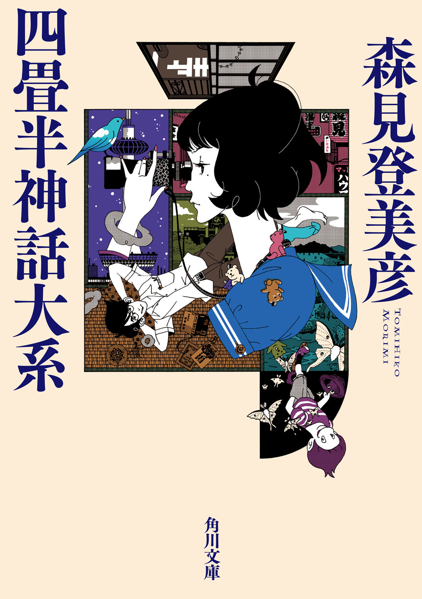

| 四畳半神話体系 | |
| 森見登美彦 | |

四畳半神話大系
森見登美彦
角川ｅ文庫
本作品の全部または一部を無断で複製、転載、配信、送信したり、ホームページ上に転載することを禁止します。また、本作品の内容を無断で改変、改ざん等を行うことも禁止します。
本作品購入時にご承諾いただいた規約により、有償・無償にかかわらず本作品を第三者に譲渡することはできません。
本作品を示すサムネイルなどのイメージ画像は、再ダウンロード時に予告なく変更される場合があります。
本作品は縦書きでレイアウトされています。
また、ご覧になるリーディングシステムにより、表示の差が認められることがあります。
第一話 四畳半恋ノ邪魔者
大学三回生の春までの二年間、実益のあることなど何一つしていないことを断言しておこう。異性との健全な交際、学問への精進、肉体の鍛錬など、社会的有為の人材となるための布石の数々をことごとくはずし、異性からの孤立、学問の放棄、肉体の衰弱化などの打たんでも良い布石を狙い澄まして打ちまくってきたのは、なにゆえであるか。
責任者に問いただす必要がある。責任者はどこか。
私とて誕生以来こんな有様だったわけではない。
生後間もない頃の私は純粋無垢の権化であり、光源氏の赤子時代もかくやと思われる愛らしさ、邪念のかけらもないその笑顔は郷里の山野を愛の光で満たしたと言われる。それが今はどうであろう。鏡を眺めるたびに怒りに駆られる。なにゆえおまえはそんなことになってしまったのだ。これが現時点におけるおまえの総決算だというのか。
まだ若いのだからと言う人もあろう。人間はいくらでも変わることができると。
そんな馬鹿なことがあるものか。
三つ子の魂百までと言うのに、当年とって二十と一つ、やがてこの世に生をうけて四半世紀になんなんとする立派な青年が、いまさら己の人格を変貌させようとむくつけき努力を重ねたところで何となろう。すでにこちこちになって虚空に屹立している人格を無理にねじ曲げようとすれば、ぽっきり折れるのが関の山だ。
今ここにある己を引きずって、生涯をまっとうせねばならぬ。その事実に目をつぶってはならぬ。
私は断固として目をつぶらぬ所存である。
でも、いささか、見るに堪えない。
○
人の恋路を邪魔するものは馬に蹴られて死んでしまう運命にあるというので、私は大学の寥々たる北の果てにある馬術部の馬場には近づかないことにしていた。私が馬場に近づけば、猛り狂った荒馬たちが柵を越えて襲いかかって来て、よってたかって私を踏みつぶし、すき焼きの具にもならない汚い肉片に変えてしまったことであろう。同様の理由によって、私は京都府警平安騎馬隊をひどく恐れた。
なぜ私が馬を恐れたかと言えば、私は知らない人も知っているほどに悪名高い、恋ノ邪魔者であったからである。私は死神のいでたちをした黒いキューピッドであり、恋の矢のかわりにマサカリを振るって、赤外線センサーのように張り巡らされた運命の赤い糸を、切って切って切りまくった。その所業のために、若き男女が大盥六つ分の苦い涙を流したという。
まことに非道の極みである。それは分かっている。
そんな私も、大学に入る直前には、ひょっとするとあるかもしれない異性との薔薇色の交際にむけて軽い武者震いをしたこともあった。入学後数ヶ月を経ずして、そのような決意を強いてかためる必要はなかったことが判明したものの、「俺は決して野獣のようにはなるまい、清く正しく紳士的に、麗しの乙女たちと付き合って行こう」と心に決めたことさえあったのである。いずれにせよ、理性を放擲して闇雲に結びつかんとする男女を大目に見てやるぐらいの器量はあったはずだ。
それがいつしか、心の余裕を失い、ほころびた赤い糸の切れる音を耳にするたびに言いしれぬ愉悦を感じる極悪人へと転落した。切れ切れの赤い糸が恨みの涙に浮かぶ失恋横町。その絶望的な隘路に私が踏みこんだのは、私の宿敵であり盟友である唾棄すべき一人の男の手引きによるものである。
○
小津は私と同学年である。工学部で電気電子工学科に所属するにもかかわらず、電気も電子も工学も嫌いである。一回生が終わった時点での取得単位および成績は恐るべき低空飛行であり、果たして大学に在籍している意味があるのかと危ぶまれた。しかし本人はどこ吹く風であった。
野菜嫌いで即席ものばかり食べているから、なんだか月の裏側から来た人のような顔色をしていて甚だ不気味だ。夜道で出会えば、十人中八人が妖怪と間違う。残りの二人は妖怪である。弱者に鞭打ち、強者にへつらい、わがままであり、傲慢であり、怠惰であり、天の邪鬼であり、勉強をせず、誇りのかけらもなく、他人の不幸をおかずにして飯が三杯喰える。およそ誉めるべきところが一つもない。もし彼と出会わなければ、きっと私の魂はもっと清らかであっただろう。
それを思うにつけ、一回生の春、映画サークル「みそぎ」へ足を踏み入れたことがそもそも間違いであったと言わざるを得ない。
○
当時、私はぴかぴかの一回生であった。すっかり花の散りきった桜の葉が青々として、すがすがしかったことを思いだす。
新入生が大学構内を歩いていればとかくビラを押しつけられるもので、私は個人の情報処理能力を遥かに凌駕するビラを抱えて途方に暮れていた。その内容は様々であったが、私が興味を惹かれたのは次の四つであった。映画サークル「みそぎ」、「弟子求ム」という奇想天外なビラ、ソフトボールサークル「ほんわか」、そして秘密機関〈福猫飯店〉である。おのおの胡散臭さには濃淡があるものの、どれもが未知の大学生活への扉であり、私はなけなしの好奇心でいっぱいになった。どれを選んでもとりあえず面白い未来が開かれると考えていたのは、もはや手の施しようのない阿呆としか言いようがない。
講義が終わってから、私は大学の時計台へ足を向けた。色々なサークルが新歓説明会の待ち合わせ場所にしているからである。
時計台の周辺は湧き上がる希望に頬を染めた新入生たちと、それを餌食にしようと手ぐすねひいているサークルの勧誘員たちで賑わっていた。幻の至宝と言われる「薔薇色のキャンパスライフ」への入り口が、今ここに無数に開かれているように思われ、私は半ば朦朧としながら歩いていた。
そこで私が見つけたのが、映画サークル「みそぎ」の看板を持って待っている学生数人であった。新入生歓迎の上映会が行われるので、そこまで案内するという。今にして思えば、後をついていくべきではなかった。そして「みんなで楽しく映画作ってるよ」という甘言に私らしくもなく惑わされ、友だち百人作るべく、その日のうちに入会を決めてしまったのは、来るべき薔薇色の未来への期待に我を忘れていたとしか言いようがない。そこから私は獣道へ迷いこみ、友だちどころか敵ばかり作った。
映画サークル「みそぎ」に入ってはみたものの、腹立たしいほど和気藹々とした雰囲気になかなか馴染むことができない。「これは乗り越えるべき試練なのだ、この異様な明るさの中へ堂々と立ち交じってこそ、薔薇色のキャンパスライフが黒髪の乙女がそして全世界が俺に約束される」と自分に言い聞かせながらも、私は挫けかけていた。
そうして片隅の暗がりに追いやられた私の傍らに、ひどく縁起の悪そうな顔をした不気味な男が立っていた。繊細な私だけが見ることができる地獄からの使者かと思った。
それが小津と私の出会いである。
○
小津と私の出会いから、時はひと息に二年後へ飛ぶ。
三回生になった五月の終わりである。
私は愛すべき四畳半に座りこんで、憎むべき小津と睨み合っていた。
私が起居しているのは、下鴨泉川町にある下鴨幽水荘という下宿である。聞いたところによると幕末の混乱期に焼失して再建以後そのままであるという。窓から明かりが漏れていなければ、廃墟同然である。入学したばかりの頃、大学生協の紹介でここを訪れたとき、九龍城に迷いこんだのかと思ったのも無理からぬ話だ。今にも倒壊しそうな木造三階建て、見る人をやきもきさせるおんぼろぶりはもはや重要文化財の境地へ到達していると言っても過言でないが、これが焼失しても気にする人は誰もいないであろうことは想像に難くない。東隣に住んでいる大家ですら、いっそせいせいするに違いない。
その夜、下宿に小津が遊びに来た。
二人で陰々滅々と酒を呑んだ。「何か食わせて下さい」と言うので、電熱器で魚肉ハンバーグを焼いてやったら、一口食べただけで、「ちゃんとした肉が食べたい」「葱塩つき牛タンが食べたい」と贅沢なことを言った。あんまり腹が立ったので、じうじうに焼けた熱いやつを口に突っこんでやると、静かに涙を流していたので許してやった。
その年の五月の頭、我々は二年にわたって内部の人間関係を悪化させることに一意専心していた映画サークル「みそぎ」を自主追放になったばかりであった。立つ鳥跡を濁さずとは言うが、我々は大黄河の濁りもかくやというほどに、渾身の力を振り絞って跡を濁した。
小津とは相変わらずの付き合いが続いていたが、映画サークル「みそぎ」を追放になった後も、彼はあれこれ忙しく暮らしている。スポーツサークルや怪しい組織の活動にも手を染めているという。だいたいその夜の訪問も、この同じ下鴨幽水荘の二階に住んでいる人物を訪ねたついでだった。彼はその人物を「師匠」と呼び、一回生の頃からこの幽水荘に出入りしていた。そもそも小津との腐れ縁が断ち切りがたくなったのは、同じサークルで同じような隅の暗がりへ追いやられたというのもさることながら、小津が頻繁にこの下鴨幽水荘を訪ねてくるからでもあった。その「師匠」は何者なのかと訊ねても、小津はにやにやと卑猥な笑みを浮かべるばかりで答えようとしない。おおかた猥談の師匠であろうと私は思っていた。
映画サークル「みそぎ」と私は、もはや完全な断交状態にあったが、耳ざとい小津は色々と新しい情報を仕入れてきて、不機嫌な私に吹きこんだ。我々は「みそぎ」の変革のため、なけなしの名誉をかなぐり捨てたとも言えるし、もはやかなぐり捨てるほどの名誉は残っていなかったとも言えるのだが、小津によれば、我々の捨て身のプロテストもむなしく、サークルの内実は変わっていないようであった。
私は酔いも手伝ってむらむらと腹が立ってきた。サークルからも追放され、大学と下宿を往復するだけの禁欲的生活を送っていた私は、かつての暗い情熱が呼び覚まされるような気がした。そして小津はそういう暗い情熱を煽り立てるのだけはむやみにうまかった。
「ね、やりましょう」
小津が奇怪な生物のように身体をくねらせて言った。
「うむ」
「約束ですぜ。じゃあ、明日の夕方、準備して来ますから」
そう言って小津は嬉しそうに帰って行った。
どうもうまくのせられた感じがした。
私は眠りにつこうとしたが、二階で中国からの留学生たちが集まって賑やかにやっていて、なかなか寝つけなかった。小腹も空いたので、「猫ラーメン」でも食べるかと思い、私は万年床から起きあがった。そうして夜の街へさまよい出た。
○
私が下鴨幽水荘二階に住む神と邂逅したのは、その夜である。
猫ラーメンは、猫から出汁を取っているという噂の屋台ラーメンであり、真偽はともかくとして、その味は無類である。出没場所をここで明らかにするには何かとさしさわりがあろうと思うので、細かくは書かない。しかし下鴨神社の界隈であるとだけ述べておく。
深夜、そこでラーメンをすすりながら、私がたぐいまれな味に恍惚と不安の間を絶え間なく揺れ動いていると、お客が来て隣へ腰かけた。見ると妙な風体をしていた。
紺色の浴衣を悠然と着て、天狗が履くような下駄を履いている。何となく仙人じみている。私は丼から顔を上げて横目で観察し、その怪人を下鴨幽水荘で幾度か見かけたことを思いだした。みしみし言う階段を上っていく後ろ姿、物干し台で日向ぼっこしながら留学生の女の子に髪を切ってもらっている後ろ姿、共用の流しで謎めいた果物を洗っている後ろ姿。髪は台風八号がいま通り抜けたかのようにもしゃもしゃ、茄子のようにしゃくれた顔に暢気そうな眼をしている。年齢不詳で、おっさんかと思いきや、大学生のようでもある。さすがの私も、まさかそれが神だとは思わなかった。
男は店主とは顔馴染みらしく、あれこれにこやかに言葉を交わし、ひとたび器へ向かうや、ナイアガラ瀑布が逆流するような迫力で麺をすすった。そうして私が食い終わるよりも前にスープを飲み干した。まさに神業であった。
男はラーメンを食べ終わったあと、私をじろじろと眺めた。やがて「貴君」と、ひどく古風な言葉で呼びかけてきた。
「下鴨幽水荘の人だろう」
私が頷くと、男は満足気に笑った。
「私も下鴨幽水荘に住んでいる。よろしく」
「どうも」
それきり私が相手をしないでおくと、男は遠慮することもなく私の顔を眺めている。そうして「うんうん」と頷いたり、「そうか、君かあ」と納得したりしている。私はほのかに酔いが残っている状態だったけれども、異様な親しみを見せる男を不気味に感じた。ひょっとすると十年前に生き別れた兄かと考えたが、兄とは生き別れていないし、そもそも私に兄はいない。
ラーメンを片づけて席を立つと、男も私についてきた。当然のように傍らを歩いている。彼は葉巻を出して火を点け、ふわあと煙を吐いた。私が足を速めると、彼はことさら急いでいる風もないのに悠然と隣へ追いついてくる。まるで仙術のようである。
ああ、厄介なことになったと思っていると、男が急に喋り始めた。
○
「光陰矢のごとしとは言うけれども、こうして次から次へと季節が巡ってくるのは腹立たしい。天地はじめてひらけしときからもうどれぐらい歳月が流れたのか分からないけれど、こんな調子では、どうせ大した歳月ではない。そんな僅かな時間で人がこれだけ生み増えたのは驚くばかりだ。そうして日々あれこれと工夫をこらして頑張っている。人というものはじつに勤勉である。立派である。だから可愛く思わないといえば嘘になる。しかしいくら可愛くても、こう多くては哀憐の情をかけてやるゆとりもない。
秋が来れば、また出雲へ行かなくてはならない。電車代も馬鹿にならぬ。昔は案件の一つ一つを吟味して侃々諤々の大論争、一晩かけて決めたこともあったが、この御時世ではそんな悠長なことをやっている暇はない。それぞれが持ち寄った案件をそのまま審査済みの木箱に放りこんでいくのだから味気ない。どうせ我々がいくら知恵を絞って縁を結んだところで、甲斐性なしの男はみすみす好機を逃すし、うまく好機をものにした女はすぐにほかの男と自分で縁を結び直す。これでは、気骨を折る甲斐もない。琵琶湖の水を柄杓で汲みだせと言われてるようなものだ。
神無月をのぞく十一ヶ月は、毎日毎日、案件の作成に追われている。そんなことはワイン片手に鼻糞を適宜ほじくりながら籤引きで決めている連中もいるが、私は根が真面目だから可愛い人の子たちの縁を籤引きで決められない。ついつい深入りする。人をじっくりと見る。自分のことのように悩む。一人一人にふさわしい出逢いについて想いを馳せて頭を掻きむしる。まるで結婚相談所である。これが神のすることか。そんなことだから煙草を吸い過ぎる。髪が薄くなる。好物のカステラを食い過ぎる。漢方胃腸薬の世話になる。明け方に目が覚めてしまって睡眠不足になる。ストレス性の顎関節症になる。医者はストレスをなくせというけれども、山ほどの人の子の運命を双肩に担って、へらへらしていられるものか。
ほかのやつらはクイーンエリザベスⅡ世号みたいな豪華客船に乗って海上二万海里の旅に出て、バニーガールの傍らで暢気に三鞭酒でもすすっているに違いない。『あいつは駄目だよ。いつまでたっても石頭でさ』なんて言ったりなんかして笑い者にしてるんだ。お見通しなんだよ、てめえら。神の風上にも置けぬやつらが。なんで俺ばっかり毎年毎年こんな風に真面目に一本一本、運命の赤い糸を結んで開いて手を打っているのであろう。何の因果でこんな道に進んでしまったのか。という思いになるのも無理なかろう。
そう思わないかい、貴君？」
○
この妙な男は何を滔々と語っているのか。
「何なんですか、あんた？」
私は暗い路上に立ち止まって訊ねた。そこは下鴨本通から東へ折れた御蔭通であった。我々の向かいには暗い糺の森がざわめいていて、その中をがらんとした長い長い下鴨神社の参道が北へ向かってのびている。はるか奥には橙色の御神燈が輝いている。
「神様だよ、貴君。私は神様だ」
彼はどうでもよさそうに言って、人さし指を立てた。
「かもたけつぬみのかみ、という」
「はあ？」
「かもたけつのみもかも......かもたけつぬみのかみ、だ。何遍も言わせるな、舌を噛む」
そう言って男は下鴨神社の暗い参道を指さした。
「知らんのか、貴君。下鴨神社の近所に住んでおきながら」
下鴨神社には参ったことがあるが、こんな神様がおわしますとはついぞ知らなかった。京都には由緒正しい神社が山ほどあるのだろうが、中でも下鴨神社は世界遺産にもなった屈指の大神社である。私にはとうてい想像もつかぬような歴史を背負った大神社の祭神を名乗るには、目の前の男はやや説得力に欠けるきらいがある。良くて仙人、悪くて貧乏神である。下鴨神社の祭神がつとまる器とは思われない。
「貴君、信じていないな」彼は唸った。
私は頷いた。
彼は「嘆かわしい嘆かわしい」と言いながら、そのくせちっとも嘆いている風ではない。良い匂いのする葉巻の煙をふわふわ夜風に流している。糺の森がざわざわと音を立てるのが不気味であった。
私は煙草を吸っている男を後ろに残して、足早に歩き始めた。こういう神秘的な人物と交わりをもっても、ろくなことはあるまい。
「まあ、待ちなさい」
男は私に呼びかけた。
「私は君のことなら何でも知っている。ご両親の名前も知っている。赤ん坊の頃はしょっちゅうゲロを吐いて何だかいつも酸っぱい匂いのする赤ちゃんだったということも知っている。小学校時代の渾名、中学校時代の学園祭、高校時代の淡い初恋......もちろんこれは失敗に終わった。初めてアダルトビデオを見たときの興奮というか驚愕、浪人時代、大学に入ってからの怠惰で破廉恥な日々......」
「嘘だ」
「知ってるんだよ。すべてを知っている」
彼は自信ありげに頷いた。
「たとえば貴君は、上映会で城ヶ崎なる人物の唾棄すべき行状を暴く映画をゲリラ上映して、映画サークルから自主脱退を余儀なくされた。なにゆえそんな風にいじける一方の二年間を過ごしたのかという原因を知っている」
「それは小津が」
思わず私は口にしたが、彼は手を挙げて私を制した。
「貴君が小津の薄汚れた魂に影響されたことは認めよう。しかしそれだけではないだろう」
私の脳裏を、来し方二年のむにゃむにゃが走馬燈のように流れた。よりによって神聖なる下鴨神社の森で、棘だらけの思い出に繊細なハートを鷲掴みにされかけ、私は「ぎゃあああ」と叫びたくなったが紳士らしく堪えた。かもたけつぬみのかみを名乗る男は、七転八倒の孤独な心理的暗闘を演じている私を愉快そうに眺めている。
「大きな御世話だ。あんたには何も関係がない」
私が言うと、彼は首を振った。
「これを見たまえ」
彼は浴衣の胸元から汚い紙の束を取りだした。そばに蛍光灯がついている掲示板があって、彼はその明かりに近づいた。そうして私を手招きする。吸い寄せられるように私も蛍光灯の明かりに入った。
彼が取りだしたものは、ページを繰るたびに百年かけて積もった埃が舞い立ちそうな分厚い帳面であり、ところどころに虫食いができている。彼はべろべろと指を舐めながら帳面をめくるので、かなりの量の埃を食べているに違いない。
「ここだ」
彼が指さしたのは帳面の終わりに近い。薄汚れた灰色のページに、女性の名と、私の名、そして小津の名が毛筆で記されてある。いやに物々しい字体であり、まるで自分が偉い神様になったように思われた。
「秋になれば、我々は出雲に集まって男女の縁を決める。君も知っているだろう。私が持って行く案件だけでも何百件にもなるが、そのうちの一つがこの問題だ。分かるね、どういうことか」
「分かりません」
「分からんか、思いのほか阿呆だな。つまり私は、君も知っているこの女性、明石さんの縁を誰かと結ぼうとしている」
神様は言った。
「ようするに、貴君か、小津君かのどちらかだ」
糺の森がごうごうと暗い風に揺れた。
○
翌日の昼過ぎに起きだし、私は腐りかけた寝床に正座した。昨夜の自分の阿呆っぷりが思い起こされ、ひとりつつましく赤面した。
下鴨神社の神様が猫ラーメンの屋台に現れ、しかも彼は私の下宿の二階に住んでおり、そうして彼が私と明石さんの縁を取り結ぼうと言う。都合の良い妄想に耽るにもほどがあるではないか。人恋しさに駆られるあまりに心のたがをゆるめて、かくのごとき妄想をほしいままにするとは、紳士にあるまじき破廉恥ぶりである。
それにしても、前夜の神との出会いは平凡であった。何らかの奇蹟を見せられたわけもなく、稲妻がぴしゃーんと光ったわけでもない。狐やら烏やら神のお使いがうやうやしく現れたわけでもない。たまたまラーメンの屋台で神様が隣へ腰かけたに過ぎない。このあまりにも説得力のない感じが、逆に説得力があるといっても、説得力に欠けるであろうか。
真偽を確かめるのはたやすい。今から二階に上がって神様に面会してくればよい。しかし、もしドアを開けて昨夜の神が現れ、「どちらさまですか？」と言われれば、何と言ってごまかせばよいのか。あるいは「やーい、ひっかかった」と言われたら、それこそ目も当てられない。おそらく己を罵倒しながら暗い後半生を送る羽目になるだろう。
「決心がついたら訪ねてくれたまえ。二階の一番奥だ。ただし、三日以内には返事をもらいたい。私も忙しいのだ」
あの妙ちくりんな神様はこう言った。
大学と下宿を往復するだけの日々に打ちひしがれた挙げ句、このような妄想にとらわれて右往左往していては私の沽券にかかわる。私は「なむなむ、なむなむ」と繰り返し唱え、気球のように膨れ上がって五月の空へ浮かび上がろうとする妄念を抑えた。
そういえば、あの神を名乗る男は、わざわざ出雲へ出かけて男女の縁結びをすると言っていた。本当にそんなことがあってたまるものか。
私は書棚を漁って辞典を取りだした。
○
神無月つまり旧暦の十月、八百万の神々が出雲へ集まって諸国がお留守になるということは多くの人が知っていよう。私だって知っていた。
八百万の神様の内訳についてはつまびらかにしないが、八百万と言えば現在の日本の人口の十五分の一に当たる。それだけの数になれば、中には相当妙ちくりんな神様もおわしますに違いない。いかに優秀な学生を集めたと豪語する大学においても、万人の認める阿呆がうごうごしているのとまったく同様である。
これまで私が疑問に思っていたのは、それだけの神様をわざわざ出雲へ集めて、いったい何を話し合っているのかということであった。地球温暖化を防止するための施策や、経済のグローバル化について語り合っているとでも言うのであろうか。全国に散らばった神々がわざわざ集って一ヶ月もの間討議するということなのだから、これは一大イベントと言って差し支えない。さぞかし重大な問題について熱い議論が戦わされているに違いない。気心の知れた仲間と一緒になって鍋をつつきながら、ひたすら猥談に花を咲かせているだけのはずがない。それではただの阿呆学生となんら変わるところがない。
その日、下宿の辞典を調べてみて、恐るべき事実を私は目の当たりにした。
そこには、八百万の神々は出雲で侃々諤々の論争の末に、男女の縁を決めているということが書いてあった。たかが運命の赤い糸を結んだりほどいたりするために、諸国の神々がわざわざ一堂に会するという。あのラーメン屋で出会った胡散臭い神様が言っていたのは本当のことらしい。
私は神々に対する怒りで震えた。
もっとほかにすることはないのか。
○
気分転換のために勉学に励もうとした。
しかし、教科書に向かっているうちに、この不毛に過ぎた二年の遅れをがつがつとみっともなく取り返そうとしているような気分になってきた。そんないじましい己の姿は私の美学に反する。したがって私は潔く勉強をあきらめた。こういった潔さには自信がある。つまりは紳士だということだ。
こうなると、提出すべきレポートは小津に頼るほかない。〈印刷所〉と呼ばれる秘密組織があって、そこに注文すれば偽造レポートが手に入るのである。〈印刷所〉なる胡散臭い組織へ負んぶに抱っこでやってきたおかげで、私はいまや小津を介して〈印刷所〉の助けを借りなければ急場のしのげない身体になってしまった。身も心も蝕まれてぼろぼろである。小津との腐れ縁が断ち切りがたい原因はここにもある。
まだ五月の終わりだというのに、もう夏が来たかのように蒸し暑い。猥褻物陳列で訴えられても文句が言えない規模まで窓は開け放っているが、空気は澱んでいる。澱んだ空気は種々の秘密成分を織り交ぜながらじっくりと時間をかけて熟成され、あたかも山崎蒸留所の樽に詰められた琥珀色のウヰスキーのごとく、ひとたびこの四畳半へ立ち入った者を完膚なきまでに酩酊させずにはおかない。かといって、廊下に面した戸を開くと、幽水荘をうろつく子猫が勝手に入って来てにゃあにゃあと可愛い。食べちゃいたいほど可愛いから喰ってやろうかと思ったが、さすがにそこまで野蛮な所業に及ぶことはできない。たとえパンツ一丁でいるにしても、紳士的であらねばならないからである。子猫の目脂を取ってやってから、すみやかに追いだした。
ドアを閉めて、四畳半にごろんと丸太のように横になった。ふしだらな妄想にふけってみようと思ったが、それもうまくいかない。薔薇色の未来への計画を立てようと思ったけれどもうまくいかない。あっちで腹を立て、こっちで腹を立て、乱立するのは腹ばかりだ。そうして、四畳半に隈なく乱立する腹の隙間をくぐり抜けようとしたゴキブリに怒りのすべてをぶつけたため、不運なゴキブリは木っ端みじんになった。
昼過ぎに起きだしたために、日はさっそく暮れかかる。窓から射す西日がまた私の苛立ちに拍車をかけた。橙色の日溜まりの中でむうっとふくれている孤独な暴れん坊将軍、今にも高貴な白馬で果てしない海辺を駆けだしたい気分だったが、「恋ノ邪魔者」たる私は馬が怖い。
不必要かつアンビバレントな思いに苛まれながら、刻一刻と迫る小津との約束の刻限に思いを馳せると、もう自分をいぢめるのもたいがいにせにゃならんなと思われた。自虐的な戦いを重ねていれば、いつの日か、お釈迦様が蜘蛛の糸を垂らして引っ張り上げ、頭を撫で撫でしてくれるとでも思っているのか。どうせ蜘蛛の糸にしがみついたところをぷつんと切られて四畳半地獄へ逆戻り、お釈迦様にエンターテインメントを提供するのが落ちであろう。
午後五時、目眩く自虐的な妄想の果て、不機嫌の極北に立ち尽くす私のもとへ、小津が訪ねてきた。
「あいかわらず汚い顔をしてますなあ」
それが彼の第一声であった。
「おまえもな」
私は憮然として応酬した。
そういう彼の顔も、我が下宿の共同便所のように薄汚い。かすかにアンモニア臭がするのは私の妄想であろうか。暑苦しい西日の中でじっと見つめ合う二十歳過ぎの男と男。不機嫌と不機嫌の相互作用が不機嫌を生み、生まれた不機嫌たちがさらに不機嫌を生み落とすという臭気紛々たる悪夢の連鎖。もうこんなことはうんざりだ。
「用意できたのか」
私は訊ねた。
小津は手にぶら下げたビニール袋をかすかに揺らして見せた。青や緑や赤といった毒々しい色合いの筒がいっぱい飛びだしていた。
「仕方ない、行くか」
私は言った。
○
私と小津は、閑静な町中で九龍城のごとき気配を湛えている下鴨幽水荘を後にした。
御蔭通を辿って下鴨神社の参道を横切り、下鴨本通へ出た。京都家庭裁判所の前から下鴨本通を渡れば、目の前に流れるのは賀茂川であり、そこに掛かっているのは葵橋である。
ふて腐れるにもほどがあるという不吉な顔をした男が二人、葵橋から清冽な賀茂川の流れを覗いて天下に誇るべき夕景を台なしにした。我々は腕組みをして、下流を眺めた。両岸に盛り上がる新緑が夕日に照らされて美しかった。葵橋から眺めると、暮れてゆく空がぽっかりと広く見えて、川下にかかる賀茂大橋をバスや車が行き交うのが見えた。これだけ離れた場所からも、河原で戯れる学生たちの軟弱な気配が感じられる。やがてあそこは阿鼻叫喚の地獄となるであろう。
「本当にやるな？」
私は言った。
「天誅を加えるって、昨日言ってたじゃないですか」と小津。
「もちろん、自分では天誅だと思っている。しかし世間の人間から見れば、阿呆の所業だ」
私がそう言うと、小津は鼻で笑った。
「世間を気にして、自分の信念を折り曲げるんですか？ 僕が身も心も委ねたのは、そんな人じゃありませんね」
「うるさい」
彼がこのような気色の悪いことを言うのは、ただ私を煽って愉快な揉め事を起こしたいからに過ぎない。他人の不幸をおかずにして飯を三杯喰う彼にとって、ありとあらゆる阿呆な感情に揉まれて他人がみっともなく右往左往するのを眺めることこそ、無上の楽しみであり生き甲斐であった。
「よし、やってやるぞ。行こう」
彼の愚劣な品性を軽蔑しながらも、私は己の信念に忠実であるために、敢えて一歩を踏みだした。
我々は葵橋西詰から賀茂川の西岸に降りて、そのまま川下へ進んだ。
北東からやってきた高野川と、北西からやってきた賀茂川が、一つになって鴨川となる。その合流地点、高野川と賀茂川に挟まれた逆三角形の領域を、学生は「鴨川デルタ」と呼ぶ。そしてその地点は、春から初夏にかけての新入生歓迎コンパ会場として、広く利用されている。
やがて鴨川デルタに近づいた。青いシートを広げて笑いさんざめく人々の様子が手に取るように分かる。我々はいっそう用心して、出町橋の暗がりに身をひそめた。デルタで思うさま戯れている敵陣営に姿を見つけられてしまうと、一ノ谷の戦のごとく大胆な奇襲作戦が水泡に帰すことになるからである。
私はビニール袋から打ち上げ花火を取りだして地面にならべた。小津は私が貸したカール・ツァイスの単眼鏡を取りだし、対岸にあるデルタ地帯を観察している。
私は煙草に火を点けた。川岸を流れる夕風が、煙をサッと散らした。子連れの親父さんが、出町橋の下で不穏な動きを見せている我々を胡散臭そうに一瞥して通り過ぎた。しかし、一般市民の目を気にしている場合ではない。これは自己の信念を貫くための止むを得ざる行動である。
「どう？」
私は訊ねた。
「同回生のやつらはみんな居るな。ひひひ。でも、まだ相島先輩の姿が見えない。城ヶ崎先輩の姿もない」
「酒呑みのくせに宴会に遅れるとは、どういうつもりだ。常識がないのか」
私は唸った。「あの二人がいなくては、奇襲の意味がない」
「あ、明石さんだ」
明石さんとは、我々の一回下の女性である。私は昨夜、あの胡散臭い神様から見せられた帳面を思いだした。
「明石さんも来てるのか？」
「ほら、あそこの土手の上に座ってる。手酌で麦酒を飲んでいる。相変わらず孤高の風を貫きとおしてますねえ」
「立派だ。しかしこんなしょうもない宴に来なくてもよかろうに」
「彼女を巻き添えにするのは、心苦しいですね」
私は明石さんの理知的な風貌と優雅な所作について思いを馳せた。
「あ、あ、あ」
小津が嬉しそうな声を上げた。「相島先輩が来た」
私は彼から単眼鏡をひったくり、松の間を抜けて土手を降りてくる相島先輩の姿を追った。河原で待つ新入生たちが歓声を上げて迎えている。
相島先輩は、映画サークル「みそぎ」に君臨する城ヶ崎先輩の右腕であり、しつこく我々を苛めた人物である。人の作った映画にケチをつけるのはまだ許されるが、上映スケジュールをごまかすというアクロバティックな手法で我々を上映会から締めだそうとしたことすらある。編集機材を借りるのに土下座に近い屈辱を舐めたこともある。許すまじ。彼はあんなに歓迎されているにもかかわらず、なにゆえ我々が対岸でかくのごとき状況に甘んじなければならぬのか。今日こそ正義の鉄槌を下し、積年の恨みを晴らしてくれる。降り注ぐ火花から逃げまどい、己があやまちを腹の底から悔い、浜辺で蟹とたわむれながらしくしく泣き濡れるがよかろう。
私は飢えた獣のように鼻息を荒くして、手近な花火を手に取った。小津が私の手を押さえた。
「駄目ですよ。まだ城ヶ崎先輩が来てない」
「もう構わん。相島先輩だけでも亡き者にしてくれるわ」
「気持ちは分かります。でも本丸は城ヶ崎先輩です」
押し問答がしばらく続いた。
動機はあくまで不純ながらも、小津の言うことには一理あった。影武者というべき相島先輩へ一生懸命攻撃をしかけても馬鹿を見る。私は抜きかけた太刀を鞘におさめた。
ところが許しがたいことに、いくら待っても城ヶ崎先輩は来なかった。夕風がひゅうひゅう通って、腹の底から切なくなる。酒が入り始めた対岸の敵陣では、朗らかな笑い声が響いている。対するこちらでは出町橋の暗がりで二人の男がじっとうずくまり、犬の散歩をする人やジョギングに励む人から疑いの視線を向けられている。
賀茂川を挟んで、あからさまに明暗を分けた状況となり、これが私の怒りに油を注いだ。傍らにいるのが黒髪の乙女であれば、暗がりで身を寄せ合うのも、我慢するにやぶさかではない。しかし、傍らにいるのは小津である。対岸では新入生歓迎コンパが和気藹々と繰り広げられているというのに、なぜこちらは大正時代の高利貸しのような不吉な顔をした男と身を寄せ合っていなければならないのか。私が何か間違ったことをしたというのか。非は私にあるというのか。せめて、もう少し同志を、むしろ黒髪の乙女を、と私は思った。
「これはまた明暗を分けましたねえ」小津が言った。
「うるさい」
「ああ、向こうは楽しそうですなあ」
「おまえ、どっちの味方なんだ」
「もう、こんな実りのないことはやめて、あっちに行こうかな。初々しい新入生たちと一緒にお酒を呑みたいな」
「裏切るのか」
「べつに何の約束もしてないでしょ」
「身も心も俺に捧げたと、ついさっき言ったじゃないか」
「そんな昔のこと忘れちゃった」
「てめえ」
「そんな怖い目で見ないで」
「おい、くっつくなよ」
「だって寂しいんだもの。それに夕風が冷たいの」
「この、さびしがりやさん」
「きゃ」
橋の下で意味不明の睦言を交わす男女を模倣することにもやがて虚しさを感じ、むしろその虚しさこそが我々の堪忍袋の緒を切った。城ヶ崎先輩の姿は見えないが、こうなれば仕方がない。彼には節足動物の死骸を塗りこんだケーキでも送り届けることにして、今宵はその他の面子に冷や水を浴びせるだけで満足することにしよう。
我々は花火を抱えて、夕闇が領し始めた河原へ出た。小津が川まで降りて、持ってきたバケツに水を汲んだ。
○
打ち上げ花火というものは、夜空に打ち上げるべきものである。決して、手に持ったり、人に向けたり、川向こうで和気藹々と新入生歓迎コンパをしている人々を爆撃するのに使ったりしてはいけない。とても危険である。くれぐれも真似をしないようにしていただきたい。
奇襲とはいえ、いきなり攻撃に出るのは私の流儀に反する。私はまず川向こうの敵陣に対して大音声を上げた。「やあやあ我こそはむにゃむにゃ、これから復讐を開始する。くれぐれも目に注意」
大音声を上げたあと、私は対岸の人々を睨み回した。ぽかんと阿呆のように口を開けた面々が、「なんのこっちゃ」というようにこちらを眺めている。なんのこっちゃ分からなければ、分からせてやるまでだ。私はいきり立った。
ふと、土手のてっぺんに座って麦酒の瓶を抱えている明石さんの姿が目に入った。彼女は「あ」「ほ」と口を動かし、まことに的確で鋭利な批評をやってのけた後、そそくさと立って松の木の向こうに避難した。
土手の下にシートを広げている他の連中は事態が飲みこめないまま目を白黒させている。明石さんが避難したとなれば、遠慮することはない。私はさっそく配下の小津に砲撃を命じた。
ひとしきり花火を打ちこんだあと、ぎゃあぎゃあ言っている対岸を尻目に颯爽と逃げだすつもりだったが、怒り狂う同回生の男連中が下級生に良いところでも見せようと思ったのか、身体が濡れるのも厭わずに川を渡り始めたので、我々は慌てた。
「おい、逃げるぞ」
私は言った。
「待って、待って。まだ火の始末が終わってません」
「早く早く」
「まだ何本か撃ち残しがあるけど」
「放っておけ」
我々は出町橋へ走ろうとしたが、土手の上から駆け下りてくる人影がある。何だかただならぬ剣幕でこちらへ向かってくる。「オマエらッ」と叫ぶ野蛮な声には聞き覚えがあった。
「うわ、今さら城ヶ崎さんが出た」小津が叫んだ。
「なんと間の悪い」
小津が悲鳴を上げて方向転換し、私の傍らをすり抜けるようにして反対方向へ逃げた。賀茂大橋へ向かって、夕闇の中をじつにすばしこく駆けていく。逃げながらすでに「ごめんなさいごめんなさい」と叫んでいる。誇りも何もあったものではない。
私は城ヶ崎先輩にあやうく襟首を掴まれそうになったが、豹のようにしなやかにそれを振り切ると、小津の後を追って賀茂大橋の方へ走りだした。
「オマエら、いつまでこんなことやってるつもりだッ！」
城ヶ崎先輩が河原に立ち、説教言葉を投げつけてくる。よりにもよってこの私に説教するとは何事か、人をとやかく言う前に己の姿を虚心に見つめてみろ。私はきわめて真っ当な怒りのあまりもう少しで振り向くところであったが、多勢に無勢、いくら私が己の正当性を主張したところで多数派の横暴に敗北するのは明らかだ。そのような不名誉を甘受するつもりは毛頭ない。したがってこれは逃げるのではない。戦略的退却である。
すでに小津は賀茂大橋のたもとへ駆け上がり、私の視界から消えんとしている。おそろしいまでの逃げ足の速さよ。さて私もあそこまで行かねばと思ったとたん、何か熱いかたまりがぼうんと背中に当たって、私は呻いた。
背後で歓声が上がった。
彼らが報復のために発射した花火が、退却する私に追い打ちをかけたらしい。過去二年間に自分のやってきたあんなことこんなことが、走馬燈のように脳裏を流れた。
○
大学に入って以来二年、私は不毛な戦いを繰り広げてきた。「恋ノ邪魔者」の称号に恥じない天晴れな戦いぶりであったと断固自負しながらも涙を禁じ得ない。それは誰からも賞賛されない、そして賞賛されるはずがない茨の道であった。
入学当初はそれなりに薔薇色であった私の脳味噌が暖色を失い、みるみる青紫色に変わった経緯については多くを語るまい。語るほど多くのものはないし、そんな益のないことをして読者へ虚しい共感を求めたところで何になろう。一回生の夏、抜群に切れ味の鋭い「現実」という刃が一閃したとき、私の愚かしくも短い薔薇色の夢は大学構内の露と消えた。
その後、私は冷厳な眼で現実を直視し、軽佻浮薄な夢に浮かれる者たちに鉄槌を下す決意を固めた。ありていに言えば、他人の恋路を邪魔することにした。
東に恋する乙女がいれば「あんな変態やめろ」と言い、西に妄想する男がいれば「無駄なことはやめておけ」と言い、南で恋の火花が散りかけていればすぐさま水をかけてやり、北ではつねに恋愛無用論を説いた。おかげで私は「空気の読めない男」というレッテルを貼られた。しかしそれは誤解だった。誰よりも細かく空気を読んだ上で、意図的に何もかもぶち壊していたのである。
そんな私の戦いを面白がり、私を煽り立て、サークル内に揉め事の火種をまくのを無上の楽しみとする怪人がいた。それが小津である。独自の情報網を駆使して、およそ破廉恥な噂ならば知らぬことはないという彼は、私が油を撒くそばからあることないことを吹聴して職人のようにたくみに火をつけてまわり、つねにサークル内のどこかで修羅場の不協和音が鳴り響くという彼好みの環境を作り上げた。まさに悪の権化というにふさわしい。ホモサピエンスの面汚しである。あんな人間にはなりたくないものだ。
映画サークル「みそぎ」は歴史の浅いサークルだが、それでも全回生合わせて常時三十人ほどのメンバーがいた。それだけ敵の数も多くなった。我々の行為が原因で、サークルを去った人間もいる。辞めた人間に待ち伏せされ、あやうく琵琶湖疏水に沈められそうになったこともある。しばらく下宿に戻ることができず、旅行に出た知人の北白川の下宿に忍びこんで息を殺していたこともある。直截に物を言い過ぎて、同回生の女性に近衛通の路上で泣かれたこともある。
しかし私は負けなかった。負けることができなかった。
そしてあのとき負けていた方が、きっと私もみんなも幸せになることができたのは言うまでもない。小津は幸せにならなくてもよい。
○
私は映画サークル「みそぎ」の体制そのものに、まず苛立っていた。
「みそぎ」では、城ヶ崎先輩の独裁体制が敷かれ、彼の指導のもと、みんなで和気藹々と映画を作るという唾棄すべき体制が打ち立てられていた。当初、やむを得ず彼の采配のもとに動いていた私は、やがて現行の体制に不満を抱いた。かといって、易々と出て行くのでは負けを認めるようでしゃくに障る。そこで城ヶ崎先輩たちの目の前で反逆の狼煙を上げるべく、私は独自に映画を撮り始めることにした。当然のことながら共鳴する者は一人もおらず、やむなく小津と二人で映画を撮った。
一作目は、太平洋戦争前から続く由緒ある悪戯合戦を引き継いだ二人の男が、知力と体力のかぎりを尽くしてたがいの誇りを粉砕しあうというバイオレンス溢れる映画であった。能面のように終始表情を変えない小津の怪演と、私のエネルギー過剰な演技、そして情け容赦ない悪戯の数々が盛りこまれ、たとえようもなく気色悪い映画になった。大詰め、全身をピンク色に染められた小津と、頭の半分を剃られた私とが賀茂大橋で激突するシーンは、一見の価値があるだろう。しかし当然のごとく無視された。上映会で笑ったのは明石さんだけであった。
二作目は、沙翁の『リア王』を下敷きとして、三人の女性の間を揺れ動く男の心情を描いた作品であったが、女性キャストが一人もいないという根本的問題をごまかしきれず、何だかわけがわからないことになり、『リア王』ですらなくなってしまった。しかも揺れ動く男の心情をあまりにも丹念に描き過ぎたために、女性陣からは罵詈雑言の嵐であって、栄えあるベストオブ変態の称号を押しつけられた。笑ったのは明石さんだけであった。
三作目は四畳半がどこまでも続く迷路に閉じこめられた男がそこから脱出するために延々と旅をするというサバイバル映画であったが、「どこかで見たような設定だ」「そもそもサバイバルではない」と言われて終わった。ましなコメントをくれたのは明石さんだけであった。
小津と一緒に映画を作れば作るほど、サークルのメンバーたちはキャンプファイヤーを取り巻くように我々を遠巻きにするようになり、城ヶ崎先輩の視線は凍てつくように冷たくなってゆく。最終的に、先輩は我々を路傍の石ころも同然に無視し始めた。
奇怪なのは、我々が努力すれば努力するほど、先輩のカリスマぶりが上がっていくように思われてならないことであった。今にして思えば、我々は先輩のカリスマぶりを持ち上げる、いわばテコの支点として利用されたのであるが、今ごろそんなことを言っても後の祭りである。
じつに、生き方に工夫が足りなかった。
私はなんてまっすぐだったのであろう。
○
鴨川から無事に戦略的退却を成功させた我々は、街へ出て戦勝祝いをすることにした。
冷たい夕風に吹かれながら自転車を走らせていると、何となく佗びしかった。自転車を置いて、二人でむっつりとしたまま河原町を歩いていった。街の明かりがきらきらして、暗くなった紺色の空を照らしていた。小津はふいに三条大橋の方へ折れて、西詰にある古めかしい束子屋に入っていった。私は暗い軒先で待った。
やがて彼は無念そうな顔をして出てきた。
「何だ？ 束子を買ったのか？」
「いやあ、樋口師匠に貢ぎ物をしなくちゃならないんですけど。それがね、どんな汚れでも落ちる幻の超高級亀の子束子が欲しいと」
「そんなもんあるのか」
「あるという噂なんですがねえ......店の人に笑われましたわ。師匠には他のものをさし上げるしかないな」
「おまえも阿呆なことに精神を磨り減らしているなあ」
「師匠はいろいろなものを欲しがるから大変なんです。ちりめん山椒やら出町ふたばの豆餅ならまだ手を打てるけれども、骨董品の地球儀やら古本市の幟やら、タツノオトシゴや大王烏賊まで欲しがるんですからねえ。そうしてヘタなものを持って行って御機嫌を損ねたら破門ですわ。気の安まる暇もないのです」
そう言いながらも、小津は妙に楽しそうであった。
それから我々は木屋町へぶらぶら歩いていった。
たしかに戦略的退却であったはずであるのに、これは敗北なのではないかという自己懐疑の念を催したのは不愉快である。小津は「面白けりゃあ何でもいいんだ」という顔をしているが、私はそのようにいいかげんな考え方はできない。そもそも今宵の鴨川デルタ奇襲作戦は、怨み骨髄の先輩や同輩たちに我々の存在を思い知らせるためのものであったが、さきほどの戦いを冷静に思い起こしてみるに、彼らはどこか面白がっていたような節がある。我々の闘いは酒席の余興ではない。かぎりなく酒席の余興に似た闘いであっても、そこには叡山よりも高い誇りがある。
「きひひ」
小津が歩きながら、急に笑った。
「城ヶ崎先輩はあんな風に後輩の前では偉そうにしてますが、もう内情はぐたぐただからね」
「そうなのか」
私が問うと、小津は偉そうな顔をした。
「博士課程に居座ってはいるものの、映画ばっかり撮って勉強してなかったから実験ひとつマトモにできない。親は仕送りを減らすと言っているのにアルバイト先では店長と喧嘩してやめちゃった。相島先輩から奪った女の子とは先月別れたばかり。偉そうに説教される筋合いは毛ほどもないです」
「おまえ、なんでそんなことまで知ってるの？」
街の明かりの中で、小津はぬらりひょんのような顔をした。
「僕の情報収集能力を馬鹿にしてもらっては困ります。あなたのことだって、あなたの恋人よりも知っているんです」
「俺に恋人なんかおらん」
「ま、万が一の話です」
小津は難しい顔をした。「本当のところは相島先輩のほうが曲者なんですがね」
「そうかな」
私が言うと、小津は意地の悪い笑みを浮かべた。
「あなたはあの人の裏の顔を知らないですからねえ」
「教えろよ」
「言わない言わない。おそろしくてトテモ言えない」
かつて城ヶ崎先輩が憑かれたように量産した自主製作映画と同じぐらい底の浅い高瀬川が流れている。街の灯を映してきらきらとする水面を眺めているうちに、また腹が立ってきた。
映画同好会「みそぎ」などという坪庭みたいに狭い世界の中で濃密な尊敬を集めている城ヶ崎先輩の、まことにちっぽけなカリスマぶり。今ごろ、新入生、とりわけ女性陣の尊敬を一身に受けて、凝視すべき目前の現実を忘れ、マタタビを得た猫のようにめろめろになっていることであろう。空っぽの映画論をぶって、きわめて紳士的なふりをしているが、そのくせ興味があるのは乳ばかりだ。女性の乳のほかは何一つ見えていない。やみがたい乳への想いに気をとられて、人生を棒に振るがいい。
「ちょっと、ねえ、目が据わってますよ」
小津に注意されて、私はようやく眉間の皺をゆるめた。
そのとき、町中でついとすれ違いかけた女性がこちらへ微笑みかけた。きりりと凜々しい眉をした女性である。私は冷静にそのまなざしを受け、明治百年の男にふさわしい態度で微笑み返した。すると女性がこちらへ寄ってきて、私に話しかけるのかと思いきや、意外にも小津に声をかけた。
「あら、こんばんは」
などと言い、ちょっと色っぽい口調で「こんなところで何してるの？」などと言っている。「ちょっと藪用でして」と小津。
私は彼らから距離を取って立った。盗み聞きするつもりはなかった。何となく艶めかしい雰囲気があればなおさらだ。雑踏に立つ彼らの声は聞こえなくなったが、遠くから眺めていると女性が指を立てて小津の口に突っこむような仕草をしている。なんだか親しげであったが、嫉妬はしない。
二人の様子を野次馬みたいに眺めているのも性に合わないので、私は木屋町通に軒をならべている店々に目をやった。
○
飲み屋や風俗店がならぶ中に、身を細めるようにして暗い民家が建っていた。
その軒下に、白い布をかけた木の台を前にして座る老婆がいた。占い師である。台のへりから吊り下がっている半紙は、意味不明の漢字の羅列で埋まっている。小さな行燈みたいなものが橙色に輝いて、その明かりに彼女の顔が浮かび上がる。妙な凄みが漂っていた。道行く人の魂を狙って舌なめずりする妖怪である。ひとたび占いを乞うたが最後、怪しい老婆の影が常住坐臥つきまとうようになり、やることなすことすべてがうまくいかず、待ち人は来ず、失せ物は出ず、楽勝科目の単位を落とす、提出直前の卒論が自然発火する、琵琶湖疏水に落ちる、四条通でキャッチセールスに引っかかるなどといった不幸に見舞われる─そんな妄想をたくましくしながら私が凝視しているものだから、やがて相手もこちらに気づいたらしい。夕闇の奥から目を輝かせて私を見た。彼女が発散する妖気に、私はとらえられた。その得体の知れない妖気には説得力があった。私は論理的に考えた。これだけの妖気を無料で垂れ流している人物の占いが当たらないわけがない、と。
この世に生まれて四半世紀になろうとしているが、これまで謙虚に他人の意見に耳を貸したことなど、数えるほどしかない。それゆえに、敢えて歩かないでもかまわない茨の道をことさら選んできた可能性がありはしないか。もっと早くに自分の判断力に見切りをつけていれば、私の大学生活はもっと違った形をしたものであったろう。映画同好会「みそぎ」という歪んだサークルに入ることもなく、性根がラビリンスのように曲がりくねった小津という人物と出会うこともなく、恋ノ邪魔者という烙印を押されることもなかったろう。良き友や先輩に恵まれ、溢れんばかりの才能を思うさま発揮して文武両道、その当然の帰結として傍らには美しき黒髪の乙女、目前には光り輝く純金製の未来、あわよくば幻の至宝と言われる「薔薇色で有意義なキャンパスライフ」をこの手に握っていたことであろう。私ほどの人間であれば、そういう巡り合わせであったとしても、ちっとも違和感を覚えない。
そうだ。
まだ遅くはない。可及的速やかに客観的な意見を仰ぎ、あり得べき別の人生へと脱出しよう。
私は老婆の妖気に吸い寄せられるように足を踏みだした。
「学生さん、何をお聞きになりたいのでしょう」
老婆はもぐもぐと口に綿を含んでいるように喋るので、その口調にはより一層ありがたみが感じられた。
「そうですね。なんと言えばいいのでしょうか」
私が言葉に詰まっていると、老婆は微笑んだ。
「今のあなたのお顔からいたしますとね、たいへんもどかしいという気持ちが分かりますね。不満というものですね。あなた、自分の才能を生かせていないようにお見受けします。どうも今の環境があなたにはふさわしくないようですね」
「ええ、そうなんです。まさにその通りです」
「ちょっと見せていただきますよ」
老婆は私の両手を取って、うんうんと頷きながら覗きこんでいる。
「ふむ。あなたは非常に真面目で才能もおありのようだから」
老婆の慧眼に、私は早くも脱帽した。能ある鷹は爪を隠すということわざにあるごとく、慎ましく誰にも分からないように隠し通したせいで、ここ数年はもはや自分でも所在が分からなくなっている私の良識と才能を、会って五分もたたないうちに見つけだすとは、やはりただ者ではない。
「とにかく好機を逃さないことが肝要でございますね。好機というのは良い機会ということですね、お分かりですか？ ただ好機というものはなかなか掴まえにくいものでしてね、まるで好機のように見えないものが実は好機であることもあれば、まさに好機だと思われたことが後から考えればまったくそうでなかったということもございます。けれどもあなたはその好機を捕らえて、行動に出なくちゃいけません。あなたは長生きはされるようだから、いずれその好機をとらえることができましょう」
その妖気にふさわしい、じつに深遠な言葉である。
「そんなにいつまでも待てません。今、その好機をとらえたい。もう少し具体的に教えてもらえませんか」
私が食い下がると、老婆はやや皺を歪めた。右頬が痒いのかしらと思ったが、どうやら微笑んだらしい。
「具体的には申し上げにくいのですよ。私がここで申し上げましても、それがやがて運命の変転によって好機ではなくなるということもございまして、それではあなたに申し訳ないじゃございませんか。運命は刻々とうつろうものでございますから」
「しかし、このままではあまりに漠然としていて困りますよ」
私が首をかしげると、老婆は「ふっふーん」と鼻息を噴きだした。
「宜しいでしょう。あまり先のことは申さずにおきますが、ごく近々のことでしたら申し上げましょう」
私は耳をダンボのように大きくした。
「コロッセオ」
老婆がいきなり囁いた。
「コロッセオ？ なんですか、そりゃ」
「コロッセオが好機の印ということでございますよ。あなたに好機が到来したときには、そこにコロッセオがございます」
老婆は言った。
「それは、僕にローマへ行けというわけではないですよね？」
私が訊ねても、老婆はにやにやするばかりである。
「好機がやって来たら逃さないことですよ、あなた。その好機がやって来たときには、漫然と同じことをしていては駄目なのですよ。思い切って、今までとはまったく違うやり方で、それを掴まえてごらんなさい。そうすれば不満はなくなって、あなたは別の道を歩くことができましょう。そこにはまた別の不満があるにしてもね。あなたならよくお分かりでしょうけれども」
まったく分かっていなかったが、私は頷いた。
「もしその好機を逃したとしましてもね、心配なさる必要はございませんよ。あなたは立派な方だから、きっといずれは好機をとらえることができましょう。私には分かっておりますよ。焦ることはないのですよ」
そう言って、老婆は占いを締めくくった。
「ありがとうございました」
私は頭を下げ、料金を支払った。立ち上がって振り向くと、小津が背後に立っている。
「迷える子羊ちゃんごっこですか？」
彼は言った。
○
その日、街へさまよい出たのは小津の提案であった。
私は夜の街の喧噪を好まず、ほとんど足を踏み入れない。しかし小津は違うらしい。彼のことだから、むくむくと膨れた良からぬ妄念を腹に溜めながら、何らかの猥褻なハプニングを期待して、夜ごと無駄に徘徊しているのであろう。
小津が「葱塩つき牛タンが喰いたい」と繰り返すので、木屋町通に面した焼き肉屋二階にて、我々は日頃不足しがちな栄養を補うことにした。肉の合間に野菜を頼んで、私が椎茸をほくほく食べていると、小津はまるで人が馬糞をつまみ食いしている秘密の現場を目撃したような目つきをした。
「ようそんな気色の悪い物体を食べますねえ。それ菌ですよ。菌の茶色いかたまりですよ。信じられないなあ。その傘の裏にある白いひだひだ、何ですか。何のためにそれあるんですか」
小津が野菜を口にしないでタン塩ばかり食べているので腹が立ち、嫌がる彼の口をこじ開けて生焼けの玉葱の辛いやつをぐいぐいねじこんでいた記憶がある。小津の偏食は筋金入りであり、私は彼がまともに食事をしているところを見たことがない。
「さっきの女の人は誰だ？」
私が訊ねると、小津はきょとんとした。
「さっき占い師のところで喋ってたろう」
「あれは羽貫さんです」小津はそう言って、またタン塩を食べた。
「樋口師匠のお知り合いでね。僕も親しくお付き合いさせてもらってるんです。英会話学校の帰りだったらしいんですが、どこかで飲もうと誘われました」
「この破廉恥野郎。おまえらしくもないモテモテぶりではないか」
「むろん僕は息つく間もなくモテモテですよ。でも丁重に断りました」
「なんで」
「だってあの人、酒を飲むと人の顔を舐めようとするんですもん」
「おまえのその汚らしい顔を？」
「この愛らしい顔を舐めるんです。愛情表現でしょうね」
「おまえの顔なんか舐めたら不治の病になってしまうぞ。命知らずな人だ」
阿呆なことを言っているうちに、じうじうと肉が焼けてゆく。
「さっきの占い師には何と言われたんですか？」
小津がにやにやして蒸し返した。
私は今後の人生いかに生くべきかという大問題について占ってもらったというのに、小津は「どうせ恋占いでしょ。無駄なことをして」と低次元な決めつけ方をした。さらには「ああいやだ、けがらわしい」「すけべすけべすけべ」と壊れた目覚まし時計のように繰り返し、私の厳粛な思索を邪魔した。怒りにまかせて生焼けの椎茸を口に詰めこんでやると、しばらく静かになった。
「コロッセオ」と彼女は言ったが、私はローマには縁がない。コロシアムにも縁がない。自分の日常を事細かに思いだしてみても、関連するものは浮かんで来ない。だとすると、これから私の人生にかかわってくるものなのかもしれない。いったいそれは何であろうか。今のうちに対策を練りに練っておかねば、またしても好機を逃すことになってしまう。私は不安であった。
店内は賑やかであり、つい先日まで高校生だったような幼い顔も見受けられる。新入生歓迎の宴がそこかしこで繰り広げられているのであろう。思いだしたくもないことだが、私もかつては新入生であった。嬉し恥ずかしの未来への希望に満ち溢れていた時期も一瞬とはいえあったのだ。
「もうちょっとましな学生生活を送るべきだったとか思ってるんでしょ」
小津が急に核心をつくようなことを言った。
私は鼻を鳴らして何も答えなかった。
「無理ですね」小津はタン塩を食べながら言う。
「なにが」
「どうせあなたはどんな道を選んだって、今みたいなありさまになっちゃうんだ」
「そんなことあるもんか。俺はそうは思わん」
「無理です。あんたはいかにもそういう顔してる」
「どういう顔だ」
「何というか、有意義な学生生活を送れない星のもとに生まれたというべき顔ね」
「おまえだってぬらりひょんみたいな顔してるくせに」
小津はにんまりした。ますます妖怪みたいな顔になった。
「僕は有意義な学生生活を送れない星のもとに生まれたという事実を前向きに受け止めております。無意義な学生生活を力一杯エンジョイしているのです。とやかく言われる筋合いはございません」
私は溜息をついた。
「おまえがそんな生き方をしているから、俺もこんなふうになっちまったんだ」
「無意味で楽しい毎日じゃないですか。何が不満なんです？」
「何もかも不満だ。俺がおかれているかくのごとき不愉快な状況は、すべておまえに起因する」
「そんな人として恥ずべき言い草を、よくもまあ堂々と断言しますねえ」
「おまえに会わなければ、もっと有意義に暮らしていた。勉学に励んで、黒髪の乙女と付き合って、一点の曇りもない学生生活を思うさま満喫していたんだ。そうに決まってる」
「その椎茸、妄想キノコではないですか？」
「俺がいかに学生生活を無駄にしてきたか、今日気づいたよ」
「慰めるわけじゃないけど、あなたはどんな道を選んでも僕に会っていたと思う。直感的に分かります。いずれにしても、僕は全力を尽くしてあなたを駄目にする。運命に抗ってもしょうがないですよ」
小津は小指を立てた。
「我々は運命の黒い糸で結ばれてるというわけです」
ドス黒い糸でボンレスハムのようにぐるぐる巻きにされて、暗い水底に沈んで行く男二匹の恐るべき幻影が脳裏に浮かび、私は戦慄した。小津はそんな私を眺めながら、愉快そうにタン塩ばかり食べている。この腐れへっぽこ妖怪め。
○
鴨川デルタでの戦略的退却、占い師の謎めいた言葉、目の前に座る小津など、あれこれが積み重なって、私が杯を干すのを速くした。
「明石さん、まだみそぎにいるんだなあ」
私が呻くと、小津は首を振った。
「いや、なんだかつい先週、辞めたようなことを聞きましたよ。城ヶ崎先輩も引き留めたらしいんですけどねえ」
「なんだ。じゃあ俺たちが辞めてすぐではないか」
「今宵はたぶんＯＢとして来てたんだろうと思いますな。彼女も律儀ですのう」
「それにしてもおまえ、よくそんなことまで知っているな」
「だって、こないだ彼女と一緒にお酒飲んじゃった。同じ工学部のよしみで」
「きさまそんな抜け駆けを」
鴨川デルタの土手下の一団から距離をおいて、松の傍らで飄々と麦酒をあおっていた明石さんの姿を思い描いた。
「明石さんってどうです？」
小津が言った。
「どうって何が」
「だからね、あなたという未曾有の阿呆で醜悪無比な人間をですよ、理解できてしまう不幸な人はこれまで僕しかいなかったわけだけれども」
「やかましい」
「彼女はそれができる。これは好機だ。この好機を掴まないと、あなたにはもう手の施しようがない」
小津は笑みを浮かべて私を眺めた。私は手を振って彼を制した。
「あのね、君。俺は、俺のような人間を理解できる女性は嫌だ。もっと何かこう、ふはふはして、繊細微妙で夢のような、美しいものだけで頭がいっぱいな黒髪の乙女がいい」
「またそんな意味不明のわがままを言う」
「うるさい。放っておいてくれ」
「あなた、まさか一回生のときに小日向さんに振られたこと、まだこだわっているんじゃないでしょうね？」
「その名前を口にだすな」
「あ、やっぱりそうなんですね？ あなたもしつこい人ですねえ」
「それ以上言ったら、この鉄板で焼いてやるぞ」
私は言った。「おまえと恋の話なんぞする気はない」
小津はドッと身体を背もたれに当てて、鼻で笑った。
「じゃあ、この好機、僕が取っちまおう。あんたの代わりに幸せになってやろ」
「おまえは腹黒過ぎるから無理だ。明石さんには人間を見る目がある。それにだいたい、てめえ、本当はもう恋人いるんだろう。俺に隠れてちんちんかもかもやってるんだろう」
「ふっふーん」
「その笑い方はなんだ」
「ヒ・ミ・ツ」
○
そういう苛立たしいやり取りを交わしているうちに、ふいに心の中に浮かんできたのは、あの夢とも現実ともつかぬ、「猫ラーメン」での、かもたけつぬみのかみとの邂逅である。そこはかとなく神秘的でありながらも底抜けに胡散臭いあの邂逅において、不届きにも神を名乗る男は、私と小津を天秤にかけていることを示唆した。
そうだそうだ。あまりにも胡散臭かったので、すっかり忘れていた。
酒に酔った頭で冷静に考えてみるに、現今の状況はまさにあの謎の男が予見した通りと言えるのではないか。いや、そんな阿呆なことがあるわけがない。私ともあろうものが、人恋しさのあまりそのような都合の良い妄想の虜となってあわよくば明石さんという黒髪の乙女とねんごろになりたいと思うなど言語道断。しかしおかしい。あの神は私の人生遍歴を辿ってみせ、さらには私の恥ずかしい棘だらけの過去を仄めかし、そして今ある状況を的確に言い当てている。これは説明がつかない。あの神様は本物なのではないか。本当に毎年秋に出雲へ電車で出かけては、運命の赤い糸を結んだりほどいたりしているのではないか。
そんなことを考えているうちに、だんだん景色がゆらゆらしてきて、どうやら自分はかなり酔っぱらっていると思い始めたあたりで、小津がいないことに気づいた。便所へ行くとか言いながら席を立ったきり戻って来ていない。
初めのうちは、何とも思わずに一人ぼっちで妄想を風船のように膨らましたり凹ましたりして優雅に遊んでいたが、十五分経っても小津が戻って来ないという状況に至って、さては酔っている俺を尻目に軽やかに逃げたかと思い、怒髪天をつく怒りに駆られた。こうやって宴半ばで春風のように軽やかに去り、相手に精算の重荷を背負わせるのは彼の十八番であった。
「くそう、またか」
私がふて腐れて呟いていると、ようやく小津が戻ってきた。
「なんだ」
ホッとして向かいに座った人物を見てみると、これが小津ではない。
「さあがつがつと喰いましょう、先輩。もっと喰いたければ急いで下さい」
明石さんは淡々と言い、皿に残った肉をじうじう焼き始めた。
○
明石さんは私の一つ下の学年で、工学部に所属していた。歯に衣着せぬ物言いで、同回生からも敬遠されていたようである。ここぞという場合には城ヶ崎先輩に刃向かうことも厭わない彼女を眺め、私は好感を抱いた。彼女は舌鋒の鋭さにかけては城ヶ崎先輩にひけをとらず、先輩はそのカリスマぶりに傷がつくことをおそれ、彼女の冷ややかで理知的な顔、そして乳に興味はあるものの、おいそれと言葉をかけられなくなった。
彼女が一回生の夏であった。吉田山の山中で例によって城ヶ崎先輩の意味不明のイメージに従って撮影を行っていたときであろう。休憩して食事をしながら、新入生たちがあれこれ暢気に喋っていた。明石さんの同回生が「明石さんって週末に暇なとき、何してんの？」とへらへらと訊ねた。
明石さんは相手の顔も見ずに答えた。
「なんでそんなことあなたに言わなくちゃならないの？」
それ以来、明石さんに週末の予定を訊ねる者はいなくなったという。
私はその話を後ほど小津から聞いたのであるが、「明石さん、そのまま君の道をひた走れ」と心の中で熱いエールを送った。
そこまでまっとうな理性のある彼女が、なにゆえ「みそぎ」なんぞという妙なサークルに居座っていたのかは分からないが、彼女自身は段取りもうまく、万事手回しが良いし、機材の扱いも一瞬で呑みこんでしまう頭の良さであったので、遠巻きにされつつも尊敬されている面があった。その点、同じ遠巻きにされつつ軽蔑されている私や小津とは雲泥の差がある。
そんな中世ヨーロッパの城塞都市のように堅固な彼女にも、唯一の弱点があった。
前年の初秋、「人手が足りないから手伝え」と言われて、私は嫌々撮影に参加して、エエカゲンに立ち働いていた。場所は相変わらず吉田山である。
木に録音装置をしかけようとして戦時中の検閲官のように冷徹な顔をして木に登っていた明石さんが、「ぎょえええ」とまるでマンガのような声を上げて転落してきた。私はすばやく的確に彼女を受け止めた。言い換えれば、逃げ遅れて下敷きになったのである。彼女は髪を振り乱して私にしがみつき、半狂乱になって右手を振り回した。
木にのぼっている途中、木肌をがしりと右手で掴んだつもりが、なんだかむにゅむにゅしていた。見ると巨大な蛾を掴んでいた。
彼女は蛾が何よりも怖かったのである。
「むにゅっとしてました、むにゅっとしてました」
彼女はまるで幽霊にでも出会ったように顔面蒼白になってがたがた震え、何度もそう言っていたのだが、終始堅固な外壁に身を包んでいる人が脆い部分を露わにしたときの魅力たるや、筆舌に尽くしがたいものがある。恋ノ邪魔者たる私が、危うく恋に落ちるところであった。一回生の夏以来、真っ白に燃え尽きていたはずの煩悩がふたたび燃えだしそうになったところを私はグッとこらえ、「むにゅっとしてました」と譫言のように繰り返す彼女を、「まあまあ落ちつきたまえ」と紳士らしく慰めていた。
私と小津の不毛な戦いについて、彼女が共感をもっていたとは思えない。少なくともサークル内の浮ついた話については、彼女は終始冷ややかなる傍観者であったが、かといってことさらそれを問題にするといったところはなかった。
私が小津と一緒に作った映画を観た彼女の感想は以下の通りである。
「また阿呆なもの作りましたねえ」
彼女はこれを三回繰り返した。
いや、最後の一作も含めると、四回であった。ただこの春に作った最後の作品だけは彼女の気に入らなかった。彼女は「品性を疑う」と付け加えたのである。
○
「明石さんよ、なぜ君がここにいるのだ。さっきまで鴨川デルタにいたではないか。肉欲に駆られてここまで来たのか」
私がふわふわした口調で訊ねると、彼女は眉をひそめて口に人さし指を当てた。
「本当に先輩は工夫のない人ですね。ここはうちのサークルの馴染みの店なのを忘れたんですか」
「そりゃ知ってる。俺も何回か来たことがある」
「デルタで宴会やったあと、なぜか城ヶ崎さんが肉を喰いたいと言いだしまして、わざわざ新入生を連れてこっちに場所を移したんです。今そこに陣取っております」
彼女は店の出口の方を指さした。私は椅子から伸び上がって衝立の向こうを見ようとしたが、「見つかりますよ」と制されて身を縮めた。
「なんで宴会の後で肉なんか喰うんだ、肉欲獣め。農耕民族としての誇りはないのか」
私は呻いたが、彼女は無視した。
「見つかると非常に面倒臭いことになります」
「喧嘩なら受けて立つ。受けられるものなら。でも勝てない自信がある」
「喧嘩ならまだいいでしょう。でも、おそらくけちょんけちょんに馬鹿にされておしまいです。さくらんぼみたいに若々しい新入生たちの前で赤恥をかきます。ほら、早く残りのお肉を食べて下さい」
彼女は焼けた肉を私に押しつける。そう言いながら自分もばくばく食べる。私が呆れて眺めていると「お肉は久しぶりですので失礼」と、ちょっと恥じらったように言った。恥じらっているわりにはよく食べる。私はすでに腹が一杯であったので、申し訳程度につまんで「もういい。君が喰え」と言った。
「もう帰ることにする。小津はどうした？ 君は見なかった？」
「小津先輩はすでに裏口からお逃げになりました。さすが『逃げの小津』と呼ばれた人です」
はやきこと風のごとし。甲斐の武田軍のようである。
「ここまでの分の精算は済ませておきました。表から出ると城ヶ崎さんたちに見つかるので、裏から出て下さい。店の人に言って、裏口を通れるようにしてもらってあります。ここは馴染みですから」
恐ろしいまでの段取りの良さに私は呆れ、おとなしく彼女の言に従うことにした。私は焼き肉の代金を彼女に手渡した。
「この借りはいずれ返す」
「借りはいいですから、あの約束をちゃんと果たして下さい」
彼女は眉間に皺を寄せて、私を睨んだ。
「約束って何だったかな」
私が首をかしげると、彼女はばたばたと手を振った。
「もういいです。とにかく早く逃げて下さい。私もそろそろあっちへ戻らないといけないんです」
私は烏龍茶をぐびりと飲んで、彼女に軽く会釈した。酔って乱れそうになる足元をことさらに踏みしめて、衝立に身を隠すようにして立ち上がり、暗い廊下の奥へと進んだ。
従業員用と書かれたドアのわきに白い割烹着を着たおばさんが立っていて、私が行くとドアを開けてくれた。「どうもありがとう」と丁寧に礼を言うと、「お若いのに色々と大変ですねえ」と同情の籠もった声で言われた。明石さんは何と言って説明をしたのであろうかとしばし考えた。
外へ出ると、そこは暗くて狭い路地である。
そうして私は夜の木屋町界隈へと抜けだした。小津の姿を探したが、どこにも見えなかった。
○
私が最後に作った映画について述べる。
ふたたび春が巡ってきて、私の苛立ちはさらに高まった。城ヶ崎先輩はしつこく現役として采配を振るい、引退する気配は微塵もない。彼は赤ちゃんがおしゃぶりをしゃぶるように箱庭の権力をしゃぶり続け、新入生の新鮮な乳に目をとられていた。そして下回生たちは城ヶ崎先輩のちっちゃいカリスマぶりに魅了されたまま、有意義に過ごすべき学生時代を棒に振るつもりらしい。冷や水を浴びせる人間が今こそ求められている。そのおそろしく損な役回りを私が買ってでようと決意した。
四月から五月にかけて行われる新入生勧誘のための上映会に向けて、私は二つの映画を用意した。一本は殺風景な四畳半に小津が一人で座っており、「平家物語」の那須与一の場面を朗々と暗唱するというものであった。城ヶ崎先輩をはじめとする先輩連中はこぞって上映に反対した。私としても当然であろうと思った。
「好きでしょうもないものを撮るのは構わないよ」
暗がりの中で、城ヶ崎先輩はそう言い放った。「だが、新歓の邪魔だけはするな」
しかし、私はウィンストン・チャーチルのごとく堂々たる弁舌をもって反対意見を押し返し、上映を認めさせた。これが最後という私の気魄が彼らにも通じたのかもしれない。
じつは、その映画とはべつに私はもう一本の映画を用意していた。
それは「桃太郎」をベースにした人形劇であったが、お婆さんとお爺さんは桃から生まれた桃太郎になぜか「マサキ」という名前をつける。そこからマサキの鼻持ちならない遍歴の旅が始まる。マサキは映画サークル「鬼ヶ島」を創設し、毒入り吉備団子で下級生をたぶらかして箱庭の権力を掌中にし、阿呆丸出しの人生論を語り、恋愛論を語り、腹心の犬・猿・雉が連れてくる乙女たちの乳に見惚れ、一般的に「男前」と言われる顔の裏ではおそるべき変態性をほしいままにし、酒池肉林の大騒ぎ、ついにはマサキ帝国を作り上げて、その頂点に君臨する。しかし、やがて正義の味方と言うべき二人の男が現れ、マサキの全身をピンク色に染め上げた挙げ句に簀巻きにして鴨川に流し、世界に平和をもたらす。
表面上はごくありきたりの、桃太郎にブラックユーモアを注入しただけの作品のように見えるし、私なりに精一杯の努力をして観客へのサービスに努めた。しかし、マサキとは城ヶ崎先輩の名前であり、ほかの登場人物たちにもすべて現実の名前を与えた。これは「桃太郎」を借りた城ヶ崎先輩の暴露ドキュメンタリーであった。
城ヶ崎先輩の裏話については、全面的に小津の情報に頼った。小津は、そんなことはいくら私でもホモサピエンスとしての誇りに阻まれて暴露できないという裏の裏まで城ヶ崎先輩について熟知していた。「情報機関へ渡りをつけたのです」とだけ彼は言ったが、謎である。改めて私は彼の人間としての邪悪さに心を打たれ、できるだけ早く袂を分かたねばならぬと心に決めた。
上映会当日、私は当初予定していた小津が平家物語を暗唱している映画と、この「城ヶ崎先輩版 桃太郎」を差し替えて上映を始めた。
そして暗がりに紛れ、会場を抜けだしたのである。
○
木屋町の焼き肉屋から脱出した後、私は夜の川端通に沿って、北へ自転車を走らせた。
水嵩を増して流れる鴨川の対岸には町の灯りが煌めいて、夢の景色のように思われる。三条大橋と御池橋の間には、鴨川等間隔の法則として知られる男女の群れがあった。そんなものは全然気にもならん、断じて意に介す必要はない、むしろ意に介していられるだけの余裕がない。自転車を走らせるうちに、やがて繁華街の明かりも鴨川等間隔の法則も遠ざかった。
鴨川デルタはこの時刻になっても人影があって、ざわめいていた。軽佻浮薄な大学生たちが、何か良からぬことを企んでうごうごしているのであろう。その北側には葵公園の森が鬱蒼と繁っているのが見えた。私は鴨川デルタから下鴨神社へ向かい、ひんやりとした夜気を頬に受けながら走った。
下鴨神社の参道は暗かった。
私は参道の入り口に自転車を置いて、暗い糺の森を歩いていった。参道から少し入ったところに小橋がかかっていて、この欄干に腰かけてラムネを飲んだことを思いだした。
あれは一年前、夏の下鴨神社の古本市だった。
参道のわきにある南北に長くのびた馬場に古本屋のテントがひしめき、本を漁る人々が大勢歩いていた。下鴨幽水荘から足を伸ばせばすぐということもあって、私は連日のごとく通ったのである。あのときの賑わいが夢のように、その夜の暗い馬場はがらんとして不気味であった。
その古本市で明石さんに会った。
木漏れ日の中でラムネを飲んで、夏の風情を心ゆくまで味わったあと、両側に連なる古本屋の出店をひやかしながら歩いていった。どこに目をやっても、古ぼけた書籍がみっちりと詰まった木箱が並んでいて、いささか目が廻る。毛氈を敷いた床机が並んでいて、私のように古本市酔いを発症したらしい人々が行き場を失ってうなだれていた。私もそこへ腰かけて放心した。八月のことなので蒸し暑く、私はハンカチで額の汗をぬぐっていた。
目の前に「峨眉書房」という古本屋が店を出していた。店先に置いてあるパイプ椅子に腰かけているのが明石さんであった。あれはサークルの後輩ではないか、と私は気づいた。どうやら店番のアルバイトをしているらしい。当時、彼女はまだ「みそぎ」に入ったばかりだったが、能ある鷹ながら爪を隠さず、その才能およびとっつきにくさは誰の目にも明らかであった。
私が床机を立って、峨眉書房の本棚を物色しながら彼女に目を合わせると、彼女は軽く頭を下げた。私はジュール・ヴェルヌの『海底二万海里』を買った。そのまま歩み去ろうとすると、彼女が立ち上がって追いついてきた。
「これ、お使い下さい」
彼女はそう言って、納涼古本市の文字が入った団扇をくれた。
汗に濡れた顔をぱたぱたと扇ぎながら、『海底二万海里』をぶら下げて、糺の森を抜けていったことを思いだす。
○
翌日である。
夕刻に目を覚まして、出町のそばにある喫茶店へ出かけて夕食とした。
鴨川デルタのそばを抜けるとき、夕日に照らされる大文字がくっきりと見えた。ここからは送り火がよく見えるであろう。ここで明石さんと一緒に大文字を眺めたらどんなものであろうと妄想を膨らましかけたが、あんまり夕風に吹かれて妄想に耽っていても腹が減るだけなので、適当なところで切り上げた。
諦めて四畳半へ戻り、『海底二万海里』を読んだ。しかし古典的冒険世界へ空想を羽ばたかせようとしても、羽ばたくのは妄想ばかりであった。あの占い師の予言とかもたけつぬみのかみの登場は何か関係があるのだろうかと、私はファンタスティックな妄想に耽った。占い師の言っていた「コロッセオ」という言葉を呟いてみた。好機を掴めだと。何が好機なんだか分かりゃせん。
日もすっかり暮れた頃に、小津が訪ねてきた。
「昨夜はどうも」
「おまえ、相変わらず逃げ足だけは速いな」
「相変わらずむっつりしてますな」と彼は言う。
「恋人もいない、サークルからも自主追放された、真面目に勉強するわけでもない、あなたはいったいどういうつもりだ」
「おまえ、口に気をつけないとぶち殺すぞ」
「ぶって、しかも殺すなんてあなた。そんなひどいことを」
小津はにやにやした。「これあげるから御機嫌治して下さい」
「なんだこれ」
「カステラです。樋口師匠からたくさんもらったので、おすそ分け」
「めずらしいではないか。おまえがものをくれるなんて」
「大きなカステラを一人で切り分けて食べるというのは孤独の極地ですからね。人恋しさをしみじみ味わって欲しくて」
「そういうことか。ああ、味わってやる。飽きるほど味わってやるとも」
それから小津は珍しく自分の師匠の話をした。
「そうそう、師匠がタツノオトシゴを欲しがったときにね、ゴミ捨て場で大きな水槽を見つけて、持っていったのです。試しに水を入れてみたら、途中で水が怒濤のように漏れだして大変な騒ぎになっちゃった。師匠の四畳半が水浸し」
「待てよ、おまえの師匠の部屋は何号室だ？」
「この真上です」
私はふいに怒り心頭に発した。
いつか、私の留守中に二階から水漏れがしたことがあった。帰ってきてみれば、したたり落ちた水が貴重な書籍類を猥褻非猥褻のへだてなくふやけさせていた。被害はそれだけにとどまらず、水に浸ったパソコンからは貴重なデータが猥褻非猥褻のへだてなく電子の藻屑と消えた。この出来事が、私の学問的退廃に追い打ちをかけたことは言うまでもない。よっぽど抗議に行こうかと思ったが、私は正体不明の二階の住民とかかわり合いになる面倒を厭い、あの時はうやむやにしてしまった。
「あれはおまえの仕業か」
「猥褻図書館が水浸しになったぐらい大した被害じゃないでしょ」
小津はぬけぬけと言うのであった。
「もう、とっとと出て行け。俺は忙しいんだ」
「出て行きますとも。今宵は師匠のところで闇鍋の会があるのです」
にやにや笑う小津を廊下の外へ蹴りだして、ようやく心の平安を得た。
○
そうして夜も更けた。
珈琲がごぼりごぼりと沸く音を聞きながら、小津からもらったカステラを眺めた。孤独の極地で人恋しさを味わえと小津は言っていたが、私は負けるつもりはない。珈琲が沸いてから、おもむろに心頭を滅却し、悠然とカステラを喰うことにした。
甘く懐かしい匂いがして、子どもの頃に戻ったような気がした。
カステラを頬張りながら、しかしこれだけのカステラを一人で喰うのはじつに味気ないし、人間として間違っている、誰か気持ちの良い人と一緒に優雅に紅茶でもすすりながら上品に食べたいものだ、たとえば明石さんとか、断じて小津ではなく、明石さんとか、と考えたのは我ながら驚いた。鴨川デルタでの退却、神様のいらんちょっかい、占い師の謎めいた言葉、焼き肉屋での出来事、そういう突発的な出来事の数々が私の心を腑抜けにして、理性が角砂糖のようにぼろぼろと崩れている。
さして熱烈な恋に身を焦がしているわけでもあるまいに、刹那的な寂しさから赤の他人を求めるなど、私の信条に反する。そうやって孤独に耐え得ずがつがつと他人を求める不埒な学生たちを軽蔑すればこそ、恋ノ邪魔者というかぎりなく汚名に近い勇名を馳せてきたのではなかったか。不毛な苦闘に憂き身をやつし、ついにはかぎりなく敗北に近い勝利を収めたのではなかったか。
「じゃあ、この好機、僕が取っちまおう。あんたの代わりに幸せになってやろ」
焼き肉屋で小津はそう言った。
あの胡散臭い神の言うことを信じるわけではないし、明石さんのように人を見る目のある人物が小津のような変態偏食妖怪に騙されるわけがないと思う一方、彼女はそれなりの縁があれば妖怪でも面白がれるだけの懐の深さをもつ人間だとも思われた。考えてみれば、小津は同じ工学部である。さらに同じサークルをやめた同志である。このまま手をこまねいていて、小津と明石さんがねんごろになるというおよそ想像を絶する奇怪事が起こったら、由々しきことである。これは私一個人の人恋しさの問題ではない。明石さんの将来にかかわることだ。
頭上では、いつの間にか入りこんだ大きな蛾が新品の蛍光灯のまわりをばたばたとうるさく飛んでいた。
そうこうしているうちに、女性と男性が語らう声が聞こえてきた。
耳を澄ませてみると、隣室から聞こえてくるらしい。甘い囁きに聞こえないこともない。押し殺した笑い声もする。いったん廊下へ出てみて、隣室を確認してみたが、ドアの上にある小窓からは明かりが漏れていない。にもかかわらず、壁に耳をつけてみると甘い囁きが聞こえてくる。
隣室に住んでいるのは中国からの留学生である。大陸から海を越えて来て異邦の地で出会った二人、たがいに慣れない異国の地で辛いこともあったろう。そんな二人が寄り添い助け合うのは、人間として自然なことであり、私がとやかく言うべき筋合いではない。それは分かっている。分かっているけれども看過できない。明かりを落とした隣室で、しかも中国語で甘い睦言を交わされては、内容が分からないだけに盗み聞きして憂さを晴らすこともできない。私は第二外国語として中国語を学ばなかったことを腹の底から後悔し、もどかしさのあまりカステラをやけ喰いした。
負けてたまるか。
人恋しさに負けてたまるか。
四畳半に独り居るという孤独を紛らわせるために、カステラを丸ごと齧るという気っ風の良さを誰にともなく見せつけていたが、その角張った菓子の周囲を隈無く野獣のように齧り尽くしたあとで、ようやく我に返った。あまりの虚しさに思わず涙腺からほとばしりそうになる汁を堪え、齧りかけのカステラをそっと置いた。そうして、しげしげと眺めてみた。無惨に喰い散らかされたカステラ、それはもはやカステラにすら見えず、あたかも古代ローマ建築のごとく......。
コロッセオ。
私は呟いた。
あの占い師め、何という廻りくどい予言を。
○
サークルを辞める前に明石さんと会ったときのことを思い起こした。
春の新歓上映会が行われていたのは、大学の講義室であった。私は「桃太郎」の上映を始めるとすぐに、闇に紛れて講義室から抜けだし、大学の隅にあるサークルのボックスへ歩いて行った。いかに間抜けな城ヶ崎先輩であっても、数分も観れば、あの映画の内容が把握できるだろう。そうなれば城ヶ崎先輩の指揮下にある連中に吊し上げられるのは明らかだったから、すぐに会場を抜けだし、私物を処分するためにボックスへ足を運んだのである。
黄金色の夕日が構内の新緑を輝かせ、木々の葉がまるで飴のように光っていたことを不思議と思いだす。二年もの間、自分でもなぜ居座っていたのか分からないようなサークルであったのに、やはり出るということになるといささか感傷的になったらしい。
ボックスには私に一歩先んじた小津がうずくまっていて、私物を漁ってリュックに詰めていた。まるで妖怪が人骨を漁っているようだ。どこまでも逃げ足が速く、そして不気味な男であると感服した。
「速いなあ」私は呻いた。
「だって、面倒くさいのは嫌ですもん。後腐れなく、さっさと消えちゃおうと思って。もっとも、もう後腐れ切ってますけどねえ」
「そりゃそうだ」
私は私物を用意してきた鞄に入れて、置いておいたマンガや小説を眺め渡し、それらのコレクションはこのまま放置してゆくことに決めた。せめてもの贈り物である。
「俺に付き合って辞める必要はないぞ」
「あんなことさせておいて、よくそんなことが言えますな。僕だけ一人でここに居座ったら、まるっきり阿呆じゃないですか」小津はぷりぷりしながら言った。「それに、あなたと違って僕は多角的に学生生活を送ってますからね、居場所は他にいくらでもあるのです」
「前々から思ってたんだけど、おまえ、他に何してんの？」
「とある秘密組織にも所属してるし、手間のかかる師匠はいるし、宗教サークルに入ってたこともあるし......恋に遊びに大忙しですわ」
「待てよ。おまえ、恋人なんかおらんじゃないか」
「ふっふーん」
「なんだね、その卑猥な笑い方は」
「ヒ・ミ・ツ」
そうやってボックスを漁っていると、小津が「あ、誰か来た」と言った。「待てよ」と言う間もなく、彼はリュックを担いでボックスから飛びだした。げに逃げ足の速いことよ。私が追いかけようとして鞄を手に取ったところに、明石さんが入ってきた。
「おや、明石さん」
私が立ち止まって言うと、彼女は手に持っていたペットボトルのコーラをぐいと飲んでから、眉をひそめて私を睨むようにした。
「また阿呆なものを作りましたねえ」と彼女は言った。「私、途中まで観てました」
「上映、止められてないか？」
「観客が面白がってますから、止めるに止められないようでした。けれど相島先輩やその他数名、先輩を捜しておりました。もうすぐここへ来るでしょう。こっぱみじんにされたくなければ、お逃げになったほうが良いと思います」
「そうか。観客が笑ってるなら、まあ良かろ」
彼女は首を振った。
「私はこれまでの方が好きでした。今回の作品は品性を疑います」
「いいんだ。今回のは作り逃げだ」
彼女は私がぶら下げている鞄に目を留めた。
「先輩、辞めるんですか」
「当たり前だろう」
「まあ、あんなもの作ってしまってはしょうがないのかもしれません。先輩はあれで最後の最後に残っていた名誉のひとかけらまで吹き飛ばしました」
私は我ながら空虚な笑い声を立てた。「本望だ」
「先輩は阿呆です」
「その通りだ」
「あの映画、本当は小津さんの平家物語の予定でしたね。私はそれが観たかったのです」
「観たけりゃ今度さし上げよう」
「本当ですか？ 約束ですよ」
「うむ。また次回。でも、我ながらあれはどうかと思うぞ」
「約束ですよ」彼女は念を押した。
「マンガは置いて行くから、読んでくれたまえ」
二年もの間、不毛な苦闘に挑み、不毛に己を磨いていた空間を私は去った。最後の作品で城ヶ崎先輩のカリスマぶりに嫌らしく水がさせれば良いと思った。しかしどこかで、どうせ無理であろうと諦めてもいたのである。
ドアのところで振り返ると、明石さんが座りこんで、私の残したマンガを読もうとしている。
「それでは明石さんよ、さらばぢゃ。城ヶ崎マジックに騙されちゃいかんぞ」
私が言うと、彼女は顔を上げて私を睨んだ。
「そんなぼけなすに見えますか、私が」
そのとき、ボックスへ向かって走ってくる相島先輩とその他数名のそれなりに屈強な男たちの姿が見えた。私は彼女に返事することなく、逃亡した。
○
人恋しさと理性が組んずほぐれつの死闘を演じ、まさに竜虎相搏つの観がある一夜を過ごして、私は寝不足の頭を抱えて大学へ出かけた。その一日はあれこれと思い悩むことに暮れたので、ほとんど何も憶えていない。
私は綿密に物事を分析して分析して分析し尽くした挙げ句、おもむろに万全の対策を取る。むしろ万全の対策が手遅れになることも躊躇せずに分析する男である。明石さんの人生、小津の人生、そして私の人生を幾通りものパターンで分析し、それぞれの行く末を比較検討し、天秤にかけ、考え尽くした。誰が幸せになるべきで、誰が幸せになるべきでないかも考えたが、これは意外に早く結論が出た。さんざん他人の恋路を邪魔して、馬に蹴られて死すべき運命にある私が、いまさら生き方を変えることができるのかということも検討してみた。これはなかなかの難問であった。
○
そろそろ藍色の夕闇があたりを覆い始めた頃合い、私は大学から帰ってきた。自室で一服して、私は最後の思案に耽った。
ついに意を決した私は、神様に面会すべく部屋を出た。
二年も暮らしているというのに、幽水荘の二階に上がるのは初めてである。二階は廊下に放置されているものが多く、一階に輪をかけて薄汚れている。街中のようにごたごたしており、奥へ進んで行くとだんだん薄暗くなって、木屋町の路地裏あたりに通じているように思われた。私は一番奥まで進んだ。部屋番号は２１０号室とある。部屋の前にはオットマン付きの肘掛け椅子、埃をかぶった水槽、色褪せたケロヨン、古本市の幟などが雑然と置かれていて、足の踏み場もない。神様の住処としては、フォーマルさに欠ける気がした。その時点で、こんな混沌とした二階からは逃げだして平和な一階へ戻り、生涯つつましく静かに暮らそうかと思った。我ながら阿呆な期待をかけたものだと自己嫌悪に陥った。表札には名前も出ていない。
ともかく、どうせ冗談ならそれでもいい、笑ってすませようと、ここは男らしく所存のほぞを固め、私はドアをノックした。
「ふわあやい」
間の抜けた声がして、神様がひょんと顔をだした。
「あ、貴君か。それで、どうする？」
じつにあっさりと、彼はまるで週末の予定を繰り合わせるように気軽に言った。
「小津はいけません。私と明石さんにして下さい」
私が言うと、神様はにっこりした。
「よう言った。では、ちょっとそこの椅子に腰かけて待ちたまえ」
彼はそう言い残して、部屋へ引っこんだ。そうして中でがさがさやっている。私は埃だらけの椅子に腰かける気にもなれず、ぽつねんと廊下に佇んでいた。
やがて神様が部屋から姿を現し、「じゃあ行こう。ついて来たまえ、貴君」と言った。
○
どこへ行くのであろう。まさか下鴨神社へ出かけて生け贄を捧げるとか、そういう作業をしなければならぬのであろうか。私は不安におののきながら彼の後をついて行ったが、彼は下鴨神社へは足を向けずに、夕闇に明かりを投げかけている下鴨茶寮を通り過ぎて、ずんずん南へ歩いていく。私が首をひねっているうちに、出町柳の駅前まで出た。そこから彼は川に沿って今出川通まで歩いていき、賀茂大橋の東詰で立ち止まった。そして腕時計を眺めている。
「どうするんですか？」
私が訊ねても、彼は唇に指を当てて答えない。
すでにあたりは藍色の夕闇に没している。今夕も鴨川デルタを大学生たちが占拠して賑やかである。先日までの雨で水嵩が増した鴨川はどうどうと音を立て、ぽつぽつと灯る街灯の光が照り映えて川面は銀紙を揺らしているように見える。日も暮れた今出川通は賑やかで、車のヘッドライトやテールランプがぎらぎらと賀茂大橋に詰まっている。橋の太い欄干に点々と備えつけられた橙色の明かりがぼんやりと夕闇に輝いているのが神秘的であった。今宵はやけに賀茂大橋が大きく感じられる。
ぼんやりしていた私の背中を、神様が叩いた。
「よし。これから橋を渡れ」
「なぜです」
「いいかね、貴君。向こうから明石さんが来る。何か話しかけて、喫茶にでも誘いなさい。そのためにわざわざこんなろまんちっくな場所を選んだのだ」
「無理です。お断りする」
「そんな駄々をこねるな。さあ行け、やれ行け」
「おかしいじゃないか。あんた、この秋に出雲へ出かけて縁結びすると言ってたじゃないか。今はまだ縁を結んでないんだから、あれこれしたって無駄ということになる」
「妙な理屈をこねるやつだな。縁を結ぶにしても、布石は打たねば。さあ行け」
神様に背を押されて、私は賀茂大橋を西へ向かって渡り始めた。じつに腹立たしい。人を馬鹿にするにもほどがあると思っていると、後ろから「おおい、明石さんの前に、妙なやつが歩いてくるけど気にしてはいかん」と神様が言った。
そのまま歩いて行って、何人かとすれ違ったが、やがて見覚えのある顔が近づいてきた。欄干の明かりに浮かび上がるその不吉な面相。忘れようとしても忘れられない妖怪ぬらりひょん。なにゆえこいつがこんなところに。ぐいと睨みつける私へ小津は微笑み返した。それから、ぴょんと跳ねるような奇怪な動きをして私の腹を殴った。「うぐ」と呻くこちらをよそに、彼は東へ歩いていく。
私が腹を押さえて立ち止まったのはちょうど橋の中央であり、真下を鴨川が流れている。南の方を見やると、黒々とした川の流れの果てに、遠く四条界隈の街の明かりが宝石のように輝いていた。
そこへ明石さんが歩いてきた。
私は平気で話しかけようとしたが、はたと当惑した。
私は彼女の尊敬すべき先輩であり、常日頃は平気で言葉を交わしていた。しかしながら、いざ「恋ノ邪魔者」の汚名を返上して、縁結び工作へ冷徹に邁進せんと決意したとたん、身体は鉄筋が入ったようにガチガチになり、口は火星表面のような乾燥地と化した。眼は焦点が合わずに視界はむにゃむにゃ、呼吸の方法を忘れて気息奄々、我ながら未だかつてないほどの挙動不審ぶりを露わにし、そのまま明石さんの胡散臭げな視線から逃れるためならば、滔々たる鴨川の流れに身を投げて京都から落ち延びて悔いなしと思った。
「どうも、こんばんは」
明石さんは怪訝な顔をして言った。「一昨日は無事、逃げられましたか？」
「うん。おかげさまで」
「お散歩ですか」
「そうそう」
それっきり、私の皺多き脳味噌は活動を停止した。沈黙は金である。
「それでは」
彼女はそう言って、私のわきを通り過ぎようとする。
やむを得まい。ただ人の恋路を邪魔することばかりに憂き身をやつして、恋路の走り方などかけらも学んでこなかった私が、しかもこんなに誇り高い私が、今さら自尊心の藪に埋もれかけた恋路をおめおめ走れるか。少なくとも、今少し修練が必要である。今日はここまで。我ながら精一杯。君はじつによくやった。
そのまま行き交おうとした私と明石さんは、ふいに傍らの欄干へ仁王立ちする不気味な化け物の存在に気づき、ぎょっとして飛び退いた。欄干に立っているのは小津である。何を考えているのか分からないが、橙色の明かりが彼の顔を下から照らして、不気味である。我々はならんで小津を見上げた。
「おまえ、そんなところで何やってる？」
私が訊ねると、小津はクワッとこちらへ喰らいつくような顔をした。
「キョウハココマデなんて思ってるのではないでしょうな。まったくあなたには呆れてものもいえない。神の言葉に逆らわず、とっとと恋路を走りやがれ」
ふいに思いだして、私は賀茂大橋の東詰を見た。例のかもたけつぬみのかみが腕を組んで、我々のやり取りを興味深そうに眺めている。
「さては全部おまえの企みか、小津」
私はようやく腑に落ちた。「分かったぞ。ひっかけやがったな」
「何ですか、何なのですか？」明石さんが囁く。
「下鴨神社の神様に約束したじゃないですか」小津は言った。「今こそ好機を掴んでやれ。ほら、あなたには見えないんですか？ 明石さんはそこにいる」
「大きなお世話だ」
「今すぐガツンと行かないと、ここから飛び降りてやる」
小津はわけのわからないことを言い、我々に背を向けた。欄干から今にも空へ飛び立とうとするかのように両手を一杯に広げた。
「ちょっと待て。俺の恋路とおまえが飛び降りることと何の関係がある」
私は言った。
「僕にもちょっと分かりません」と小津。
「小津さん、水嵩が増えてるから危険です。溺れると死にます」
明石さんも説得している。
そういう意味不明のやり取りをしているうちに、橋の北にある鴨川デルタで悲鳴が上がった。浮かれていた大学生たちが何か大騒ぎをして逃げ惑い始めた。
「あれは何？」
小津が腰をかがめて怪訝そうに言った。
思わず欄干に手をかけて見ると、葵公園の森から鴨川デルタにかけて黒い靄のようなものがぞわぞわぞわと広がり、眼下にあるデルタの土手をすっぽり覆う勢いである。その黒い靄の中で若人たちが右往左往している。手をばたばた振り回したり、髪をかきむしったりして、半狂乱である。その黒い靄はそのまま川面を滑るように流れて、こちらへ向かってくるらしい。
鴨川デルタの喧噪は一層激しくなる。
松林からはどんどん黒い靄が噴きだしてくる。ただ事ではない。ぞわぞわぞわぞわぞわぞわぞわぞわぞわと蠢く黒い靄が絨毯のように眼下に広がったと思うと、川面からどんどんせり上がってきて、ぶわっと欄干を乗り越え、賀茂大橋に雪崩れこんだ。
「ぎょええええ」と明石さんがマンガのような悲鳴を上げた。
それは蛾の大群であった。
○
翌日の京都新聞にも載ったことであるが、その蛾の異常発生について、詳しいことはよく分からなかった。蛾が飛んだ道筋を逆に辿ると、糺の森すなわち下鴨神社まで到達するらしいが、判然としない。糺の森に棲んでいた蛾が何かの拍子でいっせいに移動を始めたとしたにせよ、納得のいく説明はない。公式の見解とは別に、どうも発生源は下鴨神社ではなく、その隣の下鴨泉川町だという噂もあるが、それだと話はますます不可解になる。その宵、ちょうど私の下宿のあるあたりの一角が蛾の大群でいっぱいになり、一時騒然としたという。
その夜、下宿に戻ったとき、廊下のところどころに蛾の死骸が落ちていた。鍵をかけ忘れてドアが半開きになっていた私の部屋も同様だったが、私はうやうやしく彼らの死骸を葬った。
○
顔にばたばたとぶつかって鱗粉をはね散らし、時には口の中まで押し入ろうとする蛾の大群を押しのけつつ、私は明石さんのそばに寄り、じつに紳士らしく彼女をかばった。こんな私もかつてはシティボーイであり、昆虫風情と同居することを潔しとしなかったが、二年間あの下宿で種々雑多な節足動物と慣れ親しむ機会を得て、すっかり虫に慣れていた。
そうは言っても、そのときの蛾の大群は常識をはるかに越えていた。ものすごい羽音が我々を外界から遮断し、まるで蛾ではなく、羽根をもった小妖怪のたぐいが橋の上を通り抜けているように思われた。ほとんど何も見えない。うっすらと眼を開けた私が辛うじて見たものは、賀茂大橋の欄干にある橙色の電燈のまわりを乱舞する蛾の群れであり、明石さんの艶々光る黒髪であった。
大群がようやく行き過ぎても、置いてけぼりをくらった蛾たちがばたばたとあちこちで飛び回っていた。明石さんは顔面蒼白になりながら立ち上がり、狂ったように全身をはたいてまわり「くっついてませんかくっついてませんか」と叫び、それから路上でじたばたする蛾から逃れようと恐ろしい速さで賀茂大橋の西詰へ走っていった。そうして、夕闇の中へ柔らかな光を放つカフェの前でへたりこんだ。
蛾の大群はまた黒い絨毯となって、鴨川を四条の方へ下っていった。
ふと気づくと、浴衣姿の神が私の傍らに立って、欄干から身を乗りだしている。茄子のような顔をくしゃくしゃにして、泣いているのか笑っているのか分からない表情をした。
「小津のやつ、本当に落ちたのではないか」
浴衣の神様は言った。
○
私と神様は賀茂大橋の西詰から土手を駆け下りた。目の前を左から右へ、鴨川が滔々と流れている。水嵩が増してふだんは藪になっているところまで水に浸っており、いつもよりも川幅が広かった。
我々はそこから水に入り、賀茂大橋の橋下へ近づいていった。橋脚の蔭で何かがうごうごしていた。小津はそこへ汚物のようにへばりついて、身動きがとれなくなっているらしい。水は深くないが、流れは急であり、神様はつるりと足を滑らせて、神様のくせに流されかけた。
さんざん苦労して、我々は小津らしき物体のところへ辿り着いた。
「この阿呆め」
私が水しぶきを浴びながら怒鳴ると、小津はひいひいと泣き笑いした。「こんなものを拾いましたあはは」と言って、勝ち誇るように腕を突きだした。彼はスポンジでできた熊のぬいぐるみを握りしめていた。「ここに浮いてたんです」小津は痛みに呻きながら言った。「不肖この小津、転んでもただでは起きない」
「いいから黙っていたまえ」
神様が言った。
「はい、師匠。なんだか右足がとても痛いです」
小津は素直に言った。
「あなたが小津のお師匠さんですか？」私は訊ねた。
「いかにも」そう言って神様は莞爾と笑った。
神様こと小津の師匠の手を借りて、私は小津の身体を担ぎ上げた。「痛い痛い、もうちょっと丁寧に運んで下さい」と贅沢なことを要求する小津を、我々はとりあえず河原まで運んだ。遅れて河原へ下りてきた明石さんは、蛾の大群に揉まれた衝撃で顔面蒼白ではあったものの、抜かりなく救急車を呼んでいた。１１９番へ電話をかけた後、彼女は河原のベンチに腰かけて青い頬を押さえた。我々は小津を丸太のように転がし、濡れた衣服を乾かしながら寒さに震えた。
「痛いよう痛いよう。とても痛い。なんとかして」小津は呻いた。
「うぎぎ」
「やかましい。欄干なんぞにのる方が悪い」
私は言った。「もう少しで救急車が来るから我慢しろ」
「小津、貴君はなかなか見所があるよ」小津の師匠が言った。
「師匠、ありがとうございます」
「しかし友のために骨を折るといったって、本当に折ることはないだろう。貴君は救いがたい阿呆だな」
小津はしくしく泣いた。
五分ほどして救急車が賀茂大橋のたもとへ到着した。
小津の師匠が土手を駆け上がって、救急隊員と一緒に下りてきた。救急隊員たちはプロの名に恥じぬ手際で小津をくるくると毛布に包んで担架に乗せた。そのまま鴨川に放りこんでくれれば愉快千万であったが、救急隊員は怪我をした人間には分け隔てなく哀憐の情を注いでくれる立派な方々である。小津は、彼の悪行には見合わないほどうやうやしく救急車へ運び上げられた。
「小津には私がついていこう」
師匠が言い、悠々と救急車に乗りこんだ。
やがて救急車は走り去った。
○
後にはベンチに腰かけて青い顔を抱えている明石さんと、濡れた私だけが残された。私は小津が橋脚にひっかかりながら握りしめていた熊のぬいぐるみを持っていた。むぎゅっと絞ってやると、その熊は情けない顔をしながらぽとぽと水をしたたらせた。水もしたたるイイ熊だと思った。
「大丈夫かい？」
私は明石さんに尋ねた。
「蛾は本当にだめなのです」
彼女はベンチに座ったまま呻いた。
「珈琲でも飲んで落ち着きますか？」
私は訊ねた。
決して卑怯にも蛾が苦手という彼女の弱点を利用して、あわよくばなどと不埒なことを考えたわけではない。顔面蒼白になっている彼女のためを思えばこそである。
私は手近な自動販売機で温かい缶珈琲を買ってきて、彼女と一緒に飲んだ。だんだん彼女も落ち着いてきた。彼女は私が渡した熊のぬいぐるみをふにふにと押し潰しては、しきりに首をかしげている。
「これはモチグマンですね」
彼女は言った。
「モチグマンとは？」
明石さんはそれと同じぬいぐるみを大切にしていたという。そのたぐいまれな柔らかさにちなんで、「もちぐま」と名付け、五つ揃えて「ふわふわ戦隊モチグマン」と称することにした。そうして彼らの柔らかい尻をつつきながら日々の慰めとしていたのだが、そのうちの一つを鞄にぶら下げておいたところ、前年の下鴨神社の古本市で落としてしまった。以来、哀れな彼の行方は杳として知れなかった。
「それがコレかい」
「不思議千万ですね。なぜこんなところにもちぐまが」
「川上から流れて来たんだろう」
私はそう推測した。「どうせ小津が拾ったものだから、君が持って帰っていいと思うよ」
彼女はしばらく怪訝な顔をしていたが、「ともあれモチグマンの面々が再び顔を揃えたのは喜ばしいことである」というような顔をして、しゃんと背筋を伸ばした。蛾の大群に襲われた衝撃からは立ち直ったと見えた。
「今日は小津さんに誘われて、そこのカフェに来たのです。そうしたら賀茂大橋を渡るように言われたんですが......何のつもりだったんでしょうね」
「さあねえ」
「でも面白い人です。昔、小津さんがフェラーリの大きな旗を振って、百万遍交差点を斜めに駆け抜けるところを見たことがあります」
「あいつのことは気にするな。阿呆がうつる」
ふむふむと明石さんは頷いた。
「先輩はもはや手遅れですね。私の見るかぎり、だいぶ感染しております」
私はしばらく憮然としてから「思いだした」と言った。
「何をですか？」
「そういえばあれを渡すと約束したな」
私はサークルを自主追放になる直前に作った映画の話をした。小津が平家物語を暗唱しているという我ながら意味不明の映画である。
「それです」彼女は嬉しそうに言った。
我々は翌週に会談を行い、くだんの映画の受け渡しを行うことで意見の一致をみた。会談は百万遍南西の「まどい」にて行い、あくまでついでながら夕食を一緒にとることにした。
あの映画の出来具合については賛否両論あろうし、むしろ私は否定派なのだが、少なくとも明石さんは満足した。
○
私と明石さんの関係がその後いかなる展開を見せたか、それはこの稿の主旨から逸脱する。したがって、そのうれしはずかしな妙味を逐一書くことはさし控えたい。読者もそんな唾棄すべきものを読んで、貴重な時間を溝に捨てたくはないだろう。
成就した恋ほど語るに値しないものはない。
○
今や多少の新展開が私の学生生活に見られたからと言って、私が過去を天真爛漫に肯定していると思われては心外である。私はそう易々と過去のあやまちを肯定するような男ではない。確かに、大いなる愛情をもって自分を抱きしめてやろうと思ったこともあったが、うら若き乙女ならばともかく、二十歳過ぎたむさ苦しい男を誰が抱きしめてやりたいものか。そういったやむにやまれぬ怒りに駆られて、私は過去の自分を救済することを断固拒否した。
あの運命の時計台前で、映画サークル「みそぎ」を選んだことへの後悔の念は振り払えない。もしあのとき、ほかの道を選んでいればと考える。あの奇想天外な弟子募集に応じていたら、あるいはソフトボールサークル「ほんわか」を選んでいれば、あるいは秘密機関〈福猫飯店〉に入っていたら、私はもっと別の二年間を送っていただろう。少なくとも今ほどねじくれていなかったのは明らかである。幻の至宝と言われる「薔薇色のキャンパスライフ」をこの手に握っていたかもしれない。いくら目を逸らそうとて、あらゆる間違いを積み重ねて、二年間を棒に振ったという事実を否定することはできまい。
なにより、小津と出会ってしまったという汚点は生涯残り続けることであろう。
○
小津は大学のそばにある病院にしばらく入院していた。
彼が真っ白なベッドに縛りつけられているのは、なかなか痛快な見物であった。もともと顔色が悪いので、まるで不治の病にかかっているように見えるのだが、その実は単なる骨折である。骨折だけで済んだのが幸いと言うべきだろう。彼が三度の飯よりも好きな悪行に手を染めることもできずにぶうぶう言っている傍らで、私はざまあみろと思ったのであるが、あまりぶうぶううるさいときには見舞いのカステラを口に詰めこんで黙らせた。
それにしても、私と明石さんを引き合わせるだけのために、師匠を巻きこんでまで阿呆な計画を練り、さらには賀茂大橋から何の意味もなく落下して骨を折るとは、想像を絶する物好きぶりと言うほかない。小津の人生の味わい方たるや、我々には理解不可能である。そして、理解する必要もない。
「これに懲りて、人にいらんちょっかいをだすのはやめるんだな」
私がカステラを頬張りながら言うと、小津は首を振った。
「お断りです。それ以外に僕がすべきことなんか何もないですからな」
どこまでも性根の腐ったやつ。
いたいけな私をもてあそんで何が楽しいのかと詰問した。
○
小津は例の妖怪めいた笑みを浮かべて、へらへらと笑った。
「僕なりの愛ですわい」
「そんな汚いもん、いらんわい」
私は答えた。
第二話 四畳半自虐的代理代理戦争
大学三回生の春までの二年間、実益のあることなど何一つしていないことを断言しておこう。異性との健全な交際、学問への精進、肉体の鍛錬など、社会的有為の人材となるための布石の数々をことごとくはずし、異性からの孤立、学問の放棄、肉体の衰弱化などの打たんでも良い布石を狙い澄まして打ちまくってきたのは、なにゆえであるか。
責任者に問いただす必要がある。責任者はどこか。
私とて誕生以来こんな有様だったわけではない。
生後間もない頃の私は純粋無垢の権化であり、光源氏の赤子時代もかくやと思われる愛らしさ、邪念のかけらもないその笑顔は郷里の山野を愛の光で満たしたと言われる。それが今はどうであろう。鏡を眺めるたびに怒りに駆られる。なにゆえおまえはそんなことになってしまったのだ。これが現時点におけるおまえの総決算だというのか。
まだ若いのだからと言う人もあろう。人間はいくらでも変わることができると。
そんな馬鹿なことがあるものか。
三つ子の魂百までと言うのに、当年とって二十と一つ、やがてこの世に生をうけて四半世紀になんなんとする立派な青年が、いまさら己の人格を変貌させようとむくつけき努力を重ねたところで何となろう。すでにこちこちになって虚空に屹立している人格を無理にねじ曲げようとすれば、ぽっきり折れるのが関の山だ。
今ここにある己を引きずって、生涯をまっとうせねばならぬ。その事実に目をつぶってはならぬ。
私は断固として目をつぶらぬ所存である。
でも、いささか、見るに堪えない。
○
この手記の主な登場人物は私である。第二の主役として、樋口師匠がいる。この二人の高貴な男に挟まれて、矮小な魂を持った脇役たる小津がいる。
まず私についてだが、誇り高き三回生であるということをのぞけば、さして述べることはない。しかし読者の便宜を図るために、私という男の風貌について述べる。
京都の街中、たとえば河原町三条から西へ、アーケードをふわふわ歩いているとしよう。春の週末であるから人出も多くて賑やかである。土産物屋や喫茶リプトンを眺めながら歩いて行くと、ハッと目を惹くような黒髪の乙女がこちらへ歩いて来る。まるで彼女のまわりの空間だけが輝いているかのごとく見えるだろう。彼女は涼しげな美しい瞳で、傍らを歩む男性を見上げている。その男性の年頃は二十歳過ぎであろう、目は澄み、眉毛がすっきりと濃く、頬にはすがすがしい微笑を浮かべている。四方八方どれだけアクロバティックな角度から見ても阿呆面に見えないという非の打ち所のない知的な顔をしている。背は百八十センチほどあり、骨格はがっしりしているが、決して剥き出しの野性味を発散してはいない。ゆったりと歩いているように見えて、足取りには力がある。すべてに品が良く、心地よい緊張感がある。自己を律している男とは、まさに彼のことだ。
素直に、その男が私であると考えていただきたい。
これはあくまで読者の便宜を図ってのことだから、決して自分を現実以上に美しく飾ろうとか、女子高生にきゃあきゃあ言われたいとか、総代になって学長から直々に卒業証書を受け取りたいとか、そういう不埒なことは露ほども考えていない。したがって読者は、私が今的確に描写した男を、素直に私の姿として脳裏に焼きつけ、そのイメージを守り通していただきたい。
たしかに私の傍らに黒髪の乙女はいない。ほかにもいくつか相違点があるかもしれない。
しかし、それらは些細な問題だ。大切なのは心である。
○
続いて、樋口師匠について述べる。
私は下鴨泉川町にある「下鴨幽水荘」という九龍城のような下宿の１１０号室に棲んでいるのだが、彼はその階上の２１０号室に居を構えている。
三回生の五月末に唐突な別れが訪れるまでの丸二年間、私は彼に師事した。学問そっちのけで修行に励んだ結果、およそ役に立たないことばかり学び、人間として高めるべきでないところばかり高め、高めるべきところはむしろ低まって見えなくなってしまった。
樋口師匠は八回生であるというのがもっぱらの噂であった。長生きした動物がある神秘的気配を身につけるように、長く大学で過ごした学生もまた神秘的気配を身につける。
彼は茄子のような顔にいつも暢気な微笑を浮かべ、どことなく高貴であった。しかし顎は無精髭が生えていた。いつでも同じ紺色の浴衣を着て、冬はその上から古いジャンパーを着る。その恰好のまま、洒落たカフェで悠々とカプチーノを飲む。扇風機すら持っていないが、夏の暑い日にタダで涼める場所を百ヶ所は知っているだろう。髪の毛は奇想天外としか言いようがない癖毛であり、台風が先輩の頭にだけ上陸したように見える。葉巻をぷかぷか吸う。時々思いだしたように大学へ行くが、いまさらどれだけ単位を取っても手遅れであろう。中国語など単語一つも知らないはずだが、同じ下宿に住んでいる中国からの留学生と仲が良い。一度、留学生の女性に髪を切ってもらっているところへ出くわした。私が貸したジュール・ヴェルヌの『海底二万海里』を読み始めたが、一年近く経っても悠々と読んでいて返してくれない。部屋には私から取り上げた地球儀が飾ってあり、可愛いまち針が刺してある。それが潜水艦ノーチラス号の現在位置を示しているということを知ったのは後のことだ。
先輩は何らかの行動に出るでもなく、ただひたすら堂々と暮らすことだけに専念していた。それは恐るべき克己心によって維持されている紳士的態度、もしくは阿呆の骨頂であった。
○
最後に小津について述べる。
彼は私と同学年である。工学部で電気電子工学科に所属するにもかかわらず、電気も電子も工学も嫌いである。一回生が終わった時点での取得単位および成績は恐るべき低空飛行であり、果たして大学に在籍している意味があるのかと危ぶまれた。しかし本人はどこ吹く風であった。
野菜嫌いで即席ものばかり食べているから、なんだか月の裏側から来た人のような顔色をしていて甚だ不気味だ。夜道で出会えば、十人中八人が妖怪と間違う。残りの二人は妖怪である。弱者に鞭打ち、強者にへつらい、わがままであり、傲慢であり、怠惰であり、天の邪鬼であり、勉強をせず、誇りのかけらもなく、他人の不幸をおかずにして飯が三杯喰える。およそ誉めるべきところが一つもない。もし彼と出会わなければ、きっと私の魂はもっと清らかであっただろう。
それを思うにつけ、一回生の春、樋口師匠に弟子入りしたことがそもそもの間違いであったと言わざるを得ない。
○
当時、私はぴかぴかの一回生であった。すっかり花の散りきった桜の葉が青々として、すがすがしかったことを思いだす。
新入生が大学構内を歩いていればとかくビラを押しつけられるもので、私は個人の情報処理能力を遥かに凌駕するビラを抱えて途方に暮れていた。その内容は様々であったが、私が興味を惹かれたのは次の四つであった。映画サークル「みそぎ」、「弟子求ム」という奇想天外なビラ、ソフトボールサークル「ほんわか」、そして秘密機関〈福猫飯店〉である。おのおの胡散臭さには濃淡があるものの、どれもが未知の大学生活への扉であり、私は好奇心でいっぱいになった。どれを選んでもとりあえず面白い未来が開かれると考えていたのは、手の施しようのない阿呆だったからである。
講義が終わってから、私は大学の時計台へ足を向けた。色々なサークルが新歓説明会の待ち合わせ場所にしているからである。
時計台の周辺は湧き上がる希望に頬を染めた新入生たちと、それを餌食にしようと手ぐすねひいているサークルの勧誘員たちで賑わっていた。幻の至宝と言われる「薔薇色のキャンパスライフ」への入り口が、今ここに無数に開かれているように思われ、私は半ば朦朧としながら歩いていた。
まず私が見つけたのは、映画サークル「みそぎ」の看板を持っている学生数人であった。新入生歓迎の上映会が行われるので、そこまで案内するらしい。しかし何となく声をかける踏ん切りがつかず、私は時計台前を廻っていった。歩きながら、手持ちのビラの一枚をじっくり読んだ。
まずひときわ大きな字で「弟子求ム」と書いてある。
「その千里眼は祇園の雑踏から意中の乙女を見つけ、その地獄耳は疏水へ桜花の降り散る音も逃さず。洛中にあまねく神出鬼没、天地間を自在に往還す。神州におよそ知らざる者なく、恐れざる者なく、従わざる者なし。彼こそは樋口清太郎。来たれ、仙才を秘めたる若人よ。四月三十日、時計台前にて集合。電話番号なし」
世の中に胡散臭いビラは数あれど、これほど胡散臭いビラはまたとなかろう。しかしこういった不可思議な世界へ敢えて飛びこんで心胆を練り、来るべき栄光の未来への布石を打つのも悪くないと私は考えた。向上心を持つのは悪くないことだが、目指す方角をあやまると大変なことになる。
私がそのビラをしげしげと読んでいると、「貴君」と声をかけられた。振り返ると、背後に怪しい人物が立っている。大学構内だというのに紺色の古びた浴衣を着て、葉巻の煙をふわふわ上げ、茄子のような長い顔には無精髭を散らしている。学生なのか学生でないのか判然としない。天賦の胡散臭さを惜しみなく発揮する一方で、どことなく高貴な感じもして、にっこり笑う顔はむしろ可愛かった。
それが樋口師匠であった。
「そのビラを読んだかい？ 私は弟子を求めている」
「何の弟子ですか？」
「まあまあ。そう性急に本題に入るものではない。これは君の兄弟子だ」
師匠の傍らに、ひどく縁起の悪そうな顔をした不気味な男が立っていた。繊細な私だけが見ることができる地獄からの使者かと思った。
「小津といいます。よろしく」と彼は言った。
「兄弟子と言っても、十五分早いだけだが」
樋口師匠はそう言ってからからと笑った。
そのまま百万遍にある飲み屋へ連れて行かれることになったが、私が師匠に奢ってもらったのは、後にも先にもあの一度きりである。酒を飲み慣れていなかった私は大いに羽目をはずし、樋口師匠も自分と同じ下鴨幽水荘に住んでいることを知って意気投合した。そのまま師匠の四畳半へ転がりこみ、後は小津と師匠と三人で何かわけのわからない議論に花を咲かせていた。
はじめのうちは枕元に佇む死神のように言葉少なだった小津が、しきりと乳談義を始めた。我々が目にしているのは本物の乳か贋物の乳かという奥深い議論が交わされ、量子力学などが持ちだされた挙げ句、「存在するか否かが問題ではない。信じるか信じないかだ」と樋口師匠が深遠な言葉を述べた後、私は意識を失った。
かくして私は樋口師匠の弟子になり、小津と出会った。
私が何の弟子になったのか。それが二年経っても明らかにならなかったことは言うまでもない。
○
樋口師匠という一筋縄ではいかぬ人物と付き合うにあたって、忍耐とか謙虚な気持ちとか礼節とかそういった何らかの高度な工夫が必要だと考えたら、大間違いのこんこんちきである。そんな結構なものをこれみよがしに携えて彼と向かい合っても、嘆かわしいぐらい双方に得るものがない。師匠と付き合ってゆくために第一に欠くことのできぬものは「貢ぎ物」である。ようするに、食べものと嗜好品である。
近年、師匠のところへ出入りしていたのは、私と小津、明石さん、あとは歯科衛生士をしている羽貫さんだけであったが、師匠は我々が持ってゆく「貢ぎ物」によって食生活の九割を補っていた節がある。残りの一割は霞を食っていたのであろう。
我々が一斉に師匠と縁を切れば、彼はどうするであろう。「食べ物がなくなったら何らかの行動を起こすだろう」というのは素人考えである。食べ物がなくなってもなお、決して行動を起こさずに堂々と構えているという態度こそ、師匠が厳しい自己鍛錬の末に手に入れた無敵の境地だからである。食べ物がなくなってあたふたするようであれば、この不景気かつ単位不足の昨今、もうとっくにあたふたしているに違いない。師匠はその程度では動じない。自分から食を得るために動き回るぐらいならば餓死も辞さないだろう、と我々に思わせるところに、師匠の卓越した技があった。
もっとも、我々が食べ物を届けなくても、師匠は決して腹を減らしたりはしないのではないかと妄想することがあった。紫煙をくゆらせているだけでかぎりなく飢餓を遅延させ、餓死することさえ忘れるほどの仙才がありそうだった。このような境地に到達した学生は少ない。
樋口師匠に怖いものなどあったのかどうか、ちょっと想像がつかない。しかし一度だけ、樋口師匠が「怖い」と言ったことがある。
師匠は私から借りた本を返さないのみならず、図書館から借りた本も返さない。私が「半年も期限を過ぎてる」と言うと、師匠は「そうだよ。だから私は〈図書館警察〉が怖い」と言った。
「図書館警察なんてあるのか？」
私は小津に尋ねた。
「それがあるのです」小津は恐ろしそうな顔をして言った。「期限の切れた図書をいかなる非人道的手段に訴えてでも強制的に回収する組織があるのです」
「嘘つけ」
「嘘です」
○
京都市左京区吉田神社の参道で、午前零時の密会。
吉田神社といえば、合格祈願すれば必ずや落ちるといわれるほどに霊験あらたかな神社である。毎年多くの高校生大学生が合格祈願しては浪人留年の憂き目にあい、およそ琵琶湖半杯分の苦い涙を流してきたという。私は吉田神社を敬して遠ざけてきたが、それだけ用心しても、まるで指の間を砂が流れ落ちるように単位は逃げていった。吉田神社の霊験おそるべしと言えよう。
単位不足の昨今、私は吉田神社には一歩も足を踏み入れたくない。しかしあれこれと事情が重なって、吉田神社の参道で深夜の密会を行わねばならぬ羽目になった。
大学に入って二年が過ぎた、五月の終わりのことである。
日中は暑いけれども夜になれば夜気が冷たい。大学の時計台が闇の中で輝いているだけで、薄暗い近衛通にはほとんど人影がない。ときおり深海生物を思わせる夜行性の学生が通り過ぎるぐらいである。
これが、初々しい黒髪の乙女との深夜の甘い逢瀬であれば、吉田神社の参道でぽつねんと一人、相手を待つのもやぶさかではない。そうやって待つ中にもうれしはずかしの深い妙味があるだろう。しかし、今宵ここへ現れるのは小津である。けがらわしいＹ染色体をもつ腹黒妖怪である。いっそのこと、このまま約束を破って帰ってしまおうかと思ったが、そうなると樋口師匠に対して立つ瀬がなくなる。やむを得ず私は待った。小津はサークルの相島という先輩から車を借りてくると言っていた。誰に迷惑をかけるわけでもない自己完結的な事故を起こして彼がささやかな肉片となることを想像して時間をつぶした。
やがて小さな丸っこい車が東一条通を進んできて、大学の正門わきに止まった。中から黒々とした人影が降り立ち、こちらへ歩んでくる。不幸なことに小津である。
「おこんばんは。待ちました？」
彼は嬉しそうに言った。
まるでそこの角を曲がった地獄の一丁目からやって来たというような、いつにも増して深みのある顔をしているのは、おそらく今夜の計画が楽しみで楽しみで仕方がないからに違いない。他人の不幸をおかずにして飯が三杯喰えるという男である。今宵の外道極まる破廉恥作戦は、すべて彼の腹から出て来たのであり、私の発案ではないということに留意されよ。私は彼とは正反対の人間である。聖人である。君子である。私は師匠のために、しぶしぶ、やむなく参加したのである。
我々は車に乗りこみ、そこから南側に広がる入り組んだ住宅街へ入っていった。車を走らせながら、小津はうきうきとしていた。
「いやあ。なかなか明石さんがうんと言ってくれなくて困っちゃいました。あの子も意外なところで情けの出ちゃう子ですねえ」
「まともな人間なら、こんな計画に荷担したくはない。俺だってごめんだ」
「またまた。本当は楽しみなくせに」
「楽しみなものか。師匠の命令だから仕方なく行くんだ。それを忘れるな」
私は言い返した。「おまえ分かっているか、これは犯罪だぞ」
「そうかしら」そう言って小津は首をかしげたが、可愛らしいのが不気味である。
「立派な犯罪だ。不法侵入、窃盗、誘拐......」私は数え上げた。
「誘拐というのは人間相手の場合でしょう。我々が攫うのはラブドールですから」
「はっきり言うんじゃない。もっとオブラートにくるんで喋りたまえ」
「あなたはそんなこと言ってますけどね、おそらくどんなものなのか見てみたいと思ってるに違いない。長年のつき合いなんだから僕には分かります。見るだけじゃなくて触ってみたいとか思ってるんだろう。まったく手のつけられないエロですな」
そう言って、小津は弁護の余地のない卑猥な顔をした。
「分かった。もう俺は帰る」
私がシートベルトをはずしてドアを開けようとすると、小津は「まあまあ」と猫撫で声で言った。「僕が悪うございましたよ。ね。御機嫌を直して。これは師匠のためなんですよ」
○
そもそもの発端はすでに歴史の闇へと葬りさられているが、樋口師匠はその闘いを「自虐的代理代理戦争」と呼んでいた。その名称からは、何かたいへんみっともない争いであるらしいことがおぼろげに分かるに過ぎない。
約五年前、城ヶ崎という人物と樋口師匠との間に深刻な確執が生まれ、汚い汁で汚い汁を洗うような、みっともない戦いの火蓋が切って落とされた。それが今もなお、この界隈で続いているのである。
樋口師匠はときどき思いだしたようにいやがらせをし、それに対して城ヶ崎氏も返報するということが繰り返されてきた。師匠の弟子となった歴代の強者たちは、みなこの戦いに巻きこまれ、そのあまりの不毛さに人間としての尊厳を踏みにじられてきたという。私も例外ではない。水を得た魚のごとく生き生きとしていたのは小津ばかりである。
城ヶ崎氏はある映画サークルを主催していて、博士課程に在籍しながらもなお隠然たる勢力を誇っていたが、不幸なことに小津がそのサークルにいた。前年の秋、小津は策謀のかぎりを尽くして城ヶ崎氏をサークルから放逐した。小津は性根が腐っているから、そうとう汚い手を使った。小津は同じサークルの相島という先輩を唆し、クーデターを起こさせたという。城ヶ崎氏は今でも相島という人物を失脚劇の首謀者として恨んでおり、小津が裏で糸を引いていたとは露ほども知らない。
サークルからの失脚で精力をもてあましたのか、城ヶ崎氏はぽつぽつと樋口師匠にいやがらせを再開した。小ぜりあいが続いたあげく、今年の四月には師匠愛用の紺色の浴衣が桃色に染められるという惨事が起こった。樋口師匠は、小津に報復作戦の立案を命じた。小津は悪の参謀としての本領を発揮し、弁護の余地のない最低の作戦を立てた。
それが「香織さん誘拐」である。
○
城ヶ崎氏は吉田山のふもと、吉田下大路町に住んでいる。近年になって改築された二階建てアパートで、そばには竹藪もあり、趣きがあった。夜陰にまぎれて車を降り、私と小津はアパートのブロック塀の蔭に身を寄せた。まるで自分が地獄からの使者になったような気がしたが、城ヶ崎氏の立場からすればたしかにその通りであろう。彼の愛する者を残酷にもかっさらいに来た我々は、死神呼ばわりされても文句は言えない。
小津はブロック塀から上を覗いている。城ヶ崎氏の部屋は二階の南端である。明かりがまだ点いている。
「あれ、何やってるんでしょう。まだ城ヶ崎氏、部屋にいますね」
小津は悔しそうに言った。「明石さん、約束守ってくれないと困りますな」
「明石さんも嫌な役目だ。彼女にこんなことさせるんじゃない」
「なんの。彼女も樋口師匠の弟子なのだから、これぐらいのことはしてもらわにゃいけません。阿呆に男女の区別なし」
我々はブロック塀に挟まれた路地に立ち尽くした。街灯の光が届かない闇の中でもじもじし、誰かに見られればその場で通報されて然るべき胡散臭さをほしいままにした。
そうやって身を寄せ合っていると、だんだん小津の黒い汁が闇の中へ溶けだして、私の身体に染みこんでくるように思われる。ここで傍らにいるのが黒髪の乙女であれば、暗がりで身を寄せ合うのも、我慢するにやぶさかではない。しかし、いるのは小津である。なぜこのように不吉な顔をした男と身を寄せ合っていなければならないのか。私が何か間違ったことをしたというのか。非は私にあるというのか。せめて、もう少し同志を、むしろ黒髪の乙女を、と私は思った。
「これはまた厄介なことになりましたねえ。予定が狂っちゃいますな」
「明石さんがこんな犯罪に荷担するわけがない。今日は中止することにしよう」
「そうはいきません。わざわざ相島さんに車まで借りてきたのに、いまさら中止にはできません」
小津は口をへの字に曲げて、やもりのようにブロック塀にへばりついている。
「それにしても、樋口師匠と城ヶ崎さんの間にいったい何があったというのだ？ なぜ、こんな不毛な争いを続けてるんだ？ そしてなぜ我々がこんなことをしなければいかんのだ？」
私は言った。
「自虐的代理代理戦争です」
「それは何だ？」
「さあ」
小津も首をかしげた。「それは僕にも分からんですねえ」
「そんな誰も理由が分からなくなっているような争いに荷担して、貴重な青春時代を無駄にして良いものだろうか。もっとほかにすることはないのか」
「これも人間としてひと回り大きくなるための修行ですよ。でもこんな暗闇にあなたと二人立ちっぱなしっていうのは明らかに無駄ですねえ」
「そりゃ俺が言うことだ」
「そんな怖い目で見ないで」
「おい、くっつくなよ」
「だって寂しいんだもの。それに夜風が冷たいの」
「この、さびしがりやさん」
「きゃ」
暇つぶしに、闇の中で意味不明の睦言を交わす男女を模倣することにも、やがて虚しさを感じた。しかも、なんだかそういったことを以前にやっていたような気がするのでますます私はやり場のない怒りに駆られた。
「おい、俺たち、前にもこんな言い合いしてなかったか」
「してるわけないでしょう、こんな阿呆なこと。デジャヴですよデジャヴ」
ふいに小津がサッと身をかがめた。私もそれにならった。
「部屋の電気が消えました」
闇の中で息を殺していると、カンカンと足音を立てて男が階段を下りてきた。自転車置き場からスクーターを出している。城ヶ崎氏は幾度か見たことがあるが、「自虐的代理代理戦争」のような実り少なき争いに精力を注ぐよりも、もっとほかに楽しい事が色々ありそうな、水もしたたるイイ男である。彼からは溢れんばかりの水がしたたっているのに対して、我々のざまは何だ。我々からしたたっているものといえば汚い汁ばかりだ。
「男前だよな」私は唸った。
「見かけで判断してはいけません。あんな顔をして、女性の乳のことしか念頭にない」
「おまえだって人のことは言えんだろう」
「失敬な。僕の場合、乳もきちんと押さえていると言って欲しいですな」
我々が塀にへばりついて乳の話をしているとも気づかず、城ヶ崎氏はヘルメットをかぶってスクーターにまたがると、東へ走って行った。
我々は暗がりから滑りでて、アパートの階段へ廻った。
「これでしばらく帰って来ない」小津はくすくす笑った。
「城ヶ崎さんはどこへ行ったんだ？」
「白川通のからふね屋です。まあ珈琲をたらふく飲んで二時間は待つでしょう。明石さんは結局来ないとも知らずに。愚かなやつめ」
「ひどいよなあ」
「さささ、仕事にかかりましょう」
小津は階段を上った。
そういう次第で我々は城ヶ崎氏の住居へ不法侵入を果たしたわけだが、我々にピッキングの才能があったというわけではない。城ヶ崎氏の元彼女を通じ、小津がひそかに入手した合い鍵があったのである。鍵どころではない。小津は城ヶ崎氏の私生活の裏の裏まで知っていた。城ヶ崎氏がある女性と文通していたときの手紙まで持っているという徹底ぶりである。「情報を制した者が世界を制す」云々とたいそうなことを言っていたが、実際に、小津の閻魔帳にはさまざまな人物の恥ずかしい秘密が平凡社世界大百科事典のようにみっちりと書きこまれているらしい。私はそのことを考えるたびに、こんな歪んだ人物とは一刻もはやく袂を分かたねばならぬという焦燥に駆られるのであった。
ドアを開けたところに台所と四畳半ほどのフローリングの部屋があり、その向こうに硝子戸で仕切られた部屋が続いている。小津が先に入って、慣れた手つきで台所の電燈をつけた。まるで飽きるほどこの部屋に出入りしているかのようである。私がそう言うと、小津はあっさり頷いた。
「だって、サークルの先輩ですもん。今でも時々来て、愚痴を聞いてあげるのです。城ヶ崎さんは愚痴を言いだすと長くなるものだから、困ってしまう」
小津は平気な顔をして言った。
「極悪人め」
「策士と呼んで下さい」
あんまり犯罪的なことをしたくなかったので、私は紳士的にドアから入ったところで踏みとどまった。
「さあ、こっちへ」
小津がせかしたが、私は仁王立ちした。
「おまえ、探してこい。俺はここを動かない。せめてもの礼儀だ」
「何を今さら。この期に及んで紳士ぶったってしょうがないでしょう」
やや押し問答したが、小津は諦めて一人で奥へ入っていった。暗い部屋でがさがさやっているかと思えば、何かの器具を誤って蹴っ飛ばす音がした。そうして「うひょひょ」という耳障りな喜びの声を上げている。「ほら香織さん、恥ずかしがらないで。城ヶ崎氏なんて置きざりにして、僕と一緒に行きましょう」などと遊んでいる。
やがて小津が抱えて台所まで運んできた女性を見て、私は呆然とした。
「香織さんです」
小津が紹介した。「いや、それにしてもこんなに重いとは計算外でしたねえ」
○
世の中にはダッチワイフと俗に言われる切ないものがあることは、多くの人が知っていよう。私だって知っていた。それに対する私の基本的認識は、やむにやまれぬ衝動に駆られた哀れな男がつい買ってしまい、後悔の涙にむせび泣くという、はなはだ偏ったものであった。
五月になって小津が仕入れてきた情報は、城ヶ崎氏がこのダッチワイフを隠し持っているということだった。それがただのものとはわけがちがう、シリコン製でン十万円する超高級品だと小津は力説した。今は「ラブドール」と呼ぶのですと講釈を垂れた。
それまで権力の座をほしいままにしていたサークルを追放され、同時に彼女にも去られ、失意のどん底にあった城ヶ崎氏が、ついつい寂しさに駆られて大枚をはたいたというのであれば、多少無理があるけれどもまだ筋は通る。しかしそうではない。城ヶ崎氏は、少なくとも二年前からそれを所持していたらしい。その間、人間のおなごにも手を出していたのだから、ある意味では筋金入りのラブドール愛好家と言えよう。ちょっと私には想像がつきかねることであった。
「あれは人形を大切にして暮らすことに意味があるんです。だから女性と付き合うこととはまた別問題なのです。あなたのように性欲処理の道具にしか見ていない野人には分からないでしょうが、ひじょうに高尚な愛の形です」
小津が言うことなので、私ははなから信用しなかった。
ところが、その夜、小津が奥から引っ張りだしてきた人形、香織さんは、とうてい人形に見えないほど美しく、可憐であった。黒髪は綺麗に撫でつけられ、きちんと襟のついた上品な服を着ている。ふんわりと夢見るような眼がこちらを見ている。
私は思わず「それかッ」と感嘆した。小津が「しいッ声が大きい」と口に指を当てる。そして「ほら、この人ですよ。下手すりゃ惚れます」と誇らしげな顔をした。
そうとう重いらしく、小津は苦労して彼女を台所の床に寝かせた。横たわる清楚な美女の傍らに、いかにも嫌らしいヘンテコ妖怪がしゃがみこんでいるという、まるで昭和初期猟奇小説の挿絵のごとき光景が眼前に展開された。
「ほら、これを車まで持っていかねば」
嫌らしい外見のわりにビジネスライクに言うと、小津は私に香織さんの身体を持てと急かすのである。
彼女は可愛らしい顔をしていた。肌は人間の肌そっくりの色合いをしているし、ソッと触れてみると弾力がある。髪は丁寧に手入れされ、整えられた衣服には乱れがない。まるで高貴な生まれの女性のようである。しかし、彼女は微動だにしない。どこか遠くに目をやった瞬間に凍らされた人のようであった。
じっと見つめているうちに、私はむらむらとしてきた、否、むらむらと怒りが湧き上がった。
城ヶ崎氏と個人的な面識はないが、ここにあるのは非常に閉鎖的ではあるものの、高尚な形の愛であると認めざるを得ない。この香織さんの気品ある表情はどうであろう。決して背徳的な生活にうつつを抜かす顔ではない。丁寧に撫でつけられた髪も、きちんと整えられた上品な衣服も、城ヶ崎氏の愛の深さを示している。小津のように、これを性欲処理の道具にしか見ていない野人には分からないであろうが、城ヶ崎氏と香織さんが作り上げたこの繊細微妙な世界をぶち壊すことは、たとえ師匠の命令だとは言え、人として許されぬ、まさに外道の極み。香織さんを持ち帰ろうなどとは言語道断なり。
これまで樋口師匠の教えに逆らうことなく、ペンペン草も生えない不毛の道を営々と歩んできた私だが、かくのごとき残酷な所業を認めることはできなかった。おお師匠よ、私にはできません。
いそいそと香織さんに手を触れようとした小津の胸ぐらを、私はぐいと掴んだ。
「やめとけ」
「なぜ？」
「香織さんに手をだすことは俺が許さん」
私は言った。
城ヶ崎氏よ、そのままあなたの道を顎を上げて歩め。あなたの前に道はなく、あなたの後ろに道はできる。私は心の中で熱いエールを送った。むろん、香織さんにもである。
○
その夜、きいきいと謎の小動物のような悲鳴を上げて抵抗する小津を引っ張って、私は下鴨幽水荘へ引き上げた。
私が起居しているのは、下鴨泉川町にある下鴨幽水荘という下宿である。聞いたところによると幕末の混乱期に焼失して再建以後そのままであるという。窓から明かりが漏れていなければ、廃墟と間違えられても仕方がない。入学したばかりの頃、大学生協の紹介でここを訪れたとき、九龍城に迷いこんだのかと思った。今にも倒壊しそうな木造三階建て、見る人をやきもきさせるおんぼろぶりはもはや重要文化財の境地へ到達していると言っても過言でないが、これが焼失しても気にする人は誰もいないであろうことは想像に難くない。東隣に住んでいる大家ですら、いっそせいせいするに違いない。
すでに時刻は丑三つ時である。
そのまま小津と一緒に階段をのぼった。私は一階の１１０号室に住んでいるが、樋口師匠は二階のいちばん奥、２１０号室に住んでいる。
廊下に面したドア上部の小窓からは明かりが漏れていて、先輩は我々が首尾良く作戦を成功させて帰ってくるのを待っているらしい。正直なところ、先輩の期待を裏切り、「代理戦争」を放りだしてしまったのは心苦しかった。何か先輩の気に入るようなものをさし入れて御機嫌を取らねばなるまい。
ドアを開けると、樋口師匠と明石さんが正座して向かい合っていた。師匠が弟子に訓戒を垂れているのかと思いきや、訓戒を垂れているのは明石さんらしい。我々が手ぶらで入っていくのを見ると、明石さんはホッとしたようであった。
「あの計画、やめたんですね」
私は無言で頷き、小津はふて腐れている。
「やあ、諸君。お帰り」
樋口師匠は尻をもじもじさせながら言った。
私は小津を押しのけて、一部始終を説明した。
樋口師匠は軽く頷き、葉巻を取りだすとぶわっと煙を吐いた。明石さんも師匠からもらった葉巻をぶわっと吹かした。何だか、我々がいない間に二人で何か言い合いをしたらしく、しかも明石さんの圧倒的優勢のうちに終わったと見えた。
「まあ、今夜のところはそれで良かろう」
師匠は言った。小津が不平の声を上げると、師匠は「黙れ」と一喝した。
「ものには限度というものがある。浴衣を桃色に染められたのはたしかに近年まれに見る痛恨事であった。しかし、だからといって数年にわたって良好な関係にある城ヶ崎と香織さんを卑劣な手段で引き離すのは、残酷過ぎる報復だと言わねばならない。たとえ香織さんが人形だとしてもだ」
「あれ、師匠。この前と話がぜんぜん違いますがな」
小津が反論すると、明石さんが「小津さんは黙って下さい」と言った。
「ともかく」と樋口師匠は続ける。「これは私と城ヶ崎が続けてきた戦いのルールを逸脱する。のみならず、地に足のついていない軽みを獲得して天地間を自在に往還せんとする我々の大目標からも逸脱した行為であったと言うほかない。私もちょっと浴衣のことが悔しくて、頭に血がのぼってた」
そうして師匠は思いきり紫煙を吐きだした。
「こんなもんでいいかい？」
師匠が明石さんに訊ねた。
「宜しいでしょう」
彼女は頷いた。
かくして「香織さん誘拐」計画は水に流れた。小津は他の三人からの冷ややかな視線を浴びながら、そそくさと帰る支度をした。「明日の夜は鴨川デルタでサークルの宴会です。忙しい忙しい」小津は魚肉ハンバーグのようにぷりぷり怒りながら、腹いせにそんなことを言った。
「ごめんなさい、小津さん。明日は私、行けません」
明石さんが言った。彼女は小津の所属するサークルの後輩である。
「なぜ？」
「レポートの準備をしなければいけないのです。資料を探さないといけませんので」
「勉強とサークルとどっちが大事なの？」
小津は偉そうに説教した。「ちゃんと宴会に出なさい」
「いやです」
明石さんはにべもなく言った。
小津は返す言葉も無いらしい。樋口師匠はにやにやしている。
「貴君は面白いねえ」
師匠がそう言って、明石さんを誉めた。
○
「香織さん誘拐未遂」事件の翌日、夕暮れである。
夏のような蒸し暑さがようやく和らいで、涼しい風が吹き始めた三条大橋を歩きながら、私は来し方二年のあれこれに思いを馳せていた。あのときああしていなければと思うことは無数にあるけれど、やはりあの時計台前で樋口師匠に会ったのが決定的であったという考えは揺るがない。あそこで会いさえしなければ、何だか分からないけれど、何とかなっていたはずである。映画サークル「みそぎ」に入る手もあったし、そうでなければソフトボールサークル「ほんわか」、あるいは秘密機関〈福猫飯店〉も候補だった。いずれを選んだにせよ、今よりは有意義で健康的な人間になれたであろうと思った。
夕闇に沈む街の明かりが、ますますそんな思いに拍車をかけるのであったが、私はともかく先輩に貢ぐ亀の子束子を手に入れるべく、三条大橋の西にある古風な束子屋へ足を踏み入れた。
樋口師匠の受け売りであるが、亀の子束子とは今から百年も前に西尾商店によって売りだされたのを嚆矢とする。材質は一般に椰子の実や棕櫚の繊維である。師匠が言うには、太平洋戦争直後の混乱期、西尾商店の手法を盗んだ医科大学の学生が、台湾に生息する特殊な棕櫚の繊維を手に入れて作った亀の子束子を売りだした。その強靱で想像を絶する細かな繊維の先ッぽがファンデルワールス力によって汚れ成分と分子結合を作るため、力を入れずに軽く触れるだけでいかなる汚れも取れるという魅惑の台所最終兵器。あまりにも汚れが落ちるために洗剤の売れ行きまでこそげ落とされることを恐れた企業から圧力がかかって大々的には売られていない。しかし、そのような胡散臭い亀の子束子が、今も密かに作り続けられているという。
師匠が住む四畳半の汚れっぷりは目に余るものである。中でも流し台の汚れ方は深窓の令嬢ならば一瞥するだけで卒倒するであろうことを保証する。流し台の隅で、かつて地球上に存在しなかった生命体がこっそりと別枠で進化していそうなことを指摘したところ、掃除するためにはその高級亀の子束子が必要だ、何としても手に入れて来い、でないと破門だと言われた。
むしろ破門にしてくれとは口にだして言わないだけの話である。
かくして私はいっぱい亀の子束子を置いているその店を訪ねたのであったが、おずおずとその幻の束子について説明するにつれて、店の人の顔には苦笑が浮かんできた。当然であろう。私だって笑う。
「さあねえ、そういうものはありませんですねえ」
店の人は言った。
苦笑から逃れるようにして、三条通の雑踏へ出た。
香織さん誘拐失敗のこともある。もういっそのこと自主破門されてやろうか。
そこから河原町通へ向かって、ふらふらと歩いた。その昔、謀議を行っていた浪士たちを新撰組が襲ったという有名なパチンコ屋の前を通り過ぎた。なぜ浪士たちがわざわざパチンコ屋を選んで謀議を行ったのかは、解きがたい謎である。
このまま下鴨幽水荘に帰るわけにはいかない。幻の束子は手に入らぬにせよ、何か師匠の機嫌が直るようなものを手に入れなければならぬ。キューバの高級葉巻なんぞはどうであろうか。それとも錦市場で美味い魚介類でも買っていくべきか。
悩みに悩んでいた私は蹌踉と河原町通を南下した。夜が近づいて、いやがおうにも盛り上がりつつある周囲の雰囲気が私の苛立ちに拍車をかけた。
古書店「峨眉書房」に立ち寄って本を買おうとした。私が店内に入って書棚を物色し始めるなり、煮蛸のような顔をした主人がにこりともせずに「もう閉めるから出て出て出て」と言って、まるで私が毒虫であるかのように追い立てた。それなりに顔馴染みだというのに、何ら融通をきかせようとしないのは腹立たしくも立派であるが腹立たしいことに変わりはない。
行き場を失った私はビルの谷間を抜けて、木屋町へ歩いていった。
今宵、小津はサークルの宴会があると言っていた。やつは今ごろ、可愛い後輩たちに囲まれてよろしくやっているのであろうが、私はといえば樋口師匠の妄想の所産たるヘンテコな亀の子束子探索にも失敗し、安息の地たるべき古本屋からも追いだされ、賑わいの中を一人孤独に歩いている。不公平極まるではないか。
高瀬川に掛かる小橋のたもとに佇んでふて腐れていると、木屋町を行き交う人々の中に羽貫さんの顔が見えた。私は慌てて煙草に火が点かなくて困っている通行人に扮し、顔を隠した。
羽貫さんは樋口師匠の住まいへ出入りしている謎の歯科衛生士である。彼女が何を求めて木屋町界隈を徘徊しているか、十中八九、エチルアルコール目当てであろう。一度だけ、街中で羽貫さんに会ってしまったことがあるが、西部劇で馬に乗った無法者に縄をかけられて地面をひきずられる弱々しい人のごとく、私は木屋町から先斗町界隈を縦横無尽にひきずりまわされ、気がつくと一人ぼっちで夷川発電所のそばに倒れ伏していた。夏だったから良かったようなものの、冬であれば葉の落ちた並木の下で凍死するところだ。ここでむざむざ地獄のエンドレスナイトへ引きずりこまれ、珈琲焼酎で半死半生にされるのは御免である。私は首を縮めて、羽貫さんの視線を回避した。
彼女をやり過ごしてホッと一息ついたものの、行く当てがあるわけではない。
なんだか、本当に自主破門への誘惑に駆られ始めたところで、私はその老婆に出会った。
○
飲み屋や風俗店がならぶ中に、身を細めるようにして暗い民家が建っていた。
その軒下に、白い布をかけた木の台を前にして座る老婆がいた。占い師である。台のへりから吊り下がっている半紙は、意味不明の漢字の羅列で埋まっている。小さな行燈みたいなものが橙色に輝いて、その明かりに彼女の顔が浮かび上がる。妙な凄みが漂っていた。道行く人の魂を狙って舌なめずりする妖怪である。ひとたび占いを乞うたが最後、怪しい老婆の影が常住坐臥つきまとうようになり、やることなすことすべてがうまくいかず、待ち人は来ず、失せ物は出ず、楽勝科目の単位を落とす、提出直前の卒論が自然発火する、琵琶湖疏水に落ちる、四条通でキャッチセールスに引っかかるなどといった不幸に見舞われる─そんな妄想をたくましくしながら私が凝視しているものだから、やがて相手もこちらに気づいたらしい。夕闇の奥から目を輝かせて私を見た。彼女が発散する妖気に、私はとらえられた。その得体の知れない妖気には説得力があった。私は論理的に考えた。これだけの妖気を無料で垂れ流している人物の占いが当たらないわけがない、と。
この世に生まれて四半世紀になろうとしているが、これまで謙虚に他人の意見に耳を貸したことなど数えるほどしかない。それゆえに、敢えて歩かないでもかまわない茨の道をことさら選んで歩いてきた可能性がありはしないか。もっと早くに自分の判断力に見切りをつけていれば、私の大学生活はもっと違った形をしたものであったろう。樋口師匠のような得体の知れぬ怪人に弟子入りすることもなく、性根がラビリンスのように曲がりくねった小津という人物と出会うこともなく、二年を棒に振ることもなかったろう。良き友や良き先輩に恵まれ、溢れんばかりの才能を思うさま発揮して文武両道、その当然の帰結として傍らには美しき黒髪の乙女、目前には光り輝く純金製の未来、あわよくば幻の至宝と言われる「薔薇色で有意義なキャンパスライフ」をこの手に握っていたことであろう。私ほどの人間であれば、そういう巡り合わせであったとしても、ちっとも違和感を覚えない。
そうだ。
まだ遅くはない。可及的速やかに客観的な意見を仰ぎ、あり得べき別の人生へと脱出しよう。
私は老婆の妖気に吸い寄せられるように足を踏みだした。
「学生さん、何をお聞きになりたいのでしょう」
老婆はもぐもぐと綿を口に含んでいるように喋るので、その口調にはより一層ありがたみが感じられた。
「どう言えばいいか分からないのですが」
私が言葉に詰まっていると、老婆は微笑んだ。
「いまのあなたのお顔からいたしますとね、たいへんもどかしいという気持ちが分かりますね。不満というものですね。あなた、自分の才能を生かせていないようにお見受けします。どうも真の環境があなたにはふさわしくないようですね」
「ええ、そうなんです。まさにその通りです」
「ちょっと見せていただきますよ」
老婆は私の両手を取って、うんうんと頷くようにして覗きこんでいる。
「ふむ。あなたは非常に真面目で才能もおありのようだから」
老婆の慧眼に、私は早くも脱帽した。能ある鷹は爪を隠すということわざにあるごとく、慎ましく誰にも分からないように隠し通したせいで、ここ数年はもはや自分でも所在が分からなくなっている私の良識と才能を、会って五分もたたないうちに見つけだすとは、やはりただ者ではない。
「とにかく好機を逃さないことが肝要でございますね。好機というのは良い機会ということですね、お分かりですか？ ただ好機というものはなかなか掴まえにくいものでしてね、まるで好機のように見えないものが実は好機であることもあれば、まさに好機だと思われたことが後から考えればまったくそうでなかったということもございます。けれどもあなたはその好機を捕らえて、行動に出なくちゃいけません。あなたは長生きはされるようだから、いずれその好機をとらえることができましょう」
その妖気にふさわしい、じつに深遠な言葉である。
「そんなにいつまでも待てません。今、その好機をとらえたい。もう少し具体的に教えてもらえませんか」
私が食い下がると、老婆はやや皺を歪めた。右頬が痒いのかしらと思ったが、どうやら微笑んだらしい。
「具体的には申し上げにくいのですよ。私がここで申し上げましても、それがやがて運命の変転によって好機ではなくなるということもございまして、それではあなたに申し訳ないじゃございませんか。運命は刻々と移ろうものでございますから」
「しかし、このままではあまりに漠然としていて困りますよ」
私が首をかしげると、老婆は「ふっふーん」と鼻息を噴きだした。
「宜しいでしょう。あまり先のことは申さずにおきますが、ごく近々のことでしたら申し上げましょう」
私は、耳をダンボのように大きくした。
「コロッセオ」
老婆がいきなり囁いた。
「コロッセオ？ なんですか、そりゃ」
「コロッセオが好機の印ということでございますよ。あなたに好機が到来したときには、そこにコロッセオがございます」
老婆は言った。
「それは、僕にローマへ行けというわけではないですよね？」
私が訊ねても、老婆はにやにやするばかりである。
「好機がやって来たら逃さないことですよ、学生さん。その好機がやって来たときには、漫然と同じことをしていては駄目なのですよ。思い切って、今までとはまったく違うやり方で、それを掴まえてごらんなさい。そうすれば不満はなくなって、あなたは別の道を歩くことができましょう。そこにはまた別の不満があるにしてもね。あなたならよくお分かりでしょうけれども」
まったく分かっていなかったが、私は頷いた。
「もしその好機を逃したとしましてもね、心配なさる必要はございませんよ。あなたは立派な方だから、きっといずれは好機をとらえることができましょう。私には分かっておりますよ。焦ることはないのですよ」
そう言って、老婆は占いを締めくくった。
「ありがとうございました」
私は頭を下げ、料金を支払った。立ち上がって振り向くと、明石さんがいつの間にか背後に立っている。
「迷える子羊ごっこですか？」
彼女は言った。
○
明石さんは前年の秋頃から樋口師匠のもとへ出入りし始めた。小津と私に続く樋口師匠の三人目の弟子である。小津が所属しているサークルの後輩であり、小津の片腕ということであった。そんな経緯から小津との縁が分かちがたいものとなって、彼女は樋口師匠の弟子となった。
明石さんは私の一つ下の学年で、工学部に所属していた。歯に衣着せぬ物言いで、周囲からは敬遠されているそうである。まっすぐな黒髪を短く切り、理屈に合わないことがあると眉間に皺を寄せて反論した。目つきがやや冷ややかなところがある。そう簡単には弱々しいところを見せない女性であった。なぜ小津のような男と親しむ羽目になったのか、なぜ樋口師匠の四畳半へ出入りするようになったのか。
彼女が一回生の夏であった。サークルの同回生が「明石さんって週末に暇なとき、何してんの？」とへらへらと訊ねた。
明石さんは相手の顔も見ずに答えた。
「なんでそんなことあなたに言わなくちゃならないの？」
それ以来、彼女に週末の予定を訊ねる者はいなくなったという。
私はその話を後ほど小津から聞いたのであるが、「明石さん、そのまま君の道をひた走れ」と心の中で熱いエールを送ったことは言うまでもない。
そんな中世ヨーロッパの城塞都市のように堅固な彼女にも、唯一の弱点があった。
前年の初秋、彼女がまだ樋口師匠のところへ出入りし始めたばかりのことだが、下鴨幽水荘の玄関で彼女と出くわし、一緒に師匠の部屋を訪ねるために階段を上がった。
明石さんが私の前を歩いていたのだが、戦時中の検閲官のように毅然と背を伸ばしていた彼女が、「ぎょえええ」とまるでマンガのような声を上げてのけぞり、階段を転落してきた。私はすばやく的確に彼女を受け止めた。言い換えれば、逃げ遅れてまともに直撃されたのである。彼女は髪を振り乱して私にしがみついた。私はその体勢を維持することができない。二人で廊下まで転がり落ちた。
弱々しく羽ばたく蛾が、頭上をへたへたと飛んでいった。階段をのぼっている最中、その大きな蛾がべたっと明石さんの顔に張りついたらしい。彼女は蛾が何よりも怖かったのである。
「むにゅっとしてました、むにゅっとしてました」
彼女はまるで幽霊にでも出会ったように顔面蒼白になってがたがた震え、何度もそう言っていたのだが、終始堅固な外壁に身を包んでいる人が脆い部分を露わにしたときの魅力たるや、筆舌に尽くしがたいものがある。兄弟子として分別をわきまえているべき私が、危うく恋に落ちるところであった。
「むにゅっとしてました」と譫言のように繰り返す彼女を、「まあまあ落ちつきたまえ」と紳士らしく慰めていたことを思いだす。
○
私が歩きながら例の幻の亀の子束子の話をすると、明石さんは眉をひそめて唸った。
「樋口師匠も難しい要求をされますね」
「きっと香織さんを誘拐できなかったことが気に食わなかったんだな」
私が言うと、明石さんは首を振った。
「そんなことはないでしょう。あれは樋口師匠らしくもないことです。私が昨晩そう言ったら、師匠も反省してらっしゃいました」
「そうかな」
「先輩は誘拐を断念したでしょう。もしあそこで断念してなかったら、私は先輩をお腹の底から軽蔑せざるを得ませんね」
「でも君だって、小津に協力して城ヶ崎さんを誘いだしただろう」
「いえいえ。私は結局やらなかったのです。師匠が電話したのです」
「そうだったか」
「あんなことをして暗い嫌な気持ちになっていては、そもそも師匠の教えに反します」
「君が言うと説得力がある」
私が言うと彼女は苦笑した。彼女は短く切りそろえた黒髪を小気味よく揺らして歩いていた。颯爽としていた。
「誘拐にも失敗し、束子も見つからん。いよいよ破門か」
私は言った。
「いえ。諦めるのはまだ早いです」
そう言うと、明石さんは先に立って歩き始めた。その凜々しく自信に満ちた歩き方がシャーロック・ホームズのようである。ホームズ様におすがりするしかないのですとベーカー街の事務所で手を合わせる依頼人のように、私は彼女の後について行った。
「私、前から不思議に思っているんですけど、樋口師匠と城ヶ崎さんの間に何があったんでしょう？」
木屋町から河原町へ延びる路地を歩きながら、彼女は首をかしげた。
「城ヶ崎さんはもともと君のサークルの先輩だろう、君は何も知らんのか？」
「まったく知りません」
「俺も自虐的代理代理戦争という言葉しか知らない」
「よっぽど忘れられない出来事があったんでしょうね」
そういうやり取りをしているうちに、彼女は足を止めた。先ほど私が訪れた古書店「峨眉書房」であった。
気むずかしそうな顔をした主人は店じまいの準備をしていたが、彼女の顔を見ると笑みがくわっと広がって、煮蛸同然だったオヤジが、かぐや姫を見つけた竹取の翁のごとき、めろめろの有様になった。彼女は古本市で峨眉書房の店番アルバイトをしたのがきっかけで峨眉書房主人と仲が良くなり、河原町通に出たときには店に立ち寄って世間話をするそうだ。それにしても峨眉書房主人の溶けたマシュマロのごときめろめろぶりはただごとでない。先ほど私を追いだしたときの態度とは天と地ほどの差がある。
私が河原町通に面したショーウィンドウの中にある上田秋成全集などを眺めている間に、彼女は峨眉書房主人と言葉を交わしていたが、竹取の翁はふんふんと頷いて聞いている。やがて主人が申し訳なさそうな顔をして首を振った。そうして河原町通の西を指さして、彼女に何かを告げた。
「ここでは駄目です。ほかへ行きましょう」
彼女はそう言って、亀の子束子探索の旅を河原町以西へと方向転換した。
河原町通を渡って、蛸薬師通を西へ行き、夕暮れの雑踏で賑わう新京極へ入った。彼女は新京極から寺町へ延びる路地に入って、古びた旅行鞄や電燈が軒先に並んでいる古道具屋へずんずん入って行く。私が店の隅でブリキ製の潜水艦模型などをいじって遊んでいる間に、彼女は「その亀の子束子について知っているかもしれない」という錦市場にある雑貨屋の名前を聞きだしてきた。
唯々諾々と彼女のあとをついていくと、錦市場の西の果て近くにあるうっそうと暗い雑貨屋に彼女は入って行き、主人夫婦とあれこれ言葉を交わした後、今度は仏光寺通に面している雑貨屋の主人ならばという情報を入手してきた。
日も暮れかかる四条通を渡り、南下して仏光寺のわきを通り過ぎ、今度は東へ向かって歩いた。四条あたりとは違って、このあたりは通行人もさほど多くはなく、静かである。
半分シャッターを閉めた形になっている雑貨屋があった。彼女は暗い店内に首を突っこんで「すみません」と声をかけた。錦にある雑貨屋の名前を出して、どうやら話がうまく通じたらしい。私も呼ばれて中に入った。
狭く暗い土間はいろいろなものが置かれて立てこんでいる。鶴のように痩せた店主がスイッチを入れると、橙色の明かりがついた。
「どこでそれを聞かれたんですか？」
店主に問われ、私は樋口師匠の名を挙げ、是非それを入手したいとお願いした。
橙色の明かりに照らされて、痩せて彫りの深い顔がいっそう深くなって、店主は威厳に満ち溢れて見えた。私が気圧されて口もきけないでいると、やがて彼は店の奥に引っこんで、しばらくして小さな桐の箱を持ってきた。物も言わずに店主が蓋を開けてくれたのを覗くと、一見何の変哲もない亀の子束子が入っている。
「これですがね」
店主はそう言って、箱を私に手渡した。
「おいくらになりますか？」
私が言うと、店主はしげしげと私の顔を見つめた。そうして、
「そうですな。二万円ほど頂きましょうか」
と言ってのけた。
いくら特殊な棕櫚の繊維でできた幻の亀の子束子とは言え、二万円は法外である。亀の子束子に二万円支払うぐらいならば、私はむしろ栄光ある破門を選ぶであろう。
私は今日のところは持ち合わせがないという言い訳をしてその場をしのぎ、帰る道々、本当に破門されてやるべきかと思った。
「先輩、どうするんですか？ あれ買うんですか？」
四条通を歩きながら、明石さんが言った。
「買うものか。束子に二万円なんて、いくらなんでも無茶だ。あれはきっと下鴨茶寮とかそういう立派なところで使うべきもので、ヘドロにまみれた四畳半下宿の流し台を洗うべきものではない」
「でも、師匠は買ってこいと言ったんでしょう？」
「いよいよ破門だ」
「まさか、あの師匠がそんなにやすやすと縁を切るわけがないでしょう」
「いや。君も弟子になったし。小津もいるし。そろそろ俺のような人間はお払い箱にするつもりなのかもしれん」
「弱気にならないで下さい。私からも師匠に頼んでみます」
「よろしく頼む」
○
弟子になってこの方、樋口師匠がふっかけてきた無理難題をいくつもしのいできた。
今にして思えば、なんであんなことをやって時間を潰していたのか分からない。師匠の難題たるや、ほとんど意味不明であった。
京都には大学が多いので、学生の数も多い。我々も京都に住む学生として、京都に貢献すべきだと師匠は主張した。小津と私の二人で雨の日も風の日も、哲学の道の冷たい石のベンチに腰かけて、西田幾多郎『善の研究』を読み耽り、「つまり知覚は一種の衝動的意志であり」云々とわけもわからず議論していたことがある。京都の観光資源たらんとしたのである。この上なく不毛であった。おまけに腹を壊した。体力と精神力の続くかぎり頑張って、第一編第三章「意志」の項に至る頃には真っ白に燃え尽きていた。当初知的であったはずの顔はすぐにゆるゆるに弛緩して、「我々の有機体は元来生命保存のために種々の運動をなすように作られている」というあたり、小津が「生命保存のための運動......」と呟いて卑猥な笑みを浮かべ、むやみと興奮した。おそらくＹ染色体に由来する破廉恥な想像に眩惑されていたのであろう。日がな一日、哲学の道のような閑静な場所で分かりもしない哲学書を読まされたせいで、小津の暗い衝動は熟れた巨峰のごとくはち切れんばかりになっており、『善の研究』は「技巧的下ネタ大全」と化した。計画が頓挫したことは言うまでもない。もし第四編「宗教」まで進んでいたら、我々は世間に顔向けできないぐらい何もかも冒涜していたに違いない。我々の精神力と忍耐力と知力が及ばなかったことは、西田幾多郎の名誉のためにも幸いである。
師匠がフェラーリのファンだったことから、Ｆ１レースでフェラーリが優勝したとき、あの跳ね馬のマークが入った二畳分はあろうかという赤い旗を抱えて、百万遍交差点を斜めに走り抜ける羽目になり、あやうく車にひかれそうになったこともある。私は小津にやらせるつもりだったが、その旗は小津がどこからともなく入手してきて師匠に捧げたものであったから圧倒的に私の分が悪く、しかも師匠を煽るだけ煽って小津はどこかへ逃げてしまった。結局、私が満天下にフェラーリの威光を振りまく羽目になった。車の運転手からは罵詈雑言を浴びせかけられ、道行く人々からは侮蔑の視線を浴び、凄絶な思いをした。
○
師匠は色々なものを欲しがった。偉大な人間は欲望もまた大きいと嘯いていたが、結局のところ調達するのは私と小津の役目になる。
師匠に貢いだものは、食べ物や煙草や酒にかぎらない。珈琲挽きやら扇子やら、商店街の福引きで当たったカール・ツァイスの単眼鏡までが含まれる。師匠が一年にわたって読み耽っている『海底二万海里』も、もとはと言えば私が下鴨神社の古本市で購入したものだ。そういう古典的な冒険小説は少し肌寒くなった秋の夜長に読み耽るべきであると考え、大切に取っておいたはずなのに、いつのまにか師匠の手に渡っていた。
出町ふたばの豆餅やら聖護院生八ツ橋やらウニせんやら西村の衛生ボーロならまだいいが、下鴨神社の古本市の幟やケロヨンが欲しいと言われたときには、ほとほと困惑した。仮面ライダーＶ３の等身大人形、畳一畳分のはんぺん、タツノオトシゴ、大王烏賊と言われると、もはやお手上げであった。大王烏賊など、どこで拾って来いというのか。
今から名古屋へ出かけて「味噌カツの味噌だけ」を買ってこいと言われたこともあるが、小津が本当にその日のうちに名古屋へ赴いたのには脱帽した。ちなみに私も鹿せんべいを買うためだけに奈良へ行ったことがある。
タツノオトシゴが欲しいと樋口師匠が言いだしたときは、小津が大きな水槽をどこからともなく拾ってきた。水を溜めて砂利や水草を入れているうちに、唐突にじゃあーと不吉な音がして、ナイアガラ瀑布のように水が溢れだした。水浸しになる四畳半を右往左往する小津と私を眺めながら師匠は笑っていた。やがて、「階下に水漏れしてるんじゃないか」とのんびり言った。
「そうか。ここはボロですからねえ」
小津が額を叩いた。「下の人が怒鳴りこんできたら困りますな。どうしましょ」
「アッ、待て。ここの下は俺の部屋だッ」
私が叫んだ。
「なんだ。じゃあいいや。もっと漏れろ」
小津は平然としている。
樋口師匠の部屋から漏れた水は、階下１１０号室の私の部屋まで染み通った。したたり落ちた水が貴重な書籍類を猥褻非猥褻のへだてなくふやけさせた。被害はそれだけに留まらず、水に浸ったパソコンからは貴重なデータが猥褻非猥褻のへだてなく電子の藻屑と消えた。この出来事が、私の学問的退廃に追い打ちをかけたことは言うまでもない。
そのくせタツノオトシゴが手に入るより前に、樋口師匠は「大王烏賊が欲しい」と言いだし、小津の入手してきた水槽は修理されることもなく廊下に放置されて埃をかぶることになった。師匠は海の生物への思いを紛らわせるために、私の『海底二万海里』を召し上げて一年近く返さない。
割りを食ったのは私だったということになる。
○
そんな数々の愚行の中に、城ヶ崎氏との熾烈な「自虐的代理代理戦争」があった。
師匠の命を受けた我々は、城ヶ崎氏の表札を書き換え、粗大ゴミの冷蔵庫をアパートのドアの前に据え、何通もの不幸の手紙を送りつけた。そのたびに城ヶ崎氏は樋口師匠に対して、サンダルを接着剤で床に貼りつける、黒胡椒入り風船を仕かける、寿司二十人前を樋口師匠の名で注文するなどの報復に出た。ちなみに、寿司二十人前が届けられたとき、樋口師匠はいささかも動じることなくこれを受け取った。そして仲良しの留学生や私たちを交えて寿司パーティを開いた。その悠揚迫らぬ態度たるや文句のつけようもなかったが、その代金は私と小津が折半した。
二年にわたる修行の末、私が一皮むけた立派な青年に成長したかと言えば、残念ながら残念でしたと言うほかない。
ならばなぜそんな不毛な修行に明け暮れていたのかと言えば、ただ単に師匠の喜ぶ顔が見たかったからに他ならぬ。我々が無意味で阿呆なことをすれば、師匠は腹の底から喜んだ。我々が師匠の意に沿うようなさし入れを持って行けば、「貴君も分かってきたなあ」と満面の笑みで誉めてくれた。
師匠は卑屈になることは決してなかった。あくまで傲然としていた。それでも笑うときには、まるで子どものように素直であった。笑顔だけで私と小津を自在に動かす師匠のたくみな技術を、羽貫さんは「樋口マジック」と呼んだのである。
○
亀の子束子探索の翌日、大学生にとってはまだ夜と言っても過言ではない朝の七時に、喧しくドアを叩く音で起こされた。何事かと跳ね起きてドアを開けると、ちぢれた髪をもしゃもしゃにして目をぎらぎらさせた樋口師匠が廊下に立っていた。
「何ですか、朝っぱらから」
私が言うと、師匠は懐におさめた四角いものを抱きしめたまま、物も言わずに肌寒い廊下に立ち尽くしている。やがてぽろぽろと大粒の涙をこぼした。茄子のような顔をくしゃくしゃにして、口をへの字に曲げ、苛められた子供のように目を手の甲で一生懸命拭いながら泣いている。そうして「貴君、終わったよ、終わった」と呻いた。
私は思わず緊張し、「何が終わったんです」と詰め寄った。
「これだよ」
先輩は大切そうに懐に抱えこんでいた物をだした。それはジュール・ヴェルヌの『海底二万海里』であった。
「一年にわたる旅が今朝終わった。あんまり感激したので、貴君に伝えようと思ったのだ。それに本も返さなくちゃならんし」
ドッと身体の力が抜けるように思われたが、師匠が涙を拭いながら感激しているので、こちらも二万哩にも及ぶ壮大な旅が終わったことに感激しかけた。
師匠は『海底二万海里』を私に返した。
「長いこと悪かったね、本当に。でも良い時間を過ごさせて貰った」
師匠は言った。「それでね、何も喰わずにさっきまで読んでいて、腹が減ってるんだ。牛丼でも食べにいかないか」
そうして我々はひんやりとした朝の空気の中を、百万遍の牛丼屋へ出かけた。
○
牛丼屋にて朝食をとり、私が二人分の会計をすませているうちに、樋口師匠はすでに百万遍から鴨川へ向かって悠然と歩き始めていた。私が追いつくと、師匠は「いい天気じゃないか」と嬉しそうに言う。彼は無精髭の伸びた顎を撫でながら空を見上げた。かすかに靄のかかった五月の青空が広がっていた。
我々は鴨川デルタまで来た。樋口師匠は松林を抜けてゆき、土手を下りてゆく。松林を抜けると一杯に空が広がって、そのまま身体が空へ吸いこまれそうだった。目の前には賀茂大橋が大きく横たわっていて、車や歩行者が眩しい朝の光の中を盛んに行き交っていた。
まるで海を進む船の舳先に立つようにして、樋口師匠はデルタの突端に立った。そうして葉巻を吹かした。右後ろからやってくる賀茂川と、左後ろからやってくる高野川が、目の前で混じり合って鴨川となり、どうどうと激しい勢いで南へ流れてゆく。数日前まで雨が降っていたので、水嵩が増しているらしい。川べりに青々と繁っている藪が水に浸っていて、いつもよりも川幅が広かった。
師匠は葉巻を吸いながら「どこか遠くへ行きたいな」と言った。
「珍しいですね」
私の知るかぎり、師匠は半日以上四畳半を空けたことがないのである。
「前々から考えてはいたんだが、『海底二万海里』を読んで決心が固まった。そろそろ私も世界に乗りだす日が来たようだ」
「旅費はあるんですか？」
「そんなものはない」
そう言って師匠はにこにこ笑いながら葉巻を吹かしている。
それから思いだしたようにこう言った。
「そういえば先日、大学へ出かけたら、三回生頃まで時々飲んでたやつと顔を合わせてね、やあこんちはって挨拶したのに、向こうがえらく気まずそうな顔をした。今おまえ何してるんだと聞かれたから、ドイツ語の再履修だと言ったら、そそくさとどこかへ行ってしまった」
「師匠と同回生だったら、もうその人は大学院の博士課程でしょう。そりゃ先輩に会えば、気まずい思いになります」
「なぜ向こうが恥ずかしがる。留年してるのは向こうじゃあるまいし......分からんなあ」
「そこが師匠の師匠たるゆえんです」
師匠は得意そうな顔をした。
一回生の頃のことだが、「貴君、留年とテレビゲームと麻雀だけはしてはいけない。でないと学生生活を棒に振ることになる」と樋口師匠は私を諭した。私はその教えを忠実に守り、今のところ留年にもテレビゲームにも麻雀にも手を出していないが、それでも学生生活を棒に振りつつあるのはどうしたことか。一度師匠に問いただそうと思いつつ、なかなか切りだせなかった。
我々は土手のベンチに腰かけた。日曜の朝なので、賀茂川の河原を散歩する人やジョギングする人が見えた。
「三条へ亀の子束子を探しに行ったついでに、占い師に見てもらったんです」
私はぽつんと言った。
「まだ人生が始まってもいないくせに迷ってるのか」
師匠は愉快そうな顔をした。「貴君、ここはまだ御母堂のお腹の延長だぞ」
「いくらなんでも残りの二年間、束子を探したり、自虐的代理代理戦争を戦ったり、束子を探したり、小津の猥談に耳を傾けたり、束子を探したりして、棒に振るわけにはいかんのです」
「亀の子束子のことなら、もういいぞ。心配しなくても破門にはしない」
師匠は慰めるように言った。「貴君ならば大丈夫だ。これまで二年間よく頑張ってきたじゃないか。この先二年と言わず、三年でも四年でも、きっと立派に棒に振ることができるだろう。私が保証する」
「そんな保証はいりません」私は溜息をついた。「師匠や小津に会っていなければ、もっと有意義に暮らしていたに違いないんです。勉学に励んで、黒髪の乙女と付き合って、一点の曇りもない学生生活を思うさま満喫していたんです。そうだ。そうに決まってるぞ」
「どうしたんだね。寝惚けているのか？」
「僕がいかに学生生活を無駄にしてきたか、気づいたのです。自分の可能性というものをもっとちゃんと考えるべきだった。僕は一回生の頃に選択を誤ったんです。次こそ好機を掴んで、別の人生へ脱出しなければ」
「好機って何かね？」
「コロッセオだそうです。占い師が言ってました」
「コロッセオ？」
「僕にも何やら分かりません」
師匠は無精髭の生えた顎をがりがり掻きながら私を見た。
そういう鋭い顔をすると師匠は高貴な感じがする。下鴨幽水荘のごとき倒壊しかけた四畳半には似つかわしくないほどであり、どこか由緒ある家柄の若君が瀬戸内海を航海中に難破の憂き目にあい、流れ流れて辿り着いたのがこのムサクルシイ四畳半という孤島であったという風にしか思えないのだが、師匠はよれよれになった浴衣を捨てず、だし汁で煮こんだような畳を敷き詰めた四畳半に居座っていた。
「可能性という言葉を無限定に使ってはいけない。我々という存在を規定するのは、我々がもつ可能性ではなく、我々がもつ不可能性である」
師匠は言った。
「君はバニーガールになれるか？ パイロットになれるか？ 大工になれるか？ 七つの海を股にかける海賊になれるか？ ルーブル美術館の所蔵品を狙う世紀の大怪盗になれるか？ スーパーコンピューターの開発者になれるか？」
「なれません」
師匠は頷いて、珍しく私にも葉巻を勧めてくれた。私はありがたく押し頂き、葉巻に火をつけようとして手こずった。
「我々の大方の苦悩は、あり得べき別の人生を夢想することから始まる。自分の可能性という当てにならないものに望みを託すことが諸悪の根元だ。今ここにある君以外、ほかの何者にもなれない自分を認めなくてはいけない。君がいわゆる薔薇色の学生生活を満喫できるわけがない。私が保証するからどっしりかまえておれ」
「ひどい言われようです」
「毅然とするんだ。小津を見ならえ」
「それだけはごめんだなあ」
「まあ、そう言うな。小津を見たまえ。あいつは確かに底抜けの阿呆ではあるが、腰が据わっている。腰の据わっていない秀才よりも、腰の座っている阿呆のほうが、結局は人生を有意義に過ごすものだよ」
「本当にそうでしょうか」
「うむ。......まあ、なにごとにも例外はあるさ」
それから我々は黙々と葉巻を吹かし、松葉の合間から射す日の光を眺めていた。平均睡眠時間十時間を誇る私には、圧倒的に睡眠時間が足らず、日が射してあたりが温まってくると、眠気を催してきた。師匠は一睡もしていないので、こちらも眠そうである。へんてこりんな男が二人、鴨川デルタで夢うつつになっているのは、世間の人々の大切な休日の朝を台無しにする所業であろう。
師匠があくびをした。私もあくびをした。二人でずっとあくびをしていた。
「帰りますか」
「そうだな」
下鴨幽水荘への帰途、下鴨神社の参道を歩いた。
「貴君には腰を据えてもらわなくちゃいかん」
師匠は独り言のように言った。「そうでないと、跡目を譲れないではないか」
「何の跡目です？」
私は驚いて訊ねた。
師匠はにこにこ笑いながら葉巻の煙を吹きだした。
○
人生一寸先は闇である。我々はその底知れぬ闇の中から、自分の益となるものをあやまたずに掴みださねばならない。そういう哲学を実地で学ぶために、樋口師匠が「闇鍋」を提案した。たとえ闇の中であっても鍋から的確に意中の具をつまみだせる技術は、生き馬の眼を抜くような現代社会を生き延びる際に必ずや役に立つであろうと言うのであるが、そんなわけあるか。
その宵、樋口師匠の四畳半で催された闇鍋会に集ったのは、小津、羽貫さん、そして私であった。レポートの提出期限が迫っているということで、明石さんは来なかった。私だってきわめてややこしい実験のレポートを提出せねばならないと主張したが、その主張はやすやすと却下された。ひどい男女差別と言うほかない。「大丈夫ですよ。僕がちゃんと〈印刷所〉に手配してレポートを入手してあげますから」と小津は言ったが、そうやって〈印刷所〉から小津が調達してくる偽造レポートに頼ることが、私の学問的退廃を決定的なものにしたのである。
食材は各自が持ち寄るけれども、煮るまで正体を明かさないのがルールであった。小津は「香織さん誘拐未遂」事件がそうとう腹に据えかねたらしく、「闇鍋なのだから何を入れてもよいわけですよ、皆さん」と嫌らしい笑みを浮かべ、アヤシゲな食材を買い入れてきた。他人の不幸で飯が三杯喰える小津のことだから、言語を絶するものを入れるのではないかと私は気が気でなかった。
小津は野菜が大嫌いだが、わけても茸類については人間の食いものとして認めていないということを知っていたので、私は美味い茸類を豊富に持参した。羽貫さんも悪戯そうな顔をしている。
相手の顔もよく見えない真っ暗な四畳半にて、鍋に第一陣の具材が入った。樋口師匠はすぐに「喰え喰え」と言った。
「まだ煮えてませんよ」と私が言った。
「いいかね、諸君。箸で触ったものは責任をもって喰うように」
師匠が言い渡した。
羽貫さんは麦酒を飲んでいるらしかったが、「暗闇で飲むと麦酒っぽくない」とぶつぶつ言っていた。
「目に見えないとぜんぜん酔えそうもないわ」
○
私が羽貫さんに初めて会ったのは一回生の夏頃で、樋口師匠から紹介された。それ以来、師匠の四畳半にて、たびたび会っている。
彼女は美人であるが、戦国武将の妻のような顔をしている。いや、戦国武将そのものと言って差し支えない。それほど覇気漲る顔をしていた。世が世なら一国一城の主になるべき顔だと私はつねづね思っていた。その気になれば、私や小津など一刀両断にしかねない気魄がある。好物は、エチルアルコールとカステラである。
彼女は歯科衛生士として、御蔭橋のそばにある窪塚歯科医院に勤めていた。何度か誘われたが、私は無抵抗の状態で口の中にわけのわからない棒やパイプを突っこまれることを潔しとせず、しかも相手が羽貫さんでは、なぎなたで歯石を落とされて血まみれになるのではないかという妄想を捨てきれず、なかなか訪ねることができずにいた。
これまで小津と何度か討議したことがあるが、羽貫さんはそこはかとなく師匠の恋人であるような気配がありながらも判然とせず、弟子というわけでもなく、もちろん妻というわけでもない。謎めいている。
羽貫さんは樋口師匠と同い年であり、城ヶ崎氏とも古い付き合いである。しかも城ヶ崎氏は彼女が勤めている窪塚歯科医院で定期検診を受けている。したがって羽貫さんと城ヶ崎氏は年に数回顔を合わせるという。
樋口師匠・城ヶ崎氏・羽貫さんの三人に、かつてどういういきさつがあったのかさだかではなかったが、おそらく師匠と城ヶ崎氏の「自虐的代理代理戦争」なる対立について羽貫さんは詳細を知っているに違いなかった。私と小津は羽貫さんが酔っぱらったところを見計らって聞きだそうと企てたことがあるが、返り討ちにあった。以来、彼女から何かを聞きだそうとしたことはなかった。
○
見えないものを喰うというのは、思いのほか不気味なことである。しかも鍋を囲む四人の中には悪意の純粋結晶たる小津という怪人がいる。
鍋が煮えてから我々は喰ったが、次から次へと現れる正体さだかでない食べ物、あるいは食べ物らしい何かに圧倒された。「何だかコレうにょうにょしてるわよッ」と羽貫さんが悲鳴を上げて放り投げたものが私の額に当たり、私はうぎゃッと呻いた。私はそのうにょうにょしたものを、小津がいるらしい方向へ投げ返した。向こうからも「うひょ」というくぐもった悲鳴が聞こえた。後に分かったことでは、それはちぢれ麺に過ぎなかったのだが、暗闇では何だか長細い虫のように思われたのである。
「なんですかこれは。エイリアンのへその緒ですか？」
小津が言った。
「どうせおまえが入れたんだろう。おまえが喰え」
「いやです」
「諸君、食べ物を粗末にしてはいけない」
樋口師匠が家長のように言い渡したので、我々はおとなしくなった。
やがて椎茸を掴んだらしい小津が、「なんだコレ菌のかたまりですよぅ」ときいきい言ったので私はほくそ笑んだ。私の方は、親指ほどの大きさの妖怪めいたものを引き上げて心臓が止まりかけたが、落ち着いて調べてみるとホタル烏賊だった。
第三陣まで食べ進んだところで、妙に鍋の具が甘くなってきた。しかも何だか麦酒臭い匂いもする。
「おい小津、てめえ。あんこ入れやがったな」私は怒鳴った。
小津は「いひひひ」と笑い声を立てた。「でも羽貫さんは麦酒を入れたでしょう」
「ばれた？ でも味に深みが出るでしょ」
「もはや深過ぎて何が何だか分かりません」私は言った。
「深淵なる鍋だね」
「皆さん、念のため言っておきますが、マシュマロを入れたのは私ではありません」
小津が静かに宣言した。マシュマロを掴んだらしい。
私はあんこ味の海老を喰い、マシュマロまみれの白菜を喰った。隣に坐っている樋口師匠の気配を窺ってみると、彼は美味そうにはふはふ言いながら何でもかまわず喰っている。まさに師匠の面目躍如たるところがあった。
私は「香織さん誘拐」が明石さんの主張によってお流れになった話をした。羽貫さんはけらけらと笑った。
「明石さんが正しい。誘拐はひどいわ」と彼女は言った。
小津が憮然として反論した。「万全の準備をした僕の立場を考えて下さいな。それに城ヶ崎氏は師匠の浴衣を桃色に染めたんでっせ。まったくやることが卑劣です」
「だって、それは笑えるじゃないの。城ヶ崎君はやることが洒落てるわ」
憮然とした小津は黙りこみ、闇と渾然一体となった。ただでさえ黒々としている小津はもう何処にいるのか分からなかった。
「城ヶ崎君とも長いわねえ」
羽貫さんはしみじみと言った。
「城ヶ崎君、サークルから追いだされたんでしょう。私はあれだってやり過ぎだと思うわ。あれも小津君の暴走？」
羽貫さんは小津のいるあたりを睨んだらしいが、彼は闇に隠れたまま返事をしない。
「城ヶ崎だって、サークルにうつつを抜かしている場合じゃないだろう」
師匠が言った。「もういい歳なのだからね」
「樋口君が言っても、ぜんぜん説得力がないわ」
わけのわからないものを喰ったのでいっそう腹が膨らむのが早く、それから先はもうほとんど食べずに我々はあれこれ喋った。羽貫さんはぐいぐい酒を飲んでいるらしい。不機嫌になった小津がぜんぜん喋らないのが不気味であった。
「小津、なぜ黙っているのだ？」
師匠が怪訝そうに言った。「本当にそこにいるのかね？」
ぜんぜん小津が応じないので、羽貫さんが「小津君がいないなら、小津君の恋人の話をしよう」と言った。
「小津に恋人がいるんですか？」
私が怒りに震えた。
「もう二年の付き合いなのよ。同じサークルの子で、それはもうお嬢様のように上品で可愛らしい女の子らしいわ。見たことないけど。一度彼女に振られかけたとき、小津君が私に電話で相談してきてね、夜通しめそめそ泣いて......」
闇にひそんでいた小津が「嘘ですぞ嘘っぱちだ」とぎゃあぎゃあ喚いた。
「やっぱりそこにいるじゃないか」師匠が嬉しそうに言った。
「どうなの、彼女とはうまくいってるの？」
「黙秘権を主張します」小津は暗闇の中で言い放った。
「どんな名前だったかなあ」
羽貫さんは思案している。「たしか、こひ......」
彼女はそこまで言いかけたが、小津が「黙秘権を主張します」「弁護士を呼べ」と連呼し始めたので、笑いながら止めてしまった。「てめえ、自分だけちんちんかもかもやりやがって」と私が怒りに任せて言うと、「何のことでしょう」と小津は白を切った。私が小津方面の闇を睨んでいると、隣に坐って一人がむしゃらに鍋をつついていた樋口師匠が「およ、これはとても大きいな」とくぐもった声を上げた。それから「なんだかふにふにしている」と怪訝な声をだし、とりあえず齧ってみようと試みたらしい。
「これは食べ物じゃないようだ」
師匠は静かに言った。「喰えない物を入れるのはルール違反であろう」
「明かりを点けますか？」
私が立ち上がって蛍光灯を点けると、小津や羽貫さんが唖然とした顔をしていた。師匠の取り皿には、スポンジ製の可愛らしい熊のぬいぐるみがむっちりと尻を落ち着けている。しっとりと鍋の出汁に染まっていた。
「可愛らしいぬいぐるみね」
羽貫さんが言った。
「誰かね、こんなものを入れたのは」師匠が訊ねた。「喰うに喰えないではないか」
しかし、小津も私も羽貫さんにも心当たりはなかった。小津が嘘をついているように思えないのは、かくのごとき可愛らしいものを思いつく清らかさが彼にかけらもないことは明白だったからである。
「私がもらうわ」
羽貫さんはそう言ってぬいぐるみを受けとり、水道で丁寧に洗った。
○
羽貫さんは気持ちの良い人なのであるが、酒を呑み過ぎるのが困る。だんだん顔が白っぽくなってきて、目が据わってきて、おもむろに人の顔を舐め始める。私や小津を壁際に追いつめてあわよくば顔を舐めようとする羽貫さんから逃げ回っているうちに妙な興奮を覚えてくるが、紳士たるもの、女性に顔を舐められたからとて鼻の下を伸ばすわけにはいかない。しかし、樋口師匠は面白い一発芸でも見るような顔をしていた。羽貫さんは歯科医院の医師からもらったカステラを丸ごとやるから添い寝しろと、とんでもないわがままを言いだしたが、私は断固拒否した。
やがて小津は小汚い顔をさらに小汚くして居眠りを始めた。羽貫さんもようやく落ち着いて、うつらうつらしている。
「私は旅に出るのだ」
師匠は歌うように言った。本人はあまり酒を飲むわけではないのに、羽貫さんが酒をしこたま飲むと師匠も酔っぱらったようになるという不思議なメカニズムがあった。
「どこへ行くつもり？」
羽貫さんが眠そうな顔を上げて言った。
「とりあえず世界一周してくるつもりだ。何年かかるか分からないがね。羽貫も一緒に行くかい？ 君は英語が喋れるからな」
「無茶言わないでよ。馬鹿馬鹿しい」
「師匠、英語は？」私が訊ねた。
「私はむざむざ英語を学ぶことを潔しとしない」
「でも樋口君、あれはどうするのよ？」羽貫さんは言った。
「いや、ちゃんと手は打った。ということで、もう十二時過ぎである。ちょっと猫ラーメンを食べにいかなくてはならん」
「小津君、起こそうか？」
羽貫さんが言うと、師匠は首を振った。
「小津は寝かせておこう。我々三人だけでいいだろう」
師匠はにっこり笑った。「城ヶ崎に会うのだ」
○
下鴨神社前の暗い御蔭通を、樋口師匠は悠々と歩いていく。夜中なのでひっそりとしており、糺の森が風にざわめき、下鴨本通を車が時折通るのみである。先に立つ師匠のあとを、私は黙ってついていく。羽貫さんはやや足取りがふわふわしていたが、酔いはさめてきたらしかった。
「なあ、貴君」
師匠が茄子のような顔をしわしわにして笑った。
「私は貴君を代理人にするからね」
「何の代理人ですか」
私は驚いて訊ねた。
「ふふ。ともかく覚悟しておけ」
「なぜ小津じゃないんです？」
「小津君はいいのだ。彼には別の役目がある」
猫ラーメンは猫から出汁を取っているという噂であったが、その噂の真偽はともかくとして、味は無類である。闇鍋で喰わされたヘンテコなもので腹中は満ちていたものの、猫ラーメンの味を思いだすと一杯ぐらいは入りそうに思われた。
寒々としたくらがりにぽつねんと屋台があって、電球の明かりがある。冷たい夜気の中を温かそうな湯気が漂っていた。師匠が楽しそうに鼻を鳴らして、くいっと顎をしゃくった。見てみると先客が一人だけいる。彼は床机に腰かけて店主と喋っていた。
我々が近づいていくと、「よお」と店主が顔を上げた。続いて先客が身体を起こし、こちらへ顔を向けた。彫りの深い整った顔が、橙色の電球に照らされている。
「遅いぜ」
城ヶ崎氏は言った。
「すまんな」
樋口師匠は言った。
「城ヶ崎君、お久しぶり。具合はいかが？」
羽貫さんが頭を下げた。
「おかげさまで健康そのものさ」
城ヶ崎氏はニッと白い歯ならびを見せた。
我々三人はならんで床机に腰かけた。私は何だか身の置き場に困惑し、一番隅でいじけていた。いったいこの集まりは何であろうか。そもそも樋口師匠と城ヶ崎氏が一緒にいるところを見たことがなかったので、ひょっとすると大事なのではないかと思われた。
かくして、「樋口城ヶ崎和解会談」の幕が切って落とされたのである。
「まあ、もうそろそろ終わらせようかね」樋口師匠が言った。
「そうだな」城ヶ崎氏が頷いた。
かくして、樋口城ヶ崎和解会談は終了した。
○
「今回は長引いたよな」
猫ラーメン店主が言った。「五年か、もっとか」
「忘れたね」城ヶ崎氏が気のない様子で言った。
「五年ちょうどだろう。俺たちの前の代理人の和解会議が今ごろだった」
樋口師匠が言った。
「そうかそうか。やっぱり五年か」
店主は言った。「先代たちはどうしてる？」
「私の先代は長崎の裁判所に勤めているはずだ。故郷だからね」
「城ヶ崎の先代は？」
「どうしたかな。万事いい加減な人だったからどうなってるか分からない」城ヶ崎氏は言った。「あの人が大学辞めて以来、連絡取ってないよ」
「城ヶ崎君の先代はどっちかというと、樋口君に似てたわ。浮世離れしててね。なぜ城ヶ崎君の師匠だったのかしら？」
「知らないよ。成り行きだろ」城ヶ崎氏は苦笑した。
店主がラーメンをならべてくれた。
四人には謎めいた連帯感があり、私は蚊帳の外であった。そもそも猫ラーメンの店主が師匠たちとそこまで長く深い付き合いであることに私は驚いた。驚きつつ慎ましくラーメンをすすった。
「そいつかよ」城ヶ崎氏が私の方を見て言った。
「うん。彼が私の代理人だ」師匠が嬉しそうに私の肩を叩いた。「そっちの代理人は今夜は来ないのかね？」
「あのバカヤロウ、どうしても約束があるから来れないと言ってさ」
「ふうん」
城ヶ崎氏は頬に笑みを浮かべた。
「あいつは筋金入りの曲者だぜ。でもちゃんと代理してくれるはずだ。そっちの代理人は覚悟しておいたほうがいい」
「それは楽しみだ」
「決闘の日にはきちんと連れていくさ」
店主が湯気の向こうで苦笑する。「なんだ。やっぱりあの決闘をやるのか？」
「やるとも。賀茂大橋の決闘は儀式だからね」
樋口師匠が言った。
○
謎めいた会談は和やかに終了し、城ヶ崎氏は颯爽とバイクで去った。樋口師匠は「そろそろ小津を蹴りだして、安らかな眠りにつくとしよう」と言い、大きなあくびをした。
「師匠、僕は何が何やら分からんのですが」
私は言った。「代理人とは何です？」
「また明日きちんと説明する。今日はもう眠いや」
師匠は下鴨幽水荘へ戻っていった。
私は川端通にあるマンションまで、羽貫さんを送っていく役目を仰せつかった。彼女は闇鍋から出てきた正体不明の熊のぬいぐるみをふわふわと弄びながら、暗い夜道を歩いた。そんな乙女チックな所作に励んでいるためか、戦国武将のような覇気はなりをひそめ、やや寂しそうであり、むしろ悩める乙女のようであった。
私は怪訝に思いつつ、彼女と一緒に静かな御蔭通を歩いていった。
「城ヶ崎さんは、何というか、クールですね」
私が言うと、羽貫さんはふふんと笑った。
「本当は樋口君とあんまり変わらないけどね」
「そうですか？ とても師匠と悪戯合戦をやる人のようには見えないですが」
「本当は嬉しいくせに、顔には出さない」
「信じられませんな」
「城ヶ崎君は昔から、樋口君のほかに友だちいないから」
羽貫さんはそう言って口をつぐんだ。熊のぬいぐるみをむぎうと押し潰した。スポンジのぬいぐるみはひどく切なげな顔をした。
やがて高野川に差しかかった。御蔭橋はこぢんまりとした丸っこい橋で、そこから東を見ると大文字山がある。盆には大文字を見る人だかりで御蔭橋は一杯になるという。ちなみに私は送り火をまだ見たことがない。
羽貫さんは物静かである。嵐の前の静けさと言うべきか、私は不吉な予感を振り払えなかった。彼女に巣くう邪悪なものが遅ればせながら蠕動を始め、今まさに彼女の内部から噴出しようとしているのではないか。見れば彼女の横顔は思い詰めたように蒼く、唇は堅く結ばれて、心なしかかすかに震えているようでもある。命を賭けた決心を今まさにしたところといった案配である。
「もしかして羽貫さん、気分が悪いのでは？」
私がおそるおそる訊ねると、彼女はにやりと笑った。
「ばれた？」
そう言ってから、彼女は急に御蔭橋の欄干に取りつくようにした。そうして、信じられないほどさりげない感じで美しくそろりと吐いた。先ほど食べたばかりの猫ラーメンがしめやかに高野川へと落ちてゆくのを、彼女は興味津々といった面持ちで見つめていた。
そうやって気を許したすきに、彼女が手に持っていたぬいぐるみの熊が、哀れにも欄干からおむすびのようにころりんと転げ落ちた。「あ」と言って彼女が欄干から身を乗りだしたので、非力な私が全力を尽くして引き留めた。あやうく二人とも猫ラーメンとぬいぐるみの後を追うところであった。ぬいぐるみは、欄干から高野川の水面に落ちるまで、可憐にくるくるとまわりながら、持ち前の可愛さを存分に発揮し、最後のひと花を咲かせた。やがて、ぽちゃんと暗い水が跳ねる音がした。
「あああ。落っこちた」
彼女は無念そうに言って、欄干に顎をのせた。「あいつはどこまで流れてゆくのか」と歌うように言った。
「鴨川デルタへ流れていって、鴨川に入って、淀川に入って、大阪湾へ行くのです」
私は噛んで含めるように言った。
羽貫さんは「ふん」と鼻を鳴らし、身体を起こした。「いいよ。どこへなりと行っちまえッ」と、妙に芝居がかった口調で言うと、彼女はペッと唾を飛ばした。
哀れなのは熊のぬいぐるみであった。
○
羽貫さんをマンションへ送り届け、下鴨幽水荘へ戻った。
１１０号室の前にひどくけがらわしい不気味な獣が座りこんでいると思ったら小津であった。「とっとと下宿へ帰れ」と私は言ったが、小津は「そんなつれないこと言わないで」と言いながら私の部屋へ上がりこみ、四畳半の隅に死体のように横たわった。
「僕をのけ者にして、みんなどこ行ってたんですか？」
彼は言った。
「猫ラーメンだ」
「ずるい。僕はさびしい。さびしくて消えちゃいそう」
「願ったりかなったりだ」
しばらく小津は何か哀れげな声を出していたが、やがて飽きたらしく、寝た。できるだけ埃まみれの四畳半の隅に押しやろうとすると、「むむ」と抵抗した。
布団にもぐりこんで、私は思案に耽った。
成り行きで師匠の後継者に決められてしまったが、「自虐的代理代理戦争」とは何であるのか？ 師匠や城ヶ崎氏の過去には何があったのか？ 明日行われる賀茂大橋の決闘とは何か？ 猫ラーメン店主は何の関係があるのか、それとも関係ないのか？ 私は城ヶ崎氏が連れてくる後継者と、これから不毛な悪戯合戦を続けねばならぬのか？ もう逃げられないのか？ そもそも相手はどんな人物か？ 弱者に鞭打ち、強者にへつらい、わがままであり、傲慢であり、怠惰であり、天の邪鬼であり、勉強をせず、誇りのかけらもなく、他人の不幸をおかずにして飯が三杯喰えるような男であったらどうするのだ？
私は身を起こし、小津の寝息に耳を澄ませた。
目を逸らしようもないほどに明白かつ最悪の予感が、苦い汁のように胸に広がり、それを打ち消そうとする努力も虚しかった。己の現状に不満を抱き、木屋町の占い師の判断まで仰いだというのに、いったいこのざまは何か。しかるべき好機を掴んで、新しい生活へ脱出すべきなのに、むしろ好機を掴むどころか、ますます引き返しようもない隘路へと自分を押しやっているのではないか。
私の悶々を尻目に、小津は忌々しいほどあどけない寝顔をしていた。
○
その翌日、私は寝惚けている小津を早々に廊下へ蹴りだし、大学へ出かけた。
しかし、夕刻に行われるという「賀茂大橋の決闘」のことを考えると落ち着いていられなかった。そそくさと学生実験を終わらせ、下鴨幽水荘へ帰った。樋口師匠の部屋を訪ねてみたが、ドアにぶらさがっている黒板に「銭湯中」と書いてあった。来るべき決闘に備えて、身を清めているのであろう。
自室に戻り、珈琲がごぼりごぼりと沸く音を聞きながら、闇鍋後に羽貫さんから頂戴したカステラを眺めた。羽貫さんも残酷なことをする。これだけのカステラを一人で喰うのはじつに味気ないし、人間として間違っている。誰か気持ちの良い人と一緒に優雅に紅茶でもすすりながら上品に食べたいものだ、たとえば明石さんとか、と考えた自分に驚いた。自虐的代理代理戦争という謎めいた争いの後継者に選ばれるという不運にあい、より不毛な未来へのとば口に否応なく立たされているというのに、かように不埒な妄想をほしいままにするとは、現実逃避もよいところだ。恥を知らねばならん。
頭上では、部屋へ入りこんだ大きな蛾が蛍光灯のまわりをひらひら飛んでいる。明石さんは蛾が嫌いであったなと思い起こし、あの階段で二人一緒に転落した甘美な想い出に耽った私は阿呆である。私はカステラを果物ナイフで切り分け、一切れ二切れと頬張りながら唸った。不埒な妄想に駆られそうになる自分を抑えるべく、猥褻図書館に手を伸ばしたところで、ノックの音がした。
ドアを開くと、廊下に立っていた明石さんが悲鳴を上げて後ずさった。私の顔が何か欲情に駆られた気味の悪い怪獣に見えたのかと思ったが、彼女は私の部屋を舞っている蛾が怖いのであった。おもむろに私は蛾を撃退し、紳士的に彼女を迎え入れた。
「樋口師匠から夕方に来るようにと電話があったのですが。お部屋にいらっしゃらないようです」
彼女はそう言った。
私は手短に、樋口師匠と城ヶ崎氏の和解会談について語った。
「なんだかレポートを書いているうちに大変なことになっていたのですね。これでは弟子失格です」
「気にすることはないよ。話が唐突だからな」
私は珈琲を注いで、明石さんに渡した。
彼女はひと口すすってから、「ちょっと持ってきたものがあるんですが」と言った。鞄から取りだしたものは、見覚えのある桐箱である。蓋を開いてみると、彼女とともに探索したあの幻の亀の子束子がちょこんと収まっていた。「これで師匠に破門されずにすむでしょう」と彼女は澄まして言うのであったが、その兄弟子への思いやりに私の涙腺は崩壊しかけた。
「すまん。すまんなあ」
私は呻いた。
「いいんです」
彼女は言った。
「とりあえず、カステラ食べる？」
私はカステラを勧めた。彼女はひと切れ取って齧った。
「レポートで忙しかったんだろう。本当に悪いことをした」
「ええ。レポートは滑りこみでした」
「何のレポート？ 君、工学部だったね？」
「私は工学部の建築科に在籍してます。レポートは建築史でした」
「建築史？」
「はい。ローマの建築について書いたんです。神殿とか、コロッセオとか」
コロッセオ。
とたん、ノックの音がした。
「おおい、貴君。決闘の時間だ」
樋口師匠の声がした。
○
湯上がりの師匠はつやつやとした顔をしていたが、無精髭は相変わらずであった。「小津と一緒に湯に浸かってきたのだ」と師匠は言った。
「小津はどうしたんですか？」
「あいつは城ヶ崎のところへ行った。小津は城ヶ崎の手下だったんだよ。面白いよなああいつは」
師匠は懐手して、かかかと笑った。「私の浴衣を桃色に染めたのもあいつだ」
むろん、読者諸氏はとっくにお分かりであったろう。
前年の秋以来、サークルから失脚して孤独をかこつ城ヶ崎氏のもとへ小津は足繁く通い、愚痴を聞いてやり、彼を追いだした卑劣漢をともに糾弾した。むろん、卑劣漢を陰で扇動していた極めつけの悪党が小津自身であったことはすでに述べた。そうして小津は城ヶ崎氏の心へ悪魔のごとく滑りこみ、腹心の地位を確立した。連日二人でとぐろを巻き続けて意気投合、小津が樋口師匠の弟子であることを知った城ヶ崎氏は「いっそ俺のスパイにならないか」と話を持ちかけ、小津はあたかも悪徳商人のような笑みを浮かべて「城ヶ崎先輩もワルですのぅ」と承諾した。
小津の意味不明の暗躍によって、世にも不毛な図式は整った。
小津は樋口師匠の命を受けて城ヶ崎氏の郵便ポストに十数種の昆虫を仕かける一方、城ヶ崎氏の命を受けて樋口師匠の浴衣を桃色に染めるという奇怪な行ったり来たりを繰り返し、八面六臂の大活躍、呆れた二重スパイぶりをほしいままにした。よく考えてみるまでもなく、忙しく動いているのは小津ばかりだ。それだけ危うい超絶技巧へ精力を傾けながら、いったい彼は何がしたかったのか。解きがたい謎であるが、強いて解く必要もない。
「小津が城ヶ崎のスパイだというのは気づいていた。でも面白いから放っておいた」
樋口師匠は言った。
「ようするに、全部あいつの仕組んだことだったわけでしょう」
私は言った。「師匠も城ヶ崎さんもあいつの掌で踊ってたことになりますよ」
「小津さんにも感心しますね」明石さんが言った。
「そうだな」
師匠は腹を立てる様子もない。
「あいつは底抜けの阿呆だからね。自虐的代理代理戦争史上、前代未聞の出来事ではあるだろう。あいつは歴史に名を残す」
樋口師匠は「おや、カステラが」と言い、私が勧めるまでもなく喰った。それから意気揚々と「さあ、今宵は賀茂大橋の決闘だ」と言った。
「師匠、ちょっと待って下さい」
私が慌てると、師匠は頷いた。
「貴君も事情を知りたいだろう。だから自虐的代理代理戦争について説明すべきであろうと思う」
○
自虐的代理代理戦争とは何か。
この不毛かつ高貴な戦いは太平洋戦争前にまで遡る。
ことの発端は高等学校の学生同士の恋の鞘当てとも言われているし、濁酒の飲み比べだったとも言われているが、詳しいことはすでに歴史の闇に没している。
発端となった争いは長く尾を引いた。彼らは在学中、ずっと戦い続けた。あまりにも戦いが長引いたために、彼らが卒業する頃になっても、まだ決着がつかなかった。今となっては名前も伝わっていない歴史上の男たちは、ついに在学中に決着をつけることを諦めた。ならば仲直りすればよいだけの話だが、意地っ張りな彼らは仲直りを拒んだ。また彼らは疲れていたので、争い続けることも拒んだ。さらに彼らは誇り高かったので、ことがうやむやになることも拒んだ。苦し紛れに案出されたのが、彼らの個人的な争いを無関係な後輩に代理させるという前代未聞の奇手である。
以来、大学史の裏を脈々と流れるこの戦いの歴史が始まった。
当時の争いがどういった形で行われていたのか、記録は残っていないが、当時からすでに不毛な悪戯に徹すべしという不文律が確立されていたことだけはたしかである。代理させられた後輩たちには、個人的怨恨はない。ただ「争わねばならぬ」という形式だけが与えられていた。彼らは争い続け、強いて決着をつけなかった。決着をつけてよいものかどうか、分からなかったのだ。彼らは彼らの先輩がしたように、自分たちの戦いをさらなる代理人へ引き継がせた。結論の先送りである。
やがて起こる太平洋戦争、敗戦、戦後の復興、学園紛争など、あらゆる社会の動向とはまったく無関係に、この戦いは連綿と受け継がれた。発端となった争いの理由は忘れ去られ、形式だけが残り、反復される形式は、やがて伝統となって、代理人たちの行動を規定した。
八〇年代後半から、猫ラーメンの屋台が和解および引き継ぎに関する打ち合わせの場と定められた。先任者は賀茂大橋で締めくくりの決闘を行い、引き継ぎを完全に終了する。新たに代理人となった者は、出来得るかぎりその戦いを長引かせ、見こみのある代理人を選んで、この伝統ある戦いを引き継がせなければならない。
その日より、小津は城ヶ崎氏の代理人となり、私は樋口師匠の代理人となった。
たがいを不毛にいぢめあう争いを「代理する」という意味から、いつしかこの争いは「自虐的代理代理戦争」と呼ばれるようになった。正確には「自虐的代理代理代理代理代理代理代理代理代理代理代理代理代理代理代理代理代理代理代理代理代理代理代理代理代理代理代理代理代理代理戦争」であり、我々は三十人目の代理人となる。
樋口師匠と城ヶ崎氏は二十九人目の代理人に過ぎない。二人の過去に恐るべき確執などは存在しないのである。伝統を断ち切ることは誰もが嫌がり、また戦いの終わらせ方を誰も知らないというだけのことである。
すなわち、この争いに「理由」はないのだ。
○
「本当のことですか？」
「君が代理してくれないと、私と城ヶ崎の和解が成立しない。小津はあんなひねくれ者だから、貴君もやりがいがあるだろう」
「冗談じゃない」
ふいに樋口師匠は土下座した。
何もそうまで必死になって守るような伝統ではあるまいと思ったが、師匠に土下座されては断れない。薔薇色のキャンパスライフがもう二度と手の届かないところへ遠ざかってゆくように思われて私は心の中で泣いた。「分かりました」と私が小さく呟くと、師匠は顔を上げて満足げに頷いた。
「明石さん、証人になってくれたまえ。彼らが紳士的にきちんとやり遂げるように見張ってもらいたい。それから、本当のいがみ合いになりそうになったら、そこはかとなく水をさすのだ」
「分かりました」
明石さんは丁寧に頭を下げた。
退路はもはや断たれた。
師匠は満足したらしく、ふうと息を吐いて姿勢を崩した。「これで思い残すことはない」と呟いた。葉巻を取りだして、火をつけた。断る「好機」を逸し、なしくずしに謎めいた伝統の継承者とされた私は、その過去数十年にわたって続いた不毛な戦いを引き継ぐという責任のためにすでにげっそりしていたが、明石さんがしきりに私を突っついていることに気づいた。彼女は亀の子束子の入った桐箱を指さしている。
「師匠、亀の子束子です。明石さんが手に入れてくれたんです」
私がその幻の亀の子束子をさしだすと、師匠は目を丸くして唸ったが、すぐに申し訳なさそうな顔をした。「すまんな」と師匠は言った。
「決闘がすんだら、私は姿を消す」
「え」明石さんが驚いた。
「本当に世界一周の旅に出るつもりですか？ 無謀以外の何ものでもないと思いますが」
私は言ったが、師匠は首を振った。
「そのために代理人を決めたんだからな。あの四畳半には当分戻らない。貴君、すまないがあの部屋をこれで掃除しておいてくれないか」
「次から次へと勝手なことを仰いますなあ」
「そう言うな」
師匠はにこにこした。
「おっと、もうそろそろ賀茂大橋へ行かなくては。城ヶ崎と最後の決闘だ」
我々が下鴨幽水荘を出ようとしていたところで、羽貫さんが息を切らせて走ってきた。「よかった間に合った」と彼女は言った。「仕事上がってそのまま来た」
「もう見に来ないかと思ったね」
「見届けさせていただきますわよ。見る価値もないような決闘だけど」
そうして我々は賀茂大橋を目指した。
○
賀茂大橋の東詰。
先輩は浴衣の袖をまくって、古風な腕時計を眺めている。
すでにあたりは藍色の夕闇に没している。鴨川デルタは大学生たちが占拠して賑やかである。新入生歓迎の宴をやっているのであろう。思えば、そんなものにも無縁の二年間であった。先日までの雨で水嵩が増した鴨川はどうどうと音を立て、ぽつぽつと灯る街灯の光が照り映えて川面は銀紙を揺らしているように見える。日も暮れた今出川通は賑やかで、車のヘッドライトやテールランプがぎらぎらと賀茂大橋に詰まっている。橋の太い欄干に点々と備えつけられた橙色の明かりがぼんやりと夕闇に輝いているのが神秘的であった。今宵はやけに賀茂大橋が大きく感じられる。
「あ、来た」
樋口師匠は嬉しそうに言って、賀茂大橋の中央へ歩みを進めた。
見てみれば、橋の向こうから城ヶ崎氏が歩いてくる。その傍らを歩いているのは、小津だった。
双方睨み合いながら歩み寄り、我々が出会ったのはちょうど賀茂大橋の真ん中、欄干から下を覗けば、激しく水しぶきを上げる鴨川の水面が見えた。南へ目をやると、黒々とした川の流れの果てに、遠く四条界隈の街の灯が宝石のように煌めいている。
「おや、明石さんじゃないか」城ヶ崎氏が怪訝そうに言った。「どうも」と明石さんが頭を下げた。
「君、樋口と知り合いだったのかい？」
「昨年の秋に弟子入りしました」
「彼女はまあ立会人だよ。こちらが先日も紹介した私の代理人だ」そう言って師匠は私の方を指さした。「ところで、そちらの代理人はひょっとして我が弟子の小津ではないかい？」
城ヶ崎氏は頬に笑みを浮かべた。
「おまえは自分の弟子だと思っていただろうが、こいつは俺のスパイだったわけさ。騙されただろ？」
「やられたな」
師匠は茄子のような顔をくしゃくしゃにして笑った。
「じゃあ」
「やるかね」
一堂に会した関係者たちに、そこはかとなく緊張が漲った。
我々の視線を浴びながら、城ヶ崎氏と樋口師匠は睨み合った。城ヶ崎氏の彫りの深い顔は、歩道脇にある古びた街灯の白々とした明かりを受けて、まるで幕末京都の人斬りのような凄みを漂わせている。彼の傍らにひかえている小津の陰気な薄笑いが、城ヶ崎氏の迫力を増しているのは、恰好の組み合わせと言うほかない。それを迎え撃つ樋口師匠も、茄子のような顔をできるだけ引き締めている。紺色の浴衣に身を包んで腕を組み、傲然と仁王立ちする師匠の背中からは、ただならぬ気魄が立ち上る。樋口師匠と城ヶ崎氏、まさに竜虎相搏つの観があった。
いかなる決闘が繰り広げられるというのか。我々は固唾を呑んで見守った。
やがて羽貫さんが城ヶ崎氏と樋口師匠の間に入り、彼らの間に張り巡らされた糸を手刀で切るような仕草をした。
「さあ。さっさとやって」
五年に及ぶ戦いを締めくくる決闘の始まりを告げるには、あまりにも気の抜けた台詞であった。
城ヶ崎氏が半身になった。小津がつつつと背後へ退く。私と明石さんも退いた。樋口師匠は微動だにせぬ。城ヶ崎氏が左の掌を前に突きだして空へ向け、右の拳を握って腰へ添えた。今にも樋口師匠に飛びかからんという恰好である。対する樋口師匠は組んでいた腕を解き、真言を唱えるように印を結んだ。
「いくぜ樋口」と低い声で城ヶ崎氏が言った。
「いいとも」と師匠が言った。
息を詰めるような一瞬の後、二人は激突した。
「じゃんけん」
「ぽん」
城ヶ崎氏が劇的に崩れ落ちた。
「はい、おしまいおしまい」羽貫さんが一人で拍手した。明石さんが一息おくれて拍手を始めた。私はといえば、ただ唖然としていた。
「私が勝ったから、先に攻撃を仕かけるのは貴君だよ」
師匠は言った。
賀茂大橋の決闘とは、次の代理人たちの先攻後攻を決めるじゃんけんであった。
○
「やれやれ、肩の荷が下りた」
樋口師匠はそう言って、藍色の空を見上げている。再び腕を組んで、悠々たる恰好へ戻っているのはさすがである。何事もなかったかのように城ヶ崎氏が立ち上がり、澄ました顔をした。樋口師匠は葉巻を取りだして、城ヶ崎氏に勧めた。
「それで樋口、これからどうするんだ？ おまえが頼むからシメにしたんだぜ」
城ヶ崎氏が煙を吐きながら訊ねた。
「世界に羽ばたく」
「おいおい羽貫、樋口がわけのわからないことを言ってるぞ」
「たんに阿呆なだけよ」
羽貫さんは言い返した。それから「ねえ、お酒飲みに行こ」と言った。
ふいに師匠がにやにやしながら私に耳打ちした。
「さて。私はもうたぶん貴君には会わないだろう」
「え？」
「だからあの地球儀を貴君にやる」
「やるも何も、あれはもともと僕のものです」
「そうだったかな？」
師匠は本当に姿を消すつもりなのであろうか。
私が言葉を探していると、橋の北にある鴨川デルタで悲鳴が上がった。浮かれていた大学生たちが何か大騒ぎをして逃げ惑い始めた。
欄干に手をかけて見ると、葵公園の森から鴨川デルタにかけて黒い靄のようなものがぞわぞわぞわと広がり、デルタの土手をすっぽり覆う勢いである。その黒い靄の中で若人たちが右往左往している。手をばたばた振り回したり、髪をかきむしったりして、半狂乱である。その黒い靄はそのまま川面を滑るように流れて、こちらへ向かってくるらしい。我々は釣りこまれるようにして、そちらを見つめていた。
鴨川デルタの喧噪は一層激しくなる。
松林からはどんどん黒い靄が噴きだしてくる。ただ事ではない。ぞわぞわぞわぞわぞわぞわぞわぞわぞわと蠢く黒い靄が絨毯のように眼下に広がったと思うと、川面からどんどんせり上がってきて、ぶわっと欄干を乗り越え、賀茂大橋へ流れこんできた。
「ぎょええええ」と明石さんがマンガのような悲鳴を上げた。
それは蛾の大群であった。
○
翌日の京都新聞にも載ったことであるが、その蛾の異常発生について、詳しいことはよく分からなかった。蛾が飛んだ道筋を逆に辿ると、糺の森すなわち下鴨神社まで到達するらしいが、判然としない。糺の森に棲んでいた蛾が何かの拍子でいっせいに移動を始めたとしたにせよ、納得のいく説明はない。公式の見解とは別に、発生源は下鴨神社ではなく、その隣の下鴨泉川町だという噂もあるが、それだと話はますます不可解になる。その宵、ちょうど私の下宿のあるあたりの一角が蛾の大群でいっぱいになり、一時騒然としたという。
その夜、下宿に戻ったとき、廊下のところどころに蛾の死骸が落ちていた。鍵をかけ忘れてドアが半開きになっていた私の部屋の中も同様だったが、私はうやうやしく彼らの死骸を葬った。
○
顔にばたばたとぶつかって鱗粉をはね散らし、時には口の中まで押し入ろうとする蛾の大群を押しのけつつ、私は明石さんのそばに寄り、紳士らしく彼女をかばった。こんな私もかつてはシティボーイであり、昆虫風情と同居することを潔しとしなかったが、二年間あの下宿で種々雑多な節足動物と慣れ親しむ機会を得て、すっかり虫に慣れていた。
そうは言っても、そのときの蛾の大群は常識をはるかに越えていた。羽音が我々を外界から遮断し、まるで蛾ではなく、羽根をもった小妖怪のたぐいが橋の上を通り抜けているように思われた。ほとんど何も見えない。うっすらと眼を開けた私が辛うじて見たものは、賀茂大橋の欄干にある橙色の電燈のまわりを乱舞する蛾の群れであり、明石さんの艶々光る黒髪であった。ほかの人々がどうなっているのか、気を配る余裕もなかった。
大群がようやく行き過ぎても、置いてけぼりをくらった蛾たちがばたばたとあちこちで飛び回っていた。明石さんは顔面蒼白になって立ち上がり、狂ったように全身をはたいて「くっついてませんかくっついてませんか」と叫んだ。それから、路上でじたばたする蛾から逃れようと恐ろしい速さで賀茂大橋の西詰へ走っていった。夕闇の中へ柔らかな光を放つカフェの前でへたりこんだ。
蛾の大群はまた黒い絨毯となって、鴨川を四条の方へ下っていった。
気づけば、城ヶ崎氏たちがぼんやりと辺りを見回している。私も同じように、橙色の明かりが点々とならぶ賀茂大橋を見回した。
まるで蛾の大群に乗って華麗に飛び去ったかのように、樋口師匠の姿はなかった。じつに我等の師匠の名に恥じぬ、鮮やかな退場であった。しかし謎めいたことに、小津の姿もなかった。どうせこの樋口師匠の謎めいた消失も、小津がひそかに企んでいたのだろうと私は見当をつけた。
「樋口と小津が消えちまったぜ」
城ヶ崎氏が賀茂大橋を見渡しながら不思議そうに言った。
欄干に腕をのせて夜風に吹かれながら、羽貫さんは「とっとと行っちまえ」と言った。
○
「さて、今夜は私はお酒を飲むわ」
羽貫さんが腰に手を当てて宣言した。「城ヶ崎君、飲みに行こう」
「かまわんぜ」城ヶ崎氏はかすかに淋しそうな顔をした。「しかし樋口のやつ、サヨナラの挨拶もなしか。もうちょっと余韻があってもいいのにな」
「久しぶりに二人で飲もう」
それから羽貫さんは私のそばへ来て、顔を寄せた。
「明石さんをよろしくお願い」
そうして彼らは夜の木屋町へ出ると言い、去っていった。
私は明石さんの方へ歩いていった。カフェの明かりの中で、彼女は座りこんでいた。私は「大丈夫？」と声をかけた。
「師匠は消えてしまった」
私が言うと、彼女は蒼い顔を上げた。
「お茶でも飲んで落ち着きますか？」
そう私は言ったが、決して、蛾が苦手という彼女の弱点を卑怯にも利用したわけではない。顔面蒼白になっている彼女のためを思えばこそである。彼女は頷き、我々は目の前の明るいカフェに入った。
「樋口師匠、どうしたんだろう？ 小津も消えた」
私は珈琲をすすりながら言った。
明石さんは首をかしげている私を見て、急にくつくつと笑った。
「仙人みたいな消え方ですね。まるで空を飛んでいったようです」
そう言って彼女は珈琲を飲んだ。「さすがです」
「どこに行っちゃったのかねえ」
私は首をかしげた。「どうせ小津が何か企んでいたんだろうが」
珈琲を飲んでいる間に思いだして、私は「コロッセオ」の話をした。明石さんが私の四畳半を訪ねてきて「コロッセオ」と口にだしたときが好機だったのだと私は言った。あそこで逃げだせば、こんな風に自虐的代理代理戦争を引き継がされることもなく、新しい生活へ踏みだせていたのかもしれぬ。失われた薔薇色の未来への哀惜の念に耐えず、私は深く溜息をついた。
「好機を掴み損ねた」
私は言った。「これでまた、同じことの繰り返しだ」
「いえいえ」
明石さんは首を振った。
「きっともう掴んでるんです。それに気づかないだけですよ」
そうやって暢気に珈琲を飲んでいると、だんだん救急車の音が近づいてきた。そのまま通り過ぎるかと思いきや、賀茂大橋の西詰で停車した。がやがやと救出活動をやっている。物々しい騒ぎである。
「あの亀の子束子、わざわざ見つけてきてくれて、ありがとうございました」
私が頭を下げると、明石さんはまだかすかに蒼ざめている頬に笑みを浮かべた。
「師匠は行ってしまいましたが。先輩に喜んでもらえて幸いです」
まことに唐突ながら、私はふいに、明石さんに対して兄弟子にあるまじき感情を抱いた。その感情について、つらつら説明することは私の主義に反するが、ともかくその感情を何らかの行動に結びつけようと四苦八苦して、私は一つの台詞を吐いた。
「明石さん、猫ラーメンを食べに行かないか？」
○
私と明石さんの関係がその後いかなる展開を見せたか、それはこの稿の主旨から逸脱する。ゆえに、そのうれしはずかしな妙味をここに書くことはさし控えたい。読者もそんな唾棄すべきものを読んで、貴重な時間を溝に捨てたくはないだろう。
成就した恋ほど語るに値しないものはない。
○
さて、その後、樋口師匠の行方は杳として知れぬ。あそこまで鮮やかに、何の挨拶もなく消えてしまうとは思わなかった。はたして本当に世界一周の旅に出ることができたのかどうか分からない。
師匠が消えてから半月ほどして、私は明石さんや羽貫さんと協力して、しぶしぶ２１０号室の後かたづけをした。あの幻の亀の子束子がたいへん役に立ったが、それが苦難に満ちた戦いであったことを記しておく。羽貫さんは早々と自主的に戦力外通告を出し、明石さんはあまりの不潔さにパニック状態になったふりをして逃亡を図り、松葉杖をついて様子を見に来た小津は流し台にゲロを吐いて我々に課された任務をより一層困難なものとした。
樋口師匠に弟子入りしたことへの後悔の嵐は、師匠が姿を消す直前に最大瞬間風速を記録したわけだが、いざ師匠がいない生活が始まってしまうと物足りなく思うことがある。師匠が四畳半に残していった地球儀に、ノーチラス号の現在位置を示すまち針が刺さっているのを見ると、私ともあろうものが切なさに駆られ、その古びた地球儀を抱きしめて頬ずりしたくなるが、自分でもその行為の気色悪さを自覚して思いとどまる。そうして地球儀のまち針を抜き、樋口師匠は今どこにいるのであろうと夢想する。
ちなみに幻の亀の子束子は明石さんの下宿にある。彼女は縦横無尽に使いこなしている。
○
城ヶ崎氏はいずれ研究室を出て、どこかへ就職するつもりらしいと羽貫さんから聞いた。そういえば、小津が盗みだそうと企てた無言の美女「香織さん」はどうしているのだろうか。城ヶ崎氏と幸せな生活を営んでいることを祈ってやまない。
当の羽貫さんは今も窪塚歯科医院で仕事に励んでいる。師匠がいなくなってから二ヶ月ほど経った頃、私は歯を診てもらった。親不知が少し虫食いになっていたらしく、「来てよかったでしょう」と羽貫さんは言った。さらに私は、彼女に歯石を落としてもらう栄誉に浴した。彼女の名誉のために言い添えておかねばならないが、いかに戦国武将のような覇気漲る顔をしていようとも彼女の腕は繊細かつ確かで、正真正銘のプロフェッショナルであった。
師匠がいなくなった後の羽貫さんの心中は、私のような精神的無頼漢には想像すべくもないが、やはり寂しいに決まっている。そういうわけで、羽貫さんに誘われたときには、小津や明石さんを交えて酒を飲むことにしている。
そしてたいてい、ひどい目にあう。
○
樋口師匠唯一の気がかりであった「自虐的代理代理戦争」は、小津と私によって引き継がれた。この不愉快な戦いが、代理人を見つけるまで続くとなると、暗澹たる思いにならざるを得ない。
賀茂大橋の決闘によって、「先攻」は私と決まっていた。まずその手始めとして、小津が入院している隙に乗じて、彼が「ダークスコルピオン」と呼んでいる自転車を桃色に塗り替えた。およそ同じ自転車とは思えないほどに破廉恥なできばえであった。
松葉杖をついた小津が髪を逆立て、魚肉ハンバーグのようにぷりぷり怒って下鴨幽水荘へ乗りこんできた。
「ひどいですよ。桃色に染めるのはいけません」
「おまえだって樋口師匠の浴衣を桃色に染めたではないか」
「あれとこれとは違うぞ」
「違わないぞ」
「明石さんに判定してもらおう。彼女ならきっと分かってくれる」
そういう案配で続いている。
○
師匠が失踪して、今や多少の新展開が私の学生生活に見られたからと言って、私が過去を天真爛漫に肯定していると思われては心外である。私はそう易々と過去のあやまちを肯定するような単純な男ではない。確かに、大いなる愛情をもって自分を抱きしめてやろうと思ったこともあったが、うら若き乙女ならばともかく、二十歳過ぎたむさ苦しい男を誰が抱きしめてやりたいものか。そういったやむにやまれぬ怒りに駆られて、私は過去の自分を救済することを断固拒否している。
あの運命の時計台前で、弟子入りを決めたことへの後悔の念は振り払えない。もしあのとき、ほかの道を選んでいればと考える。映画サークル「みそぎ」に入っていれば、あるいはソフトボールサークル「ほんわか」を選んでいれば、あるいは秘密機関〈福猫飯店〉に入っていれば、私はもっと別の二年間を送っていただろう。少なくとも今ほどねじくれていなかったのは明らかである。幻の至宝と言われる「薔薇色のキャンパスライフ」をこの手に握っていたかもしれない。
いくら目を逸らそうとて、あらゆる間違いを積み重ねて、二年間を棒に振ったという事実を否定することはできまい。なにより、小津と出会ってしまったという汚点は生涯残り続けることであろう。
○
樋口師匠失踪事件の直後、小津は大学のそばにある病院へ入院していた。
彼が真っ白なベッドに縛りつけられているのは、なかなか痛快な見物であった。もともと顔色が悪いので、まるで不治の病にかかっているように見えるのだが、その実は単なる骨折である。骨折だけで済んだのが幸いと言うべきだろう。彼が三度の飯よりも好きな悪行に手を染めることもできずにぶうぶう言っている傍らで、私はざまあみろと思ったのであるが、あまりぶうぶううるさいときには見舞いのカステラを口に詰めこんで黙らせた。
なぜ小津は骨折したのか。
あの蛾の大群が、賀茂大橋を通り抜けた宵へ時間は遡る。
○
顔にばたばたとぶつかって鱗粉をはね散らし、時には口の中まで押し入ろうとする蛾の大群を押しのけつつ、私は明石さんのそばに寄り、じつに紳士らしく彼女をかばっていた。
一方で小津は、身体中を満遍なく蛾の大群に撫で回されながらも、あの不気味な笑みを絶やすことなく、事態の沈静化を待っていた。ただヘアスタイルが乱れることを気にしていたのみである。
そのとき、うっすらと眼を開けた彼が見たものは、橋の欄干へよじ登ろうとする樋口師匠の姿であった。乱れ飛ぶ鱗粉の向こう、我等の師匠は蛾の大群に紛れて古都を飛び去ろうとするかのように、欄干に立って両手を広げた。小津は「師匠」と思わず叫んだ。数匹の蛾が口に飛びこんで噎せ返ったが、それでも欄干に取りついて、師匠の浴衣を夢中で掴んだ。ふいに師匠の身体が宙に持ち上がり、自分の身体もふわりと引き上げられるように思われた。師匠が彼を見下ろした。蛾の羽音に包まれていたけれども、自分は師匠がこう言うのを確かに聞いたと小津は主張する。
「小津、貴君にはなかなか見所があるよ」
小津本人が語ったことだから信用はおけない。
そう言ってから、樋口師匠は引き留める小津の手から逃れた。
そして小津は欄干の上でバランスを失い、そのまま鴨川へ転落した。骨折し、橋脚へゴミのように貼りついて身動きが取れずにいるところを、鴨川デルタで宴会していた応援団員に発見された。
私と明石さんがカフェで優雅に珈琲をすすっていたとき、賀茂大橋の西詰に停まった救急車は小津のために呼ばれたものだったのである。
○
これで小津の骨折の説明はついたものの、樋口師匠の消失については説得力があるとは言えない。裏があるのではないかと私は疑った。
「師匠が蛾に乗って旅に出たというのか？」
「きっとそうです。間違いないぞ」
「おまえの言うことは信用ならん」
「僕が嘘をついたことがありますか？」
「おまえが身体を張って師匠を止めようとしたなんて信じられるか」
「しましたとも。師匠は大事な人ですから」
小津は憤然と言い返した。
「本当にそこまで師匠を大事に思っていたなら、なぜ城ヶ崎氏との間を蝙蝠みたいにふらふらしていたんだ？ あれは一体、どういうつもりだ？」
私は言った。
○
小津は例の妖怪めいた笑みを浮かべて、へらへらと笑った。
「僕なりの愛ですわい」
「そんな汚いもん、いらんわい」
私は答えた。
第三話 四畳半の甘い生活
大学三回生の春までの二年間、実益のあることなど何一つしていないことを断言しておこう。異性との健全な交際、学問への精進、肉体の鍛錬など、社会的有為の人材となるための布石の数々をことごとくはずし、異性からの孤立、学問の放棄、肉体の衰弱化などの打たんでも良い布石を狙い澄まして打ちまくってきたのは、なにゆえであるか。
責任者に問いただす必要がある。責任者はどこか。
私とて誕生以来こんな有様だったわけではない。
生後間もない頃の私は純粋無垢の権化であり、光源氏の赤子時代もかくやと思われる愛らしさ、邪念のかけらもないその笑顔は郷里の山野を愛の光で満たしたと言われる。それが今はどうであろう。鏡を眺めるたびに怒りに駆られる。なにゆえおまえはそんなことになってしまったのだ。これが現時点におけるおまえの総決算だというのか。
まだ若いのだからと言う人もあろう。人間はいくらでも変わることができると。
そんな馬鹿なことがあるものか。
三つ子の魂百までと言うのに、当年とって二十と一つ、やがてこの世に生をうけて四半世紀になんなんとする立派な青年が、いまさら己の人格を変貌させようとむくつけき努力を重ねたところで何となろう。すでにこちこちになって虚空に屹立している人格を無理にねじ曲げようとすれば、ぽっきり折れるのが関の山だ。
今ここにある己を引きずって、生涯をまっとうせねばならぬ。その事実に目をつぶってはならぬ。
私は断固として目をつぶらぬ所存である。
でも、いささか、見るに堪えない。
○
かぎりなく実り少なき二年の後、私は三回生になった。
その五月の終わり頃に起こった、私と三人の女性を巡るリア王ばりの劇的事件について、これから書こうとしているのであるが、これは悲劇でもなく喜劇でもない。これを読んで涙を流す人がいるとすれば、それは感受性が不必要なまでに鋭いか、コンタクトレンズにカレー粉が付着していたか、いずれかに違いない。また、これを読んで腹の底から笑う人がいるとすれば、私はその人を腹の底から憎んで地の果てまで追い、親の敵のように熱いお湯を頭からかけて三分待つことであろう。
その意志さえあれば、どんな些細なことからも人は何事かを学ぶことができると、おそらくどこかの偉人は言ったに違いないが、その言葉は当然、この一連の出来事についても適用することができる。
私もさまざまなことを学んだ。あまりにも学び過ぎたので、とてもすべて挙げることはできない。敢えて二つ選ぶとするならば、やすやすとジョニーへ主導権を委譲してはいけないということ、賀茂大橋の欄干には立つな、ということになる。
そのほかについては、本文から適宜読み取っていただきたい。
○
五月の終わりの静かな夜、丑三つ時である。
私が起居しているのは、下鴨泉川町にある下鴨幽水荘という下宿である。聞いたところによると幕末の混乱期に焼失して再建以後そのままであるという。窓から明かりが漏れていなければ、廃墟と間違えられても仕方がない。入学したばかりの頃、大学生協の紹介でここを訪れたとき、九龍城に迷いこんだのかと思った。今にも倒壊しそうな木造三階建て、見る人をやきもきさせるおんぼろぶりはもはや重要文化財の境地へ到達していると言っても過言でないが、これが焼失しても気にする人は誰もいないであろうことは想像に難くない。東隣に住んでいる大家ですら、いっそせいせいするに違いない。
１１０号室の四畳半に端座し、私は蛍光灯を睨み上げた。薄暗く、なんだかちらちらする。早く交換せねばならんと思っているのだけれど、面倒臭くてまだ交換しない。
おもむろに猥褻文書などを紐解こうとしていたところ、唐突に唾棄すべき親友である小津が訪れてドラムのようにドアを叩きまくり、私の愛する静謐な時間をめちゃめちゃにした。私は居留守を使って読書に耽ろうとしたが、小津は虐げられた小動物のような声を上げて、ドアを開けろと迫るのである。相手の都合を考えずに行動するのは彼の十八番であった。
私がドアを開けると、小津は例のぬらりひょんのような笑みを浮かべ、「ちょいと失礼しますよ」と言うと「ささ、香織さん。ムサクルシイところで申し訳ないですが」と廊下の暗がりへ声をかけている。
草木も眠る丑三つ時に下鴨神社界隈を女性同伴でうろうろして、ふしだらな桃色遊戯に耽るとは言語道断。しかしながら、女性がいるとなれば、猥褻文書を片づけるぐらいのたしなみは私にもある。
慌てて文書類を猥褻図書館に収納する私を尻目に、小津は小柄な女性をおぶって、部屋へ入ってきた。さらさらとなびく髪が美しいが、そんな可憐な女性が小津のような妖怪に身を任せているのは、弁護しようもないほどに犯罪めいた光景であった。
「なんだ。その人、酔ってるのか？」
私が心配して声をかけると、
「なあに。これ人間じゃないんです」
と小津は妙なことを言う。
小津はその女性を本棚に凭れかかる恰好にして座らせた。重かったらしく、彼は額に汗を浮かべていた。彼が女性の髪を整えると、隠れていた顔が覗いた。
彼女は可愛らしい顔をしていた。肌は人間の肌そっくりの色合いをしているし、ソッと触れてみると弾力がある。髪は丁寧に手入れされ、整えられた衣服には乱れがない。まるで高貴な生まれの女性のようである。しかし、彼女は微動だにしない。どこか遠くに目をやった瞬間に凍らされた人のようであった。
「こちら、香織さんです」
小津が紹介した。
「これは何だ？」
「ラブドールですがね。ちょっと僕の部屋には置いておけないし、ここで預かっておいて欲しいのです」
「丑三つ時に押しかけて、よくそんな勝手なことが言えるな」
「まあまあ。ほんの一週間ぐらいですよ。悪いようにはしませんって」
小津はぬらりひょんのような笑みを浮かべた。
「それにほら、むさくるしい四畳半にぱっと花が咲いたようでしょう。これで部屋が少しは明るくなるんじゃないですかね」
○
小津は私と同学年である。工学部で電気電子工学科に所属するにもかかわらず、電気も電子も工学も嫌いである。一回生が終わった時点での取得単位および成績は恐るべき低空飛行であり、果たして大学に在籍している意味があるのかと危ぶまれた。しかし本人はどこ吹く風であった。
野菜嫌いで即席ものばかり食べているから、月の裏側から来た人のような顔色をしていて甚だ不気味だ。夜道で出会えば、十人中八人が妖怪と間違う。残りの二人は妖怪である。弱者に鞭打ち、強者にへつらい、わがままであり、傲慢であり、怠惰であり、天の邪鬼であり、勉強をせず、誇りのかけらもなく、他人の不幸をおかずにして飯が三杯喰える。およそ誉めるべきところが一つもない。もし彼と出会わなければ、きっと私の魂はもっと清らかであっただろう。
それを思うにつけ、一回生の春、ソフトボールサークル「ほんわか」に誤って足を踏み入れたことがそもそも間違いであったと思わざるを得ない。
○
当時、私はぴかぴかの一回生であった。すっかり花の散りきった桜の葉が青々として、すがすがしかったことを思いだす。
新入生が大学構内を歩いていればとかくビラを押しつけられるもので、私は個人の情報処理能力を遥かに凌駕するビラを抱えて途方に暮れていた。その内容は様々であったが、私が興味を惹かれたのは次の四つであった。映画サークル「みそぎ」、「弟子求ム」という奇想天外なビラ、ソフトボールサークル「ほんわか」、そして秘密機関〈福猫飯店〉である。おのおの胡散臭さには濃淡があるものの、どれもが未知の大学生活への扉であり、私は好奇心でいっぱいになった。どれを選んでも面白い未来が開かれると考えていたのは、手の施しようのない阿呆だったからである。
講義が終わってから、私は大学の時計台へ足を向けた。色々なサークルが新歓説明会の待ち合わせ場所にしているからだ。
時計台の周辺は湧き上がる希望に頬を染めた新入生たちと、それを餌食にしようと手ぐすねひいているサークルの勧誘員たちで賑わっていた。幻の至宝と言われる「薔薇色のキャンパスライフ」への入り口が、今ここに無数に開かれているように思われ、私は半ば朦朧としながら歩いていた。
そこで私が見つけたのが、映画サークル「みそぎ」の手看板を持って待っている学生数人であった。新入生歓迎の上映会が行われるので、そこまで案内するという。しかし何となく声をかける踏ん切りがつかず、私は時計台前を廻っていった。ふと、「ほんわか」と書いた手看板を掲げている学生を見つけた。
「ほんわか」とは、週末にグラウンドの隅を借りてソフトボールをやっているサークルである。練習は出たい人間だけが出ればよく、ときおり行われる試合に参加するだけであとは自由である。その「ほんわか」という暢気な名前と、ゆるゆるの運営方針がいたく私の心を打った。聞けば女性も大勢いるという。
高校時代は運動部に所属していたわけでもないし、また文化系の活動をしていたわけでもない。とにかくできるだけ活動せずに息をひそめて、同じように非活動的な男たちとくすぶっているばかりだった。
私は「運動するのも悪くあるまい」と考えた。本格的な体育会であれば、荷が重過ぎる。しかしこれはただのサークルである。しかもどちらかといえば仲良く交流することに主眼があり、連日連夜白球を追い回して全国大会優勝を目指したりする気づかいはない。鬱々たる高校時代よサラバ、こういう集いに加わって爽やかに汗を流しながら、友だち百人作るのも悪くない。みっちり修行を積んだあかつきには、ソフトボールを投げ合うように、美女たちと難なく言葉のキャッチボールをこなす社交性が身につくに違いない。これは社会に出て生きていくためにも、ぜひとも身につけておかねばならない能力だ。決して美女と交流したいのではない、技術を身につけたいのだ。しかし技術を身につけた結果、美女もついてくるならば、とくにそれを拒むつもりはない。大丈夫さ、安心して僕のところへおいで。
そういう風に私は考え、武者震いさえした。
繰り返すが、手の施しようのない阿呆だったのである。
かくして「ほんわか」に入った私は、にこやかに語らい、爽やかに交流することがどんなに難しいことかということをイヤというほど思い知らされた。私の想像を越えたぬるま湯状態がちゃんちゃらおかしく、とても馴染むことはできない。なんだか恥ずかしくてたまらない。柔軟な社交性を身につけようにも、そもそも会話の輪に入れない。会話に加わるための社交性をどこかよそで身につけてくる必要があったと気づいたときにはすでに手遅れであり、私はサークルで居場所を失っていた。
いとも簡単に夢は破れた。
しかし、途方に暮れた私に人間味を感じさせる男が同じサークルに一人だけいた。
それが小津という男だったのである。
○
大変な作業だったのでお腹が空いちゃったと小津が言った。猛烈な猫ラーメンへの誘惑に駆られたので、二人で下鴨幽水荘を出て、夜陰にまぎれて屋台を目指した。猫ラーメンは猫から出汁を取っているという噂がある屋台ラーメンであるが、その噂の真偽はともかく、味は無類である。
小津は湯気の立つラーメンをすすりながら、あの人形「香織さん」は、師匠の命令にしたがって、ある人物の下宿から盗みだしてきたものだと言った。
「おまえ、それ犯罪じゃないか」
「そうかしらん？」小津は首をかしげた。
「あたりまえだ。俺は共犯はごめんだぜ」
「だって、師匠とその人は五年来の友だちですからね。たぶん分かってくれますよ」
小津は「それに」と、弁護の余地のない卑猥な笑みを浮かべた。
「あなただって、ちょっとあの子と暮らしてみたいと思ったに決まってるんだ。僕には分かります」
「コノヤロウ」
「そんな怖い目で見ないで」
「おい、くっつくなよ」
「だって寂しいんだもの。それに夜風が冷たいの」
「この、さびしがりやさん」
「きゃ」
暇つぶしに、猫ラーメンの屋台で意味不明の睦言を交わす男女を模倣することにも、やがて虚しさを感じた。しかも、なんだかそういったことを以前にやっていたような気がするのが腹立たしい。
「おい、俺ら、前にもこんなことしてなかったか」
「してるわけないでしょう、こんな阿呆なこと。デジャヴですよデジャヴ」
そうやって阿呆なことを言い、猫ラーメンのたぐいまれな味に恍惚と不安の間を絶え間なく揺れ動いていると、新しい客が来て我々の隣に立った。見ると妙な風体をしていた。
紺色の浴衣を悠然と着て、天狗が履くような下駄を履いている。何となく仙人じみている。私は丼から顔を上げて横目で観察し、その怪人を下鴨幽水荘で幾度か見かけたことを思いだした。みしみし言う階段を上っていく後ろ姿、物干し台で日向ぼっこしながら留学生の女の子に髪を切ってもらっている後ろ姿、共用の流しで謎めいた果物を洗っている後ろ姿。髪は台風八号がいま通り抜けたかのようにもしゃもしゃ、茄子のようにしゃくれた顔に暢気そうな眼をしている。年齢不詳で、おっさんかと思いきや、大学生のようでもある。
「あ、師匠もいらしたんですか？」
小津がラーメンをすすりながら頭を下げた。
「うん。いささか小腹が空いた」
その男も腰かけてラーメンを一つ頼んだ。その風変わりな男が小津の師匠らしかった。師匠のラーメンの代金は小津が支払った。吝嗇な小津にしては珍しいことである。
「これで城ヶ崎さんは大打撃を受けること確実ですよ。まさか喫茶店から戻ったら香織さんが家出してるとは、夢にも思ってないでしょう」
小津が勢いこんで言うと、師匠は顔をしかめて葉巻に火を点けた。
「さっき明石さんが来てね、香織さんの誘拐はやり過ぎだと言われた」
「なんでまたそんな」
「こんな風に他人の愛を踏みにじるのは冗談ではすまないと言い張ってた。たとえ相手が人形だとしてもね。彼女は自主破門する覚悟だそうだ」
師匠は無精髭の散らばった顎をごりごり掻いている。
「彼女もふだんは硬派なくせに、妙なところで情けをだす人ですねえ。でも師匠、ここは師匠らしくガツンと言ってやらなくちゃ。相手が女性だからって遠慮しちゃいけません」
「ガツンと言うのは私の趣味ではないなあ」
「だってもう城ヶ崎さんのところから持って来ちゃったんだから。いまさら返しに行くのはお断りですぞ僕は」
「それで香織さんはどこに置いてあるのかね？」
「彼の部屋です」
小津は私を指さした。私は無言で頭を下げた。浴衣の男は「おや」と言うような顔をして私を見た。
「下鴨幽水荘の人じゃなかったかい？」
「そうです」
「そうかあ。手をかけるね」
○
そこから下鴨幽水荘まで戻って、小津は人形を運んできた車で帰った。小津の師匠は私に黙礼して、二階へ上った。
自室へ戻れば、大きな人形は相変わらず本棚に凭れて夢見るような目をしている。
帰途、小津と師匠はぶつぶつと話し合って、「持ってきてしまったものはやむを得ないから、しばらく様子を見よう」という結論をだしたらしい。しかし、その話し合いの蚊帳の外にいた私の四畳半に人形が置かれているのは、理屈に合わないのではないか。小津は師匠を説き伏せて得意満面、師匠は私が預かるのが当然という顔をしていた。タッグを組んだ狸と狐に化かされたようなものだ。
ソフトボールサークル「ほんわか」を一緒に辞めて以来、小津とは付き合いが続いていた。彼はサークルを一つ辞めたとしてもほかに色々とやることがあるらしい。謎の秘密組織に属しているとか、映画サークルで尊敬の的であるとか、日々忙しそうにしている。
中でも下鴨幽水荘の二階に住んでいる人物を訪ねるのは小津の大事な習慣であった。彼はその人物を「師匠」と呼び、一回生の頃からこの幽水荘に出入りしていた。そもそも小津との腐れ縁が断ち切りがたくなったのは、同じサークルから同じように逃げだしたということもさることながら、彼が頻繁にこの下鴨幽水荘を訪ねてくるからでもあった。その師匠は何者かと訊ねても、小津はにやにやと卑猥な笑みを浮かべるばかりで答えようとしない。おおかた猥談の師匠であろうと私は思っていた。
四畳半に座りこんで、唐突に同居人となった香織さんを眺めた。じつに腹立たしいことだが、なかなか愛嬌のある人形であることは認めざるを得ない。
「香織さん。汚いところですが、まあゆっくりしていきたまえ」
そう言ってみた後、我ながら阿呆らしくなったので布団を敷いて寝た。
○
その動かぬ美女香織さんが我が四畳半へ闖入したときから、歯車が狂い始めたのだと言える。静謐であった私の生活に、わずか数日の間に怒濤のごとく奇想天外な出来事が押し寄せ、私は激流に巻きこまれた笹舟のように揉みくちゃにされたあげく、わけのわからぬまま、別の方角へ放りだされていた。すべては小津の責任である。
翌日、私は布団の中でうっすらと目を開いたが、清楚な女性が本棚に凭れているのを見て仰天した。
我が四畳半に女性とは。古今未曾有の奇怪事である。
自分がどこかの深窓の御令嬢と不埒な恋の火遊びをしたあげく彼女を部屋に泊め、当の彼女は先に目を覚まして昨夜のあやまちに愕然とするあまり本棚に凭れたまま身動きも取れなくなっているのではないか。責任、話し合い、結婚、大学中退、貧乏、離婚、大貧乏、孤独死という一連の流れが走馬燈のように脳裏を駆けた。とうてい私には手に負えない状況だと思って、生まれたての子鹿のようにぷるぷると布団の中で震えていたが、やがて前夜の出来事を思いだし、彼女が人形であったことを思いだした。
あんまり驚いたので目も覚めた。
香織さんは昨夜から身動き一つしていない。彼女へ「おはよう」と挨拶したあと、珈琲を沸かし、三分の一ほど残っていた魚肉ハンバーグのかたまりをこんがり焼いて朝食とした。食べているあいだ、なんとなく香織さんに話しかけた。
「しかしね、香織さん。君も災難ですな。こんな男汁で煮しめたみたいな四畳半にいるのは辛いでしょう。小津はひどいやつですからね。あいつは昔から思いやりというものがないんだ。他人の不幸で御飯を三杯食べる男だ。子ども時代に親の愛が足りなかったのかもしれん。......それにしても君は無口ですなあ。せっかくこんなにすがすがしい朝なのに、何をそんなにふてくされているのだ。さあ、何か言ってみるがよい」
あたりまえだが、彼女は無言である。
私は魚肉ハンバーグを食べ終わり、珈琲を飲んだ。
さすがに休日の朝からお人形さんに喋りかけて退屈を紛らわしている場合ではない。私にも現実の生活がある。ここ数日ぐずついていた天気も良くなったので、早起きもしたし、近所のコインランドリーへ出かけて洗濯をしようと考えた。
コインランドリーは下鴨幽水荘から歩いて数分の町中にある。
衣類を放りこんで洗濯機を回し、缶珈琲を買いに出た。戻って来ても、コインランドリーには人影はなく、私がいつも使っている左端の洗濯機だけが動いている。うららかな陽射しの中、私は珈琲を飲み、煙草をふかした。
洗濯が終わり、蓋を開けたとたん、私は愕然とした。
私の愛用の下着類は見るかげもない。代わりにぽつんと入っていたのは、スポンジでできた小さな熊のぬいぐるみであった。私はしばし、その愛らしい熊のぬいぐるみと睨みあった。
奇怪千万。
コインランドリーから女性の下着が盗まれたというのならば、まだ理解できる。しかし、私のような男と苦節二年をともにしてきた灰色ブリーフを盗んだところで何が面白かろう。むしろ無用の哀しみを背負いこむだけではないか。しかも犯人が下着類を盗んだあとに、愛らしい熊のぬいぐるみを残していったことで、謎はさらに深まる。犯人はこのぬいぐるみにどのような意味をこめたのか。私への愛だろうか。しかし私の下着を好んで持って行くような犯人の愛など私はいらない。もっと何かこう、ふはふはして、繊細微妙で夢のような、美しいものだけで頭がいっぱいな黒髪の乙女の愛が欲しいのである。
ほかの洗濯機の蓋も開けてみて、乾燥機も調べたが、私の下着類の行方は杳として知れない。私は地団駄を踏んだ。警察に届けるのも馬鹿馬鹿しい。だいたいこんなに謎めいた犯人は明らかにしてほしくない。
私はそのスポンジ熊を抱えて家路を辿った。手ぶらで帰るのもしゃくだったからである。めらめらと怒りが燃え上がったがどうすることもできない。私はスポンジ熊をむにむにと押し潰して怒りを発散した。
○
コインランドリーの盗難事件で、すっかり気分を害した私は魚肉ハンバーグのようにぷりぷり怒りながら四畳半へ帰った。
西日が射すと蒸し暑くなる四畳半も、まだ午前中なので涼しい。本棚のわきでは、香織さんが私の帰りを待っていた。さんざんぷりぷり怒っていた私であるが、香織さんの静かな横顔を眺めていると、心が落ち着いてくるようだった。小津はこの香織さんを誰かから盗んできたと言っていたが、今ごろ、その不幸な人は血眼で彼女の行方を追っているであろう。香織さんの清楚な様子から想像するに、蝶よ花よと慈しまれていたと思われる。
ただ漫然とそこに座らせておくだけでは、人間味がない。私は彼女の膝に下鴨神社の古本市で購入した『海底二万海里』を広げることにした。そうすると、まるで彼女は私の部屋の一角を借りて、海洋冒険小説に夢を膨らませる知的な黒髪の乙女のようになった。彼女の魅力がうまく引きだされている。
誰もいない、むしろ誰も入りたくもない四畳半。
ここにいるのは私と彼女だけである。多少おいたをしたところで、誰に非難されるいわれもない。だが私は自分で自分を誉めたくなるような自制心を発揮して、きわめて丁重に彼女を扱った。第一、彼女は小津から預かったものである。妙なことをして、小津にいちゃもんをつけられるのは私の誇りが許さない。
それから私は机に向かい、下着を盗まれてささくれだった心を静めるべく、先日届いた手紙を読むことにした。手紙の相手は女性である。
読者諸賢、驚くなかれ、私は文通をしていたのである。
彼女は浄土寺で一人暮らしをしていて、名を樋口景子といった。若い女性で、四条河原町の英会話学校で事務の仕事をしている。趣味は読書と園芸である。ベランダで育てている花について、彼女は楽しそうに書いた。彼女の筆跡は美しかったが、手紙の文章もじつに美しく、非の打ち所がなかった。
しかし、私は彼女に一度も逢ったことがないのである。
○
たいへん古典的であるが、私は手紙を書くのが大好きで、文通というものに昔から憧れていた。相手が妙齢の女性ならばなおのことだ、というよりも妙齢の女性をのぞいた知的生命体と文通なんぞしてたまるか、という所存のほぞを固めるほど「文通」というものに一途で純粋な思いを抱いていた。
ここで肝要なのは、必ず手書きの「手紙」であるということ、そしてどんなことがあっても、たとえ地獄の釜が開こうとも世界の終わりが来ようとも、相手に会ってはならないということである。とくに後者は絶対に守らなければならない。相手が妙齢の女性だと分かっている場合、会ってみたいという思いがふつふつと湧き上がるのは男として自然であろう。しかしここが我慢のしどころなのだ。下手をすれば、大切に培ってきた典雅な関係が、一瞬にして水泡に帰すことになる。
いつの日か、思いもかけぬ好機を得て、典雅な文通がしたいなあと夢見て、私はうずうずしていた。だが、見も知らぬ妙齢の女人と文通を開始するのは、思いのほか難しい。妙齢の女人が住んでいることを祈り、当てずっぽうに適当な住所へ手紙を送りつけるのは、無粋、さもなくば変態である。しかし、文通がしたいからと言って、わざわざ「日本文通愛好会京都支部」のようなものを訪ねるのも、私の美学に反するのである。
この秘めたる思いを小津にもらしたとき、さんざん変態呼ばわりされた。弁護の余地もないほど卑猥な上目遣いをして彼は言った。
「それで見知らぬ女性に卑猥な言葉を送りつけて興奮するんでしょう、まったく手のつけられないエロなんだから困ってしまう。この桃色筆まめ野郎！」
「そんな不埒なことはせん」
「またまた。僕には分かってます。あなたの半分はエロでできている」
「うるさい」
それなのに、その小津がきっかけで、「文通」をする絶好の機会が訪れた。
二回生の秋、ふだんは猥褻文書ぐらいしか嗜まない小津が、めずらしく普通の小説を読んだらしく、それを私にくれた。今出川通にある古本屋の百円均一箱に放りこんであったのを、何の気なしに買ってみたのだという。読み終わったし汚いからもういらんと勝手なことを言った。
女性に縁のない時代遅れな学生の苦悩を綿々と描いているその小説は典雅とはほど遠く、面白くもなかったが、私の目は最後のページに釘づけになった。そこには美しい筆跡で住所と名前が書いてあった。普通は古本屋へ売る前にこういった名前は消すものであるし、いらぬトラブルが起こらないように古本屋が消すこともあるだろう。しかしつい見落とされたようである。
ふいに「これは絶好の機会だ」と思った。これこそ天の采配ではないのか。見知らぬ女性と文通を開始する千載一遇の好機ではないのか。
冷静に考えれば、その女性が若いと断定するには材料が足りない。ましてや彼女が読書好きで少し内気でしかも自分の美しさになぜかまだ気づいていない妙齢の女性だと断定するに至っては変態と呼ばれても仕方がない。しかし私は、ここぞというときには敢えて変態の汚名を着ることも辞さない男だ。
そそくさと出町商店街へ出かけて、美しく、かつ、この変態的所業を補ってあまりあるほどに誠実さの溢れた便箋を購入した。
唐突に手紙を送りつけるのであるから、内容は当たりさわりのないものが良かろうと考えるぐらいの良識はあった。初手から何だかよく分からない汁がいっぱいしたたるような手紙を送っては、それこそ通報されても文句が言えない。唐突に手紙を送りつける非礼をまず丁寧に詫び、自分が真面目に学業に励む学生であることを嫌みなくサラリと書き添え、昔から文通に憧れていたということを素直に述べ、読み終えた小説について誉めるでもなく貶すわけでもない感想を書き加え、敢えて返信が欲しいなどとは一言も書かなかった。あまり長々と書くと変態が匂い立つので、推敲に推敲を重ねて便箋一枚半にまとめ上げた。書き終えてから読み返してみても、全編から匂い立つ誠実さには一筋の邪念も見えず、我ながら惚れ惚れとするできばえだった。やはり手紙は心で書くものだと思った。
この風紀紊乱の世で、見ず知らずの他人から送ってよこした手紙に返事をするのは、相当な決意を必要とする。蝶よ花よと育てられた深窓の御令嬢であれば尚のことだ。「もし返事が来なくても傷つかないようにしよう」と私は覚悟していたが、ちゃんと返事が来たので舞い上がった。
こうして、嘘のように簡単なきっかけから、我々の半年にわたる、そしてその五月におよそ考えつくかぎり最悪の結末を迎える文通の火蓋が切られた。
○
拝啓
葵祭が終わったと思ったら、急に蒸し暑くなってきました。梅雨入りの前に、夏の飛び地へ迷いこんだような気がします。
私は暑さが苦手ですので、早く梅雨になってくれれば良いのになあと思っています。梅雨はじめじめして嫌いだと言う人が多いですけれども、私はしとしと雨が降り続いている日などは落ち着いて過ごすことができます。祖父母の家にはたくさんの紫陽花があって、雨の中にぼんやりと咲いているのを縁側から眺めるのが、子どもの頃から好きでした。
先日薦めていただいたジュール・ヴェルヌの『海底二万海里』、あれから少しずつ読んで、今は第三部に入りました。これまで子ども向けのものだと思っていたのですが、とても奥の深い小説ですね。ネモ艦長の謎めいた雰囲気も好きですが、私はどちらかといえば銛打ちのネッド・ランドが好きです。潜水艦に閉じこめられて、活躍する場所のない彼は可哀想です。同じように閉じこめられても教授とコンセーユは何だか楽しそうなのに、ネッド・ランド一人が苛々しているので、つい彼に肩入れしたくなってしまうのでしょう。あるいは、私がネッド・ランドのように食いしん坊だからかも。
私がお薦めするとすれば、スティーヴンソンの『宝島』でしょうか。もうお読みになっているかもしれませんが、子どもの頃に読んだことがあります。
私の仕事の方は相変わらずで、とくに大きな事件もありません。
このあいだ日本に三年いた講師の方が帰国することになって、その送別会が御池通のアイリッシュパブで開かれました。私はお酒が飲めないのですけれども、アイルランド料理を楽しんできました。白身魚の揚げ物がとても美味しゅうございました。
帰国されるのはサンフランシスコ出身の男性で、サンフランシスコに来ることがあれば会おうと言われました。三十歳半ばぐらいの人なのですが、また大学へ行くそうです。私も外国の大学へ留学してみたいと思うのですが、日々のことで精一杯で、なかなか実現しそうもありません。
私が言うのはよけいなことかもしれませんが、大学で自由に勉強できるということは、とても素晴らしいことだと思います。貴方ならきっと、与えられた機会を生かして、存分に自分を高めていかれることでしょう。この春から三回生に進んでお忙しいとは思いますが、自分を信じて頑張って下さい。
ただ、何をするにしても健康が一番大切ですから無理は禁物です。
魚肉ハンバーグが美味しいとお書きになってましたが、あまり魚肉ハンバーグだけに偏らないように、もっと色々なものを食べて、御自愛下さいませ。
それでは今回はこれぐらいで失礼致します。
お手紙お待ちしております。
かしこ
樋口景子
○
午後になると四畳半が蒸し暑くなってきた。暑くなると苛々してきて、コインランドリーで下着を盗んだ犯人への怒りがまた湧いてくる。私は四畳半の隅で黙々と読書に耽る香織さんを眺めたり、下着類と引き替えに手に入れたぬいぐるみをふにふにと押し潰した。
気分転換のために勉学に励もうとした。
しかし、教科書に向かっているうちに、この不毛に過ぎた二年の遅れをがつがつとみっともなく取り返そうとしているような気分になってきた。そんないじましい己の姿は私の美学に反する。したがって私は潔く勉強をあきらめた。こういった潔さには自信がある。つまりは紳士だということだ。
こうなると、提出すべきレポートは小津に頼るほかない。〈印刷所〉と呼ばれる秘密組織があって、そこに注文すれば偽造レポートが手に入るのである。〈印刷所〉なる胡散臭い組織へ負んぶに抱っこでやってきたおかげで、私はいまや小津を介して〈印刷所〉の助けを借りなければ急場のしのげない身体になってしまった。身も心も蝕まれてぼろぼろである。小津との腐れ縁が断ち切りがたい原因はここにもある。
まだ五月の終わりだというのに、もう夏が来たかのように蒸し暑い。猥褻物陳列で訴えられても文句が言えない規模まで窓は開け放っているが、空気は澱んでいる。澱んだ空気は種々の秘密成分を織り交ぜながらじっくりと時間をかけて熟成され、あたかも山崎蒸留所の樽に詰められた琥珀色のウヰスキーのごとく、ひとたびこの四畳半へ立ち入った者を完膚なきまでに酩酊させずにはおかない。かといって、廊下に面した戸を開くと、幽水荘をうろつく子猫が勝手に入って来てにゃあにゃあと可愛い。食べちゃいたいほど可愛いから喰ってやろうかと思ったが、さすがにそこまで野蛮な所業に及ぶことはできない。たとえパンツ一丁でいるにしても、紳士的であらねばならないからである。子猫の目脂を取ってやってから、すみやかに追いだした。
そのうちごろりと横になった私はいつのまにかぐうぐうと眠っていた。今日はめずらしく早起きをしたので、眠りが足りなかったらしい。ハッと目覚めるとすでに日は大きく傾いて、私の休日は不毛に終わろうとしている。この不毛なる休日を、唯一、有意義なものとする「英会話教室」の時間が迫っていた。私は出かける支度をした。
ソフトボールサークル「ほんわか」でひどい目にあった私は、サークルというものを信用しなくなっていた。当然、時間が有り余る。樋口景子さんからの手紙に「英会話学校に勤めている」と書いてあったことに刺激を受けて、前年の秋頃から河原町三条の英会話学校へ通うことにしたのである。ちなみに、私が通い始めた英会話学校では、樋口という女性は働いていなかった。
「じゃあ、香織さん。お留守番を頼む」
私はそう言い置いたが、彼女は『海底二万海里』に夢中で顔を上げなかった。読書に夢中になる女性の横顔はじつに美しいものである。
○
下鴨幽水荘から自転車で走りだした。
あたりはすでに夕暮れの風情で、柔らかい雲が覆った空は薄桃色をしていた。冷たい夕風が吹き渡っている。
私は下鴨神社のわきを抜けてから、御蔭通を越え、参道を抜けた。その先は河合橋と出町橋の間になり、西から来た賀茂川と、東から来た高野川が合流する。一般に鴨川デルタと呼ばれている地帯である。この時節、鴨川デルタは大学生の新歓で賑わう。私も一回生のはじめ、あのヘンテコなソフトボールサークル「ほんわか」で、鴨川デルタでバーベキューをした記憶があるが、なんとなく会話に加われず、賀茂川に石ばかり投げた哀しい記憶があるばかりだ。
出町橋の西詰から、賀茂大橋の西詰まで、涼しい土手の上を走りながら、私は何となく自虐的な思いに駆られて、対岸の鴨川デルタで和気藹々と楽しんでいるらしい学生たちを睨んだのであるが、河原で賑やかに語り合う若人たちの中に小津の姿があることに気がついた。あの不気味さは間違えようがない。思わず自転車を止めた。
小津は新入生らしい一群に囲まれて、心地良さそうにしていた。私の不毛な一日を尻目に、彼はサークルの気心の知れた仲間と一緒に盛り上がっているらしい。賀茂川を挟んであからさまに明暗を分けた形となり、私は憤った。あんな気味の悪い妖怪のような男を、新鮮な魂を抱えた若者たちが温かく取り囲むとは世も末である。魂の汚染はとどめようがない。
私はしばらく対岸の小津を怒りをこめて睨んでいたが、そういうことをしていても腹が減るだけだ。気を取り直して自転車を走らせた。
○
英会話のクラスが終わってから、日の暮れた夜の街を歩いた。
腹をふくらますために三条木屋町の長浜ラーメンをすすってから、木屋町を下った。
歩きながら小津のことを考えていると、ラーメンでふくれた腹が、また一段とふくれるようだ。この二年、彼はかぎりなく狭い私の交友範囲の中核にあぐらをかき、ひっきりなしに我が四畳半の平和を掻き乱してきた。昨夜は丑三つ時にラブドールを押しつけて風のように去るという身勝手ぶりである。しかし、より本質的な問題は、本来純粋だったはずの私の魂が、小津のせいで汚染されつつある事実である。黒に交われば黒になる。人格の歪んだ小津に接するうちに、知らず私の人格も影響を受けているのではないか。
小津に対する苛立ちをくすぶらせながら、私は高瀬川に沿ってぶらぶらと歩く。
やがて私は足を止めた。
飲み屋や風俗店がならぶ中に、身を細めるようにして暗い民家が建っていた。
その軒下に、白い布をかけた木の台を前にして座る老婆がいた。占い師である。台のへりから吊り下がっている半紙は、意味不明の漢字の羅列で埋まっている。小さな行燈みたいなものが橙色に輝いて、その明かりに彼女の顔が浮かび上がる。妙な凄みが漂っていた。道行く人の魂を狙って舌なめずりする妖怪である。ひとたび占いを乞うたが最後、怪しい老婆の影が常住坐臥つきまとうようになり、やることなすことすべてがうまくいかず、待ち人は来ず、失せ物は出ず、楽勝科目の単位を落とす、提出直前の卒論が自然発火する、琵琶湖疏水に落ちる、四条通でキャッチセールスに引っかかるなどといった不幸に見舞われる─そんな妄想をたくましくしながら私が凝視しているものだから、やがて相手もこちらに気づいたらしい。夕闇の奥から目を輝かせて私を見た。彼女が発散する妖気に、私はとらえられた。その得体の知れない妖気には説得力があった。私は論理的に考えた。これだけの妖気を無料で垂れ流している人物の占いが当たらないわけがない、と。
この世に生まれて四半世紀になろうとしているが、これまで謙虚に他人の意見に耳を貸したことなど、数えるほどしかない。それゆえに、敢えて歩かないでもかまわない茨の道をことさら選んできた可能性がありはしないか。もっと早くに自分の判断力に見切りをつけていれば、私の大学生活はもっと違った形をしたものであったろう。謎めいたソフトボールサークル「ほんわか」に入ることもなく、性根がラビリンスのように曲がりくねった小津のような人間に出会うこともなかったろう。良き友や良き先輩に恵まれ、溢れんばかりの才能を思うさま発揮して文武両道、その当然の帰結として傍らには美しき黒髪の乙女、目前には光り輝く純金製の未来、あわよくば幻の至宝と言われる「薔薇色で有意義なキャンパスライフ」をこの手に握っていたことであろう。私ほどの人間であれば、そういう巡り合わせであったとしても、ちっとも違和感を覚えない。
そうだ。
まだ遅くはない。可及的速やかに客観的な意見を仰ぎ、あり得べき別の人生へと脱出しよう。
私は老婆の妖気に吸い寄せられるように足を踏みだした。
「学生さん、何をお聞きになりたいのでしょう」
老婆はもぐもぐと口に綿を含んでいるように喋るので、その口調にはより一層ありがたみが感じられた。
「そうですね。なんと言えばいいのでしょうか」
私が言葉に詰まっていると、老婆は微笑んだ。
「今のあなたのお顔からいたしますとね、たいへんもどかしいという気持ちが分かりますね。不満というものですね。あなた、自分の才能を生かせていないようにお見受けします。どうも今の環境があなたにはふさわしくないようですね」
「ええ、そうなんです。まさにその通りです」
「ちょっと見せていただきますよ」
老婆は私の両手を取って、うんうんと頷きながら覗きこんでいる。
「ふむ。あなたは非常に真面目で才能もおありのようだから」
老婆の慧眼に、私は早くも脱帽した。能ある鷹は爪を隠すということわざにあるごとく、慎ましく誰にも分からないように隠し通したせいで、ここ数年はもはや自分でも所在が分からなくなっている私の良識と才能を、会って五分もたたないうちに見つけだすとは、やはりただ者ではない。
「とにかく好機を逃さないことが肝要でございますね。好機というのは良い機会ということですね、お分かりですか？ ただ好機というものはなかなか掴まえにくいものでしてね、まるで好機のように見えないものが実は好機であることもあれば、まさに好機だと思われたことが後から考えればまったくそうでなかったということもございます。けれどもあなたはその好機をとらえて、行動に出なくちゃいけません。あなたは長生きはされるようだから、いずれその好機をとらえることができましょう」
その妖気にふさわしい、じつに深遠な言葉である。
「そんなにいつまでも待てません。今、その好機をとらえたい。もう少し具体的に教えてもらえませんか」
私が食い下がると、老婆はやや皺を歪めた。右頬が痒いのかしらと思ったが、どうやら微笑んだらしい。
「具体的には申し上げにくいのですよ。私がここで申し上げましても、それがやがて運命の変転によって好機ではなくなるということもございまして、それではあなたに申し訳ないじゃございませんか。運命は刻々とうつろうものでございますから」
「しかし、このままではあまりに漠然としていて困りますよ」
私が首をかしげると、老婆は「ふっふーん」と鼻息を噴きだした。
「宜しいでしょう。あまり先のことは申さずにおきますが、ごく近々のことでしたら申し上げましょう」
私は耳をダンボのように大きくした。
「コロッセオ」
老婆がいきなり囁いた。
「コロッセオ？ なんですか、そりゃ」
「コロッセオが好機の印ということでございますよ。あなたに好機が到来したときには、そこにコロッセオがございます」
老婆は言った。
「それは、僕にローマへ行けというわけではないですよね？」
私が訊ねても、老婆はにやにやするばかりである。
「好機がやって来たら逃さないことですよ、あなた。その好機がやって来たときには、漫然と同じことをしていては駄目なのですよ。思い切って、今までとはまったく違うやり方で、それを掴まえてごらんなさい。そうすれば不満はなくなって、あなたは別の道を歩くことができましょう。そこにはまた別の不満があるにしてもね。あなたならよくお分かりでしょうけれども」
まったく分かっていなかったが、私は頷いた。
「もしその好機を逃したとしましてもね、心配なさる必要はございませんよ。あなたは立派な方だから、きっといずれは好機をとらえることができましょう。私には分かっておりますよ。焦ることはないのですよ」
そう言って、老婆は占いを締めくくった。
「ありがとうございました」
私は頭を下げ、料金を支払った。立ち上がって振り向くと、背後に女性が立っている。
「迷える子羊さん」
羽貫さんは言った。
○
羽貫さんは英会話学校で同じクラスである。前年の秋に私が入会して以来、ほぼ半年にわたる付き合いになるが、これはあくまでクラスメイトとしての付き合いである。私はこれまで彼女の超絶技巧を盗もうと繰り返し挑戦していたが、いずれも失敗に終わっていた。
羽貫さんはきわめて流暢に滅茶苦茶な英語を喋った。彼女が次々と放り投げる英語らしき断片は自在に宙を舞い、文法的に破綻しているにもかかわらず原則を超越して結びつき、なぜか相手の脳裏で正確な意味を構成した。摩訶不思議である。一方の私は、頭の中で推敲に推敲を重ねているうちに会話がすでに次のステージへ進み、発音するに値する台詞が堂々完成した頃には時すでに遅し、というパターンを飽かず繰り返していた。文法的に破綻した英語を喋るぐらいならば、私は栄光ある寡黙を選ぶであろう。石橋を叩いて壊す男とは私のことだ。
英会話で聞き齧った自己紹介から、羽貫さんが歯医者に勤めていると私は知った。英会話教室では、それぞれの好む題材についてスピーチをするが、彼女はおおむね歯について語る。歯学分野における彼女の語彙は、私の知る半年だけでも飛躍的に増えた。そしてクラスメイトたちの歯についての知識も、この半年で飛躍的に増えた。これはたいへん良いことである。
私がスピーチの題材に選ぶものは、きまって小津の悪行であった。私の交友関係の中核を、小津が占めているからである。正直なところ、彼の不毛なおこないをインターナショナルな場で公表することは気が引けたのだが、やむを得ず言及したところ、なぜかクラスメイトたちから喝采を受け、毎週「ＯＺニュース」を語らせられることになった。他人事だから面白いのであろう。
しばらくそんなことを繰り返していたところ、クラスが終わった後に羽貫さんから声をかけられた。驚くべきことに、羽貫さんは小津の知り合いであった。小津は彼女の勤める窪塚歯科医院の患者であり、しかも小津が「師匠」と呼んで足繁く通っている人物は、羽貫さんの古い友人だというのである。
彼女は「スモールワールドね」と言った。
我々は小津の悪辣な人間性について語り合い、すぐに意気投合した。
○
占い師のところで出会った後、私と羽貫さんは木屋町の居酒屋へ入ることになった。
羽貫さんは英会話のクラスが終わった後、誰かと約束があって木屋町へ来たらしいのだが、急にむらむらとそいつに対する嫌悪の念が湧き、しかし酒は呑みたい、しかしそいつとは会いたくない、だがやんぬるかな酒は呑みたい、という煩悶を抱えていたところ、人生に迷っている私を見つけたという。「渡りに船、渡りに船」と彼女はめちゃくちゃなメロディーで歌いながら、ずんずん夜の旅路を歩きだした。
週末の居酒屋は賑やかであった。もともと学生が多いが、とくに今は新入生歓迎コンパの時期である。つい先日まで高校生だったような顔がちらほら見受けられた。
我々は小津の目前に広がる暗黒の未来を願って乾杯した。小津の悪口を言ってさえいれば話が盛り上がるのだから便利である。世に悪口の種は尽きない。
「あいつにはさんざん迷惑をかけられました」
「でしょうね。それが趣味だもんねえ」
「人の生活にいらんちょっかいをだすのが生き甲斐ですからね」
「そのくせ、自分のことは秘密にするでしょ」
「そうそう。僕はあいつの下宿の場所も知らんのですよ。何回聞いても言わん。自分はうちに何度も転がりこんでるくせに......」
「あら、私は行ったことあるよ」
「本当ですか？」
「うん。浄土寺のねえ、白川通からちょっと入ったところにある砂糖菓子みたいにおしゃれなワンルームマンションだったわ。小津君、仕送りはたんまりもらってるのよ。とにかく、可哀想なのは御両親ね」
「どこまでも腹の立つやつ」
「でも、小津君の一番の親友なんでしょう？」
彼女はそう言って、けらけら笑った。「あの子、よくあなたの話してるわ」
「あいつ、何を喋ったんですか？」
私は薄暗がりで怪しく微笑む小津を思い浮かべながら訊ねた。羽貫さんは不埒な嘘を吹きこまれている可能性があるので、断固として否定せねばならん。
「色々よ。一緒に変なサークルから逃げだした話とか」
「ああ」
それは本当の話である。
○
私が迷いこんだサークル「ほんわか」は、その名が示す通り、春霞のかかった空に浮かぶ雲のようにほんわかとしていた。上級生も下級生も「○○さん」と呼び合い、部内間の序列関係は一切ないものとされていた。先輩も後輩もない、憎しみや哀しみもない、この白いボールを投げ合うように愛のキャッチボールを続けて、みんな一緒に楽しく助け合っていこうという、一週間も在籍すれば卓袱台をひっくり返す衝動に駆られるようなサークルである。
週末にグラウンドを借りて白球を投げ合い、一緒に食事をしたり、遊びに出かけたりしているうちに五月が過ぎ、六月が過ぎ、七月が過ぎた。こうしたぬるい交流を通して私が平凡な社交性を身につけたろうか。そうはいかぬ。私の堪忍袋はぱっつんぱっつんに張りつめていた。
いつまでたってもほかの人間に慣れることができない。みんなつねにニコニコと微笑み、優しく語り、口論もせず、猥談もしない。誰も彼も印象が同じだから区別がつかず、名前と顔が一致しない。私が何か言うと、みんな優しい微笑みを顔にはりつけたまま黙りこんでしまう。
私が親しみを感じた唯一の人間が小津であった。小津は独特の話術でサークル内でも一定の位置を確保することに成功していたが、ニコニコと天真爛漫に微笑むことに困難を感じているらしく、どうしてもにやにやと妖怪めいた笑みになり、その腹の中にひそむ邪悪さを隠しようもないという印象であった。彼だけは名前と顔が一致していた。むしろ、忘れられなかった。
その夏、京都と大阪の県境にある森で二泊三日の合宿が行われた。ソフトボールの練習があるのは御愛敬、ようするに懇親会である。みんないつもニコニコ笑ってよろしくやっているのだから、いまさら懇親でもないだろうと私は意地悪く思った。
ところが二日目の夜、宿泊施設になっている野外活動センターの一室を借りてミーティングが行われた後、私がこれまで見たこともない中年の男が先輩に案内されて姿を見せた。唐突であった。小太りで、マシュマロを頬張ったような顔つきをしていて、眼鏡が小さ過ぎて顔面に埋めこんだように見える。
やがてその男が話を始めた。愛だの現代の病だのこれが君たちの戦いだの、やけに力を入れて語っている。つかみどころのない大げさな言葉が延々と流れるばかりで、意味が分からない。「あれは誰？」と思った私は周囲を見渡したが、誰もがありがたそうな顔をして聞いている。欠伸をしているのは私の斜め前に座っている小津ばかりだ。
やがてその男に促された部員たちが一人一人立ち上がって、色々と個人的なことを述べ始めた。悩み事を告白する者もあれば、このサークルに対する感謝の意を表明する者もある。誘ってもらって良かったと言う者もある。立ち上がった女性が少し喋るなり泣きだした。小太りの男は彼女を甘い口調でなぐさめる。「君は決して間違っていない。僕はそう信じているし、ここにいるみんながそう思っているよ」
小津が促されて立ち上がった。
「なんだか、大学に入ってからというもの不安ばかりだったんですけど、このサークルに入っていたおかげで慣れることができたと思います。ここで皆さんと一緒にいると安らぎます。本当にすごいことだと思います」
さきほどまでの欠伸が嘘のように木訥と述べている。
○
「それでどうなった？」
羽貫さんは先を促す。ちょっと酒に酔ったのか、甘えるような口調になっている。
「促されて適当に喋りましたけどね、後から部屋に話しに行くからとその小太りの男に言われて、困ったことになったなあと思った。部屋に戻るまえに便所へ行って、しばらく時間を潰してロビーに人影がなくなったのを見計らって、玄関まで降りて、とりあえず外へ出たわけです」
「ああ、そこで小津君と会ったのね」
「そうそう」
野外活動センターの玄関の外へ忍びでた私は、暗がりから姿を現した小津の姿を見て、古より森にひそむ妖怪が現れたのかと思った。すぐに小津だと分かったが、私は警戒を解かなかった。彼が「ほんわか」によって派遣された刺客にちがいないと思ったからである。逃亡しようとした私を縄でぐるぐる巻きにしてあの小太りの男につきだすのだ。糠漬け臭い地下拷問室に監禁され、高校時代の初恋などの甘酸っぱい想い出の数々を根掘り葉掘り尋問されるかもしれない。そうは問屋がおろすものか。
私が睨んでいると、小津が「はやく」と囁いた。
「逃げるんでしょう。僕もおともしまっせ」
そうしてやむなく意気投合した我々は、暗い森を抜けた。
野外活動センターから、山の下にある農村までは真の闇と言うべき道路を歩かねばならなかったが、小津が懐中電灯を持っていたので助かった。じつに用意のよい男だ。荷物は部屋に置いてきたが、どうせ大したものも入っていないのだから、気に留める必要はない。途中で何度か車が通り過ぎたが、そのたびに我々は木立の中に飛びこみ、隠れてやり過ごした。
「なんだか大冒険ねえ」
羽貫さんは大げさに感心したように言う。
「どうなんですかね。あれだけ必死に逃げる必要があったのかどうか分からないですよ。べつにそのまま泊まってもどうってことなかったかもしれない」
「だって宗教サークルでしょ」
「まあね。でもその後一回電話があっただけで、しつこく勧誘もされませんでしたよ。あからさまに見こみがなさそうだったんですかね」
「そうかもしれないわねえ。そのまま山道を歩いてどうしたの？」
「とりあえず山を下りて、農家の畠を抜けました。国道まで出たら車に乗せてもらえるだろうと思ったけれど、これが真夜中だからほとんど走ってないし、なかなか停まってくれません。手ぶらの不気味な男が二人だったら、俺だって停まりません」
「たいへん」
「それでまあ、二人でさんざん歩いて、標識見て、ＪＲの駅を目指しました。果てしなく遠かった。田舎ですからね。明け方の四時ぐらいにひとまず最寄り駅には着いたんだけど、その駅だと追っ手が来るかもしれないという被害妄想に怯えて、線路を辿って、隣の駅へ行ったんです。スタンド・バイ・ミーですよ。そうして駅前で缶珈琲を飲んで時間を潰して、始発に乗って帰りました」
「きつい」
「電車の中で泥んこのように眠りました。足がもう全然動かなかったですよ」
「そうして小津君との友情が」
「いや。いっこうに育まれませんでした」
すると彼女はけらけら笑う。
「小津君はね、でもあれで純粋なところもあるでしょ」
「見当たりませんな」
「またまた。小津君の恋の話知らないの？」
聞き捨てならんことである。私は思わず身を乗りだした。
「え、え、え。あいつの恋？」
「そうねえ。映画サークルのね、一回生の頃に知り合った女の子らしいわ。師匠にも会わせたことないみたいだし、私も見たことない。どうもその子には、ほかの自分を見られたくないみたいね。憎たらしいけど可愛いでしょう。私、恋の相談も受けたよ」
「ちくしょう」
怒りに震える私を見て、羽貫さんはたいそう面白そうであった。
「なんて名前だったかしら......。うーん」
○
先斗町にある羽貫さん行きつけの「月面歩行」なるバーに連れて行かれて、あれこれ小津の悪口を言い合っているうちに我々はますます意気投合した。その場にいない第三者への悪口というものは、人々をかたく結びつけるものである。
私はやがて、コインランドリーの件を語った。
「そんなにあなたの下着が欲しかったのかしら」
彼女は笑いながら首をかしげた。
「下着がどっさりなくなったら困りますよ、ほんとうに」
そうこうしているうちに夜も更けてきたが、羽貫さんはいっこうに元気を失わない。私は夜の街の喧噪に揉まれて疲労をおぼえた。酒を無尽蔵に呑むというわけでもないので、息苦しくなってきた。酔っぱらった羽貫さんの眼が何か妖しく煌めき始めると、我が四畳半が懐かしくなった。はやく家に帰りたい。帰って、あれこれと思い煩うことなく猥褻文書を紐解き、そのまま布団へもぐりこみたい。
しかし事態は私の予測を裏切って進んでいく。
たがいに近所なのだからタクシーで一緒に帰りましょうということになり、さらに酔った彼女の眼がらんらんと輝きだすと、私は現実をコントロールする自信を失っていった。タクシーの窓の外を流れる夜景を見ていた羽貫さんが「ふふん」と息を吐いてこちらを見ると、なんだか私を取って喰いそうな顔だった。
彼女のマンションは御蔭橋に近く、川端通に面していた。マンションの部屋まで、足取りの確かでない彼女を送るついでにお茶を飲んでいきませんかということになった時点では、もはや自分が何者なのか、どこから来てどこへ行くのか、悠久の時の流れの中に置いてけぼりにされたような心細さを感じていた。雨に濡れた捨て猫のようにぷるぷると震えていた。
○
呪われた思春期の門をくぐってこの方、我がジョニーには惨めな思いを強いてきた。ほかの男たちのジョニーの中には、恥も外聞もなく縦横無尽に活躍している輩もごまんといることだろう。それなのに、私のような主人を持ったばかりに、我がジョニーは持ち前のやんちゃぶりを広く社会一般に発揮することもできず、真の実力を押し隠している。能ある鷹は爪を隠すとは言え、血気盛んなジョニーが、かくも空しい境遇にいつまでも甘んじているわけがない。彼はすきあらば自己の存在理由を確認せんとして、私の制止を振り切り、その頭を傲然ともたげた。
「おいおい、そろそろ俺の出番じゃないのかい？」
彼は不敵な声で繰り返し言った。
そのたびに私は「好機はいまだ到来せず」と言い渡し、「おまえは出てくるな」と厳しく叱責した。我々は現代社会に生きる立派な文明人である。私は紳士であり、ほかにも用事は色々とある。ジョニーが思うさま活躍できるような場所を与えるためだけに、桃色遊戯にかまけている暇はないと説いた。
「本当に好機なんて来るのかよう」
ジョニーはぶつぶつ言う。「俺を見下して、いいかげんなことを言うな」
「そう言うな。部位的に見下すのはやむを得ない」
「どうせ俺よりも脳味噌が大事なんだろ。チクショウ。脳味噌はいいよなあ」
「すねるんじゃないよ、みっともない」
「ふん。待てど海路の日和なしか」
そう言ってジョニーはごろんと横になってふてくされるのであった。
私とて彼が可愛くないはずがなかったので、待てど海路の日和なき日々を送る彼を見ていると心が痛んだ。彼がやんちゃであればあるほどに、外界と折り合えずに孤独な一匹狼として吠えるしかない自分の姿と二重写しになる。哀れさはいや増した。ときたま妄想の世界で遊ぶだけで彼が貴重な才能を空費してゆくのかと思うと、涙を禁じ得なかった。
「泣くなよ」
ジョニーは言う。「ごめん。俺がわがままだったよ」
「すまん」
私は言う。
そうして私とジョニーは仲直りする。
まあ、そういう日々だったと思ってもらって間違いはない。
○
羽貫さんの部屋はよく片づいていた。よけいな物もあまりない。いつでも身軽にどこへでも行けるという雰囲気が、私などにはいっそ羨ましかった。混沌に混沌を混ぜて練った四畳半とは雲泥の違いがある。
「ごめんなさい。ちょっと飲み過ぎた」
羽貫さんはハーブティーを入れながら、けらけら笑う。眼は例のアヤシゲな光を湛えている。いつの間にか上着を脱いで長袖のシャツ一枚になっている。いつの間に脱いだのか分からぬ。
彼女はベランダの硝子戸を開け放った。川端通に面したベランダからは高野川沿いにならぶ並木が見えた。
「川のそばでいいでしょう。車の音は少しうるさいけど」
彼女は言った。「屋上にのぼったら、東に大文字が見えるよ」
しかしながら、もはや私には大文字などはどうでもよかった。
女性が一人で暮らす部屋に誘われて二人っきりでお茶を飲んでいるという、あまりにも典型的な異常事態を迎えて、いかに紳士的に体面をたもって切り抜けるかと思案していた。史学物理学心理学生化学文学似非科学までのあらゆる知識を総動員し、脳味噌の内燃機関が唸り声を上げている。ここに小津がいれば、こんな緊張をする必要もなく、なごやかに事が運ぶのになあと思った。
それにしても羽貫さんは不用心に過ぎるのではないか。
深夜を過ぎた頃合いに私を自室に導き入れるとは危険である。たしかに私は英会話のクラスメイトとして半年の付き合いがある。彼女の知り合いである小津の「親友」でもある。しかし、まっとうな判断力を持つ女性であれば、私を亀甲縛りにした上に布でぐるぐる巻きにしてベランダから逆さまに吊しておもむろに火を点ずるまでは安心できないであろう。酔った彼女の代理として、彼女の身を案じている私をよそに、羽貫さんは甘い口調で、今夕に待ち合わせていた相手のことを喋り始めた。
彼女の相手というのは窪塚歯科医院の窪塚医師にほかならぬことを知って驚いた。窪塚医師には妻も子もあると知って、もっと驚いた。そういう人物が職権を濫用して彼女と逢い引きを企むのは許しがたいことだと思ったが、羽貫さんも長く勤めているというし、私のような精神的無頼漢学生は大人の人間関係にまつわる機微が分からない。下手に口をだすまいと思っているのに、羽貫さんは窪塚医師との関係についてあれこれと語り、私に助言を求めるのであった。
「やっぱり木屋町に放ったらかしにしてきたのは悪かったかな」
彼女はそんなことを呟いている。
だんだん私は黙しがちになっていった。そうすると羽貫さんは私のそばへにじり寄るようにした。
「なあに、なんでそんなに怖い顔しているの？」
羽貫さんは言った。
「もともとこういう顔でございます」
「それは嘘でしょう。さっきはそんなところに皺はなかったでございますよ」
彼女は言って、私の眉間に顔を近づけた。
そうして、唐突に私の眉間を舐めようとしてきた。
私はびっくり仰天して、後ずさりした。彼女はあきらかにヘンテコな目つきをして、私にくっついた。
○
そのとき、私が気づいた事実として、以下の四点を挙げることができる。
一点目は、彼女の胸のふくらみが私におしつけられていたということである。この事態を冷静に受け止めようとしたが、おおかたの予想通りそれは困難を極めた。そもそも私はこの女性特有の謎めいたふくらみに男たちが右往左往することを苦々しく思い、長年にわたって映像的な方面から考察を重ねてきた人間であるが、なぜあんなふっくらしているぐらいしか取り柄のないものに我々が支配されているのか、その謎は解けていなかった。むろん現今における羽貫さんの乳との位置関係上、私も興奮するにやぶさかではないが、このような単純なふくらみに純粋なハートを鷲掴みにされて、長年守ることを余儀なくされてきた純潔を棒に振るわけにはいかない。私の誇りが許さない。
二点目は、彼女に舐められるのを避けるために顔を上げたとき、壁にかかっているコルクボードに気づいたことである。たくさん貼りつけられた写真の中に、彼女が旅先で撮ったらしい写真がある。そこはイタリアである。写真に写った「コロッセオ」を見て、そのような異常事態にありながらも、私は木屋町の占い師の言葉を一瞬にして思いだした。あれほど私が待ち望んでいた「好機」は、今ここにあるのではないか。
三点目は、ついに「海路の日和」とばかり、暴れん坊なジョニーが己の存在を主張し始めたことである。「おいおい、俺の出番かい？」と彼は頭をもたげた。私は彼を叱責しようとしたが、「これこそ好機じゃないのか？」と彼はもっともなことを言う。「俺はもう飽きるほど我慢してきたんだ。さて、そろそろ俺に主導権を握らせておくれよ」
四点目は、我々がいる壁に伝って左へ動いて行くと台所に通じ、その向こうにはトイレがあるという事実であった。すみやかに籠城して心頭を滅却し、事態の沈静化を待つには恰好の場所と言えよう。
羽貫さんは私の身体にからみつき、しきりに顔を舐めようとする。
脳味噌は迷走に迷走を重ねる一方、ジョニーが活躍の場を求めて不穏に蠢いている。彼は私の体内にある欲望という欲望をすべて吸い上げ、一気に覇権を握ろうと企てているらしい。参謀本部たる脳味噌は未だゴーサインを出さないが、ジョニーひきいる一党はもはや参謀本部の入り口で押し合いへしあいしている。「何してる」「今こそ好機でんがな」「話がちがう」と雄叫びを上げる。
参謀本部の奥にじっとしている私はジョニーの声に耳をふさぎ、真剣に私の人生の作戦地図を見下ろした。「一時の欲望に押し流されて文明人と言えるか。よく知らない女性が酒でふわふわしているのに乗じて事を為し、そんなことで誇りが保てるか」
私が重々しく言うと、ジョニーは拳を振り上げて参謀本部の鉄製の扉をがんがん殴り始める。ほとんど半狂乱である。「事を為せればそれで充分だぞう」「事を為すことがどれだけ大事か分かってんのかあ」と叫んでいる。「我々に主導権を委譲しろ」
「事を為すことだけに何の意味があろう。何より大切なのは誇りだ」
私は言い返すと、ジョニーは一転して哀願口調になった。
「ねえ、男の純潔に何の意味があるの。そんなものをいつまでも守って、いったい誰が、よくできましたと誉めてくれるの。これで新しい世界が開けるかもしれないでしょ。向こう側が見てみたいとは思わないの？」
「向こう側は見てみたい。しかし今はまだその時ではない」
「そんなこと言って、明らかに今が好機じゃないか。コロッセオもあったじゃないか。あの占い師の言った通りじゃないか」
「好機を掴むべきかどうかは、私が判断する。おまえが判断するところではない」
「うおおおう。俺は泣くよ。泣いちまうよ」
私は心を鬼にした。にじり寄る羽貫さんから逃れるように、壁をするすると伝った。そのまま羽貫さんもくっついてくる。二人そろってジャングルの奥地にひそむ妙な生物のように動いて、部屋を移動し、台所まで滑りこんだ。
「あ、ゴキブリが」
私が言ったとたん、羽貫さんはぎょっとして後ろを振り返った。そのすきに乗じて私はついに立ち上がった。トイレに逃げこみ、鍵をかけて籠城した。誇りを保つための行為だったのに、あまり誇り高い行為に見えなかったのは無念である。
ジョニーが切なく怒号したのは言うまでもない。
○
「大丈夫？ 気分悪い？」
羽貫さんが外からのんびりした声で問いかけている。私は「大丈夫です、ちょっと」と言い、トイレの中で耳を澄ませた。やがて彼女は部屋へ戻ったらしい。
私はトイレに立て籠もり、自分をめぐる三人の女性のことを考えた。一人は顔も知らない文通相手で、もう一人は人形であり、最後の一人は酔っぱらって人の顔を舐めたがる人だ。
しかし淡々と暮らしてきたこれまでの二年間、身辺がこれだけ華やいだことはなかった。おお、この甘い生活。ひょっとすると、小津が香織さんを私の四畳半へ持ちこんだときから、風向きが変わったのかもしれぬ。これからは女性との出会いが引きも切らず、予定帳には逢引の予定がみっしり、喉から血が出るほど睦言を語らねばならないであろう。考えるだけでうんざりする。神経が衰弱し、比叡山へ駆けのぼる羽目になるのは目に見えている。
桃色遊戯の達人を目指す器ではないならば、一人に決めなくてはならない。
三人の乙女のうち、一人は無言の美女であるから、これはいくら私でも除外せねばならない。もう一人は私の「文通哲学」によって、逢うことは許されない。当然、最後の一人、羽貫さんだけが残る。
木屋町の占い師は「コロッセオ」と予言した通り、まさにこの場で、私は「コロッセオ」の写真を見つけた。ジョニーが主張するように、下半身方面へ主導権を明け渡せという浅薄な意味ではないはずだ。好機なればこそ、この場では紳士らしく理性を保ち、彼女が素面に戻るのを待ってから、正当な手段で合併交渉を再開すべきであろう。
酒に酔っているとはいえ、彼女もまったく興味のない相手の顔面を舐めようとすまい。一風変わった人であるから、この私に好意を抱くほどの物好きだとしても不思議ではない。ここで心機一転、好機を掴んだならば私は自分の未来を純金に変えるだけの力量を発揮するであろう。潜在力には自信がある。ただ潜在させ過ぎて見失っているに過ぎない。
私は心を落ち着かせた。
ジョニーが静かになるのを待ち、ようやくトイレから出ると、羽貫さんは部屋の真ん中に寝転んで、ふいごのような音を立てて眠っていた。
私は彼女の覚醒を待つべく、傍らに座りこんだ。
○
酔っていたせいであろう、私らしくもなくうたた寝をしてしまった。壁に凭れていたはずなのに、いつの間にか横になっている。
何かただならぬ気配がする。
眠い目をこすりながら起きあがると、目の前にぬらりひょんが正座していた。「ぎゃ」と飛び上がりそうになるのを堪えてよく見ると、それは小津である。奇怪だ。先ほどまでたしかに羽貫さんの部屋にいたはずなのに、目の前には小津が座っている。歯科衛生士の羽貫さんとは仮の姿であり、その皮をめりめりと剥けば中に小津が入っていたのではないかと想像した。ひょっとすると私は、女性の皮をかぶった小津に顔を舐められそうになり、女性の皮をかぶった小津と合併交渉をするところだったのではないか。
「なんでおまえがここにいる」
私はようやく言った。
彼は気取った仕草で頭を撫でた。
「かわゆい下級生たちと三条で盛り上がっていたのを呼びだされましてね。タクシーで来たんですぞ。こっちの身にもなってほしい」
どういうことか分からない。
「つまりですな。羽貫さんは僕の師匠の友だちで、親しくお付き合いがあるんですが、彼女には難点が一つありましてな。酒を呑み過ぎると理性のタガが緩むというか、まあそういうことで」
「なんだそれは」
「ひょっとして顔を舐められそうになりませんでした？」
「うむ。舐められかけた」
「ふだんは抑えてるんですけれど、今夜はあまりにあなたと楽しく飲んだせいで、ちょいと度が過ぎたということです。つまり、今夜起こったことは水に流してほしいと」
「なんと」
私は呆れた。
「申し訳なかったと彼女は言っております。いまさら恥じらってもしょうがないんですけどねー」
とたんにトイレの中から抗議をするように、うげええと声が聞こえてきた。どうやら羽貫さんはトイレに立て籠もり、しかるべき酒の報いを受けているらしい。
「しかし何でおまえが来るんだ」
「彼女の代理人として、あなたに事情を説明して慰めようと。師匠の古い御友人のピンチを無視できないでしょ」
羽貫さんに顔を舐められかけて、運命の変わり目を見たつもりになっていたが、種明かしをされればじつに阿呆らしい。理性の手綱を握っていて良かったと思った。しかし、私に冷や水を浴びせる役どころを小津が担ったのは腹が立つ。
「あなた何もしなかったんでしょうな？」
小津が言った。
「何もしなかった。顔も舐められそうになっただけだ」
「まあ、あなたの器量ならどうせそんなとこでしょうけど。彼女に迫られて、怯えてトイレに立て籠もったりしたんじゃないですか？」
「そんなことはしない。あくまで紳士的に彼女を介抱した」
「どうだか」
「ちくしょう。腹が立つなあ」
「あんまり羽貫さんを責めないでください。ほら、便器を抱えて報いを受けてます」
「ちがう、おまえに腹を立てているんだ」
「ひどい、とばっちりですよ」
「俺がロクでもない目にあうときは、たいていおまえがそこにいるんだ。この疫病神め」
「あ、またあなたはそんなひどいことを言うんだ。僕がなんでわざわざ楽しい宴会を抜けだして、こんなところへ来たと思うんですか。親友として、あなたを慰めるためですよ」
「おまえの憐憫など、いらん。だいたい、俺がおかれているかくのごとき不愉快な状況は、すべておまえに起因する」
「そんな人として恥ずべき言い草を、よくもまあ堂々と断言しますねえ」
「おまえに会わなければ、もっと有意義に暮らしていた。勉学に励んで、黒髪の乙女と付き合って、一点の曇りもない学生生活を思うさま満喫していたんだ。そうに決まってる」
「まだ酔ってるみたいですね」
「俺がいかに学生生活を無駄にしてきたか、今日気づいたよ」
「慰めるわけじゃないけど、あなたはどんな道を選んでも僕に会っていたと思う。直感的に分かります。いずれにしても、僕は全力を尽くしてあなたを駄目にする。運命に抗ってもしょうがないですよ」
小津は小指を立てた。
「我々は運命の黒い糸で結ばれてるというわけです」
ドス黒い糸でボンレスハムのようにぐるぐる巻きにされて、暗い水底に沈んで行く男二匹の恐るべき幻影が脳裏に浮かび、私は戦慄した。
「そんなことより、おまえ、二年付き合ってる彼女がいるらしいな。どうだ、図星だろ」
私が言うと、小津は妖しい笑みを浮かべた。「ウフフ」
「その笑いはなんだ？」
「ヒ・ミ・ツ」
「おまえのようなやつが、俺を尻目に浮かれるとはけしからん」
「まあまあ。僕が幸せであることはこの際、どうでもよいのです。とにかく今日のところはね、夢を見たのだと諦めて、早々にお引き取り下さい」
小津は菓子の箱を差しだした。
「なんだこれは？」
「羽貫さんからお詫びということで、カステラです。ひとつこれで、なにとぞ穏便に」
小津は店の乗っ取りを企む悪徳手代のような顔をした。
○
空も白んできた明け方の街を歩いた。
「宴のあと」と言うべき空しさが漂い、夜明けの寒さが身に染みた。御蔭橋の真ん中に立って己を抱くようにしながら、高野川の両岸を埋めるみずみずしい緑を眺めた。めったに見ることない清らかな朝の景色は新鮮に感じられたが、その分、下鴨幽水荘に帰りついたときにはゲンナリした。玄関脇の壊れかけた蛍光灯も、木造の下駄箱も、埃っぽい廊下も、ふだんよりもいっそう薄汚く感じられるのである。
足どり重く冷たい廊下を辿り、四畳半の万年床へ倒れ伏した。温まってやわらかくなる布団の中で、盛りだくさんな昨日の出来事を思い返した。しめくくりに小津が登場したのは腹立たしいし、トイレで思い描いた羽貫さんとの未来が翌日を待たずに儚く消えたのはつらいが、なんの、よく考えてみれば恋愛双六の振り出しに戻っただけではないか。そんなことは日常茶飯事である。心の傷と引き替えにカステラが手に入っただけでも、割の良い話だと思え。これで我慢しろ。我慢しろ。
しかし納得できない。
心の隙間が埋まらない。
私は布団の中から、語らぬ同居人を盗み見た。香織さんは相変わらず本棚に凭れ、慎ましく『海底二万海里』を読んでいる。私はふと身を起こして、彼女の髪を撫でてみた。一心不乱に本を読んでいる可憐な黒髪の乙女に寄り添っているような気がした。錯乱していたのだ。
「俺の馬鹿野郎......」
私は思わず呻き、ふたたび布団へ撤退した。
身辺が華やぐかと大それた妄想を抱いたのは情けないことだった。あるいは、あの占い師の予言に従ってジョニーに主導権を渡し、酔っぱらった羽貫さんと不埒なふるまいに及んでおれば、本当に新しい生活が始まっていたのであろうか。いや、そんなはずはない。私は認めない。男性と女性の結びつきとは、もっと厳粛なものたるべきである。靴紐のようにちょいちょいと結ばれてたまるものか。
小津が香織さんを持ちこんだときから風向きが変わったのかと思ったが、私をめぐる「三人の女性」のうち、羽貫さんは早々と脱落した。夢を見たのは、半日にも満たない。私に残されたのは、決して逢うことの許されない文通相手と、同居してはいるが人間ではない女性である。
つまり何も残されていないに等しい。
この冷徹な現実と、私は向き合わねばならない。大丈夫、私ならば可能だ。
布団に寝っころがりながら香織さんの横顔を眺めているうちに、ふとジョニーが誤って蠢きかけたが、私はそのまま眠りに落ちて、ことなきを得た。
○
夕刻に目を覚まして、出町のそばにある喫茶店へ出かけて夕食とした。
鴨川デルタのそばを抜けるとき、夕日に照らされる大文字がくっきりと見えた。ここからは送り火がよく見えるであろう。ここで樋口景子さんと一緒に大文字を眺めたらどんなものであろうと妄想を膨らましかけたが、あんまり夕風に吹かれて妄想に耽っていても腹が減るだけなので、適当なところで切り上げた。
下鴨幽水荘へ戻って机の前に座り、精神統一、樋口景子さんへの返事を書いて、このやり場のない思いを紛らわせることにした。
「拝復
一足先に夏がやってきたような蒸し暑い日々が続いていますね。私の下宿はなかなか風が通らないので、よけいに暑いです。ときおり廊下にハンモックを吊して過ごしたい衝動に駆られますが、さすがにそこまではできません。これから夏にかけて、下宿で勉強できないのはつらいことです。おそらく図書館に籠もることになるだろうと思います。図書館は邪魔の入ることがないので、勉強もはかどることでしょう。
『海底二万海里』気に入っていただけて幸いです。私は世界地図を広げて、ノーチラス号の航路を辿りながら読みました。そうすると何だか自分も海を航海しているような気分になることができます。ぜひお試しください。スティーヴンソンの『宝島』はまだ読んだことがありません。本屋で探して読んでみることにします。昔の冒険小説というものは、手に汗を握る一方でのんびりしたところもあって、そのかねあいが絶妙です。冒険のくせに殺伐としていないところが好ましい。
アイリッシュパブというものはどんなものなのか分かりませんが、一度行ってみたいものです。大学と下宿を往復するだけの日々で、最近はあまり街へ出る機会がありません。
私は、この春以来、実験に講義にと忙しい日々を送っています。外面的に見れば殺伐とした日々ですが、なかなか充実した日々と言えます。科学とは興味深い世界です。ただジュール・ヴェルヌが生きた十九世紀よりもずっと裾野が広がって、生半可なことではすべてを見渡すことができなくなったのが残念に思われます。ただ、だからこそ今の私たちの生活があるわけなので、贅沢は言えません。
樋口さんの言われるように、今の自分に与えられた機会を思う存分活用し、これからも自分を高めていく所存であります。そのためにも健康が大切なので、できるだけ運動はするようにしています。栄養にも気をつけることにします。
ただ、私も毎日魚肉ハンバーグだけをむさぼり喰っているわけではありません。誤解なきよう願います。私は健康のためとなれば、アロエヨーグルトを丼いっぱい食べることさえ躊躇しない男です。
お忙しいとは思いますが、樋口さんも健康に気をつけて。
敬具」
うんうん呻吟しながら、樋口景子さんへの手紙を書き上げた。
多少美化したところはあるが、これはむしろ洒落た演出と言うべきであろう。心にもないことを書いている場合でも、書いている最中はなんだかそんなことをふだんから思っている気がする。手紙を書いている間はすっかり模範的学生となっているが、手紙を書き終わると、まるで夢を見たような気がして、模範的とはとうてい言いがたい獣道へ迷いこんでいる自分を再発見するのはやや苦痛である。「自分を高めていく所存」とは我ながらぬけぬけと書いたものだ。志ばかりあって、方途は闇の中にある。自分を高めるにはどうすればよいのだろう。高めなくてもかまわないところばかりに泥土を盛り上げている気分が振り払えない。
書き上げた手紙を封筒にいれた後、私は樋口景子さんからの手紙を読み返した。
彼女は梅雨が好きだという。雨に煙る紫陽花を見るのが好きだったという。『海底二万海里』で潜水艦に閉じこめられた哀れな銛打ちが可哀想だという。くれぐれも身体に気をつけてくれという、この私に！
彼女はどんな女性であろう。
一心に手紙を書くことで気を紛らわせるつもりが、かえって心が疼き始めたのは皮肉である。彼女の手紙を胸に抱いて溜息をついた。我ながら気色の悪い所業であり、そのあまりの気色悪さが私を現実に引き戻してくれた。
夢中で先日コインランドリーで拾ったスポンジの熊をふにふにと揉んだ。その柔らかい手触りによって、心が安まった。見れば見るほど可愛いので、名前をつけてやろうと思った。五分ほど思案した後、そのたぐいまれな柔らかさにちなんで、「もちぐま」と名づけることにした。
○
その夜、私が香織さんに対して不埒な振る舞いに及んでいないか検査すると失礼なことを言いながら、小津が訪ねてきた。
「おまえ、いつになったらこれを引き取ってくれるんだ」
「もうじき引き取りますってば」
小津はニヤリとした。「そんなこと言って、本当は香織さんとの生活をエンジョイしてるのではないですか？ こんな風に『海底二万海里』なんか読ませたりして」
「今すぐ黙れ。未来永劫黙れ」
「それはお断りです。僕は無駄口がきけないと、淋しくて死ぬんです」
「死ねばいいのだ」
「ところがどっこい、僕は無駄口を叩いているかぎり、殺しても死なないのです」
それから小津はひとしきり、強靭で想像を絶する細かな繊維の先ッぽがファンデルワールス力によって汚れ成分と分子結合を作るため、力を入れずに軽く触れるだけでいかなる汚れも取れるという幻の超高級亀の子束子の話をした。師匠に探してこいと言われたらしい。
「そんな阿呆なものが存在するはずがない」
「いや、あるんですってば。あなたが知らないのも無理ないです。あまりによく汚れが落ちるものだから、洗剤メーカーから圧力がかかって、大々的には売られていないんですからね。とにかく、あれをなんとか手に入れないことには......」
「おまえも阿呆なことに精神を磨り減らしているなあ」
「師匠はいろいろなものを欲しがるから大変なのですぞ。ちりめん山椒やら出町ふたばの豆餅ならまだ手を打てるけれども、骨董品の地球儀やら古本市の幟やら、タツノオトシゴや大王烏賊まで欲しがるんですからねえ。そうしてヘタなものを持って行って御機嫌を損ねたら破門ですわ。気の安まる暇もないのです」
小津は妙に楽しそうであった。
「そうそう、師匠がタツノオトシゴを欲しがったときにね、ゴミ捨て場で大きな水槽を見つけて、持っていったのです。試しに水を入れてみたら、途中で水が怒濤のように漏れだして大変な騒ぎになっちゃった。師匠の四畳半が水浸し」
「待てよ、おまえの師匠の部屋は何号室だ？」
「この真上です」
私はふいに怒り心頭に発した。
いつか、私の留守中に二階から水漏れがしたことがあった。帰ってきてみれば、したたり落ちた水が貴重な書籍類を猥褻非猥褻のへだてなくふやけさせていた。被害はそれだけにとどまらず、水に浸ったパソコンからは貴重なデータが猥褻非猥褻のへだてなく電子の藻屑と消えた。この出来事が、私の学問的退廃に追い打ちをかけたことは言うまでもない。よっぽど抗議に行こうかと思ったが、私は正体不明の二階の住民とかかわり合いになる面倒を厭い、あのときはうやむやにしてしまった。
「あれはおまえの仕業か」
「猥褻図書館が水浸しになったぐらい大した被害じゃないでしょ」
小津はぬけぬけと言うのであった。
「もう、とっとと出て行け。俺は忙しいんだ」
「出て行きますとも。今日は師匠のところで闇鍋の会があるのです」
小津は食材のつまったビニール袋を持っていた。
出て行こうとした小津がふと、テレビの脇に置いてあるスポンジの熊に目をつけた。彼はそれを手に取って、ふにふにと柔らかさを確かめている。
「なぜあなたがこんなむやみに可愛いものを持っているんです？」
「拾ったんだ」
「これ、貰っていいですか？」
「なぜ？」
「ちょっと今夜の闇鍋に入れてやろうと思って」
「阿呆か。そんなもの、煮たって喰えない」
「おもちと間違えて喰うんじゃないかなあ」
「喰うかそんなもん」
「くれないと上でまた水を撒いてやるぞ。猥褻図書館をだいなしにします」
「分かったよ、分かったよ。持ってけ」
私は音を上げた。数少ない心の安らぎを奪われるのは辛かったが、とにかく小津を追いだしたかったのである。
「へへへ。どうもありがとうございます。香織さんに悪戯しちゃだめですよ」
「うるさい、とっとと行け」
小津が去ると、ドッと疲れてしまった。
彼がもちぐまを喉に詰めて、味わい深い頓死を遂げることを下鴨神社の神に祈った。
○
翌日のことである。
大学へ出かけて日がな一日、講義だ実験だと立ち回ったあげく、私は喫茶コレクションにて夕餉の明太子スパゲティを食した。それから今出川通へ出ると、夕日の中で盛り上がった新緑を黄金のように輝かせている吉田山を見上げた。
ああ。
私は、ふらふらと銀閣寺へ向かって今出川通を歩いた。
魔がさすということは本当にある。
小津が四畳半へ置き去りにしていった香織さんをいつも眺めていなければならぬということや、羽貫さんに乳を押しつけられて顔を舐められかけたことなどが、不毛でありながらも静謐であった私の心のタガをゆるめたらしい。ようするに、人恋しさという病の発作が抑えがたくなったのである。
私は樋口景子さんと香織さんを天秤にかけた。そもそも天秤にかけるべきではないという事実には目をつぶった。しかるに、「人形」と「人間」、この一字の違いはきわめて大きい。それに、たとえ手紙とはいえ、樋口景子さんとはもう半年にわたる付き合いである。さらに香織さんには「小津の犯罪」という厄介なシロモノがくっついている。天秤は大きく樋口景子さんへ傾いた。むしろ天秤にかけたせいで、それまで太平洋のように静かだった私の心は、かえって大きく揺れ動いた。
結論から言えば、私は逢うことの許されぬはずの樋口景子さんの自宅へ足を向けてしまったのである。魔がさしたのだ。しかし、そこで彼女の自宅へ足を向けなかったら、そしてその神秘のベールに隠されていた恐るべき正体を見極めなかったら、おぞましいことになっていたのは明らかであり、どっちが良かったとも決めかねる。
人恋しさに引きずられるようにして、私は白川通まで達した。広々とした白川今出川の交差点には多くの車が行き交っている。冷たい夕風が吹いていて、私は人恋しさをいっそう募らせた。横断歩道の反対側には哲学の道が奥へ続いていて、すっかり葉ばかりになった桜並木が夕日に照らされていた。
「どんなところに住んでいるか見るだけだ。逢おうっていうわけじゃないんだ」
私はぶざまな言い訳をした。
かくして私は、今まで一度たりとも近寄らなかった樋口景子さんの住所、禁断の「ホワイトガーデン浄土寺」へ向かった。
○
白川通を南下し、浄土寺のバス停を見つけた。そこから町中に入った。
手紙から住所は呑みこんでいるといっても、地図で確認したわけではないから、勘に頼るほかない。だんだん暮れかかる住宅街の中を、私はあてどなく歩いた。見つからないほうが良いという思いもどこかにあったので、わざわざ人に訊ねたりはしない。閑静な町中を歩いているうちに、樋口景子さんの静かな暮らしぶりが思い描かれ、それだけで慰められるような気持ちになった。
三十分ほどもぶらぶら歩いていると、自分の紳士的でない振る舞いに反省の念も湧いてくる。やはり見つけないほうが良い。そろそろ日も暮れるし、帰ろうと思った。そのときになって、私は「ホワイトガーデン浄土寺」を見つけてしまった。
こぢんまりとして身をひそめているような、まるで砂糖菓子のように白いマンションであった。私の下鴨幽水荘と比べたら、月とすっぽんだ。
しかし彼女の住まいを見つけたからといって、どうすればよいのか分からない。さりげなく郵便受けを覗いてみたが、名札は出ていなかった。玄関はオートロックになっているから入ることはできないが、彼女が住んでいるはずの一階の廊下は塀越しに見ることができる。部屋番号は１０２だから、左端から二番目の部屋であろう。閉じたドアを見ているうちに、自分がひどく罪深いことをしているように思われて、彼女に見られないうちに立ち去らねばと思ったが、よく考えてみれば彼女も私を見たことがないのだから複雑な気持ちになった。
私が人恋しさと自己嫌悪の間で絶え間なく揺れ動いていると、唐突に１０２号室のドアが開いた。身を隠そうとしたが、いきなり訪れた好機を敢えて振り捨てることができなかった。
私は樋口景子さんを見た。
そのとき私が見た樋口景子さんはとても不気味な顔をしていた。不摂生をしているらしく、月の裏側から来た人間のような顔をしている。他人の不幸を乞い願うような不吉な笑みを浮かべていて、妖怪ぬらりひょんと言うべきであろう。まるでもう小津である。小津と瓜二つである。むしろ、小津そのものである。小津本人である。
「神も仏もないものか」とは、こういうときに使うのだ。
この私が間違えるはずがない。
それは小津だった。
混乱する私を尻目に、小津は悠々とオートロックを開けて、外へ出てきた。自転車置き場へ廻って、ダークスコルピオンと呼んでいる自転車を引っ張り出し、まるで私を嘲るかのようないやらしい笑みを浮かべ、白川通の方へ走っていった。
その間、塀の陰に隠れていた私はぷるぷると震えていた。
マンションはたしかに樋口景子さんの住む「ホワイトガーデン浄土寺」である。部屋の番号にも間違いはない。考えたくもないことだが、小津は樋口景子さんと知り合いなのであろうか。部屋を訪ねるほど親しい間柄なのであろうか。いや、そんな偶然を私は認めない。私がたまたま文通している相手と小津がねんごろであるなど、複雑な縁の結び方をするとは神様もおいたが過ぎるというものではないか。
では、他にどんな理由が考えられるか。
そのときになって私は、自分が小津の住処を知らなかったことを思い起こした。ここが浄土寺であることを思い起こした。それから、二日前の深夜、木屋町の居酒屋で羽貫さんと交わした会話をたぐり寄せた。
「浄土寺のねえ」
「白川通からちょっと入ったところにある」
「砂糖菓子みたいにおしゃれな良い下宿」
羽貫さんの言葉が正しいとすれば、ホワイトガーデン浄土寺１０２号室は小津の住処であるという結論が出る。そして樋口景子さんの下宿は小津の住まいと同一であるという事実を認めざるを得ない。そこから導き出される苦い結論を呑みこむには、多大な精神の力を必要とした。想像を絶する苦さに堪えるために、私は升一杯の角砂糖を欲した。
樋口景子さんは存在しない。
私は半年以上もの間、小津と文通していたのである。
○
かくして私と樋口景子さんとの文通は唐突に終わりを告げた。
これ以上残酷な締めくくりはあり得まい。
私は暮れかかる町を蹌踉と歩いて大学へ戻り、下鴨幽水荘へ向かった。夕闇に黒々と聳える幽水荘は、やさぐれた私の心中を反映するかのように不気味な気配を湛えていた。
玄関の引き戸を開けて廊下を歩いていくと、暗がりの中で何かがしゅっしゅっと音を立てている。近づいて見てみれば、炊飯器である。誰かが廊下の掃除用コンセントを利用して、飯を炊いていると見えた。かくも些細な電気窃盗を許す心の余裕もそのときはなく、私は力任せにコンセントを引き抜いて誰かの夕餉をだいなしにして、音高くドアを閉め、我が四畳半へ居座った。
荒涼たる四畳半の隅には、香織さんが相変わらず腰を下ろして読書に耽っている。羽貫さんとの夢は儚く消え、樋口景子さんは存在しないことが判明し、今の私に残されたのはこの寡黙な香織さんだけということになった。
私は羽貫さんからお詫びにと渡されたカステラを取りだした。四畳半の真ん中でぽつんと一人、角張った菓子と対峙する。羽貫さんに押しつけられた乳の感触も、樋口景子さんと交わした数々の手紙も、何もかも忘れてカステラの晩餐へ邁進すべしと心に決め、切り分けもせずにがぶりと喰らいついた。
「俺の言うことをきかなかった報いだね」
ジョニーが嘲笑った。
「うるさい、黙れ」
「羽貫さんの下宿で、さっさと俺に任せればよかったんだ。そうすれば少なくとも、またこんな四畳半へ閉じこめられる羽目にはならずにすんだんだぜ」
「そんなことは信じない」
「まあ、これで、今のあんたに残されたのは、この香織さんだけというわけだな」
「おまえ、何を考えている」
「おいおい、この後に及んでも紳士面をする気なのかい？ もういいじゃないか。一緒に幸せになろうぜ。この際、もう贅沢は言わんよ。どうやら俺はあんたを買いかぶっていたようだ」
ジョニーはどうやら香織さんに対し、何らかの不埒な振る舞いに及ぼうという魂胆らしいが、私は彼の暴走を食い止めようと躍起になった。ここで易きにつけば、羽貫さんのワンルームマンションで便所に立て籠もってまで守り通した名誉が水泡に帰す。香織さんが動けないのを良いことに「よいではないか」と時代劇の殿様のように彼女の身体をほしいままにしては、もはや私の誇りは保ち得ない。
私とジョニーは押し問答を続けたが、香織さんは静かに読書に耽っている。
「あんたには呆れるばかりだ」とジョニーは投げやりに言った。
「悪いのは俺ではない。小津なんだ」
私は呻いて、一人でカステラを食べ続けた。
がぶがぶと喰っているうちに、一人で丸ごとのカステラを黙々と食べるという行為が、かえって私の孤独地獄を深めたのは当然であり、私は甘いカステラをもぐもぐやりながら悪鬼の形相となった。我が心の内にみるみる盛り上がる怒り。小津め。考えてみれば、羽貫さんといい、樋口景子さんと言い、ひょっとして私は小津の掌で踊っているだけではないのか。あの腐れ妖怪め。何が楽しくてそんなことをする？ とは愚問であろう。小津の行動原理を自分の物差しではかるような益のないことをしてはなるまい。あれはただそういう男である。他人の不幸をおかずに飯が三杯喰える男だ。思えばこの二年、彼はそうやってさんざん私をおかずに美味い飯をむさぼり喰ってきたに違いない。
薄々分かっていたが、今や明らかとなった。
彼は万死に値する男だ。
珈琲挽きにかけて粉々にしてやる。
そう決意したとき、私の部屋の天井がゆらゆらと揺れた。
上にある小津の師匠の部屋が騒がしい。言い合いをする声が聞こえる。誰かが足を踏み鳴らしている。壊れかけの蛍光灯が点滅しながら揺れて、蛾が飛び立ち、四畳半が明るくなったり暗くなったりした。まるで嵐の中にいるがごとき有様である。そうやって荒涼たる四畳半を精神的にさまよいながら、私は小津への呪いの言葉を怒鳴り散らした。ちくしょうめ、なんて盛りだくさんな暗黒の四日間。俺が泣くと思っているな、馬鹿な、泣くものか。泣きたい訳はいくらでもあるが、小津を粉々に打ち砕いてしまうまでは、決して泣きはせぬぞ。おお、ジョニー、俺は気が狂いそうだ。
「ともかくあんたにはもう何もできんさ。俺を阿呆よばわりして、紳士ぶっていた報いだよ。俺にはもう何も言うことはないね。このまま永遠に四畳半世界を俺と二人で彷徨うだけのことだ」私の傍らを離れないジョニーが言った。「こんな四畳半では利口も阿呆もみじめなものさ」
「それは同意する。みじめなもんだ」
「ならば、たとえフェイクでも、ささやかな幸せを香織さんから頂こうぜ」
ジョニーはここぞとばかりに私を説得しようとする。
本棚に凭れて『海底二万海里』を読んでいる香織さんを見つめた。黒髪がさらさらとして、澄んだ目はまっすぐに頁へ向かっている。愛の形は多様だとはいうものの、ここまで閉鎖的な愛の迷路に迷いこんだら、帰り道が分からなくなるのは必定である。不器用な私にはなおのことだ。ジョニーの囁きと香織さんの静謐な横顔に惑わされ、なけなしの名誉をかなぐり捨てて、はたしておまえはそれでいいのか。
目眩く自問自答の嵐に揉まれつつ、私は手を伸ばして香織さんの髪に触れてみた。
そのとき、二階でどたばた暴れていた誰かが階下におりてくる音が聞こえた。そのまま幽水荘から出て行くのかと思いきや、廊下をこちらへ進んでくる。
おや何かしらんと思ったとたんに、部屋のドアが蹴破られた。
「おまえかッ」
怒り狂った男が踏みこんできた。
後から把握したことだが、その男こそ、香織さんの持ち主であり、小津の師匠と「自虐的代理代理戦争」なる謎めいた争いを続けている城ヶ崎氏であった。
○
小津に対して共同戦線を張ってしかるべき二人が、そこで初めて対面したわけだが、それは和やかな握手ではなく、火花散る殴り合いから始まった。私は腕力に訴えるのを潔しとしなかったため、より正確に言えば一方的に私が殴られたわけである。
何のことやら分からないまま私は四畳半の隅へ吹っ飛ばされ、揺れたテレビからお気に入りの招き猫が転げ落ちた。先ほどまで香織さんへ向けて不穏に蠢いていたジョニーは「きゃああ」と幼子のような悲鳴を上げて物陰に隠れた。我が子ながら逃げ足の速いやつ。
私の前に仁王立ちする男の後ろから、もう一人、小津の師匠と言っていた浴衣の男が悠然と入ってきた。それを押しのけて息を切らせて走りこんできたのは、女性である。どこかで見たことがあるが思いだせなかった。
「城ヶ崎さん」と彼女は声を上げた。「いきなり殴るのは、やや無茶です」
彼女は私を助け起こした。
「大丈夫ですか？ すいません。ちょっと誤解が」
いきなりドアを蹴破られて一発お見舞いされるという非文明的な仕打ちを受ける心当たりはなかった。私はようよう起きあがり、彼女が水で濡らしてくれたハンカチを殴られた顎に当てた。彼女はテレビから転げ落ちた招き猫を拾い上げ、「突然おじゃまして御免なさい。私、明石という者です」と名乗った。
「城ヶ崎、根本的な誤解があるよ」
小津の師匠がのんびりと言った。
「こいつも一枚噛んでるんじゃないのか？」
城ヶ崎氏は疑わしそうに言った。
「違います。この人は小津さんに巻きこまれただけです」明石さんが言った。
「悪かったな」と城ヶ崎氏は私に謝ったものの、早々に香織さんの方へ向き直った。彼は彼女の無事を確認して安心したらしい。手を伸ばして、まるで我が子を慈しむように彼女の髪を撫でていた。もし不埒な行為に及んでいれば......と考えると恐ろしい。おそらく城ヶ崎氏は怒髪天をつく怒りに駆られ、私を簀巻きにして鴨川に沈めたであろう。
城ヶ崎氏と香織さんの感動の対面が行われている間、小津の師匠は私の椅子に我が物顔に座って悠々と葉巻を吹かし、こちらへ事情を説明してくれる風もない。
私はまったく蚊帳の外であった。
○
「今回のことは小津の暴走ということで丸くおさめてくれないか」
師匠は言った。「我々もここまでするつもりはなかったんだ」
「とりあえず香織も無事に戻ったことだし、これで終わらせてもいい。だが、小津とはきちんと話をつけるつもりだ。あいつ、俺の部屋に不法侵入しやがった」
城ヶ崎氏は強く言った。私に負けず劣らずの怒りが渦巻いている。
「小津なら、もうすぐここへ来るはずだ。煮るなり蒸すなり好きにしてくれたまえ。煮ても蒸しても喰えないやつだが」
師匠は無責任なことを言っている。
「そうですね。もとはといえば小津さんが原因なのですから、報いを受けて然るべきでしょう」明石さんが言う。
私は事態を呑みこみ、改めて小津への怒りをたぎらせた。こうして酷い目にあわされた城ヶ崎氏を目の当たりにしていると、怒りもまた一段と味わい深くなる。
「あ、カステラではないか」
小津の師匠が、私が孤独に喰い散らかしたカステラを見つけた。物欲しそうな目つきをするので、齧っていない端を切り分けて進呈すると、彼はもぐもぐと頬張った。
城ヶ崎氏はカステラを喰っている師匠を睨んだ。
「それにしてもふざけた話だぜ。小津はこちらへ寝返ったとばかり」
「甘いな。小津がそんな一筋縄でいく男だと思うか」
樋口氏は莞爾と笑ってから、立ち上がった。「さて、私はいったん部屋に戻ろうかな」
「それにしても、香織をどうやって持って帰ったらいいんだ」と城ヶ崎氏。
「小津さんは誰かから車を借りたらしいです」明石さんが言った。
「呆れたやつだ。ちょっと申し訳ないけど、車を準備するまで預かっておいてもらえますか。今夜中に手配するから」
城ヶ崎氏は私に頭を下げた。
「かまいませんよ」
私は頷いた。
小津の師匠が一足先に私の四畳半から廊下へ出た。玄関を眺めて葉巻を吹かしていたが、ふいに「おお」と声を上げた。
「小津や、こっちこっち。ちょっとこっちへおいで」
彼はそう言って手招きしている。
城ヶ崎氏と私はほぼ時を同じくして立ち上がり、部屋に踏みこんできた小津を粉砕すべく拳を握った。
「師匠、こんなムサクルシイところで何をやってらっしゃるの？」
小津はそう言いながら私の部屋を覗きこみ、怒りに膨れあがって仁王立ちしている我々を見つけたとたん、身を翻して廊下を駆けだした。彼の逃走本能はいち早く危機を察知したらしい。走りながら、さきほど私がコンセントを引き抜いた炊飯器を蹴り飛ばした。ぼうんぼうんと大きな音を立てて、炊飯器が廊下を転がってゆく。
「ごめんなさいごめんなさい」
小津は走りながら謝っていた。謝るぐらいならばはじめから何もせぬがよかろう。
「コノヤロウ」
城ヶ崎氏と私は怒号を上げて、小津の後を追った。明石さんと師匠もそれに続いた。
○
小津は逃げ足だけは天下一品なので、夜の下鴨泉川町を軽やかな妖怪のように駆け抜けて行く。全力を尽くして走ったが、城ヶ崎氏はぐんぐん先へゆく。夕闇に明かりを投げかけている下鴨茶寮を過ぎて出町柳駅の方へ向かうあたりでは、私は真っ白に燃え尽きかけていた。
自転車に乗った明石さんが追いついてきた。
「賀茂大橋で挟み撃ちしましょう。橋の西側に廻って下さい」
彼女は冷静にそう言い残すと、小津の先へ廻るべく、ぎいっこんとひときわ大きな音を立てて走り去った。その後ろ姿に、私はやや惚れ惚れとした。
ともすれば地面に崩れ落ちて自分で自分を誉めそうになる衝動を堪えて、私は葵公園まで辿り着いた。すでに小津と城ヶ崎氏は川端通の方へ廻ったらしい。私は鴨川デルタを目前にして、出町橋を西へ渡り、そこから鴨川の土手を南へ走り抜けた。賀茂大橋の西詰へ駆け上った。
すでにあたりは藍色の夕闇に没している。鴨川デルタは大学生たちが占拠して賑やかである。新入生歓迎の宴をやっているのであろう。思えば、そんなものにも無縁の二年間であった。先日までの雨で水嵩が増した鴨川はどうどうと音を立て、ぽつぽつと灯る街灯の光が照り映えて川面は銀紙を揺らしているように見える。日も暮れた今出川通は賑やかで、車のヘッドライトやテールランプがぎらぎらと賀茂大橋に詰まっている。橋の太い欄干に点々と備えつけられた燈色の明かりがぼんやりと夕闇に輝いているのが神秘的であった。今宵はやけに賀茂大橋が大きく感じられる。
息切れしながら橋を歩いていくと、向こうから小津が逃げてくる。明石さんがうまく賀茂大橋へ誘いこんだらしい。小津を陥れたことに私は深い満足を覚えた。「小津ッ！」と両手を広げて叫ぶと、彼は苦笑いして立ち止まった。
城ヶ崎氏は東詰から賀茂大橋へ入ってきたが、彼も気息奄々たる様子である。一緒に明石さんもやってくる。私が小津を追いつめたのは橋の中央であり、真下を鴨川が流れている。南を見やると、黒々とした鴨川の流れの果てに、遠く四条界隈の街の明かりが宝石のように煌めいていた。
「助けてくださいな。あなたと僕の仲でしょう」
小津が両手を合わせて言った。
「樋口景子さん、長いあいだ文通してくれてありがとうよ。楽しかった」
私は言った。
小津は一瞬、何のことかという顔をしたが、すぐに観念したらしい。「悪気はなかったんですよ」と言った。「僕はいつだって悪気はないんだ」
「純粋な俺をもてあそびやがって。問答無用だ。ぶち殺してやる」
「ぶって、しかも殺すなんて、あなた。そんな恐ろしいことを」
そこへ城ヶ崎氏と明石さんが追いついてきた。
「小津よ、話がある」
城ヶ崎氏が重々しい口調で言った。
追いつめられたはずなのに、小津は不敵な笑みを浮かべた。
ふいに彼は賀茂大橋の欄干に手をかけると、ひらりと飛び乗った。欄干に点いている橙色の明かりが小津の顔を下から照らしだし、彼は近年まれに見るほどの不気味さを見せた。あたかも天狗のごとく、空を飛んで逃げるつもりかと思われた。
「僕に何かしようと言うんなら、ここから飛び降りてやる」
小津はわけのわからないことを言った。「身の安全が保証されないかぎり、そちらへは降りないぞ」
「身の安全なんぞ要求できる立場だと思っているのか、このぼけなす」
私は言った。
「自分のやったことを考えてみろ」と城ヶ崎氏が声を合わせる。
「明石さん、何とか言って下さいよ。僕は君の兄弟子だよ」
小津は甘えた声で懇願したが、明石さんは肩をすくめた。
「弁護の余地がありません」
「そんな風にそっけない君が好きですよ、僕は」
「おだてても駄目です」
小津は欄干の縁へ足をずらした。夜空へ飛び立とうとするかのように両手を広げた。「もういい。飛び降りてやる」と喚いた。
「分かった。飛び降りろ。いますぐ飛び降りろ」私は言った。
そのまま鴨川の濁流に呑まれてしまえ。それで私にもようやく静謐な日々が訪れる。
「飛び降りられるわけがない」と城ヶ崎氏が小馬鹿にしたように言った。「自分がいちばん可愛いくせに」
「なんの。飛び降りてみせる」小津は言い張った。
言い張るわりには小津はなかなか飛び降りない。
そうやって押し問答を続けていると、橋の北にある鴨川デルタで悲鳴が上がった。浮かれていた大学生たちが何か大騒ぎをして逃げ惑い始めた。
「あれは何？」
小津が欄干に立ったまま首をかしげている。
思わず欄干に手をかけて見ると、葵公園の森から鴨川デルタにかけて黒い靄のようなものがぞわぞわぞわと広がり、眼下にあるデルタの土手をすっぽり覆う勢いである。その黒い靄の中で若人たちが右往左往している。手をばたばた振り回したり、髪をかきむしったりして、半狂乱である。その黒い靄はそのまま川面を滑るように流れて、こちらへ向かってくるらしい。
鴨川デルタの喧噪は一層激しくなる。
松林からはどんどん黒い靄が噴きだしてくる。ただ事ではない。ぞわぞわぞわぞわぞわぞわぞわぞわぞわと蠢く黒い靄が絨毯のように眼下に広がったと思うと、川面からどんどんせり上がってきて、ぶわっと欄干を乗り越え、賀茂大橋に雪崩れこんだ。
「ぎょええええ」と明石さんがマンガのような悲鳴を上げた。
それは蛾の大群であった。
○
翌日の京都新聞にも載ったことであるが、その蛾の異常発生について、詳しいことはよく分からなかった。蛾が飛んだ道筋を逆に辿ると、糺の森すなわち下鴨神社まで到達するらしいが、判然としない。糺の森に棲んでいた蛾が何かの拍子でいっせいに移動を始めたとしたにせよ、納得のいく説明はない。公式の見解とは別に、どうも発生源は下鴨神社ではなく、その隣の下鴨泉川町だという噂もあるが、それだと話はますます不可解になる。その宵、ちょうど私の下宿のあるあたりの一角が蛾の大群でいっぱいになり、一時騒然としたという。
その夜、下宿に戻ったとき、廊下のところどころに蛾の死骸が落ちていた。鍵をかけ忘れてドアが半開きになっていた私の部屋も同様だったが、私はうやうやしく彼らの死骸を葬った。
○
顔にばたばたとぶつかって鱗粉をはね散らし、時には口の中まで押し入ろうとする蛾の大群を押しのけつつ、私は明石さんのそばに寄り、じつに紳士らしく彼女をかばった。こんな私もかつてはシティボーイであり、昆虫風情と同居することを潔しとしなかったが、二年間あの下宿で種々雑多な節足動物と慣れ親しむ機会を得て、すっかり虫に慣れていた。
そうは言っても、そのときの蛾の大群は常識をはるかに越えていた。ものすごい羽音が我々を外界から遮断し、まるで蛾ではなく、羽根をもった小妖怪のたぐいが橋の上を通り抜けているように思われた。ほとんど何も見えない。うっすらと眼を開けた私が辛うじて見たものは、賀茂大橋の欄干にある橙色の電燈のまわりを乱舞する蛾の群れであり、明石さんの艶々光る黒髪であった。
大群がようやく行き過ぎても、置いてけぼりをくらった蛾たちがばたばたとあちこちで飛び回っていた。明石さんは顔面蒼白になりながら立ち上がり、狂ったように全身をはたいてまわり「くっついてませんかくっついてませんか」と叫び、それから路上でじたばたする蛾から逃れようと恐ろしい速さで賀茂大橋の西詰へ走っていった。そうして、夕闇の中へ柔らかな光を放つカフェの前でへたりこんだ。後ほど知ったことだが、明石さんは蛾が大嫌いだったらしい。
蛾の大群はまた黒い絨毯となって、鴨川を四条の方へ下っていった。
ふと気づけば、私の傍らに城ヶ崎氏が立ち尽くし、乱れた髪の毛にからまって暴れる蛾も気にならないようである。
私は橙色の明かりが点々とならぶ、賀茂大橋の上を見回した。
まるで蛾の大群に乗って華麗に飛び去ったかのように、欄干に立っていたはずの小津が消えていた。
「あいつ、本当に落ちた」
城ヶ崎氏が呟き、欄干に駆け寄った。
○
私と城ヶ崎氏は賀茂大橋の西詰から土手を駆け下りた。目の前を左から右へ、鴨川が滔々と流れている。水嵩が増してふだんは藪になっているところまで水に浸っており、いつもよりも川幅が広かった。
我々はそこから水に入り、濡れそぼちながら賀茂大橋の橋下へ近づいていった。橋脚の蔭で何かがうごうごしていた。小津はそこへ汚物のようにへばりついて、身動きがとれなくなっているらしい。水は深くないが、流れは急であり、城ヶ崎氏はつるりと足を滑らせて川下へ流されかけた。
さんざん苦労して、我々は小津らしき物体のところへ辿り着いた。
「この阿呆め」
私が水しぶきを浴びながら怒鳴ると、小津はひいひいと泣き笑いした。「この哀れな姿に免じて、許して下さい」
「いいから黙ってろ」城ヶ崎氏が言った。
「はい、先輩。なんだか右足がとても痛いです」
小津は素直に言った。
城ヶ崎氏の手を借りて、私は小津の身体を担ぎ上げた。「痛い痛い、もうちょっと丁寧に運んで下さい」と贅沢なことを要求するのを無視して、我々はとりあえず河原まで彼を運んだ。遅れて河原へ下りてきた明石さんは、蛾の大群に揉まれた衝撃で顔面蒼白ではあったものの、抜かりなく救急車を呼んでいた。１１９番へ電話をかけた後、彼女は河原のベンチに腰かけて青い頬を押えた。我々は小津を丸太のように転がし、濡れた衣服を乾かしながら寒さに震えた。
「痛いよう痛いよう。とても痛い。なんとかして」小津は呻いた。
「うぎぎ」
「やかましい。欄干なんぞにのる方が悪い」
私は言った。「もう少しで救急車が来るから我慢しろ」
呻く小津の傍らに跪いた城ヶ崎氏を見れば、怒りのやり場に困っている。さすがの私も、足の骨を折っている小津を下鴨幽水荘へ運んで珈琲挽きにかけて粉々にする気にはなれない。
やがてふわりと河原に降り立ったのは小津の師匠である。下鴨幽水荘から悠々歩いて来たらしい。
「なんだ、どこにいるのかと思ったら」
「小津が怪我したよ、樋口。これは折れてるぞ」と城ケ崎氏。
「情けないやつめ」
「師匠、師匠のためにこんな目にあったのに」小津が情けない声で言った。
「小津、貴君はなかなか見所があるよ」
「師匠、ありがとうございます」
「しかし師匠のために骨を折るとはいったって、本当に折ることはないだろう。貴君は救いがたい阿呆だな」
小津はしくしく泣いた。
五分ほどして救急車が賀茂大橋のたもとへ到着した。
城ヶ崎氏が橋へ駆け上がって救急隊員と共に降りてきた。救急隊員たちはプロの名に恥じぬ手際で小津をくるくると毛布に包んで担架に乗せた。そのまま鴨川に放りこんでくれれば愉快千万であったが、救急隊員は怪我をした人間には分け隔てなく哀憐の情を注いでくれる立派な方々である。小津は彼の悪行には見合わないほどうやうやしく救急車へ運び上げられた。
「小津には私がついていこう」
小津の師匠が言い、悠々と救急車に乗りこんだ。
やがて救急車は走り去った。城ヶ崎氏はすでに小津のことは頭から去ったらしく、香織さんを迎える車を準備すると言って河原から去っていった。
後にはベンチに腰かけて蒼い顔を抱えている明石さんと、濡れた私だけが残された。
「大丈夫ですか？」
私は彼女に尋ねた。
「蛾は本当にだめなのです」
彼女は呻いた。
「お茶でも飲んで落ち着きますか？」
決して卑怯にも蛾が苦手という彼女の弱点を利用して、あわよくばなどと不埒なことを考えたわけではない。顔面蒼白になっている彼女のためを思えばこそである。
私は手近な自動販売機で缶珈琲を買ってきて、彼女と二人で飲んだ。だんだん彼女も落ち着いてきたらしい。私は小津との腐れ縁について語った。そしてここ数日に判明した小津の悪行についても語った。樋口景子という架空の乙女の名を騙り、私の心をもてあそんだ罪は万死に値すると私は憤ったのであるが、「ごめんなさい」と彼女がふいに謝った。
「申し訳ないですが、それには私も荷担させていただきました。最近、小津さんに頼まれて代筆していたんです」
「なんと」
「お薦めになっていた『海底二万海里』も読みましたよ」
彼女は涼やかに微笑んだ。
「あなたのお手紙は良いお手紙でした。嘘も多いようでしたが、お上手でした」
「ばれましたか」
「もちろん、こちらも嘘でしたからおあいこですね」
彼女は言った。
それから彼女は、まだ蒼ざめている頬に微笑みを浮かべ、「下鴨神社の古本市でお会いしましたね」と思いがけないことを言った。
「憶えていますか？」
○
あれは一年前、夏の下鴨神社の古本市だった。
参道のわきにある南北に長くのびた馬場に古本屋のテントがひしめき、本を漁る人々が大勢歩いていた。下鴨幽水荘から足を延ばせばすぐということもあって、私は連日のごとく通ったのである。
木漏れ日の中でラムネを飲んで、夏の風情を心ゆくまで味わったあと、両側に連なる古本屋の出店を冷やかしながら歩いていった。どこに目をやっても、古ぼけた書籍がみっちりと詰まった木箱が並んでいて、いささか目が廻る。毛氈を敷いた床机が並んでいて、私のように古本市酔いを発症したらしい人々が行き場を失ってうなだれていた。私もそこへ腰かけて放心した。八月のことなので蒸し暑く、私はハンカチで額の汗をぬぐっていた。
目の前に河原町に店舗を持つ「峨眉書房」という古本屋が出店していた。店先に置いてあるパイプ椅子に腰かけて、理知的な眉をひそめて店番をしている女性がいた。
私が床机を立って、峨眉書房の本棚を物色しながら彼女に目を合わせると、彼女は軽く頭を下げた。私はジュール・ヴェルヌの『海底二万海里』を買った。そのまま歩み去ろうとすると、彼女が立ち上がって追いついてきた。
「これ、お使い下さい」
彼女はそう言って、古本市の文字が入った団扇をくれた。
それが明石さんだったのである。
汗に濡れた顔をぱたぱたと扇ぎながら、『海底二万海里』をぶら下げて、糺の森を抜けていったことを思いだした。
○
城ヶ崎氏はその夜のうちに香織さんを取り戻して、ふたたび静謐な愛の生活を営み始めた。
小津から聞くところによれば、彼は人間の女性にも人気が高く、サークルに所属していたときには思うままに女性遍歴を重ねていたという。彼の美貌ならば分からぬでもない。分からないのは、それほど現実の女性関係に事欠かない人間が、なぜ香織さんに執着するのかということである。香織さんと暮らすこと二年というから、筋金入りと言えよう。
「あれは人形を大切にして暮らすことに意味があるんです。だから女性と付き合うこととはまた別問題なのです。あなたのように性欲処理の道具にしか見ていない野人には分からないでしょうが、ひじょうに高尚な愛の形です」
小津は講釈を垂れた。
四日間香織さんと一緒に暮らした経験から考えてみれば、分かる気もするのだが、私のような不器用な人間が足を踏み入れるべき境地ではなかろう。私はやはり人間の黒髪の乙女を選ぶ。たとえば明石さんのような。
小津の師匠は相変わらず下鴨幽水荘の二階に住んでいるので、ときおり顔を合わせる。紺色の浴衣を着こんで、悠然たる隠居ぶりである。明石さんは彼のもとへ出入りしている。「師匠はそれなりに立派です。あくまでそれなりに」というのは彼女の評価である。私も彼から「いっそ弟子になったらどうか」と言われたので、思案している。まず気に入らないのは、「何の弟子になるのか」ということが皆目分からない点である。次に気に入らないのは、小津の弟弟子になってしまうことだ。
先日は樋口氏の部屋で鍋を喰い、羽貫さんとも顔を合わせた。
「スモールワールドね」
羽貫さんは言った。
「香織さん誘拐事件」の原因となった、城ヶ崎氏と樋口氏の争いについては、私は詳しいことを知らない。ともあれ、香織さんを盗みだすのは「禁じ手」とされたようだ。小津が入院している間は、明石さんが小津の役割を華麗に代行し、城ヶ崎氏の自転車を一夜のうちに五輪車に作り替えてみせた。
○
あの出来事以来、明石さんとは親しくなった。
結果から見れば小津の悪行が吉と出たことになる。だからといって、彼の悪行の数々を許す気はない。英会話学校で喋る世間話の種を得たというだけでは、とうてい引き合わぬ。しかしクラスメイトたちは、この最新ニュースを拍手喝采で迎えることであろう。
私と明石さんの関係がその後いかなる展開を見せたか、それはこの稿の主旨から逸脱する。したがって、そのうれしはずかしな妙味を逐一書くことはさし控えたい。読者もそんな唾棄すべきものを読んで、貴重な時間を溝に捨てたくはないだろう。
成就した恋ほど語るに値しないものはない。
○
今や多少の新展開が私の学生生活に見られたからと言って、私が過去を天真爛漫に肯定していると思われては心外である。私はそう易々と過去のあやまちを肯定するような男ではない。確かに、大いなる愛情をもって自分を抱きしめてやろうと思ったこともあったが、うら若き乙女ならばともかく、二十歳過ぎたむさ苦しい男を誰が抱きしめてやりたいものか。そういったやむにやまれぬ怒りに駆られて、私は過去の自分を救済することを断固拒否した。
あの運命の時計台前で、ソフトボールサークル「ほんわか」を選んだことへの後悔の念は振り払えない。もしあのとき、ほかの道を選んでいればと考える。映画サークル「みそぎ」を選んでいれば、あるいはあの奇想天外な弟子募集に応じていたら、あるいは秘密機関〈福猫飯店〉に入っていたら、私はもっと別の二年間を送っていただろう。少なくとも今ほどねじくれていなかったのは明らかである。あわよくば幻の至宝と言われる「薔薇色のキャンパスライフ」をこの手に握っていたかもしれない。いくら目を逸らそうとて、あらゆる間違いを積み重ねて、二年間を棒に振ったという事実を否定することはできまい。
なにより、小津と出会ってしまったという汚点は生涯残り続けることであろう。
○
小津は大学のそばにある病院に入院していた。
彼が真っ白なベッドに縛りつけられているのは、なかなか痛快な見物であった。もともと顔色が悪いので、まるで不治の病にかかっているように見えるのだが、その実は単なる骨折である。骨折だけで済んだのが幸いと言うべきだろう。彼が三度の飯よりも好きな悪行に手を染めることもできずにぶうぶう言っている傍らで、私はざまあみろと思ったのであるが、あまりぶうぶううるさいときには見舞いのカステラを口に詰めこんで黙らせた。
「これに懲りて、人にいらんちょっかいをだすのはやめるんだな」
私がカステラを頬張りながら言うと、小津は首を振った。
「お断りです。それ以外に僕がすべきことなんか何もないですからな」
どこまでも性根の腐ったやつ。
いたいけな私をもてあそんで何が楽しいのかと詰問した。
○
小津は例の妖怪めいた笑みを浮かべて、へらへらと笑った。
「僕なりの愛ですわい」
「そんな汚いもん、いらんわい」
私は答えた。
最終話 八十日間四畳半一周
大学三回生の春までの二年間、実益のあることなど何一つしていないことを断言しておこう。異性との健全な交際、学問への精進、肉体の鍛錬など、社会的有為の人材となるための布石の数々をことごとくはずし、異性からの孤立、学問の放棄、肉体の衰弱化などの打たんでも良い布石を狙い澄まして打ちまくってきたのは、なにゆえであるか。
責任者に問いただす必要がある。責任者はどこか。
私とて誕生以来こんな有様だったわけではない。
生後間もない頃の私は純粋無垢の権化であり、光源氏の赤子時代もかくやと思われる愛らしさ、邪念のかけらもないその笑顔は郷里の山野を愛の光で満たしたと言われる。それが今はどうであろう。鏡を眺めるたびに怒りに駆られる。なにゆえおまえはそんなことになってしまったのだ。これが現時点におけるおまえの総決算だというのか。
まだ若いのだからと言う人もあろう。人間はいくらでも変わることができると。
そんな馬鹿なことがあるものか。
三つ子の魂百までと言うのに、当年とって二十と一つ、やがてこの世に生をうけて四半世紀になんなんとする立派な青年が、いまさら己の人格を変貌させようとむくつけき努力を重ねたところで何となろう。すでにこちこちになって虚空に屹立している人格を無理にねじ曲げようとすれば、ぽっきり折れるのが関の山だ。
今ここにある己を引きずって、生涯をまっとうせねばならぬ。その事実に目をつぶってはならぬ。
私は断固として目をつぶらぬ所存である。
でも、いささか、見るに堪えない。
○
三回生になったその春、私は四畳半に籠もって暮らしていた。
五月病にかかったわけでもなく、世間が恐ろしくなったわけでもない。四畳半に立て籠もって外界と隔絶し、静謐な空間において己を今一度鍛え直すためである。不毛な二年間を過ごして未来に泥を塗ったうえ、単位は決定的に足りなかった。漠然と三年目を迎えるにあたって、私が大学に求めるものは何もなかった。厳しい修行のすべてはここ、四畳半で行われなければならぬと信じた。
寺山修司はかつて、書を捨てて街へ出ろと言ったそうだ。
しかし当時の私は思っていた─街に出て何をしろというのだ、この私に。
○
この手記は、四畳半という存在について、世人にとってはきわめて不必要な思索を巡らせるために書かれる。先頃、妙な巡り合わせで数え切れない四畳半を延々と渡り歩く羽目になって、その間、華厳の滝から飛び降りたくなるほど四畳半について考えることを余儀なくされたからである。
四畳半をひどく愛する私は、一部で「四畳半主義者」という名をほしいままにしてきた。私の行くところ、敬意を払わぬ人はなく、誰もが憧れの眼差しを向けた。「あの人が噂の四畳半主義者よ」「あらまあ、言われてみればどことなく高貴な......」などと黒髪の乙女たちは囁きあった。
しかし、そんな四畳半主義者の私も、ついに四畳半から外へ出る時が来た。
これほど四畳半を支持してきた男が、なにゆえそこから追われることになったのか。
その経緯を今から語ろうというわけである。
○
この手記の主な登場人物は私である。
まことにやるせないことながら、ほとんど私だけである。
○
大学三回生になった五月の終わりである。
私が起居していたのは、下鴨泉川町にある下鴨幽水荘という下宿である。聞いたところによると幕末の混乱期に焼失して再建以後そのままであるという。窓から明かりが漏れていなければ、廃墟同然である。入学したばかりの頃、大学生協の紹介でここを訪れたとき、九龍城に迷いこんだのかと思ったのも無理からぬ話だ。今にも倒壊しそうな木造三階建て、見る人をやきもきさせるおんぼろぶりはもはや重要文化財の境地へ到達していると言っても過言でないが、これが焼失しても気にする人は誰もいないであろうことは想像に難くない。東隣に住んでいる大家ですら、いっそせいせいするに違いない。
忘れもしない、あの「冒険旅行」に出る前夜のことであった。下鴨幽水荘１１０号室にて、一人でふくれっ面をして遊んでいた私を、小津が訪ねてきた。
小津とは一回生の頃に知り合って以来、腐れ縁が続いていた。秘密組織〈福猫飯店〉から足を洗い、他人と交わることを潔しとせず孤高の地位を保っている私にとって、長く付き合っているのはこの腐れへっぽこ妖怪のような男のみであった。私は彼によって自分の魂が汚染されることを厭いながらも、なかなか袂を分かつことができないでいた。
彼は下鴨幽水荘の二階に住んでいる樋口清太郎という人物を「師匠」と呼んで足繁く通っていたのだが、そのついでにいちいち私の部屋へ顔をだすのであった。
「相変わらずむっつりしてますな」と小津は言った。「恋人もいない、大学にも行かない、友だちもいない、あなたはいったいどういうつもりだ」
「おまえ、口に気をつけないとぶち殺すぞ」
「ぶって、しかも殺すなんてあなた。そんなひどいことを」
小津はにやにやした。
「そういえばおとといの夜、あなたいなかったでしょう。わざわざ来たのに」
「おとといの夜は、たしか漫画喫茶へ出かけて勉強に励んでいた」
「香織さんっていう女性を紹介しようと思って連れて来たんだけど、あなたはいないし、仕方がないからほかに連れて行きました。残念でしたね」
「おまえの紹介なんかいらぬ」
「まあまあ、そんなにふてくされないで。そうだ、これあげます」
「なんだこれ」
「カステラです。樋口師匠からたくさんもらったので、おすそ分け」
「珍しいな。おまえがものをくれるなんて」
「大きなカステラを一人で切り分けて食べるというのは孤独の極地ですからね。人恋しさをしみじみ味わって欲しくて」
「そういうことか。ああ、味わってやる。飽きるほど味わってやるとも」
「そういえば羽貫さんから聞きましたぜ。歯医者に行ったそうじゃないですか」
「うむ。ちょっとな」
「やっぱり虫歯だったんでしょ」
「いや、違う。もっと深遠な病だ」
「嘘つけ。羽貫さんが言ってましたよ、あんなになるまで放っておくのは阿呆だって。親不知が半分無くなってたそうじゃないですか」
私が逃げだした組織〈福猫飯店〉に小津はまだ在籍していて、今は頂点に君臨している。そのうえ、ほかにも幅広く活動していることを仄めかす。その精力を世のため人のために役立てることができればと誰もが考えるであろうが、彼は「世のため人のため」と考えたとたんに手足の関節が動かなくなると言った。
「どうやって育ったら、そんな風になるのだ」
「これも師匠の教育のたまものですよ」
「なんの師匠なんだよ」
「一言ではとても言えませんなあ。深遠ですから」
小津はあくびをして言った。
「そうそう、師匠がタツノオトシゴを欲しがったときにね、ゴミ捨て場で大きな水槽を見つけて、持っていったのです。試しに水を入れてみたら、途中で水が怒濤のように漏れだして大変な騒ぎになっちゃった。師匠の四畳半が水浸し」
「待てよ、おまえの師匠の部屋は何号室だったっけ？」
「この真上です」
私はふいに怒り心頭に発した。
いつか、私の留守中に二階から水漏れがしたことがあった。帰ってきてみれば、したたり落ちた水が貴重な書籍類を猥褻非猥褻のへだてなくふやけさせていた。被害はそれだけにとどまらず、水に浸ったパソコンからは貴重なデータが猥褻非猥褻のへだてなく電子の藻屑と消えた。この出来事が、私の学問的退廃に追い打ちをかけたことは言うまでもない。よっぽど抗議に行こうかと思ったが、私は正体不明の二階の住民とかかわり合いになる面倒を厭い、あのときはうやむやにしてしまった。
「あれはおまえの仕業か」
「猥褻図書館が水浸しになったぐらい大した被害じゃないでしょ」
小津はぬけぬけと言うのであった。
「もう、とっとと出て行け。俺は忙しいんだ」
「出て行きますとも。今宵は師匠のところで闇鍋の会があるのです」
にやにや笑う小津を廊下の外へ蹴りだして、ようやく心の平安を得た。
そうして、一回生の春のことを思いだした。
○
当時、私はぴかぴかの一回生であった。すっかり花の散りきった桜の葉が青々として、すがすがしかったことを思いだす。
新入生が大学構内を歩いていればとにかくビラを押しつけられるもので、私は個人の情報処理能力を遥かに凌駕するビラを抱えて途方に暮れていた。その内容は様々であったが、私が興味を惹かれたのは次の四つであった。映画サークル「みそぎ」、「弟子求ム」という奇想天外なビラ、ソフトボールサークル「ほんわか」、そして秘密機関〈福猫飯店〉である。おのおの胡散臭さには濃淡があるものの、どれもが未知の大学生活への扉であり、私は好奇心でいっぱいになった。どれを選んでも面白い未来が開かれると考えていたのは、手の施しようのない阿呆だったからである。
講義が終わってから、私は大学の時計台へ足を向けた。色々なサークルが新歓説明会の待ち合わせ場所にしているからだ。
時計台の周辺は湧き上がる希望に頬を染めた新入生たちと、それを餌食にしようと手ぐすねひいているサークルの勧誘員たちで賑わっていた。幻の至宝と言われる「薔薇色のキャンパスライフ」への入り口が、今ここに無数に開かれているように思われ、私は半ば朦朧としながら歩いていた。
そこで出会ったのが、秘密機関〈福猫飯店〉であった。秘密機関と大々的にビラに書く秘密機関があるわけがないのだが、驚くなかれ、本当に秘密機関であることが後になって分かった。
時計台前で私に声をかけたのは、〈福猫飯店〉の下部組織の一つである〈図書館警察〉幹部、相島先輩であった。いかにも頭が切れそうで、眼鏡の奥には涼しげな眼がある。物腰は柔らかいが、どことなく慇懃無礼な印象も受けた。
「色々な人たちと付き合えるからね。面白い経験ができるよ」
相島先輩は私を法学部中庭へ誘いこんでそう説得した。
私は考えた。自分の世間が狭いことは確かである。大学にいる間に、構内を蠢くさまざまな人間たちと交わって見聞を広めることは重要だ。そうして積み重ねた経験こそが、輝かしい未来への布石となるであろう。もちろん、そういった真面目なことを考えただけではなくて、その秘密めいた雰囲気になんとなく魅力を感じてしまったという事実は否めない。繰り返すが、手の施しようのない阿呆だったのだ。
〈福猫飯店〉とは何か。
その目的は謎に包まれている。
しかし断言しよう。目的はおそらくない。
それは複数の下部組織をまとめる一つの漠然とした名称であった。その下部組織たるや、名前と活動内容を述べても、簡単には信じてもらえないようなものばかりである。
主なものだけでも、優秀な学生を軟禁状態にしてレポートを大量に代筆させる〈印刷所〉、図書館の返却期限切れ図書の強制回収をなりわいとする〈図書館警察〉、キャンパス内の自転車をひたすら整理することに奉仕する〈自転車にこやか整理軍〉など多岐にわたる。ほかにも、学園祭事務局の一部、「叡山電鉄研究会」「閨房調査団青年部」「詭弁論部」などの風変わりなクラブや研究会、怪しい活動を展開する宗教系サークルともつながりを持っていた。
歴史的に見て、「〈福猫飯店〉の母体は〈印刷所〉であった」というのが共通の見解であった。したがって「印刷所長」と呼ばれる人物が組織全体の最高指揮権を持っているとされたが、本当にそんな人物がいるのかどうか分からなかった。様々な憶測があった。うら若き黒髪の乙女であるとも言われ、古株の法学部教授であるとも言われ、あるいは二十年前から時計台地下に巣喰う仮面をつけた乳好きの怪人であるとも言われた。いずれにせよ、〈図書館警察〉の下っ端として走り回っていたに過ぎない私は、そんな人物と接触する機会をもたなかった。
相島先輩の誘いで〈図書館警察〉へ所属することになった私は、「とりあえず、こいつと組め」と言われて、法学部中庭で一人の男を紹介された。葉桜の下に、ひどく縁起の悪そうな顔をした不気味な男が立っていた。繊細な私だけが見ることができる地獄からの使者かと思った。
それが小津と私の出会いである。
○
平凡な男がある朝目覚めると一匹の毒虫になっていたというのは、有名な小説の冒頭である。私の場合、そこまで劇的ではなかった。私は相変わらず私のままであったし、我が男汁を吸いこんできた四畳半にも、一見何ら変わったところはなかった。むろん、私がもともと毒虫同然であったという意見もあろう。
時計は六時をさしていたが、朝の六時なのか、夕方の六時なのか判然としない。布団の中で思案してみたが、どれぐらい眠ったのか分からない。
私は布団の上で毒虫のようにもぞもぞしてから、のっそりと起きあがった。
静かである。
私は珈琲を沸かし、カステラを食べることにした。殺伐とした食事を済まして、尿意を催した。廊下へ出て、玄関脇にある共用便所へ向かおうとした。
ドアを開けた私は四畳半へ踏みこんでいた。
奇怪なり。
私は振り返った。混沌とした我が四畳半がそこにある。ところが目前で半開きになったドアの向こうにも混沌とした我が四畳半がある。鏡に映った自分の部屋を見ているようである。
私はドアの隙間を抜けて、隣の四畳半へ踏みこんだ。そこは間違いなく私の部屋である。ごろんと横になったときの畳の感触、雑多な書籍がならんでいる書棚、壊れかけのテレビ、小学生の頃から使っている学習机、埃の積もった流し台、生活感溢れる光景である。
ドアをくぐって自室へ戻ったが、そこも私の部屋には違いない。長年の修行の末、心胆を練り、些細なことには動揺しなくなった私も動揺した。何という怪現象、私の四畳半が二つになった。
ドアから出られないのであれば、窓を開けるしかない。
私はこのところずっと閉め切ってあったカーテンを開いたが、曇硝子の向こう側には蛍光灯の明かりが輝いている。がらりと窓を開けた私は、自分の四畳半を覗きこんでいた。窓枠を踏み越えて中に入り、仔細に調べてみたものの、そこは私の部屋だった。
もとの四畳半へ戻った。
私は煙草を吸って落ち着こうとした。
およそ八十日間にもおよぶ私の四畳半世界探検は、かくして始まったのである。
○
これからの冒険は、基本的にほぼ同一の四畳半の中で行われる。したがって、その冒険について語る前に、私の四畳半について読者に明確なイメージをもっていただきたい。
まず北側に赤ちゃん用ウエハースのように薄っぺらなドアがある。ドアには先住民の痕跡たる猥褻なシールなどが貼りつけてあり、きわめて賑やかである。
ドアから入ったわきに汚れ放題の流し台があり、埃をかぶった整髪料の缶や電熱器やあらゆるガラクタが積もっている。料理人のやる気を損なうこと請け合いである。こんな荒涼とした台所で料理の腕を振るうことを私は断固拒否し、「男子厨房に入らず」を実践してきた。
北側の壁の大半は押入となっており、華やかさのかけらもない衣類、読まなかった本、捨てるに忍びない書類、冬将軍を追い払うために用いる電気ヒーターなどが無造作に詰めこまれている。猥褻図書館もその中にある。
東側の壁は、大半が本棚である。本棚のわきに掃除機と炊飯器が置いてあるが、どちらも強いて使う必要性を感じない。
南側には窓があって、その手前に小学校時代から愛用している学習机が置いてある。机の引き出しは滅多に開けないから、中がどうなっているのか忘れてしまった。
東側の本棚と学習机の狭間には当四畳半において行き場を失ったあらゆるガラクタが投げこまれる空間が広がっており、そこへ送られることは一般に「シベリア流刑」と言われる。いずれその混沌たる空間の全容を把握しなければならないと考えていたけれども、あまりに恐ろしくて手が出せずにいた。ひとたび迷いこんだが最後、生きて帰る可能性はきわめて低いからである。
西側には壊れたテレビ、小さな冷蔵庫が置かれている。
そして北側に戻る。
一周わずか数秒の空間であるが、今やこの四畳半は私の脳味噌も同然であった。
○
そもそもなぜ四畳半であるか。
私は三畳の部屋に住んでいる人間を一人だけ知っていたが、私を上回る孤高の学生であって、大学には行かずに『存在と時間』をひたすら読み耽り、性狷介にして自ら恃むところすこぶる厚く、その断固として世に迎合しない性質が嵩じて、昨年、郷里から親が迎えに来た。
二畳の部屋というのもこの京都には確かに存在するという。いささか信じがたいことだが、浄土寺の近くには、畳を二枚、縦にならべた部屋というものも実在するらしいのである。そんな廊下みたいなところで毎晩寝ていたら、身長が伸びるに違いない。
そして巷間に伝わる恐ろしい噂によれば、北白川バプテスト病院界隈の○○荘には一畳の部屋というものがあったのを確かに見た学生がおり、その学生は数日後に謎めいた失踪を遂げ、その知人たちも、数々の悲運に見舞われたという。
そこで四畳半だ。
一畳や二畳や三畳に比べて、四畳半というものはじつに綺麗にまとまっている。畳を三枚平行にならべ、それに垂直になるようにもう一枚をならべる。残る隙間へ半畳を入れて、すっきりとした正方形が完成する。美しいではないか。二畳でも正方形になるけれども、それでは手狭である。かといって四畳半より広い面積で正方形を作ると、こんどは武田信玄の便所のように広くて、へたをすれば遭難する。
大学入学以来、私は四畳半を断固として支持して来た。
七畳やら八畳やら十畳やらの部屋に住む人間は、本当にそれだけの空間を我が物として支配するに足る人間なのであろうか。部屋の隅々まで、己の掌のごとく把握できているのか。空間を支配することには責任が伴う。我々人類に支配可能なのは、四畳半以下の空間であり、それ以上の広さを貪欲に求める不届き者たちは、いずれ部屋の隅から恐るべき反逆にあうことであろう─そう私は主張してきた。
○
四畳半世界探検が始まったが、私は性急に行動に出ることを潔しとしない。私は綿密に物事を分析して分析して分析し尽くした挙げ句、おもむろに万全の対策を取る。むしろ万全の対策が手遅れになるほど分析する人間である。
もとの四畳半に戻った私は、自分が今なすべきことについて思いを巡らせた。
立派な人間というものは、いかなる状況下であっても決して動じることなく、冷静に思考しなければならない。冷静に考えた末、私は二週間前に小津が置いていった麦酒の空き瓶を使用することにした。その中へ排尿を済ませると、私は落ち着きを取り戻した。
慌てたところで埒があかない。名ばかりの三回生になってこの方、私の生活の大半はこの空間で行われていた。これまで熱心に出ようとしなかったものを、今さら慌てて出ようとするのはいかにも人間の底が浅いではないか。今そこに危機が迫っていないかぎり、私のような人間が行動に出る必要はない。腰を据えてドッシリかまえているうちに、事態は自ずから好転するであろう。
私はそう決めた。そうして、悠々とジュール・ヴェルヌ『海底二万海里』を紐解き、遠い海底世界へと思いを馳せた。やがてそれに飽きたら、猥褻図書館の収蔵品を一瞥し、適当なものを取り上げて、官能の世界へ思いを馳せた。ひたすら馳せた。馳せているうちに疲労を覚えた。
テレビを点けることを思い立ったが、実際のところ、テレビは以前から調子が悪かった。画面が台風の中にある風車のように廻るので、そうとうの動体視力がなければ何が映っているのか判然としない。しばらく睨んでいたら酔ってしまった。こんな羽目になることが分かっていればテレビを修理しておくべきであった。
やがて時計の針がひと回りした。魚肉ハンバーグのかけらを焼いて食べてしまうと、あとはカステラが残っているばかりである。大根のかけらも残っていたが、それにはとりあえず手をつけなかった。寝る前にもう一度確認したが、やはり窓の外もドアの外も四畳半であった。明かりを消して布団に横になり、天井を睨んだ。なにゆえこのような世界に迷いこんだのか。
私は一つの仮説を立てた。
「木屋町の占い師の呪い」仮説である。
○
数日前、気散じに河原町へ出かけた。古書店「峨眉書房」を覗いたりしたあと、私は木屋町をぶらぶら歩いた。そこであの占い師に出会ったのである。
飲み屋や風俗店がならぶ中に、身を細めるようにして暗い民家が建っていた。
その軒下に、白い布をかけた木の台を前にして座る老婆がいた。占い師である。台のへりから吊り下がっている半紙は、意味不明の漢字の羅列で埋まっている。小さな行燈みたいなものが橙色に輝いて、その明かりに彼女の顔が浮かび上がる。妙な凄みが漂っていた。道行く人の魂を狙って舌なめずりする妖怪である。ひとたび占いを乞うたが最後、怪しい老婆の影が常住坐臥つきまとうようになり、やることなすことすべてがうまくいかず、待ち人は来ず、失せ物は出ず、楽勝科目の単位を落とす、提出直前の卒論が自然発火する、琵琶湖疏水に落ちる、四条通でキャッチセールスに引っかかるなどといった不幸に見舞われる─そんな妄想をたくましくしながら私が凝視しているものだから、やがて相手もこちらに気づいたらしい。夕闇の奥から目を輝かせて私を見た。彼女が発散する妖気に、私はとらえられた。その得体の知れない妖気には説得力があった。私は論理的に考えた。これだけの妖気を無料で垂れ流している人物の占いが当たらないわけがない、と。
この世に生まれて四半世紀になろうとしているが、これまで謙虚に他人の意見に耳を貸したことなど、数えるほどしかない。それゆえに、敢えて歩かないでもかまわない茨の道をことさら選んできた可能性がありはしないか。もっと早くに自分の判断力に見切りをつけていれば、〈福猫飯店〉などという奇怪な組織にからめとられて小突き回された挙げ句四畳半の城へ立て籠もることもなく、性根がラビリンスのように曲がりくねった小津という男と出会うこともなかったろう。良き友や先輩に恵まれ、溢れんばかりの才能を思うさま発揮して文武両道、その当然の帰結として傍らには美しき黒髪の乙女、目前には光り輝く純金製の未来、あわよくば幻の至宝と言われる「薔薇色で有意義なキャンパスライフ」をこの手に握っていたことであろう。私ほどの人間であれば、そういう巡り合わせであったとしても、ちっとも違和感を覚えない。
そうだ。
まだ遅くはない。可及的速やかに客観的な意見を仰ぎ、あり得べき別の人生へと脱出しよう。
私は老婆の妖気に吸い寄せられるように足を踏みだした。
「学生さん、何をお聞きになりたいのでしょう」
老婆はもぐもぐと口に綿を含んでいるように喋るので、その口調にはより一層ありがたみが感じられた。
「そうですね。なんと言えばいいのでしょうか」
私が言葉に詰まっていると、老婆は微笑んだ。
「今のあなたのお顔からいたしますとね、たいへんもどかしいという気持ちが分かりますね。不満というものですね。あなた、自分の才能を生かせていないようにお見受けします。どうも今の環境があなたにはふさわしくないようですね」
「ええ、そうなんです。まさにその通りです」
「ちょっと見せていただきますよ」
老婆は私の両手を取って、うんうんと頷きながら覗きこんでいる。
「ふむ。あなたは非常に真面目で才能もおありのようだから」
老婆の慧眼に、私は早くも脱帽した。能ある鷹は爪を隠すということわざにあるごとく、慎ましく誰にも分からないように隠し通したせいで、ここ数年はもはや自分でも所在が分からなくなっている私の良識と才能を、会って五分もたたないうちに見つけだすとは、やはりただ者ではない。
「とにかく好機を逃さないことが肝要でございますね。好機というのは良い機会ということですね、お分かりですか？ ただ好機というものはなかなか掴まえにくいものでしてね、まるで好機のように見えないものが実は好機であることもあれば、まさに好機だと思われたことが後から考えればまったくそうでなかったということもございます。けれどもあなたはその好機を捕らえて、行動に出なくちゃいけません。あなたは長生きはされるようだから、いずれその好機をとらえることができましょう」
その妖気にふさわしい、じつに深遠な言葉である。
「そんなにいつまでも待てません。今、その好機をとらえたい。もう少し具体的に教えてもらえませんか」
私が食い下がると、老婆はやや皺を歪めた。右頬が痒いのかしらと思ったが、どうやら微笑んだらしい。
「具体的には申し上げにくいのですよ。私がここで申し上げましても、それがやがて運命の変転によって好機ではなくなるということもございまして、それではあなたに申し訳ないじゃございませんか。運命は刻々とうつろうものでございますから」
「しかし、このままではあまりに漠然としていて困りますよ」
私が首をかしげると、老婆は「ふっふーん」と鼻息を噴きだした。
「宜しいでしょう。あまり先のことは申さずにおきますが、ごく近々のことでしたら申し上げましょう」
私は耳をダンボのように大きくした。
「コロッセオ」
老婆がいきなり囁いた。
「コロッセオ？ なんですか、そりゃ」
「コロッセオが好機の印ということでございますよ。あなたに好機が到来したときには、そこにコロッセオがございます」
老婆は言った。
「それは、僕にローマへ行けというわけではないですよね？」
私が訊ねても、老婆はにやにやするばかりである。
「好機がやって来たら逃さないことですよ、あなた。その好機がやって来たときには、漫然と同じことをしていては駄目なのですよ。思い切って、今までとはまったく違うやり方で、それを掴まえてごらんなさい。そうすれば不満はなくなって、あなたは別の道を歩くことができましょう。そこにはまた別の不満があるにしてもね。あなたならよくお分かりでしょうけれども」
まったく分かっていなかったが、私は頷いた。
「もしその好機を逃したとしましてもね、心配なさる必要はございませんよ。あなたは立派な方だから、きっといずれは好機をとらえることができましょう。私には分かっておりますよ。焦ることはないのですよ」
そう言って、老婆は占いを締めくくった。
「ありがとうございました」
私は頭を下げ、料金を支払った。
そして迷える子羊のように、木屋町の雑踏へと足を踏みだしていた。
この老婆の予言について、よく憶えておいていただきたい。
○
ひょっとするとこれは彼女の呪いではないか。その恐るべき呪いを解く鍵は、彼女の言った「コロッセオ」という言葉に隠されているかもしれない。その謎を解くまでは決して眠るまいと決意して思案しているうちに私は安らかな眠りについた。
目が覚めると、時計の針は十二時を指していた。
起きあがってカーテンを開いた。
まばゆい白昼の光がさすわけでもなく、深夜の暗闇があるわけでもない。ただ白々とした隣の四畳半の蛍光灯の明かりがある。寝ればなんとかなると思っていたが、目覚めてみても状況は変わらない。ドアを開いてみても、隣の四畳半へ出た。
以下、読者の便宜を図るため、私がもといた四畳半を「四畳半（０）」とする。ドアの向こうにある四畳半を「四畳半（１）」、窓の向こうにある四畳半を「四畳半（-1）」とすることにしよう。
私は四畳半の真ん中に憮然とあぐらをかいて、珈琲がごぼごぼ沸く音を聞いた。さすがに腹が減っている。カステラはすでにない。魚肉ハンバーグも食べた。知らぬうちに何か湧いてないかという祈りをこめて冷蔵庫を開いてみても、あるものは大根がひとかけら、醤油、胡椒、塩、七味唐辛子である。大学生の必需品たるインスタントラーメンすらない。コンビニエンスストアに依存する生活を送っていた報いである。
大根のかけらを茄で、醤油と七味唐辛子で食べた。珈琲をすすって腹を膨らました。
約二日目にして食糧がなくなった。残っているのは珈琲と煙草のみである。これらを優雅に駆使して、いかに飢餓感を遅延させても、いずれはお腹と背中がくっつくであろう。人知れずこの四畳半で餓死し、朽ち果てることになるだろう。
四畳半の隅で頭を抱え、知らぬ存ぜぬの一点張りで押し通そうとしたが、知らぬ存ぜぬでも腹は減る。やむを得ず、私は食糧問題の根本的解決策を練った。
○
大学生といえば不潔。不潔といえば茸である。押入の隅に生えてきた茸を食べることはできるだろうかと考えた。しかし、猥褻図書館や段ボールや腐りかけた衣類を引きずりだして押入を漁ってみたものの、乾燥していて茸が生えるような環境ではない。汚れた衣類を敷き詰めてその上から水を撒き、計画的な栽培事業に着手すべきか。しかし、自分の汚い衣類を養分に育った茸を喰ってのうのうと生き延びるぐらいならば、むしろ私は栄光ある空腹を選ぶ。
畳を茄でて喰うということも考えた。男汁がたっぷり染みこんでいるから、栄養はあるかもしれない。しかし、繊維質が多過ぎる。琵琶湖疏水のようにお通じがよくなって死期を早めるのは明らかだ。
先日から天井の隅っこで何が楽しいのか知らぬがじっとしている蛾が一匹いるので、これを動物性タンパク源とすることも考えた。昆虫とは言え、動物である。たとえば山で遭難した際には、毛虫であろうと芋虫であろうとカナブンであろうと、炙って喰う。しかし、あの鱗粉にまみれてちょっとぶにゅっとした蛾を炙って齧るぐらいならば、部屋の隅の埃を舐めていたほうがましである。
自分の身体の余分なところを随時食糧として生き延びるのならば壮絶なサバイバルになるだろうが、私はことごとく無駄を排除した肉体で生きる燃費の良い人間だから、余分なところは耳たぶぐらいだ。雀の丸焼きのように骨ばっかりで、とうてい喰えない男なのである。「あいつは自分の耳たぶを喰って生き延びたんだぜ」と後ろ指をさされるのはごめんである。
テレビと机の間を漁ってみて、私は埃の積もったウヰスキーの瓶を引っ張りだした。今から半年ほど前、小津と一緒に酒盛りをしたときに買ったもので、そのあまりの不味さに半分残したままずっと飲まずにいたものだ。食糧不足の昨今、いかに安物とはいえ、ウヰスキーも貴重な栄養源である。ほかにも押入の薬箱から、使用期限の切れたビタミン剤を見つけた。
栽培茸、畳、蛾、耳たぶなどを食べることを潔しとしない以上、ウヰスキー、ビタミン剤、珈琲、煙草のみで生き延びるしかない。無人の四畳半に流れ着いたロビンソン・クルーソーである。彼の場合は銃もあり、狩りもできたが、私の場合はふらふらと天井をさまよう蛾を掴まえるぐらいが関の山だ。しかしながら、私の場合、水は蛇口から出るし、家具一式も揃っており、猛獣に襲われる心配はない。サバイバルなのかサバイバルでないのか、じつに曖昧だ。
その日はふたたび『海底二万海里』を悠々と読み、どこかで私を見つめている残酷な神に敢えて挑戦するかのように傲然と過ごした。太陽の光が見られないから、今が昼なのか夜なのか分からない。だから一日一日と区切ってはいても、それが正確な区切りである保証もない。
カーテンを閉めてドアを閉じれば普段通りの景色だから、今にも小津がドアを蹴り破って、厄介な揉め事を持ちこんできそうだ。不幸中の幸いと言うべきは、二週間前に歯医者で親不知を抜いておいたことである。さもなくば激痛に耐え得ず、この四畳半を歯医者を求めて駆けずり回り、ついには悶絶死していたであろう。
御蔭通の窪塚歯科医院で抜いてもらった親不知は、今も机の上にうやうやしく飾ってある。
○
四月の終わり頃から顎が痛み、夜寝ることもままならなくなってきた。
顎関節症ではないかと個人的に診断を下した。顎関節症はストレスによって引き起こされるという。私のごとくタンポポの綿毛のように繊細で、かつ叡山の学僧のように身を削って思索に耽っている人間であれば、むしろ今まで顎関節症にならなかった方が妙である。なって然るべきである。そう分かっただけで私は深い満足感に浸され、これはむしろ選ばれし者が甘受せねばならない試練なのだと、四畳半でのたうちながら恍惚となった。
「あなたがストレスを感じているわけがない。そんなこと僕は信じません」
小津は変態を見るような目つきをした。「組織も辞めてのんべんだらりとしてるくせに」
確かに表面上は何もしていないように見えていても、報われない思索に日々精を出して自分を追いこんでいる私は、日々激烈なストレスに晒されているといえるのだと私は主張した。この顎関節症は明らかに苦しい思索の証である。
「それ、きっとただの虫歯ですよ」小津は索漠としたことを言った。
「そんな馬鹿なことがあるか。俺は歯が痛いんじゃない、顎が痛いのだ」
悶え苦しむ私を見て、小津は窪塚歯科医院という歯医者を勧めた。羽貫さんという美人の歯科衛生士がいるという。しかし私は嫌だった。波瀾万丈とは言えないながらも味わい深い歳月を経て、心胆も練りに練ってきた。それでも歯医者は恐ろしい。
「歯医者なんて行かないぞ」
「若い女性が指を口に突っこんでくれるのですぞ。なんとありがたい。あなた、女性の指を舐める機会なんてないでしょう。たぶんこの先一生ないと僕は思う。虫歯という大義名分を背負って女性の指を舐める千載一遇の好機でっせ」
「おまえのような変態と一緒にするな。女性の指を舐めたいなんて俺は思わない」
「この大嘘つきのこんちきちんめ」
「こんちきちんは祇園囃子だろうが、阿呆め。こんこんちきと言え」
「ともかく行って来なさい」
小津はやけに熱心に勧めるのであった。
ある夜中に、顎から滲みだした痛みが上下の歯列を縦横無尽に走り始めて一種の共鳴状態となり、大勢の小太りの妖精が私の歯を会場にしてコサックダンスコンテストを開いているような大騒動が持ち上がった。やむを得ず、小津の説得を受け容れた。
顎の痛みの原因は、私の繊細さのためでもなく厳しい思索のためでもなく、親不知の虫歯であった。不本意ながら、小津の推理は当たっていた。組織を抜けて以来、ほとんど人と会うこともない孤高の生活を続けていたために、つい歯磨きを怠けた報いであったのだろう。
決して指の味に籠絡されたわけではないが、歯科衛生士の羽貫さんは魅力的であった。年の頃、二十代後半といったところか。髪をひっつめているので、ただでさえ戦国武将の妻のように凜々しい顔がますます凜々しく見える。その凜とした濃い眉を寄せながら、彼女はぎゅいんぎゅいんと恐るべき機械を使いこなして、華麗に歯石を落とした。私はその自信に満ちた手際に敬意を表した。
治療が終わった後、小津の紹介で来たと私は言った。羽貫さんは小津のことをよく知っているらしく、「あいつ、面白いでしょう」と言った。そうして羽貫さんは、まるで生まれた赤ちゃんを渡すようにして、脱脂綿にくるんだ親不知を手渡してくれた。
ティッシュを折り畳み、そのメモリアル親不知を下宿の机に安置して、私は毎日眺めた。妙に捨てがたい気がしたからである。
○
心のどこかでどうせこんなことは夢なんだと、タカをくくっているところがあった。
しかし約三日が経っても、ドアの向こうも四畳半、窓の外にも四畳半である。さすがに安閑と『海底二万海里』を読み耽っていられなくなった。食糧は底をつき、煙草も残すところ数本となった。できるだけ行動を起こさずに誇りを保つことだけに専念したかったが、なけなしの誇りも生命を失っては何になろう。
私は珈琲を空きっ腹に流しこみ、小皿に入れた醤油をちびちびと舐めて空腹を紛らわした。
尾籠な話で恐縮というよりも、今さら些細な尾籠に恐縮する私ではないが、いかに最低限の食事で済ませているとはいえ、便意は催す。液体の方は麦酒瓶に溜め、それが一杯になったら流し台に流すという妙案を得て、事なきを得た。問題は固形物だが、これはどうすべきか。
便意に押されるようにして、私はドアの向こうの四畳半（１）へ侵入した。その四畳半（１）にも窓がついている。祈るようにしてカーテンを開けてみたが、やはりその窓の向こうにも四畳半（２）が続いているらしい。もとの部屋に戻ってきて、今度は窓を乗り越えて隣の四畳半（-1）へ行き、その部屋のドアを開いてみたが、そこもまた四畳半（-2）である。
いったい四畳半はどこまで続いているのか。
しかし、当面の危機をいかに回避するかが優先課題だ。考えたあげく、古新聞を畳に敷き、さりげなく用を足した後、ビニール袋に入れてしっかりと口を縛ることにした。
直面していた危機が去ると、また食糧問題と煙草問題が脳裏をよぎる。こうなればもう、私自身が問題の解決に向けて立ち上がるしかない。どのような世界であろうとも、頼れるものは自分だけなのだ。
○
煙草問題、食糧問題の根本的解決は次のようにしてなされた。
隣の四畳半（１）へ移ったのである。
ドアの向こうに現れた四畳半は、明らかに私の部屋であった。ならば私がこの部屋を好き勝手に使って悪いはずがない。
ドアを通り抜けて四畳半（１）へ踏みこんだ私は、煙草を一箱見つけた。そして、もう二度と見ることはできないかもしれないと思っていた魚肉ハンバーグとカステラを見つけた。大根のかけらもある。とりあえず魚肉ハンバーグをじうじう焼いてたっぷり胡椒を振り、三日ぶりの動物性タンパクを心ゆくまで味わった。あれほど魚肉ハンバーグが美味かったことは未だかつてない。そのあとにデザートとしてカステラを一切れ食べた。まるで生き返ったように力が漲ってくるのが感じられた。
私はその四畳半の窓から、さらに向こうの四畳半（２）を眺めた。
四畳半（３）、四畳半（４）、四畳半（５）......四畳半（∞）というように、永遠に私の四畳半が続いているのではなかろうか。何というしみったれた無限数列の世界。今や私は、地球の表面積よりも広い下宿に住んでいるのだ。
絶望的ではあったが、考えようによっては幸運と言えた。なぜならば、たとえこの部屋の食糧を食い尽くしたところで、隣の部屋に移ればまたカステラと魚肉ハンバーグが手に入る。栄養に偏りはあるが、すぐに餓死するという可能性はこれで回避されることになろう。
それにしても、小津がくれたカステラによって得られる滋養分は無視できない。一回生の春に不本意な出会いを果たして以来二年間、切るに切れない腐れ縁であったが、彼の存在が初めて役立った。
○
大学入学後、一年半は〈図書館警察〉の活動で終わった。
すでに述べたが、〈図書館警察〉なる組織の目的は、図書館から借りた図書を返却しない不届き者を追いつめ、貸出図書を力ずくで回収することであった。必要とあらば非人道的手段に訴えることも辞さない、いや、非人道的手段にしか訴えないといってよかった。なぜ〈図書館警察〉がそんな役割を担うことになったのか、大学当局とはどういう関係にあったのか─それは追及しないことだ。あなたの身に危険の及ぶ可能性がある。
〈図書館警察〉の役割は貸出図書の回収の他にもう一つ、これはと目星をつけた人物の個人情報を網羅的に収集し、それをさまざまな用途に活用することであった。もともと個人情報の収集は、図書の強制回収を可能にするための一手段であった。相手の居場所を突き止めるためには行動パターンを把握しなくてはならないし、追いつめられてもシラを切り通そうとする悪質な輩から図書を回収するためには弱点を知ることも必要だったのだ。しかし蓄積される情報が増えるにつれて、情報の力、情報の魅力が組織を虜にしてゆく。〈図書館警察〉の情報収集が当初の目的を大きく逸脱して肥大し始めたのは、何十年も前からだということだった。大学構内は言うに及ばず、北は大原三千院から南は宇治の平等院鳳凰堂まで、〈図書館警察〉の情報網は洛中洛外に張り巡らされていた。
図書館警察長官が気まぐれに、目下お付き合い中のＡ氏（二十一歳男性）とＢさん（二十歳女性）の仲を裂こうと考えたとする。彼がパチンと指を鳴らせば、「Ａ氏はＢさんと付き合っているが、本当はテニスサークルで一緒だったＣさんと関係しており、そのＣさんの成績表は以下の通りで単位数が足りずに卒業が危ぶまれている」という情報を、やすやすと手に入れることができた。Ｃさんを遠隔操作してＡ氏とＢさんの関係に致命的な一撃を与えるために必要な情報もまた、長官は自在に手に入れることができるのだ。
偽造レポートの大量生産によって莫大な収益を上げ続ける〈印刷所〉に対抗できるのは、唯一〈図書館警察〉であった。印刷所長の正体が謎に包まれている以上、図書館警察長官が〈福猫飯店〉の実質的な首領と目されたのも無理はない。
当時の私は図書館警察長官などまったく面識もない下っ端であった。
下っ端の任務は、図書の回収である。とはいえ、私がスマートに任務をこなすわけがない。回収相手に好んで煙に巻かれてみたり、意気投合して一緒に酒を飲んだりした。身の入らないことこの上なかった。私がそれでも成果を上げたのは、小津がいたからである。
小津はあらゆる技巧を駆使して、図書を回収した。張りこみ、泣き落とし、卑劣な罠、恐喝、闇討ち、窃盗なんでもやった。当然、成績は上がる。連鎖反応的に、相棒である私の成績まで上がった。〈図書館警察〉の存在そのものに疑問を抱き始め、適当にやっていた私には迷惑である。
さらに小津は根っからの情報収集好きであったために、その不可思議な人脈を広げ続け、相島先輩の右腕と言うべき存在に成り上がった。
我々が二回生になった春、相島先輩が図書館警察長官に就任した。
相島先輩は小津と私を幹部に引き上げようとした。しかし小津は意外にもその申し出を断って、〈印刷所〉へ移った。やむなく私が幹部になったけれども、見事なまでにやる気はなく、不毛な日々に腐っているばかりであって、あっという間に名目だけの幹部に転落した。
相島先輩は私を軽蔑し、路傍の石ころも同然に無視し始めた。
○
〈図書館警察〉時代、妙な人物に出くわした。
一回生の冬である。
『神無月』という題名の、ある画家の伝記を借りだして半年以上返していない人物がいた。回収を命じられた私はその人物に接触しようとしていた。彼は私の住む下鴨幽水荘の二階に住んでおり、名前を樋口清太郎と言った。謎めいた人物であり、学生らしくない。かといって社会人らしくもない。自室である四畳半にもいるのかいないのか分からない。いたとしてもなかなか姿を見せない。在室と睨んでドアを開けてみたら、家鴨が四畳半をうろうろしているばかりで、本人はどこかへ消えていたりした。紺色の古びた浴衣を着て、茄子のような顔に無精髭を生やしている。異様な風体をしているから外出先で見つけるのは容易だが、接触を図ろうとすると煙のごとく消え失せる。下鴨神社や出町商店街で幾度も見失った。
ある深夜、猫ラーメンの屋台でようやく捕まえた。
「前から私の回りをうろついてるねえ」とにこやかに彼は言った。「返そう返そうと思っていたんだよ。でも私は読むのが遅くてね」
「期限は大幅に超過してるんですからね」
「うん。分かってる。もう諦めるよ」
我々は一緒にラーメンをすすった。
その人物の後にぴったりくっついて、下鴨幽水荘へ戻った。「ちょっと便所へ行ってくる」と彼は言い、共用便所へ入った。しばらく待っていたが、なかなか出てこない。しびれを切らして便所に踏みこむと、もぬけの殻である。二階の部屋へ行くと、ドアの上にある小窓から明かりが漏れている。神業である。
私はドアをドラムのように叩いて、「樋口さん」と呼んだが返事はない。人を馬鹿にしていると思った。そうやって暴れているうちに、当時はまだ相棒であった小津がやって来た。
「すんません。この人は僕の師匠なんですわ」
小津は言った。「この人は大目に見てやって下さいな」
「そんなわけにいくか」
「無理です。この人が借りたものを返すことなんてあり得ない」
小津がそこまで断言するのであれば、私も引かざるを得ない。いったい何の師匠なのか分からなかったが、小津のような男が尊敬しているのだからろくな人間ではあるまい。
「師匠、こんばんは。さし入れです」
小津は私を尻目に樋口氏の四畳半へ上がりこんだ。振り返ってドアを閉めながら、「ごめんなさいね」と言い、にやりと笑った。
○
二日ほど、私は四畳半（-3）から四畳半（３）の界隈をうろうろして暮らした。
事態は好転しなかった。
とりあえず、やることはあった。運動のために腕立て伏せや似非ヒンズースクワットに励む。盥一杯分ほどの珈琲を飲み干す。六つ分のカステラをすべて腹中に納め、大根と魚肉ハンバーグを用いて新しい料理を考案する。『海底二万海里』ノーチラス号の絢爛たる食卓に関する記述を、涎が垂れるほど繰り返し読む。
それまでは四畳半に好きで籠もっていたが、いつでも外へ出ることができるという安心感があった。ドアを開ければ汚い廊下があり、汚い廊下を抜けて行けば、汚い便所があって、汚い靴箱があって、この汚い下宿から外へ出ることができる。いつでもその気になれば外へ出ることができるからこそ、私は出なかったのである。
いくら外へ出ても四畳半であるという事実がやがて私の心を圧迫し始め、食糧事情によるカルシウム不足も影響し、苛立ちは募った。いくらおとなしく待っていても、事態は好転しない。かくなる上は、この延々と続く四畳半世界の果てを目指して旅立ち、この世界の謎を解いて、あわよくば脱出するという雄大な冒険を敢行するほかない。
この不毛の地に閉じこめられて一週間ほど経ったある日の六時、相変わらず朝なのか夜なのか分からなかったが、私は出発することにした。
四畳半（０）から見てドアの方向と窓の方向と二方向が選べる。
私はドア側を選んだ。
すなわち、四畳半（１）、四畳半（２）、四畳半（３）......と順々に辿ってゆくことにしたのである。とにかくこの四畳半の道を行けるところまで行こうと決めた。
「世界の果てを目指す」という表現に見合う悲壮な決意を固める必要はなかった。自分の四畳半を横切り続けるだけの旅だったからである。猛獣に出会う心配もなく、吹雪に見舞われる心配もなく、食糧供給についても考える必要がない。準備は不要である。旅の途上、どの地点にあっても、私は自室にいるからだ。疲れたら、いかなる時でも万年床にもぐりこめる。
実際猛獣には出会わなかったが、私はいくつかの恐ろしい邂逅を経験することになる。
初日、私は二十の四畳半を横切った。それでも四畳半は続いていた。さすがに阿呆らしくなって、その日はそこで宿泊することにした。
○
三日目、「錬金術」を発見した。
四畳半の中身について詳述した際、机と本棚の間に隙間があると述べた。その日、私は何か役に立つものはないかと、その領域を調査していたのだが、かつて「シベリア流刑」に処せられた貧相な財布を発見した。中をまさぐってみると、千円札が一枚残っていた。私は四畳半の真ん中に座りこんで、しおれた千円札を撫でた。空しく笑った。この状況で千円札があったところで何になる。資本主義社会から完全に隔離されたこの四畳半世界では、千円札は紙切れ同然の値打ちしかない。
ところが、その隣の四畳半へ移動した後、同じように古い財布を発見して千円札を見つけた。私は雷に打たれたような気がした。それぞれの四畳半に千円があるとすると、一部屋動くごとに千円儲かることになる。十部屋動けば一万円。百部屋動けば十万円。千部屋動けば......。何という商売。いずれこの四畳半世界から脱出したあかつきには、残りの学費をすべて支払い、生活費をまかなうこともできるかもしれない。祇園で豪遊するのも夢ではあるまい。
それ以後、私はリュックを背負って旅をした。
部屋を移るごとに千円札を投げこむのである。
○
最初のうちは少し移動したらウンザリしたので、残りの時間は読書に耽ったり、妄想を膨らましたり凹ましたりして気を晴らしていた。ひまにまかせて勉強でもしようと殊勝な考えを起こして机に向かい、シュレディンガー方程式に返り討ちにされたりした。
折りに触れ、脳裏に甦ってくるのは老婆の言葉であった。
「コロッセオ」とは何か。
私は彼女に呪いをかけられたという自分の仮説を信じていた。その呪いを解く鍵が「コロッセオ」なのは明らかである。しかし私の四畳半に「コロッセオ」があるはずがない。膨大な四畳半をくぐり抜けながら、私は「コロッセオ」を連想させるものを探してみたが、一向に見つからなかった。
○
殺伐とした旅を続ける途上、一年にわたって心を慰めてくれた「もちぐま」のことを考えた。心の潤いを失いつつある今、もちぐまの柔らかさが懐かしかった。もちぐまとは、スポンジ製の熊のぬいぐるみのことである。
前年の夏、私はもちぐまを下鴨神社の古本市で手に入れた。それ以後、もちぐまは私の大切な心の支えとなった。スポンジ製のふはふはとした灰色の熊で、まるで赤ちゃんのように柔らかい。背丈はジュースの缶ほどである。むにむにと押し潰していると自然と顔がほころんでくる。私はその愛すべきぬいぐるみをつねに傍らに置いていた。組織と縁を切り、四畳半に籠もって厳しい自己鍛錬に励み、訪れる者といえば半妖怪の小津ぐらい、そんな孤高の生活にも伴侶が必要だ。
しかし、あの愛すべきぬいぐるみは、この旅に出る数日前、コインランドリーで起こった事件によって謎の失踪を遂げたのである。男汁に薄汚れたもちぐまを洗濯して、蓋を開けたところ、何者かによってもちぐまは持ち去られ、愛想も糞もない男物の下着類が押しこまれていた。調べてみると、その限界まで擦り切れて、落とすに落とせない哀しい汚れが染みついたそれらの下着類は私の愛用品であった。
「ひょっとすると、熊のぬいぐるみを洗っていたというのは俺の妄想に過ぎず、俺はただ普通に洗濯に来ただけなのかもしれない。味気ない洗濯を嫌悪するあまり、自分の下着類を洗っているという残酷な現実から目を逸らし、ありもせぬ熊のぬいぐるみを洗濯しているというファンシーな妄想に耽っていたのではあるまいか」と私は考えた。「病膏肓の域に達している！」
ところが下宿へ帰ってみると、私の下着類はもとの通りにあった。二倍に増えた下着を前にして私は途方に暮れた。その事件の謎は、今もって解明されていない。以来、もちぐまは失踪したままである。
ああ、もちぐまはどこかで元気にやっているであろうか。
私は四畳半をあてどなくさまよいながら、そんなことを考えていた。
○
初めのうちは制覇した四畳半の数を勘定していたが、途中から数えるのを諦めた。
ドアを開け、入り、四畳半（ｎ）を横切り、窓を開け、乗り越え、四畳半（ｎ＋１）を横切り、ドアを開け、入り、四畳半（ｎ＋２）を横切り、窓を開け......この作業が延々と続く。千円ずつ儲かるけれども、脱出の可能性が見えないため、私の希望と絶望に影響されて、千円札の値打ちは乱高下した。脱出できなければ、わざわざ集めてもただの紙切れに過ぎない。どれだけ千円札の値打ちが暴落してもなお集めることをやめなかったのは、不屈の精神と言うべきか、貧乏根性と言うべきか。
私は山盛りのカステラを食べ、魚肉ハンバーグを焼き、孤独な行軍を続けた。
ひょっとすると私は四畳半地獄というようなものに堕ちて、永遠に続く苦行をそれと知らず強いられているのではないかという妄想が浮かんだ。過去に犯してきた数々の罪の記憶が脳裏に去来し、あまりの恥ずかしさに悶絶したこともある。「地獄に堕ちて当然だッ」と叫んだりもした。
ついに我慢の限界が来ると、私は畳に丸太のように横たわって行軍を拒否した。
『半七捕物帖』を読み耽る。安いウヰスキーで酔っぱらい、煙草をふかす。「なんで俺がこんな目にあうんだ」と天井に向かって喚き続ける。己を押し包む無音の世界が怖くなり、知ってるかぎりの歌を大声で歌った。どうせ誰も文句は言わない。いっそのこと全裸に桃色のボディペインティングをほどこして行軍を続け、今まで口にだしたこともないような卑猥な文句を大声で叫んでも良かったが、いかに一人ぼっちであるとはいえ、まだ理性が働いていた。しかし、いつ理性の手綱が振りほどかれてもおかしくない状況であった。私だからこそ、耐え得たのだ。
ただし何も発見がなかったわけではない。
私は、まったく同じに見える四畳半にも、少しずつ違いがあるらしいと気づいた。旅に出てから十日も経った頃であろう。かすかな変化だが、本棚の品揃えが変わっていたのである。『半七捕物帖』を読もうと思ったら、その四畳半には『半七捕物帖』が存在しなかった。
この事実は何を示すのか。まだ答えは出なかった。
○
四畳半世界旅行中の衛生問題について述べる。
洗濯を嫌悪する私にとって、洗濯する必要がないのはありがたかった。服は部屋ごとに用意されているから、汚れれば着替えれば良い。毎日きちんと下着を替えるようになったので、コインランドリーのないこの世界に迷いこんでからの方が、むしろ清潔な下着を身につけているという妙な案配になった。
髭は初めのうちは剃っていたが、だんだん面倒になってやめてしまった。第一、コンビニエンスストアにすら行けないのだから、髭を剃る必要性はまったくない。髪も伸ばし放題である。絶海の四畳半に流れ着いたロビンソン・クルーソーのごとき顔であった。
髭や髪はあまり気にもならないが、身体が汚れてくるのは不快である。下鴨幽水荘には、廊下の奥にコイン式シャワーが設置されているのだが、世界から「廊下」という概念が消失した今、廊下の先にあるシャワーを使うこともまた不可能となった。ポットで湯を沸かして洗面器に入れ、タオルを濡らして身体を擦るしかなかった。鼻歌を歌いながら、いかにもシャワーを浴びている風を装ってみたが、これはたいへん侘びしいものであった。
○
ほかに考えることは何もないので、徒然なるままに、不毛に過ぎた二年間について考えた。あんな阿呆らしいごっこ遊びにうつつを抜かしていたことが、今さらながら悔やまれた。
二回生になって小津とのタッグを解消した私は、未曾有の役立たず幹部、図書館警察史上空前の怠け者という勇名を馳せた。ぐうたらしていたのに、追いだされることはなかったし、脅されるようなこともなかった。〈図書館警察〉における輝かしい実績をひっさげて〈印刷所〉幹部となった小津がしきりと私を訪ねてくるので、彼との関係を考慮に入れて大目に見られていたのではないか。
私は小津に「辞めようと思う」と相談を持ちかけたが、彼は笑って取り合わなかった。
「まあまあ、何となく居座ってたら、それなりに楽しいこともありますって」
いいかげんである。
二回生という宙ぶらりんの時期は、苛立たしいものである。私は我慢するのがイヤになっていた。名目上は幹部であるから、何らかの秘密めかした会議に出たり、形だけの陰謀を巡らしたりもするのだったが、どんなことをしても阿呆らしいという気がする。組織の連中は私を阿呆幹部だと思っているし、図書館警察長官として君臨する相島先輩は私とは口もきかない。相島先輩への反感も増すばかりである。
夜ごと、私は「逃亡」について思いを巡らせるようになった。ただ逃げるだけではつまらない。図書館警察史上に残る派手な反抗を示して逃亡してやろうと思った。
二回生の初秋、小津と酒を飲みながら私がそんなことを漏らすと、彼は「あんまりお勧めできませんねえ」と言った。「いくら大学内のごっこ遊びでも、図書館警察の情報網は本物です。敵に回すとなかなか怖いもんですよ」
「怖いもんか」
小津は畳に転がっていたもちぐまを弄び、「ふぎゅう」と声を出して押し潰した。
「こんな風になっちゃいますよ。僕は心が痛むなあ」
「屁とも思わんくせに」
「またそんなことを言うんだから。今だって、あなたの評判は悪いけども、僕が天才的な立ち回りを見せて、かばってあげているんですよ。少しは感謝していただきたいものです」
「感謝なんか、するものか」
「感謝するのはタダでっせ」
秋の淋しさが身に染みてくる頃で、鍋のぐつぐつと煮える音が温かい。こんな秋の夜をともに過ごしてくれる人が小津だけというのは由々しき問題だと思った。人間として間違っている。妙な組織に紛れこんでふて腐れている場合ではないのだ。組織の外には、まっとうなキャンパスライフが待っているのだ。
「もうちょっとましな学生生活を送るべきだったとか思ってるんでしょ」
小津が急に核心をつくようなことを言った。「最近なんだかそわそわしてますよ。恋でもしたんじゃないですか？ とかく恋をすると自分のみっともなさを自覚するもんですからね」
「そんなことはしない」
「下鴨神社の古本市でバイトをしたんでしょう？ そこで何か出逢いがあったと僕は見るな」
その鋭い指摘を私は無視した。
「......俺はもっとほかの道を選ぶべきだった」
「慰めるわけじゃないけど、あなたはどんな道を選んでも僕に会っていたと思う。直感的に分かります。いずれにしても、僕は全力を尽くしてあなたを駄目にする。運命に抗ってもしょうがないですよ」
小津は小指を立てた。「我々は運命の黒い糸で結ばれてるというわけです」
ドス黒い糸でボンレスハムのようにぐるぐる巻きにされて、暗い水底に沈んで行く男二匹の恐るべき幻影が脳裏に浮かび、私は戦慄した。
小津はそんな私を眺めながら、愉快そうに豚肉を食べている。「相島先輩にも困ったもんですよう」と言った。「僕は〈印刷所〉に移ったというのに、色々と相談を持ちかけられるのです」
「おまえのような人間が、なぜ気に入られるんだろうなあ」
「非の打ち所のない人柄、たくみな話術、明晰な頭脳、可愛らしい顔、滾々と溢れて尽きることのない隣人への愛。人から愛される秘訣はこれです。少しは僕に学んだらいかが？」
「黙れ」
私が言うと、小津はにやにやした。
○
そんな過去の想い出を尻目に、四畳半の旅は続く。
「地質年代」というものがある。大きく分けて、先カンブリア時代、古生代、中生代、新生代という順序で現代に近づく。古生代の初め「カンブリア紀」は、多様な生物が出現した「カンブリア爆発」が起こったと言われて有名であるし、中生代の「ジュラ紀」「白亜紀」といえば、幼い頃に恐竜たちの絵を眺めて喜んでいたことを思いだす。
古生代の最後に「二畳紀」というものがある。
この字面を思い起こすと、怪しい形をした生物が蠢く地球の表面を、ばたばたと畳が覆ってゆく光景が思い浮かぶ。その時代、世界は無数の二畳敷きの部屋から成っていた。さらに中生代の初めには一畳分部屋が広がって、「三畳紀」が来る。やがて登場する恐竜たちによって綺麗に敷き詰められた畳は踏みしだかれ、「ジュラ紀」へと時代が移るのである。
私には、世界が四畳半になってしまったとしか思えなかった。ついに新生代第四紀現世が終わりを迎えて、四畳半紀がやってきたのだ。地球上の全生物は大規模な絶滅を迎え、どこまでも続く四畳半世界に残されたのは、私と天井の隅にはりついている蛾だけになってしまった。生物的多様性も何もあったものではない。
人類最後の人間として、この四畳半世界を延々とさまよう。新たな時代のアダムとイブになろうとしても、イブがおらんのでは話にならん。
などと憤っていたら、私はとんでもないイブに出くわした。
○
旅を始めて約二十日が過ぎた頃のことである。
何番目の四畳半か分からないので、四畳半（ｋ）としよう。半日を行軍に費やして、そろそろ嫌気がさした時刻である。休憩することにして、大嫌いになったカステラを頬張った。
隣の四畳半は蛍光灯が壊れかけているらしく、ややちらちらしている。これまで通り過ぎた四畳半にもいくつか薄暗いところがあって、私はそれを「曇りの世界」と呼び、何となく気味が悪いので早々に通り過ぎてきた。
休憩を終えて窓を開けた私は、隣の四畳半を覗きこんだ。
部屋の隅に誰かが座って、読書に耽っていた。
陳腐な表現を使えば、「心臓が口から飛びだすほど」驚いた。
二十日間以上にわたって、誰と言葉を交わすこともなく、この無人の世界を旅してきて、唐突に人影を見る。喜びよりも恐怖が先に立つ。
本を読んでいるのは女性である。静かに俯いて、膝に載せた『海底二万海里』を読んでいる。美しい黒髪が背中に流れて、艶々と光っている。私が窓を開けたにもかかわらず本から顔も上げないのは剛胆と言うほかなく、この四畳半世界の一角を支配する魔女ではないかと思った。下手なことをすれば、ふかふかの肉まんにされて喰われてしまうであろう。
「あの、失礼します」声が掠れていた。
いくら声をかけても彼女は反応しない。
私はおずおずと四畳半へ足を踏み入れ、彼女に近づいた。
彼女は可愛らしい顔をしていた。肌は人間の肌そっくりの色合いをしているし、ソッと触れてみると弾力がある。髪は丁寧に手入れされ、整えられた衣服には乱れがない。まるで高貴な生まれの女性のようである。しかし、彼女は微動だにしない。どこか遠くに目をやった瞬間に凍らされた人のようであった。
「これは香織さんか？」
思わず呟き、私は呆然とした。
○
前年の秋の終わりであった。
なにゆえ図書館警察長官ともあろう相島先輩が、あんなことをしたのか、誰もが疑問に思った。相島先輩はつまらない映画サークルのボスを失脚させるためだけに、図書館警察を動かしたのだ。陰謀の餌食となったのは映画サークル「みそぎ」を牛耳っていた城ヶ崎という人物である。
城ヶ崎氏と相島先輩の間に個人的ないざこざがあったともいうし、その映画サークルに在籍している意中の女性に尊敬してもらうためにサークルの実権を握りたかったのだと言う人もある。いずれにしても相島先輩は城ヶ崎氏を破滅へ追いこむことに決めたのだ。
何をおいても、まずは情報収集である。
大学構内に張り巡らされた情報網を伝って、城ヶ崎氏にまつわるあらゆる情報が集められた。その中に彼女の写真があった。城ヶ崎氏を失脚させる策を練るために招集された会議の席上で、彼女の写真が回覧されたとき、感嘆とも何とも表現できぬ声が上がった。
「これがターゲットだ。香織さんという」
相島先輩は弁護の余地のない最低の作戦を立てた。
城ヶ崎氏はその香織さんを掌中の珠のように慈しんでいる。これを誘拐すれば、城ヶ崎氏はこちらの要求を呑むと踏んだのである。
計画遂行の夜。
学園祭の前夜祭が行われていて、大学は夜更けまでお祭り騒ぎであった。城ヶ崎氏は映画サークルの行事で下宿を空けている。祭の賑わいを横目に見て、「なにゆえ俺がこんなことを」という悲哀を背中に漂わせつつ、〈図書館警察〉の幹部数名が夜陰に紛れて吉田神社に集合した。その中には私も混じっていた。「鍵男」と呼ばれる人物と合流し、我々は城ヶ崎氏の下宿へと向かった。
当初の計画では鍵男が部屋の鍵を開け、幹部たちが侵入、ラブドール香織さんを盗みだすということだったが、計画はまず城ヶ崎氏の下宿の前で頓挫しかけた。犯罪めいた所業に手を染めると分かって腰が砕けた、根性も忠誠心もない男が一人いたからである。つまり私である。
私は「いやだいやだ」と駄々をこね、コンクリート塀にしがみついて抵抗した。ほかの幹部連も、そもそも気がすすまないことだったのだから、実行を躊躇した。正義を求めようとする私の誇り高い抵抗によって、あと一歩で相島先輩の計画は水泡に帰すところだった。
そこへ、まさかわざわざ来るまいと思っていた相島先輩が現れた。
「おまえら何ぐずぐずしてる」
彼が一喝するが早いか、幹部連は二つに分かれた。すぐさま計画の遂行に向かう一派と、やみくもに逃亡を図る一派である。むろん、逃亡を図ったのは私であった。逃亡というよりもむしろ戦略的退却と呼びたい。
夜陰に乗じて逃げだしながら、私は「こんな阿呆なことするもんかッ」と捨て台詞を残した。相島先輩の眼が蛇のごとく輝いた。殺されるかと思った。夜の町を駆け、前夜祭の賑わいに身を隠し、あんなことを言うべきではなかったと後悔した。
私の抵抗も虚しく、香織さんは相島先輩によって連れ去られた。
深夜、大学地下の一角で取引が行われ、城ヶ崎氏は相島先輩の要求に膝を屈した。数日を経ずして、城ヶ崎氏は自分が創設して以来手放そうとしなかった映画サークルの実権を、相島先輩へ譲り渡した。口をきわめて相島先輩を誉め讃え、皆の見ている前で抱擁することさえ厭わなかったという。
あまりの理不尽さに私は憤った。
図書館警察長官、断固許すまじ。
自慢ではないが、私には機敏なところもある。すぐさま行動を起こした。小津の手配してくれた隠れ家へ速やかに逃げこみ、相島長官に見つからないように息をひそめ、生まれたての子鹿のようにぷるぷると怒りに震えていた。
○
その日、私は四畳半（ｋ）で宿泊した。
翌日になっても、その先へ進む気になれなかった。もみあげと渾然一体となってしまった髭を掻きむしりながら、私は思案した。珈琲を飲みながらテレビの後ろにある薄汚れた壁を眺めていた。
ここで天啓があった。
この二十日間あまり、単調にドアから入って窓から出るという行為ばかりを繰り返してきた。考えてみればこれはあまりにも頭の固いやり方ではないか。本当に脱出したいのであれば、なぜ壁を破ろうとしなかったのだろう。ひょっとすると、それだけですべてが解決するかもしれないではないか。隣の部屋には留学生が住んでいるはずであるが、もし私が壁の穴から乱入して来ても、大陸出身の懐の深さで笑ってすませてくれることであろう、おそらく。
そう考えると急に元気が湧いてきた。
私は仔細に壁を調べてみた。この四畳半にクーラーもとりつけず、脂汗を流してしのいできたのは、私が忍耐強く高潔であったためばかりではない。下宿の壁は学芸会の舞台セットのごとく貧弱で穴だらけだったからである。隣の留学生がガールフレンドをひっぱりこんで睦言を交わしているのが、傍らにいるように聞こえるほど薄いのだ。私がクーラーをつけたとたん、壁の隙間から滲みでた冷気は隣１０９号室の住民に快適な生活をもたらすであろう。１０９号室を冷やした空気はやがて１０８号室へ浸透する。１０７号室、１０６号室、とその快適の連鎖は止まらない。私は一階の全住民の快適な生活のために、莫大な電気代を背負うことになる。
そんな壁の薄さに堪えてきたことが、今ようやく報われる。
私は腕立て伏せおよび似非ヒンズースクワットをしてから、レンチを握って壁を殴り始めた。容易に壁が凹み始め、亀裂が入った。ヘラクレスになった気分になり、しばらく埃にまみれて嬉々として殴っていたが、やがてまだるっこしくなった。亀裂が入った部分を思い切り蹴飛ばすと、直径十五センチほどの穴が開いた。穴の向こうには蛍光灯の明かりが見えた。
「よっしゃー」
私は雄々しく呻き、穴を広げてくぐり抜けた。
そうして私が出たところは、やはり同じ四畳半であった。
○
その後、私は思いつきで壁を壊し続けたり、天井を壊そうとして挫折したり、膨らんだり凹んだり、ドアを開けたり、醤油を舐めたり、窓を開けたり、丸二日寝て過ごしたり、飲んだくれてゲロを吐いたり、また思いだしたように壁をぶち壊し続けたりした。広大な四畳半世界を放浪し続けた。
以下はその後二十日間ほどの期間に、思いつきで記した日記の抜粋である。ちなみに日付は、四畳半世界で目覚めた日を基準としている。正確に時間を計っているわけではなく、あくまで私の睡眠と覚醒によって日を区切った。
二十四日目
二時起床。朝食は塩いり珈琲とビタミン剤。今日も何枚壁を壊したか分からない。四畳半を隔てる壁は脆いが、いくら打ち破っても意味がない。けれども壁を壊すのは気晴らしになる。壁の向こうから希望の光が覗くような気がする。所詮は夢か。しかしこの永遠に続く四畳半世界が夢なのではないか。私は夢を見ているのか？ 夢。夢。私の夢。薔薇色に輝く有意義なキャンパスライフ。
そういうことを考えているうちに気が塞いできたので、ウヰスキーを飲んで魚肉ハンバーグを食べて寝た。夢の中でも魚肉ハンバーグを喰っていた。いいかげんにしろ。寝ても覚めても魚肉ハンバーグだ。今や私の肉体は、魚肉とカステラのみから作られている。
二十五日目
四時起床。今日はヤル気が出なかったので、少し移動したのみ。ウヰスキーを飲んだ。不味いけれどもその不味さに慣れてきたのが哀しい。
二十七日目
身体が鍛えられてきたようである。四畳半から一歩も出ていないのに鍛えられているとはこれ如何に。壁の破壊と、鬱屈を振り払うための似非ヒンズースクワットのおかげであろう。しかし本当のヒンズースクワットというものはどうやるのであるか。ヒンズースクワットに対する個人的妄想のみででっちあげた似非ヒンズースクワットだが、ひょっとすると本物よりも効果があるのではないか。ここから出た暁には、新ヒンズースクワットとして世に広めよう。
三十日目
今日通りかかった四畳半にて、面白いものを見つけた。桐の小箱だが、開けてみると亀の子束子が入っていた。試しに流し台を擦ってみると、洗剤もつけていないのに、するすると汚れが落ちる。非常に高性能な亀の子束子である。この四畳半において私は過客に過ぎないのだが、つい面白くて流し台をぴかぴかに磨いた。阿呆なことをした。
このように四畳半ごとに違いがあるのはなぜか。この違いは何に起因するのか。以前遭遇した香織さんもそうである。一見すると、すべて同じ私の四畳半のはずなのに、なぜ細々とした違いが生じるのか。私はラブドールを買いこむような趣味も金ないし、妙な高性能亀の子束子なんて存在すら知らなかったのに。
謎である。
三十一日目
三時に起床。
今は昼なのか、夜なのか。誰か教えてくれ。教えてくれたら三千円進呈する。今日はがむしゃらに移動した。しかし方向を定めてないのは良くない。これからは壁破りを止めてドアから窓の方向へ移動することにしようと思う。しかし、どうせしばらくすると壁の向こうが気になって破り始めてしまうのだが。
昼寝をしたときに夢を見た。
四畳半の真ん中を万里の長城が区切っている。案外に楽々と上れたのは夢だからであろう。宇宙からでも見えるという万里の長城を、私がひとまたぎで乗り越えられるわけがない。でも夢なので乗り越えた。壁の向こうには小津がいて、焼き肉を美味そうに喰っていた。もう少しで葱塩つき牛タンを食べられるところだったのに、小津がいやがらせをして私が食べようとする肉を片っ端から食べる。あいつは生焼けのうちに食べてしまうから、私は食べることができない。そうこうするうちに目が覚めて悔しい思いをした。小津め。夢の中でも嫌なやつ。しかし不覚にもちょっと小津を懐かしく思った。
四畳半の神よ。我に肉を与えたまえ。いや贅沢は言わぬ。焼き茄子でも、生焼けの玉葱でも、あるいはもう焼き肉のタレだけでもいい。
三十四日目
今日は早めに移動を切り上げて、料理をした。カステラを砕いて、魚肉ハンバーグと一緒に煮こんでみた。異様な味わいになったが、ともかく目先が変わる。珈琲だけは決して飽きないが、珈琲にはどれぐらい栄養があるのだろうか。たいへん重要な問題だ。そう考えると野菜不足が気になったのでビタミンの錠剤をむさぼり喰う。健康的な食物が喰いたい。ひじきが喰いたい。
流し台で髪を洗って、寝る。冷たい水で髪を洗うと、なぜあんなに切なくなるのか。そのまま崩れ落ちて泣けるぐらい切ない。頭を冷やすとテンションが下がるためかもしれない。
三十八日目
遭難した場合には動かずに助けを待つべきだというけれども、こんな状況でじっと助けを待っていられる人間はどれほどいるだろう。つねに移動しなければ食糧もすぐに底をつく。魚肉ハンバーグとカステラを求めて四畳半世界をさまよう遊牧民。雄大でもなく、自由でもない。
だいたい、このような状況で誰が捜索してくれるのか。そもそも今の私の状況はどう言い表せばよいのか。世界が失踪したのか、それとも私が失踪したのか。
私が失踪したのだとすると、もとの世界では約一ヶ月が過ぎている。六月も終わりだ。四畳半版浦島太郎だ。浦島太郎は竜宮城で楽しく過ごしたのだから、まだいい。
家族は私を捜しているだろう。父や母に申し訳ない。
でも小津に捜す気は全然ないだろう。「どこ行ったんでしょうかねー」などと可愛い後輩といちゃいちゃしているに違いない。そうに違いないぞ。夢で葱塩つき牛タンを食い損ねた恨みがまだ生々しい。
三十九日目
本当にここから出られなければどうしようと考えた。
この四畳半世界の開拓者として一人雄々しく生き延びていかねばならぬ。カステラと魚肉ハンバーグを使ってもっと多様な料理を工夫し、茸の計画的栽培事業にも着手、いずれは壁をすべてぶち抜いてボウリング場や映画館、ゲームセンターなどの各種アミューズメント施設を作り、理想郷を実現しよう。
考えるだけでわくわくする。
わくわくするはずなのに、なぜか涙が出る。
○
その過酷な冒険旅行の途上、食糧問題にはたいへん悩まされた。
米が喰いたいと切実に思った。コンビニのおにぎりでいい。冷たくてかちんこちんでいい。おにぎりが喰えるならば、魚肉ハンバーグ１００個と交換したっていい。もし目の前に炊きたての飯を盛った茶碗が置かれたら、滂沱の涙を流すだろうと思った。
生協の薄い味噌汁。温泉卵。卵焼き。ほうれん草のおひたし。鰺の塩焼き。キンピラゴボウ。納豆。鰻丼。親子丼。牛丼。他人丼。かやく御飯。ひじき。鰤の照り焼き。鮭の塩焼き。天津飯。焼き豚ラーメン。卵とじうどん。鴨なんばん蕎麦。餃子に中華スープ。鶏の唐揚げ。もちろん焼き肉。カレー。赤飯。野菜サラダ。味噌をつけた胡瓜。冷やしたトマト。メロン。桃。西瓜。梨。林檎。葡萄。温州蜜柑。
ひょっとするともう二度と口にすることができないのではないか。そう思うと、なおさら食べたくなった。私は連日のように、この四畳半世界に存在しない食べ物の幻影を追って悶絶した。
一番恋い焦がれたのが猫ラーメンである。
猫ラーメンは、猫から出汁を取っているという噂の屋台ラーメンであり、真偽はともかくとして、その味は無類である。一種異様な深みのあるスープに太い麺が入っている。まだ自由に外へ出られた頃は、夜中に思い立って喰いに行くことができた。
夜中にふと思い立って猫ラーメンを喰いに行ける世界。
これを「極楽」という。
○
私が渇望したもう一つのものに、「風呂」がある。
銭湯の広い湯船にざぶんと浸かりたいという思いが胸に迫った。下鴨本通を西へ渡って町中へ入ったところに古びた銭湯があったことを思いだした。気が向いたときにはタオルを持って出かけたものだ。夕方早めに暖簾をくぐって、誰もいない湯船でぽかんと阿呆面をしているのは極楽であった。
懐かしくてたまらない。
丸一日行軍を止めて、風呂作りを試みたことがある。
押入から段ボール箱をいくつか引っ張りだし、中身をぶちまけた後、分解した。それらの材料を使って、二時間がかりで湯船をこしらえた。ポットで沸かせる湯の量は知れている。できるだけ身体を浸せるように湯船は平べったくし、ゴミ袋を重ねて貼りつけて防水加工をした。
ポットで湯を沸かし、手製の湯船に注ぐ。何度かそれを繰り返す。
風呂に浸かっているような気分にはなれたものの、湯はすぐに冷めてしまうし、身体は全部浸からないし、段ボールでできた小さな湯船の中で貧弱な裸体を縮めるのはつらかった。俺はいったい何をやっておるのだろう、という思いから逃れられないのである。やがて風呂は崩壊し、こぼれた風呂の湯で四畳半はびしょびしょになった。
何がつらいといって、こんな阿呆な努力を重ねているのに、誰一人、馬鹿にしてさえくれないことがつらかった。もしここに小津がいれば、完膚なきまでに馬鹿にしてくれたことであろう。
「何をやってるんですか。大脳新皮質にウジ虫でも湧きましたか」
そう言ってくれることであろう。
○
ある朝、はたきで顔を撫でられているような感触に目を覚ました。
万年床で身を起こすと、四畳半を蛾がたくさん舞っている。ギョッとした。ふだんは天井の隅に一匹はりついているだけなのに、その日は仲間がいっぱい寄り集まっていた。昨日私が壁に開けた穴から次々と蛾が入りこんで来る。その穴の向こうを覗くと、縦横無尽に蛾が飛び交って鱗粉を散らし、四畳半が黒々とざわめいているのである。
私は慌ててリュックを掴むと、隣の四畳半へ移動し、窓をふさいだ。
各四畳半に一匹ずつの蛾でも、集まれば大群を形成できる。彼らも淋しいのであろう。四畳半同士の交流が始まり、彼らは支え合うべき同胞を見つけたのだ。そして仲間を集めながら部屋から部屋へと旅を続けている。じつに羨ましいことではないか。
私は溜息をついた。
彼らは猥談で盛り上がることもできるし、恋にうつつを抜かすこともできるし、猥談で盛り上がるやつらや恋にうつつを抜かすやつらを嘲笑うことさえできる。それにひきかえ、私は一人で猥談し、一人で妄想を膨らまし、そんな自分を嘲笑うばかりだ。自己完結にもほどがある。
同居人の蛾がこの四畳半世界を満喫しているのを見せつけられ、私の孤独は深まった。
○
前年の秋に話を戻す。
「香織さん誘拐計画」から逃走した後、私は隠れ家に籠もってぷるぷる震えていた。
はっきりと謀反の意志を表明した以上、相島先輩は〈図書館警察〉を動かして、私をひねり潰してしまうであろう。城ヶ崎氏の運命は、私の運命でもある。恥ずかしい秘密を大学の掲示板へ貼りだされ、どこへ行っても笑い者、近いうちに暴漢に襲われて全身をピンク色に染められ、南禅寺水路閣へ叩きこまれるだろう。
小津によると相島先輩は鵜の目鷹の目で私の居所を捜しているらしかった。
「相島先輩にも困ったもんです。ちょっと暴走気味ですからねえ」と小津は言った。「〈印刷所〉の方でもナントカしなくっちゃと思っていたところです」
私は隠れ家から一歩も外へ出なかった。
隠れ家というのは、かつて私が図書を強制返還させようとした樋口清太郎の四畳半である。下鴨幽水荘の二階に隠れるという小津の案を初めは真に受けなかった。私は京都から落ちのびて、室戸岬で悟りを開いて来ようとまで考えたのである。
「ヘタに動くよりもここに隠れていたほうが良いのです。灯台もと暗しと言うではないですか」
小津に説得されて、私は樋口氏のもとへ居候することにした。
私は連日、樋口氏と手作り海戦ゲームに耽って過ごした。小津はしばらく姿を見せなかった。私の学生生活が終わろうとしてる今、こんな風に海戦ゲームに熱中していてよいものか。私が陰気な顔をしながら潜水艦を撃沈していると、樋口氏は葉巻を出し、暢気な口調で慰めてくれた。
「まあ大船に乗ったつもりでいたまえ。小津ならきっとうまく収めるだろう」
「あいつ裏切るんじゃないですかね」
「うん、そういう可能性もあるな」
樋口氏は楽しそうに言った。「あいつの行動は予測がつかんからね」
「冗談じゃない」
「でも、貴君のことは身を挺してかばうと勇ましいことを言っていたよ」
○
この世界に迷いこんでから五十日近くが過ぎ去った。
信じがたい。外はもう夏真っ盛りであろう。
千二百時間もの間、私はカステラと魚肉ハンバーグとビタミンの錠剤と珈琲と大根しか口にしていない。日光を浴びていない。新鮮な空気を吸っていない。ほかの人間と言葉を交わしていない。例の錬金術にも嫌気がさして、真面目に千円札を集めなくなっていた。いっそのこと札束の詰まったリュックを放りだして行こうと思ったほどだ。
なんという世界か。なんという世界。
地表はどこまでも隙間なく敷き詰められた畳であり、朝も昼もなく、風も吹かず雨も降らない。世界を照らすのは貧相な蛍光灯の明かりのみ。ただ孤独だけを友として、私はがむしゃらに世界の果てを目指して歩き続けた。数え切れない壁を破り、数え切れない窓枠をよじ登り、数え切れないドアを開けた。
ときには同じ部屋に何日も腰を据え、本を読み、歌を歌い、煙草を吸い散らした。どうせ骨折り損のくたびれ儲け、二度と歩くものかとふて腐れる。しかし、全人類が死に絶えたかのような静寂に包まれ、ぼろぼろの天井を眺めて丸一日も過ごしていれば、恐ろしい淋しさが押し寄せてくる。限られた食材を使って奇妙奇天烈な新メニューを続々と開発し、紙を果てしなく折り続けて鶴とやっこさんを何十個も作り、ジョニーをなだめすかし、文章を書き、腕立て伏せをし、またジョニーをなだめすかし、輪ゴムで作った銃で射撃遊びをし、ありとあらゆる手を尽くしていても、現実を忘れることができない。
待てど海路の日和なし。
前年の秋に組織から足を洗って半年、私は四畳半の城に立て籠もってきた。自分は孤独に耐えうる人間であると思っていた。浅はかだった。私は孤独ではなかったのだ。今の私に比べれば、あの頃の私はちっとも孤独ではなかった。孤独の大海の波打ち際で、つま先だけをぴちょんと濡らしてみせ、「まったく俺って孤独だぜ」と嘯くおませな赤ん坊であった。
俺は孤独に耐え得ない。
何としてもここから出なければならぬ。
そうして私はよろよろと立ち上がる。ふたたび四畳半横断の旅に出る。
○
誰もいない。
誰とも言葉を交わしていない。
最後に小津と言葉を交わしたのはいつであったろう。
希望を持って歩くことは、日に日に難しくなった。窓枠を乗り越えるのも大儀になってきた。もはや私は独り言も言わなかった。歌も歌わない。身体も拭かない。魚肉ハンバーグを食べる気にもならない。
どうせ同じ四畳半へ出るだけだ。
どうせ同じだ。
どうせ同じだ。
どこまでも同じ景色が続いているだけだ。
私はただ胸のうちでそう呟いていた。
○
前年の秋、私が樋口氏の四畳半に潜み、海戦ゲームに耽っている間に何が起こっていたか。
小津が妖怪のように暗躍していた。
彼は手始めとして、〈印刷所〉副所長が北海道の学会へ出かけた隙をつき、代理権限を行使して〈印刷所〉の操業を停止した。そんなことは初めてのことだったから、相島先輩は私の件を放りだし、急遽〈印刷所〉へ駆けつけた。
小津は悪徳商人のように物欲しげな顔をして相島先輩の前に姿を現した。
「〈福猫飯店〉の運営で疑問があります。どうやら謀反を企てているやつがいるらしい。それで会議を開いて欲しいんです」
まさか小津がすべてを乗っ取ろうとしているとは、相島先輩は考えもしなかったであろう。先輩と交渉する一方、小津は着々と他の組織に根回しをしていた。
彼は宗教系ソフトボールサークル「ほんわか」のＯＢと親しく、そのＯＢは他のサークルに隠然たる力を及ぼしていたので話はつけやすかった。ほかにも学園祭事務局長は小津の友人であったし、胡散臭い研究会の隅々まで小津はよく知られていた。小津は彼らを説得するために、〈印刷所〉の収益のうち〈図書館警察〉への配分を大幅に削って、他のサークルや研究会に廻す約束をした。〈図書館警察〉時代の人脈を使って、引きこめるだけの人間は自分の陣営へ引きこんだ。引きこめなかった人間は、〈自転車にこやか整理軍〉をさし向けて会議の当日には自宅へ閉じこめることにした。
恐るべき八面六臂ぶりというほかない。
縦横に巡らされた陰謀の中へ、相島先輩は誘いこまれた。
会議は開かれるなり終わった。
意中の人を城ヶ崎氏に奪われた個人的怨恨から相島先輩が図書館警察を動かしたという恥ずかしい事実が暴露され、満場一致で相島先輩は追放されることに決まった。まだ唖然としている相島先輩が、〈自転車にこやか整理軍〉によって議場から放りだされた後、会議は静かに続いた。
「小津君、君がやればいいじゃない」
ソフトボールサークル「ほんわか」代表が、小津を推薦した。
「僕には荷が重過ぎますです」
小津はいちおう、遠慮して見せた。
けっきょく、小津が印刷所副所長および図書館警察長官を兼ねることが決まった。
○
小津が図書館警察長官に就任した夜。
私は一週間ぶりに隠れ家から出て、恐る恐る大学構内へ入った。隠れていた一週間のうちにまた一段と冷えこみは厳しくなり、紅葉もほとんど散ったように見えた。夜陰に紛れて法学部を抜け、会議場となっていた地下講義室へ入りこんだ私は、そこで小津のクーデターが成功し、相島先輩がいともやすやすと放りだされるのを見たのである。
散会して学生たちがいなくなった後、教壇に小津がぽつんと座っていた。私は講義室の隅に座ったまま、小津の顔を眺めていた。我々二人だけが残された地下講義室はしんしんと冷えこみ、吐く息が白く凍った。印刷所副所長兼図書館警察長官たる小津は、その堂々たる肩書きにふさわしい貫禄を微塵も感じさせず、相変わらずぬらりひょんのごときヘンテコな顔をしていた。
「恐ろしいやつだなあ」
私はしみじみと言ったが、小津はあくびをした。
「こんなのはごっこ遊びですわ」
彼は言った。「いずれにせよ、これであなたは助かったわけですねえ」
我々は地下講義室から抜けだして、猫ラーメンを食べに行った。
むろん、私の奢りであった。
かくして私は〈福猫飯店〉から足を洗い、新世界に向かって船出したはずだったが、不毛に過ぎた二年の遅れをやすやすとは取り戻せない。私は下鴨幽水荘へ籠もりがちになった。
小津のような恐ろしい人間とは早く袂を分かとうと思っていたが、それもうまくいかなかった。
四畳半に籠もる私を訪ねてくるのは、小津だけだったからである。
○
小津は私と同学年である。工学部で電気電子工学科に所属するにもかかわらず、電気も電子も工学も嫌いである。一回生が終わった時点での取得単位および成績は超低空飛行であり、果たして大学に在籍している意味があるのかと危ぶまれた。しかし本人はどこ吹く風であった。
野菜嫌いで即席ものばかり食べているから、月の裏側から来た人のような顔色をしていて甚だ不気味だ。夜道で出会えば、十人中八人が妖怪と間違う。残りの二人は妖怪である。弱者に鞭打ち、強者にへつらい、わがままであり、傲慢であり、怠惰であり、天の邪鬼であり、勉強をせず、誇りのかけらもなく、他人の不幸をおかずにして飯が三杯喰える。およそ誉めるべきところが一つもない。
しかしながら、彼は私のただ一人の友人であった。
○
私は痛々しい行軍を続けた。
その日泊まった四畳半の本棚には、映画関係の資料があった。私の持っていない風変わりなビデオカセットが机と本棚の間に積み重ねてある。珈琲を飲んで、煙草を吸いながらそれらのビデオを漁っていると、「賀茂大橋の決闘」と乱暴に殴り書きしたテープが見つかった。ラベルには「みそぎ」と書いてある。興味が湧いたので、ビデオデッキに入れてみた。
それは奇っ怪千万な映画であった。
出演者は私と小津だけで、二人芝居である。太平洋戦争前から続く由緒ある悪戯合戦を引き継いだ男たちが、知力と体力のかぎりを尽くしてたがいの誇りを粉砕しあうという内容で、能面のように終始表情を変えない小津の怪演と、私のデタラメでエネルギー過剰な演技、そして創意工夫を凝らした情け容赦ない悪戯の数々が盛りこまれている。大詰め、全身をピンク色に染められた小津と、頭の半分を剃られた私とが賀茂大橋で激突するシーンでは思わず手に汗を握った。観終わった後には手に汗を握った自分が情けなくなる、そんな映画であった。
私は約七十日ぶりに小津の顔を見て、感動すらした。
懐かしくてしょうがなかった。
映画の終了後にはメイキングが収録されていた。メイキングと言いながらヤラセであることは明らかであった。小津と私がカメラの前で脚本の打ち合わせをしたり、殺風景なセットを作ったりしている。「上映後の感想を聞いてみた」という安っぽいコーナーもあったが、ほとんど誰も感想を述べてくれなかったらしく、ただ一人の女性が「また阿呆なもん作りましたねえ」と言っていた。
いや、その女性には見覚えがあった。
「明石さんだ」
私は呟いた。
○
古本市。明石さん。もちぐま。『海底二万海里』。
二回生の夏、ふいにのどかなアルバイトがしたくなった。河原町に「峨眉書房」という古本屋があって、たまたま古本市のバイトの手伝いを募集していたので申しこんだ。煮蛸のような顔の店主は、「時給なんて殆どないも同然だよ」と愛想なく言った。
そのときのバイト仲間が明石さんである。店主は私には愛想が悪いのだが、明石さんと話すときにはまるでかぐや姫を見つけた竹取の翁のような顔をした。煮蛸と竹取の翁とでは差があり過ぎる。
参道のわきにある南北に長くのびた馬場に古本屋のテントがひしめき、本を漁る人々が大勢歩いていた。どこに目をやっても、古ぼけた書籍がみっちりと詰まった木箱が並んでいて、いささか目が廻る。毛氈を敷いた床机が並んでいて、古本市酔いを発症したらしい人々が行き場を失ってうなだれていた。蒸し暑かったが、蝉の声には風情があった。休憩時間に小橋の欄干に腰かけてラムネを飲んでぽかんとしていると、〈図書館警察〉などという阿呆な組織で蠢いているのが馬鹿馬鹿しくなった。
明石さんとは連日顔を合わせた。彼女は髪を涼しげに短くして、理知的な眉をしていた。じっと何かを睨むような目つきが鋭かった。能ある鷹が爪を隠していないという印象を受けた。彼女は主に万引きを見張る役割を担っていたのだが、あの眼で睨まれていれば万引き犯もなかなか手が出せまい。
それだけ強烈な睨みをきかせているのに、彼女はひどく可愛らしいものを鞄にぶらさげていた。スポンジでできた小さな熊のぬいぐるみである。一日の片づけが終わった夕暮れ、彼女が哲学者のように難しい顔をして、一心不乱にぬいぐるみを揉んでいるのを見かけた。
「それはなんですか？」私は訊ねた。
彼女はふわっと眉を緩めて笑った。「これはもちぐまですね」と言った。
彼女は色違いの同じ熊を五つもっていて、「ふわふわ戦隊モチグマン」と称して大切にしているらしかった。「もちぐま」というナイスな名前も忘れがたかったが、彼女が「これはもちぐまですね」と笑ったときの顔は、よりいっそう忘れがたかった。
ようするに、率直に書いてしまえば、大方の予想通り、私は惚れたのである。
最終日を明日に控える夕暮れ、私は小橋のたもとで「もちぐま」を拾った。明石さんが落として帰ったのだ。明日会ったときに渡そうと思って私はそれを持ち帰ったが、彼女は最終日には来なかった。急用が入って来られなくなったのだと峨眉書房店主は愛想なく言った。私は古本市の想い出に『海底二万海里』を購入して、下鴨神社を去った。
以来半年、私は明石さんにいつか返さねばならぬと考え、「もちぐま」を大切にしていた。コインランドリーにおいて、もちぐまが謎めいた消失を遂げたことがどれだけ痛手であったことか。
「おお、なんと淡く遠い想い出ッ」
私はテレビ画面に映る明石さんを見ながら、思わず言葉を漏らした。
○
明石さんの顔を見たことが私に活力を与えた。
翌日からまた私は壁を打ち壊して移動を開始したが、黙々とレンチを振るいながら、あのビデオテープについて考えていた。私は小津と一緒に映画を作ったことはない。しかしあのビデオは私と小津の手で作られたものである。我が身を省みてみれば、あんな映画を作りそうな暗い衝動が確かにある。ビデオテープのラベルには、「みそぎ」と書いてあった。私は遠い一回生の頃、あの運命の時計台前に立った記憶をたぐりよせた。かつて私が入らなかった映画サークルの名は、「みそぎ」ではなかったか。
少しずつ変わる部屋の様子。
私が作らなかった映画のビデオテープ。
かつて買いそびれた本がならぶ本棚。
買わなかった亀の子束子。
同居していたはずのない香織さん。
ある日、私は移動を止めた。四畳半の真ん中に立ち尽くして、天井を仰いだ。
この四畳半世界の構造をようやく把握したのだ。
今まで気づかなかった己が不明を恥じた。この世界で延々とつらなっている四畳半は、すべて私の四畳半には違いない。しかしその一つ一つが、一つ一つ別の選択をした私の四畳半である。この何十日もの間、私は様々な平行世界を生きる片割れたちの住処を旅してきたのだ。
全身の力が抜けた。
どういう配列で並んでいるのかは知るよしもない。なぜこんな世界が出現したのかも分からない。なぜここに迷いこんだのかも分からない。
しかし私は気がついた。
ほんの些細な決断の違いで私の運命は変わる。日々私は無数の決断を繰り返すのだから、無数の異なる運命が生まれる。無数の私が生まれる。無数の四畳半が生まれる。
したがってこの四畳半世界には、原理的に果てはないのだと。
○
私は万年床に横たわり、耳を澄ませていた。
四畳半世界はどこまでも無人であり、静かであった。
語り合える相手はいない。何かを伝えようとすべき相手はいない。それを語るべき相手がいない私には過去がなく、未来もない。こんな私を見てくれる者もいない。私を馬鹿にしたり尊敬したりないがしろにしたり好きになったりしてくれる者もいない。そういった者がいつの日か現れる可能性も完全にない。
私は四畳半の埃っぽい澱んだ空気のようなものだ。
世界が失踪したのであろうと、私が失踪したのであろうと、私にとって存在しているのは世界中に私だけである。これだけ何百という四畳半をくぐり抜けながらも、私はついに誰とも出会わなかった。
私は人類最後の一人となった。
人類最後の一人に、果たして生きている意味があるのか。
○
もしここから出ることができれば、色々なことがしたいと考えた。
美味い飯を喰い、猫ラーメンをすする。四条河原町へ出かける。映画を観る。峨眉書房の煮蛸のような顔をした店主とやりあう。大学へ出かけて講義を拝聴するのも楽しいだろう。下鴨神社境内で祭神に捧げるダンスを踊ってもよい。二階の樋口氏のところへ行って猥談に耽るのもよい。窪塚歯科医院へ検診に出かけて、羽貫さんの繊細な指を舐めるのもよい。今や哀れにも組織から追放された相島先輩を慰めに行こう。みんなどうしているのか。賑やかな世界で、楽しくやってるのか。元気で暮らしているのか。城ヶ崎氏は香織さんと幸せにやっているのか。小津はあいかわらず他人の不幸で飯を三杯喰っているのか。明石さんは一匹だけ欠けた「ふわふわ戦隊モチグマン」を眺めて途方に暮れているのか、それとも、どこかとんでもない場所で拾い上げたりしているのか。それを私は確かめたい。
しかしその願いは、もう二度とかなわない。
○
私は背中に何か固いものが当たるのを感じた。さぐってみると、それは窪塚歯科医院で抜いてもらった親不知であった。「けけけ」と私は我ながら危険な笑い方をした。私はその虫歯になった親不知を掌にのせてころころと転がした。
なぜこんなものがここにあるのか。
ここは四畳半（０）だ。出発した地点だ。
どの地点で間違ったのか分からないが、何十日もかけて、私は出発点たる四畳半（０）へ戻ってしまったことになる。おそらくこの無限に広がる四畳半世界の一角を、必死の思いをしながら小さくひと回りしただけだったのであろう。
この世界の四畳半はどれもまったく同じというわけではない。ドアや窓を挟んだ場合、それは鏡のごとく反転する。したがって進む場合には、それを錯覚して、これまで進んできた方向とは逆に進んでしまうこともあり得るであろう。方向は慎重に選んできたつもりだが、完全ではなかった。
不毛極まるひと巡りであったと思った。
しかしすでに私は絶望していたから、どうということもなかった。静かに一切を受け入れた。
私は寝床に横たわったまま、伸びた髭を撫で廻した。覚悟を決めて、この世界へ腰を据えよう。外の世界の美しい想い出を忘れてしまおう。壁を破るなどという野蛮なことはせずに、紳士らしく規則正しい生活をし、良書を読み、適宜猥褻文書も織り交ぜつつ、己の精神を高めることに意を注ごう。どうせこの広大無辺な座敷牢から出ることはできないのだから、堂々と畳の上で死ぬ日を待とう。
そんなことを考えながら私は眠りについた。
それが七十九日目の出来事である。
○
目が覚めた。
時計は六時をさしていたが、朝の六時なのか、夕方の六時なのか判然としない。布団の中で思案してみたが、どれぐらい眠ったのか分からない。
私は布団の上で毒虫のようにもぞもぞしてから、のっそりと起きあがった。
静かである。
珈琲を飲んで煙草を吸った後、すぐには一日の行動を始める気になれず、布団に寝転んで思案に耽った。枕もとに転がっていた虫食いの親不知を手に取った。まがまがしい虫食い歯を蛍光灯にかざしながら、木屋町の占い師のことを考えた。
私はすっかりこの不可解な状況をあの老婆のせいであると断じていた。「あなたは非常に真面目で才能もおありのようだから」などと甘言を弄して、あり得べき別の人生に脱出したいという欲望に背を押されて近づいてきた私に四畳半の呪いをかけたのだ。
「コロッセオ」
馬鹿馬鹿しい。
もはや私は薔薇色で有意義なキャンパスライフなどという、正倉院に納めてしかるべき究極の至宝のごときものを必要としてはいない。
それにしても凄まじい虫歯であった。こんなになるまで我慢したとは、我ながら呆れたものだ。歯の上部がごっそり抉られたようになっていて、内部断面が見えるのは科学模型のようである。じっくりと見ていると、もはやそれは親不知にすら見えず、あたかも古代ローマの巨大建築のごとき......。
「コロッセオ」
私は呟いた。
ばらばらと何かが窓へぶつかるような音がした。
次の瞬間、半開きになっていた窓の隙間から、もぞもぞと蠢く黒い風のようなものが、この四畳半へ流れこんできた。
四畳半世界を大移動している蛾の大群が、たまたまこの四畳半（０）を通りかかったらしい。おびただしい蛾が入りこんで、天井を埋め尽くしている。それでもなお、蛾は次々と入ってくる。
私は泡を食い、早々に隣の四畳半（１）へ逃げだすことにした。
ドアを開いた私の顔を、ひんやりとした廊下の空気が包んだ。
埃っぽくてぺたぺたした板敷きの廊下が、暗く長く延びている。天井には、小さな電燈が点々とならんで明滅している。遠い玄関は、蛍光灯で白く陰気に輝いていた。
○
私は玄関に向かって歩きだした。開け放された自室のドアから、蛾が次から次へと出てくることも気にならなかった。
廊下の隅でしゅんしゅんと音を立てているのは、誰かが廊下の電源を利用して米を炊いているのであろう。炊きたての米の誘惑が私を釘づけにしかけたが、私は敢えて立ち止まらずに歩いた。靴箱を開けてみると、私の靴がきちんと収まっていた。
私は下鴨幽水荘から、夕暮れの下鴨泉川町へとさまよい出た。
町には藍色の夕闇が垂れこめている。路地を吹き渡る涼しい風が頬を撫でた。たとえようもなく良い匂いがした。それは何か一つの匂いというわけではない。外の匂い。世界の匂いだ。匂いだけではない。世界の音が聞こえる。糺の森のざわめきや、小川のせせらぎ。夕闇の中を駆け抜けるバイクの音。
私は頼りない足取りで、泉川町を抜けていった。堅いアスファルトがどこまでも続いていた。街灯や家々の門灯、窓から漏れる温かい光が見えた。往来へ明かりを投げかけている下鴨茶寮を過ぎた。そうして家々がひっそりと建ちならぶ下鴨神社の参道を歩いていった。やがて車の走り抜ける音、学生たちで賑わう鴨川デルタの喧噪が聞こえてきた。黒々としたデルタの松林が見えた。夕闇の中、大学生たちが宴を繰り広げているのが見えた。
私は道路を渡り、鴨川デルタへ入った。
土手の松林を抜けてゆく。万感の思い抑えがたく、半ば駆け足となった。松のざらざらした幹をぽかぽか殴りながら走った。浮かれ騒ぐ大学生を突き飛ばした。相手はなにくそという顔でこちらを見たが、髪も髭も延び放題の私を見るなり、何も気づかなかったふりをした。
松林を抜けると、美しく深く澄んだ藍色の空がぽっかりと広がった。
土手を転がるように駆け下りて、鴨川デルタの突端へ走った。水の音がひときわ大きくなった。船の舳先に立つ船長のように、私はデルタの突端へ仁王立ちした。東から来る高野川と、西から来る賀茂川が私の目の前で混じり合い、鴨川となって、滔々と南へ流れて行く。
ぽつぽつと灯る街灯の光が照り映えて川面は銀紙を揺らしているように見えた。目の前にはどっしりとした賀茂大橋が横たわっている。その欄干では行儀良く並んだ電燈が橙色の光を投げ、輝く車がひっきりなしに行き交う。さまざまな人々が賀茂大橋を歩み、さまざまな人々が鴨川デルタを蠢き、どちらを見ても人が溢れている。欄干の電燈も、真っ白に燦然と輝く京阪出町柳駅も、ならぶ街灯も、遠く川下にある四条界隈の明かりも、橋を渡る車のヘッドライトも、何もかもがまるで宝石のように美しく煌めき、やがて滲んだ。
なんということだ。
賑やかだ。
まるで祇園祭のように賑やかだ。
香しい空気を肺いっぱいに吸いこんで、桃色から藍色に変わろうとしている空を見上げ、私は顔を歪めた。そして意味不明の雄叫びを上げた。
○
鴨川デルタに蠢くほかの人々からの恐怖と嫌悪の視線を浴びながら、私は生きてここにいる喜びに恍惚としていた。
どれぐらい恍惚としていたものか分からない。やがて賀茂大橋が騒がしくなってきた。鴨川デルタの突端から見上げていると、東から西から大勢の学生たちが詰めかけて来て、わいわい喚いている。何の騒ぎであろうと思った。
そうしているうちに、賀茂大橋の太い欄干に立ち上がった男がいる。欄干の上から、詰めかけてきた学生たちを相手にして、何か言い争っているらしい。欄干に灯る電燈に照らされた顔を見てみると、それは小津であった。欄干に立って、今にも飛び降りそうな仕草を見せたり、にやにやと笑ったり、卑猥な腰つきをしたりしている。八十日経っても彼は相変わらずふてぶてしい妖怪のような顔をしていた。私が姿を消している間も、己が呪われた道を邁進していたらしい。
懐かしさのあまり私は「小津よーい」と叫んだが、彼は気づかないらしい。
あんなところで何を阿呆なことをやっているのであろう。何かのお祭りであろうか。どうしたものかと思っているうちに、私の背後で甲高い悲鳴が上がった。
振り返ると、土手の上にある松林の辺りが黒い靄に没している。その黒い靄の中で若人たちが右往左往している。手をばたばた振り回したり、髪をかきむしったりして、半狂乱である。その黒い靄はぞわぞわぞわと広がり、私のいる突端へ向かってくるらしい。
松林からはどんどん黒い靄が噴きだしてくる。ただ事ではない。ぞわぞわぞわぞわぞわぞわぞわぞわぞわと蠢く黒い靄が絨毯のように土手から流れ落ちてきて、私の立っている突端へ押し寄せた。
それは蛾の大群であった。
○
翌日の京都新聞にも載ったことであるが、その蛾の異常発生について、詳しいことはよく分からなかった。蛾が飛んだ道筋を逆に辿ると、糺の森すなわち下鴨神社まで到達するらしいが、判然としない。糺の森に棲んでいた蛾が何かの拍子でいっせいに移動を始めたとしたにせよ、納得のいく説明はない。公式の見解とは別に、どうも発生源は下鴨神社ではなく、その隣の下鴨泉川町だという噂もあるが、それだと話はますます不可解になる。その宵、ちょうど私の下宿のあるあたりの一角が蛾の大群でいっぱいになり、一時騒然としたという。
その夜、下宿に戻ったとき、廊下のところどころに蛾の死骸が落ちていた。鍵をかけ忘れてドアが半開きになっていた私の部屋も同様だったが、私はうやうやしく彼らの死骸を葬った。
しかしここまで読んだ読者には明瞭なことであろう。
私は以下のように考えた。
私が八十日間暮らした四畳半世界には、蛾の大群があちこちで発生していたらしい。そのうちの一群が、四畳半世界から私の四畳半を経て、この世界へ流れこんだのである。
○
顔にばたばたとぶつかって鱗粉をはね散らし、時には口の中まで押し入ろうとする蛾の大群を押しのけつつ、私は鴨川デルタの突端に雄々しく仁王立ちしていた。
そうは言っても、そのときの蛾の大群は常識をはるかに越えていた。ものすごい羽音が私を外界から遮断し、まるで蛾ではなく、羽根をもった小妖怪のたぐいが通り抜けているように思われた。ほとんど何も見えない。うっすらと眼を開けた私が辛うじて見たものは、煌めく鴨川の水であり、賀茂大橋の欄干であり、欄干から鴨川へ落ちる人影であった。
ようやく大群が行き過ぎて、鴨川デルタは先ほどの恐怖体験を声高に語り合う人々の声に満ちたが、私は黙然として鴨川を見つめていた。賀茂大橋の橋脚へ黒くて汚い昆布のようにわだかまっているものがある。あれは小津ではないか。
橋の欄干を学生たちがびっしりと埋め尽くし、「あいつ本当に落ちた」「やばいやばい」「助けてやれ」「むしろ死ね」「殺しても死ぬようなやつじゃない」などと口々に喚いている。
私は水嵩の増した鴨川に入り、どうどうと流れる水の中を進んだ。幾度か足を滑らせて流されかけながら小津のもとへ急いだ。ずいぶん身体を洗っていなかった私はむしろ綺麗になった。
ようやく橋脚まで辿り着いて、「大丈夫か？」と訊ねた。
小津は私の顔をまじまじと見て、「うん？ どちらさまでしたっけ？」と言った。
「俺だ俺だ」
しばらく小津は眼を細めていたが、ようやく腑に落ちたらしい。
「しかし、なんでそんなロビンソン・クルーソーみたいな顔してますの？」
「大変だったんだ」
「まあ、こっちもなかなか大変ですわ」
「動けるか？」
「あ、いてててて。駄目です。これはぜったい折れてる」
「ともかく岸へ行こうぜ」
「いたい、いたい、動かしたら駄目」
賀茂大橋で蠢いていた群衆のうちの一部が駆け下りてきて、助太刀してくれた。
「運ぶぞ」「おまえはそっち」「おれはこっち」と頼りがいのある声を出し、手際がいい。「痛い痛い、もうちょっと丁寧に運んで下さい」と贅沢なことを要求する小津は河原まで運ばれた。
賀茂大橋から鴨川西岸にかけて大勢の人がうろうろしている。たいへんな騒ぎだ。人混みの中に相島先輩の姿を見たような気がして私は怯えたが、もはや怯える理由は何もない。群れ集まった人々は、河原に丸太のように転がされている小津をとり囲んだ。
樋口氏が悠然と現れて、「救急車はどうした？」と誰にともなく訊ねている。城ヶ崎氏が「明石さんが呼んでくれたぜ。もうすぐ来る」と言った。樋口氏の傍らには羽貫さんもいて、呻く小津を眺めていた。「自業自得と言えば自業自得なんだけど」と彼女は言っていた。
暗い河原へ横になりながら、小津は呻いた。
「痛いよう痛いよう。とても痛い。なんとかして」
樋口氏が小津の傍らに跪いた。
「失脚しちゃいました」小津が小さな声で言った。
「小津、貴君はなかなか見所があるよ」師匠が言った。
「師匠、ありがとうございます」
「しかし骨まで折ることはないだろう。貴君は救いがたい阿呆だな」
小津はしくしく泣いた。
遠巻きにしている一群の人々の間から何人か偉そうな顔したやつらが出て来て、あれこれと喋り合っている。
「小津は逃げないから安心したまえ」
樋口氏が怒ったような口調で一喝した。「私が責任を持つ」
五分ほどして救急車が賀茂大橋のたもとへ到着した。
城ヶ崎氏が土手を駆け上がって、救急隊員と一緒に下りてきた。救急隊員たちはプロの名に恥じぬ手際で小津をくるくると毛布に包んで担架に乗せた。そのまま鴨川に放りこんでくれれば愉快千万であったが、救急隊員は怪我をした人間には分け隔てなく哀憐の情を注いでくれる立派な方々である。小津は、彼の悪行には見合わないほどうやうやしく救急車へ運び上げられた。
「小津には私がついていこう」
樋口氏が言い、羽貫さんと一緒に救急車に乗りこんだ。
○
私が知らないところで何が起こっていたのか。
小津が賀茂大橋へ追いつめられた経緯はとてつもなく入り組んでいるので、事細かに説明しているとそれだけで一つのお話になってしまう。だから手短にすませよう。
樋口氏と城ヶ崎氏は昔から「自虐的代理代理戦争」という謎めいた争いを続けていた。その年の五月中旬、浴衣を桃色に染められた樋口氏は手下の小津に報復を命じた。そこで小津は城ヶ崎氏に一矢報いるために、香織さんを盗みだした。前年秋の相島先輩の模倣である。香織さんを預けようと当てにしていた私が不在であったために、小津は彼女を〈図書館警察〉の幹部Ａに預けた。ところが、そのＡがいともやすやすと香織さんとの禁じられた恋に落ち、ひそかに京都から逃亡を図ったことから話が大きくなる。小津は配下の〈図書館警察〉を私的に動かし、レンタカーで逃亡しようとしていたＡを拘束、香織さんをいったんは取り戻した。ところが、小津が私的に組織を動かしたことが明らかになるや、〈福猫飯店〉を牛耳ってきた印刷所副所長兼図書館警察長官に不満を抱いていたサークルや研究会がここぞとばかりに動きだし、彼らに買収された〈自転車にこやか整理軍〉が、〈印刷所〉および〈図書館警察〉本部を占拠、さらにその過程で〈印刷所〉の収益の一部を小津が樋口氏の飲食代に流用していたことが判明、彼らは小津を捕獲して流用分を取り戻そうと企てた。小津への復讐の機会を狙っていた相島先輩も、小津失脚の気配を察知すると、彼の身柄と引き替えに〈福猫飯店〉へ復帰を果たそうと企んだらしい。彼は映画サークル「みそぎ」の後輩たちを顎で使って小津の行方を追った。事件当夜、帰宅途上にあった小津は敏感に危険を察知、マンションには戻らずに浄土寺の民家の庭先へ潜伏し、携帯電話を用いて羽貫さんに連絡、彼女を介して樋口氏に救援を求めた。かくして、樋口氏から「小津救出」の命を受けた明石さんがただちに浄土寺界隈へ潜入した。小津のマンション周辺には浄土寺から銀閣寺にかけて十重二十重の包囲網が巡らされていたが、明石さんが琵琶湖疏水の中を抜けるという一計を案じ、小津は包囲網をくぐり抜けた。鴨川以東、丸太町通以北に赤外線センサーのように張り巡らされた監視の目を逃れ、明石さんに女装させられた小津は夕闇に紛れて蓼倉橋を越え、下鴨幽水荘へ辿り着いた。樋口氏の四畳半で息をひそめていたものの、香織さんを盗まれて逆上した城ヶ崎氏が間の悪いことに樋口氏の下宿へ乱入、往来へ蹴りだされた小津は巡回監視中の〈福猫飯店〉関係者らに発見された。続々と蝟集する関係者たちの手から持ち前の逃げ足の速さで辛くも逃れつつも、ついに小津は賀茂大橋へ追いつめられ、行き場を失って欄干へ飛びのった。
小津は仁王立ちし、天狗のごとき顔をした。
「僕に何かしようと言うんなら、ここから飛び降りてやる」
彼は言った。「身の安全が保証されないかぎり、そちらへは降りないぞ」
その挙げ句、賀茂大橋から鴨川へ落ちて骨折した。
○
小津が運ばれてしまうと、まるで潮が引くように河原から人影がなくなった。八十日の一人ぼっち生活を経て、急にこんな大騒ぎに巻きこまれたので、私はしばらく呆然として、しきりに髭を撫でていた。
ぼんやりと河原を見回していた私は、ベンチに腰かけている女性を見つけた。眉をひそめ、蒼い頬に両手を当てている。私は彼女へ近づいた。
「やあ、大丈夫ですか？」
私が声をかけると、彼女は弱々しい笑みを浮かべた。
「蛾は本当に駄目なんです」
なるほどそういうことかと思った。
「人が集まってたいへんな騒ぎだったけど、あれは何だったんですか？」
「小津さんが......いえ、もうあんまりややこしくて口では説明できません」
「君も小津の知り合い？」
「はい。あなたもですか？」
「そうそう。もう長い付き合いです」
私は自己紹介した。下鴨幽水荘の一階に住んでいて、小津とは一回生の頃からの付き合いだと述べた。
「ひょっとして図書館警察におられた方ですか？」彼女は言った。「タツノオトシゴ事件の方ですね」
「タツノオトシゴ事件？」
「樋口師匠がタツノオトシゴを飼いたいと仰って、小津さんが水槽を調達してきたんです。ところがそれに水を入れた途端に割れてしまって」
「ああああ、知ってる。あれは酷い目にあった」
「でも結局タツノオトシゴは飼わなかったそうです」
「なぜ？」
「ぐずぐずしているうちに師匠が大王烏賊がいいと言いだして」
「そりゃ水槽で飼うのは無理ですね」
「さすがの小津さんもそれは調達できなかったそうです。そのかわりフェラーリの旗を買って来てごまかしたという話を聞きました」
それから彼女は蒼白い頬をごしごし擦っている。
「お茶でも飲んで落ち着きますか？」
私は訊ねた。
決して蛾が苦手という彼女の弱点を卑怯にも利用して、あわよくばなどと不埒なことを考えたわけではない。顔面蒼白になっている彼女のためを思えばこそである。私は手近な自動販売機で缶珈琲を買ってきて、彼女と二人で飲んだ。
「ところで、もちぐまはお元気ですか？」
私は訊ねた。
「はい。でも、一匹なくしてしまって......」と言ってから、彼女は口をつぐんだ。それから私の眼をまじまじと見た後、ようやく納得がいったという顔をした。「以前、古本市の峨眉書房で働いてらっしゃいましたね。気づかずに失礼しました」
「憶えてます？」
「はい。憶えてますけど、それにしても立派なお髭ですねえ」
彼女は私の顔を見つめて言った。
もはやこの感情について、今さらつらつら説明しても仕方があるまい。ともかくその感情を何らかの行動に結びつけようと四苦八苦して、私は一つの台詞を吐いた。
「明石さん、ラーメンを食べに行きませんか？」
○
そして私が猫ラーメンを食べながら、店主も圧倒されるほどの滂沱の涙を流したのは言うまでもない。八十日ぶりの猫ラーメンであった。
「そんなに美味しいんですか？」
明石さんが言った。
「うん、うん」私は呻いた。
「それは素晴らしいことです」
彼女は静かに頷いて、つるつるとラーメンをすすった。
○
それが私の「八十日間四畳半一周」の顛末である。
とうてい四畳半にふたたび寝泊まりする気にはなれず、私はその夜からしばらく廊下で寝ていた。そして元田中に新しい下宿を見つけて、早々に引っ越した。今度は便所がきちんと部屋についている六畳を選んだ。それでも何かの拍子に麦酒瓶に排尿しようとしている自分に気づき、あの八十日間の恐ろしい経験を思いだす。
奇妙なのは、あれだけ長い間、四畳半世界を彷徨っていたというのに、現実の世界では時間が流れていないことであった。浦島太郎ではなく、邯鄲の夢といった趣である。しかしあれは夢などではなかった。蛾の大群と、伸び放題の髭と、リュック一杯の千円札が何よりの証であろう。私の引っ越し費用はそのリュックから支払われた。
○
私と明石さんの関係がその後いかなる展開を見せたか、それはこの稿の主旨から逸脱する。したがって、そのうれしはずかしな妙味を逐一書くことは差し控えたい。読者もそんな唾棄すべきものを読んで、貴重な時間を溝に捨てたくはないだろう。成就した恋ほど語るに値しないものはない。
○
今や多少の新展開が私の学生生活に見られたからと言って、私が過去を天真爛漫に肯定していると思われては心外である。私はそう易々と過去のあやまちを肯定するような男ではない。確かに、大いなる愛情をもって自分を抱きしめてやろうと思ったこともあったが、うら若き乙女ならばともかく、二十歳過ぎたむさ苦しい男を誰が抱きしめてやりたいものか。そういったやむにやまれぬ怒りに駆られて、私は過去の自分を救済することを断固拒否した。
あの運命の時計台前で、秘密機関〈福猫飯店〉を選んだことへの後悔の念は振り払えない。もしあのとき、ほかの道を選んでいれば私は別の学生生活を送っていただろう。
しかしながらあの無限に続く四畳半世界を八十日間歩いてみた印象から推察するに、私はいずれの道を選んでも大して代わり映えのない二年間を送っていたのではないかとも思われる。何より、恐るべき想像ではあるが、いずれの道を選んでいても小津とは出会っていたのではないか。小津の言う通り、我々は運命の黒い糸で結ばれているということだ。
したがって、私は過去の自分を抱きしめはしないし、過去のあやまちを肯定したりはしないけれども、とりあえず大目に見てやるにやぶさかではない。
○
小津は大学のそばにある病院に少しの間入院していた。
彼が真っ白なベッドに縛りつけられているのは、なかなか痛快な見物であった。もともと顔色が悪いので、まるで不治の病にかかっているように見えるのだが、その実は単なる骨折である。骨折だけで済んだのが幸いと言うべきだろう。彼が三度の飯よりも好きな悪行に手を染めることもできずにぶうぶう言っている傍らで、私はざまあみろと思ったのであるが、あまりぶうぶううるさいときには見舞いのカステラを口に詰めこんで黙らせた。
樋口氏やら城ヶ崎氏やら羽貫さんやら明石さんに加えて、映画サークルの友人たち後輩たち、ソフトボールサークルの友人、学園祭事務局長、居酒屋主人、猫ラーメンの主人、および膨大な数の〈福猫飯店〉の関係者がひっきりなしにやって来た。相島先輩まで来たのには驚いた。病院の表には〈福猫飯店〉の人間がつねに張りこんでおり、小津が逃亡しないように見張っていた。
ある日、私と明石さんが小津の傍らで話をしていると、清楚な女性が手作り弁当をたずさえて入ってきた。小津が異様に慌て、我々に出て行ってくれと言った。病室の外へ出た明石さんは「けけけ」と小悪魔のような笑い声を立てた。
「あの女の人は誰？」
私は訊ねた。
「小日向さんです。私と小津さんのいる映画サークルをもう辞めた人ですが、一回生の頃から小津さんと付き合っているそうです」
「聞き捨てならん。小津に恋人がいたのか」
「あれだけ悪事を働いているのに、よく女性と付き合う時間がありますね」
明石さんは面白そうに言った。
「小津さんはほかの人と小日向さんを会わせるのをとても嫌がるのです。おそらく小日向さんの前では良い子でいるんでしょう」
私はふと病院の廊下の奥を見た。
角の公衆電話の受話器を握って、無意味に十円玉を入れたり出したりしている男がいる。その横顔には見覚えがあった。〈図書館警察〉時代、一緒に香織さん誘拐に向かった幹部の一人に間違いない。相手は私が睨んでいることに気づくと、慌てて受話器をおろして、物陰に隠れた。
私は溜息をついた。
「ねえ明石さん。小津は敵が多いから、しばらく身を隠したほうがいいだろうと思うんだ」
「そうですね」
明石さんはニッと笑った。
「まかせてください。お手伝いしますよ」
○
私はこの二年間ただ一人の友人であった小津の苦境に際し、惜しみない援助をすると申しでた。
「おまえは退院してもえらい目にあうんだろ」
「火を見るよりも明らかです」
「じゃあ、ほとぼりが冷めるまでどこかに逃げろ。費用は俺が持つ」
小津は疑るような目で私を見た。
「どういう魂胆ですか？ 僕は騙されないぞ」
「おまえも少しは人を信じる心を持った方がいいな。世の中には俺のように懐の深い人間もいるということだ。だいたい、おまえ、金はあるのか？」
「あんたに言われたくない」
「いいから俺に払わせろ」
「なぜそんなに払いたがるんです？」
○
私はにやりと笑みを浮かべた。
「俺なりの愛だ」
「そんな汚いもん、いりません」
彼は答えた。
四畳半神話大系
森見登美彦

平成20年6月1日 発行
発行者 新名 新
発行所 株式会社角川書店
〒102-8078 東京都千代田区富士見2-13-3
http://www.kadokawa.co.jp/
(C) Tomihiko MORIMI 2008
本電子書籍は下記にもとづいて制作しました
角川文庫『四畳半神話大系』平成20年3月25日初版発行